情報セキュリティ
GUIDE試験対策ガイド
この本の使い方
この本は、これ1冊で完結するように書かれている。 授業資料が「既知とする」で飛ばした前提知識は第0章に書いた。 導出も途中式を省いていない。教科書や他の資料を開かなくても読み通せる。
本文は授業資料を再構成して書いた解説であり、スライドをそのまま並べたものではない。 原資料は付録Aに全ページ収録してあり、各節の末尾にある出典から 該当ページへ直接飛べる。記述に疑問を持ったときは原資料を確認すること。
破線で囲まれた「補足」は、理解を助けるために追加した説明であり、授業資料に直接は書かれていない。 赤い「要確認」は、資料が判読できなかった箇所か、資料間で記述が食い違う箇所である。 この本で唯一、自分で確認する必要がある箇所がここである。
各章の末尾に「理解チェック」がある。読み終えたら必ず解くこと。 答えられなければ、その節に戻る。読んだ気になって試験に行くのを防ぐためにある。
出題予測
| ランク | 概念 | 形式 | 根拠 |
|---|---|---|---|
| S | El Gamal暗号の鍵計算・復号計算 | 計算 | 過去問5年間すべてで問2として出題。数値は毎年 p=5 系 か p=7 系 |
| S | 秘密分散法：Lagrange補間による復元計算 | 計算 | 過去問5年間すべてで問3として出題 |
| S | ビザンチン将軍問題：Majorityプロトコルの多数決計算 | 計算 | 過去問5年間すべてで問5として出題。設問文・プロトコルは不変 |
| S | 問1穴埋め：仮定と帰着／秘密分散の閾値／秘密計算／ゼロ知識証明／ビザンチン将軍のn/3 | 穴埋め | 2022年度以降4年連続で同じ5テーマに固定 |
| A | El Gamal暗号がRSA暗号より優れている点（40字論述） | 論述 | 2024・2026年度で連続出題。確率的暗号化がキーワード |
| A | 秘密計算の安全性判定（TTPとの比較） | 選択・記述 | 過去問5年間すべてで問4として出題。形式は選択式⇔記述式を往復 |
| A | 秘密分散：条件付きエントロピーの計算 | 計算 | 2025年度（2026年1月実施）で新出。今後も定着する可能性が高い |
| B | 1〜6回の内容（換字式暗号・シャノンの定理・PRG構成の基礎） | 穴埋め・小問 | 「少しだけ出題される」とユーザーからの申告あり。優先度は中程度 |
| B | 楕円曲線への一般化（楕円El Gamal暗号） | 説明 | 第七回資料には記載あるが過去問での直接の出題実績は未確認 |
| U | 第13回（暗号理論の応用）の内容 | — | 過去問の対象年度（〜2025年度）より後に追加された可能性があり根拠不足 |
| U | 問1空欄(13)（証明者→検証者へ送るものの名称） | 穴埋め | 対応する原資料が手元になく、選択肢との対応を断定できない |
学習プラン
試験範囲は第7回以降が中心（1〜6回は「少しだけ」）。過去問5年分の分析から、S・Aランクの大問を優先して仕上げる計画にする。
- 第0章（準備・1〜6回の要点）— 半日。0.3（エントロピー）と0.6（仮定と帰着）は特に丁寧に
- 第1章（El Gamal暗号）— 半日。1.3・1.4の計算練習を繰り返す
- 第3章（秘密分散法）— 1日。Lagrange補間の計算練習と、3.4の条件付きエントロピー
- 第5章（ビザンチン将軍問題）— 半日。原資料はないが過去問での出題実績は最多クラス
- 第4章（秘密計算）— 半日。TTPとの比較の理由づけを言葉で言えるように
- 第2章（擬似乱数生成器の構成法）・第6章（ゼロ知識証明）— 半日ずつ。問1の穴埋め語彙の土台
- 第7章（暗号理論の応用）— 残り時間で。優先度は低い
- 最後に付録Bの予想問題セットを本番同様に解く
第 0 章準備 — 第1〜6回の要点（試験範囲は第7回からだが、これがないと読めない）
この章で分かること
この参考書が扱う試験範囲は第7回（El Gamal暗号）以降である。しかし、第7回以降のスライドは第1〜6回の内容を「知っているもの」として使っている。El Gamal暗号は「群の生成元」を知らないと1行目から読めないし、秘密分散法の安全性の証明は「エントロピー」を知らないと式が追えない。過去問の問1（用語穴埋め）も、実は第4回の「仮定と帰着」という考え方の説明文をほぼそのまま使っている。
そこで本章では、第1〜6回のスライド（L01〜L06）から、第7回以降を読むために必要な最小限を1つの章にまとめておく。「少しだけ出題される」という前提に合わせて、深追いはしない。使う場面が来たら該当節に戻ってこられるよう、各節の冒頭に「どこで必要になるか」を書いた。
この章を読み終えたとき、次のことができるようになっている。
- 「群」「体」「有限体 $\mathbb{F}_p$」「生成元」という言葉を見て、それが何を指すか即座に思い出せる（第1章 El Gamal暗号で毎回使う）。
- フェルマーの小定理と「一方向性関数・一方向性置換」「ハードコア述語」という言葉の意味を説明できる（第2章 擬似乱数生成器の構成法の土台）。
- エントロピー $H(X)$、条件付きエントロピー $H(X\mid Y)$ の定義と6つの性質を使える（第3章 秘密分散法の安全性証明、および2025年度の過去問で新しく出た「条件付きエントロピーを求めよ」という設問に直結）。
- 情報理論的安全性とシャノンの定理、ワンタイムパッドの仕組みを説明できる（問1の穴埋めの土台）。
- 「仮定」と「帰着」という、現代暗号のほぼ全ての安全性証明が使っている論法の型を説明できる（過去問問1の空欄(1)〜(5)前後がほぼこの節の文章そのもの）。
0.1 群・環・体と有限体 $\mathbb{F}_p$
■ この道具がどこで必要になるか
第1章（El Gamal暗号）は「$p$ を素数とし、群 $(\mathbf{Z}_p^*, \cdot)$ の生成元 $g$」という1文から始まる。生成元が何かを知らなければ、鍵生成の1行目すら読めない。第3章（秘密分散法）は有限体 $\mathbb{F}_p$ 上の多項式を扱う。第5章（ビザンチン将軍問題）以外のほぼ全ての章が、法 $p$ の演算を当たり前のように使う。
■ 群
演算 $\circ$ を1つ持つ集合 $(G, \circ)$ が、次の3条件を満たすとき群と呼ぶ。
演算 $\circ$ がさらに可換（$a\circ b = b\circ a$）であるとき可換群と呼ぶ。$G$ が有限集合であるとき有限群と呼ぶ。
非可換な群の代表例は、$n$ 個のものの並べ替え（全単射）全体からなる置換群 $S_n$ である。置換群では $a\circ b \ne b\circ a$ が一般に成り立ち、逆元の順序も入れ替わる：$(a\circ b)^{-1} = b^{-1}\circ a^{-1}$。
■ 環と体
演算を2つ（$+$ と $\times$）持つ代数系を考える。
体 (field) 環 $(\mathbb{F},+,\times)$ において、$\times$ も可換であり、かつ $0$ 以外の全ての元が $\times$ に関する逆元を持つとき、体と呼ぶ。
体とは、四則演算（足す・引く・掛ける・割る）が自由に行える代数系である。 $\mathbf{R}$（実数）や $\mathbf{Q}$（有理数）は体だが、$\mathbf{Z}$（整数）は割り算ができないので体ではない（環ではある）。
■ 有限体 $\mathbb{F}_p$ と法演算
$p$ を素数とし、集合 $\mathbb{F}_p = \{0,1,\dots,p-1\}$ を考える。和と積を
$$x + y \pmod p, \qquad x \times y \pmod p$$
（$p$ で割った余り）で定義すると、$(\mathbb{F}_p, +, \times)$ は体になる。これを有限体、特に素数 $p$ による有限体を素体と呼ぶ。$p$ が素数であることが本質的である。合成数 $m$ では $\{1,\dots,m-1\}$ の全ての元が乗法逆元を持つとは限らない（例えば $\mathbb{F}_6$ では $2$ の逆元は存在しない）。
乗法群 $\mathbf{Z}_p^* = \{1,\dots,p-1\}$（$0$ を除いた、掛け算に関する群）を考える。
例えば $p=5$ のとき、$\mathbf{Z}_5^* = \{1,2,3,4\}$ で、$3^1=3,\ 3^2=4,\ 3^3=2,\ 3^4=1$ となり4個全てが現れるので $3$ は生成元である。一方 $4^1=4,\ 4^2=1,\ 4^3=4,\dots$ は $4,1$ の2個しか現れないので $4$ は生成元ではない。
生成元がなぜ「フェルマーの小定理」と関係するかは次節で見る。
0.2 フェルマーの小定理と一方向性関数
■ この道具がどこで必要になるか
第1章のEl Gamal暗号は「フェルマーの小定理により $g^{p-1}=1$ が単位元である」という1文を、証明なしにいきなり使う。第2章（擬似乱数生成器の構成法）は「一方向性関数」「一方向性置換」「ハードコア述語」という言葉を前提として使う。これらは第六回（RSA暗号）で導入された概念である。
■ フェルマーの小定理
直感的な理由：$a$ を掛ける操作は $\mathbf{Z}_p^* = \{1,\dots,p-1\}$ の上での「並べ替え」になっている（$a\times 1, a\times 2, \dots, a\times(p-1) \pmod p$ は $1,\dots,p-1$ を並べ替えたものに一致する）。したがって
$$\prod_{k=1}^{p-1}(ak) \equiv \prod_{k=1}^{p-1} k \pmod p$$
の左辺は $a^{p-1}\prod_{k=1}^{p-1}k$ なので、両辺を $\prod_{k=1}^{p-1}k$（これは $p$ と互いに素）で割ることで $a^{p-1}\equiv 1 \pmod p$ が得られる。
■ 一方向性関数とハードコア述語
$f$ が全単射であるとき、特に一方向性置換と呼ぶ。
RSA暗号化 $f_{N,e}(M) = M^e \bmod N$ が代表例である。$M$ から $C$ を計算するのは容易（べき乗の高速計算）だが、$C$ から $M$ を求めるのは（素因数分解が困難だと信じられている限り）困難である。
一方向性関数は入力の情報を完全には隠さない。たとえば RSA 暗号化はヤコビ記号 $\left(\frac{M}{N}\right)$ の情報を漏らす（$e$ が奇数なら $\left(\frac{C}{N}\right)=\left(\frac{M}{N}\right)^e=\left(\frac{M}{N}\right)$ が成り立つため）。それでも、出力からは絶対に推測できない（と信じられる）ビットが存在する。それがハードコア述語である。
RSA暗号化では平文の最下位ビット (LSB) がハードコア述語であることが知られている（第6回のLSBオラクル攻撃の議論はこの逆、すなわち「LSBを当てるオラクルがあれば平文全体が復元できてしまう」ことを示し、対偶によって安全性を保証する構造になっている）。離散対数 $f(x)=g^x \bmod p$ では入力の最上位ビット (MSB) がハードコア述語になることが知られている。
0.3 情報理論の基礎：エントロピー
■ この道具がどこで必要になるか
第3章（秘密分散法）の安全性証明はエントロピーの6つの性質だけで組み立てられている。2025年度（2026年1月実施）の過去問では、秘密分散の問題の中で「条件付きエントロピー $H(S\mid W_4,W_5)$ の値を求めよ」という設問が新しく登場した。この節を理解していないと、この設問には手も足も出ない。
■ エントロピーの定義
確率変数 $X$ が $\{1,\dots,M\}$ に値をとり、分布 $P_X$ を持つとする。
エントロピーは確率変数 $X$ の「不確かさ」を表す量である。$X$ の値がほぼ確実に分かっている（分布が1点に集中している）なら $H(X)$ は小さく、$X$ の値が全く読めない（一様分布）なら $H(X)$ は最大になる。
結合エントロピー $H(X,Y)$（$X,Y$ の組の不確かさ）、条件付きエントロピー $H(X\mid Y)$（$Y$ を知った上での $X$ の残りの不確かさ）も、同じ形の式で定義される。
$$H(X,Y) = \sum_{x,y} P_{XY}(x,y)\log\frac{1}{P_{XY}(x,y)}, \qquad H(X\mid Y) = \sum_{x,y} P_{XY}(x,y)\log\frac{1}{P_{X\mid Y}(x\mid y)}$$
■ エントロピーの6つの性質
これらは第3章・第4章の証明で繰り返し使われる道具箱である。
例（過去問2025年度・問3(2)のひな型） 秘密情報 $S$ が $\mathbb{F}_p$ 上に一様に分布しているとする。$(k,n)$ 閾値秘密分散法において、$k-1$ 個未満のシェアからは $S$ について一切情報が漏れないことが第3章で証明される（定義1・定理2）。これはエントロピーの言葉で書けば $$H(S \mid W_{i_1},\dots,W_{i_{k-1}}) = H(S)$$ である。$S$ が $\mathbb{F}_p$ 上一様分布なら性質2の等号が成り立つ場合なので、$H(S)=\log_2 p$。したがって $$H(S \mid W_{i_1},\dots,W_{i_{k-1}}) = \log_2 p$$ という具体的な数値が答えになる。「シェアを2個（閾値未満）だけ見ても、答えは『$S$ が何であってもおかしくない。不確かさは元のままで、$\log_2 p$ ビット』」——この一言が言えれば、条件付きエントロピーを問う設問には対応できる。
0.4 情報理論的安全性・シャノンの定理・ワンタイムパッド
■ この道具がどこで必要になるか
過去問の問1は毎年「情報理論的」と「計算量的」という2つの安全性を対比させる文脈で穴を埋めさせる。この対比の意味を理解していないと、単なる暗記になってしまい、似た選択肢（情報理論的⇔計算量的）で確実に間違える。
■ 共通鍵暗号システムと情報理論的安全性
送信者Aliceが秘密鍵 $K$ を使ってメッセージ $M$ を $C=f(M,K)$ に暗号化するとき、盗聴者Eveが暗号文 $C$ を見ても $M$ について何も学べない、という最も強い安全性の定義が次のものである。
つまり、暗号文を見ても見なくても、メッセージについての予測精度は一切向上しない。これが達成できる暗号化方式の代表例がワンタイムパッドである。
定理（ワンタイムパッドは情報理論的に安全）：証明の骨子は、$C=M\oplus K$ において $K$ が一様独立であれば、$M$ の値によらず $C$ もまた一様分布になる、という点にある。$C$ を見ても $M$ がどの値であった可能性も等しく残るので、$P_{C\mid M}(c\mid m)$ が $m$ によらず一定になり、情報理論的安全性が従う。
■ シャノンの定理：ワンタイムパッドより良い方法はない
これは、情報理論的な意味で完全に安全であろうとする限り、鍵のエントロピーはメッセージのエントロピー以上でなければならないということである。メッセージが $n$ ビット一様分布なら鍵も最低 $n$ ビット必要であり、ワンタイムパッド（$H(K)=n$）はこの下限をちょうど達成している。つまりワンタイムパッドより効率の良い、情報理論的に安全な方式は存在しない。
0.5 計算量的安全性と識別ゲーム
■ この道具がどこで必要になるか
第2章・第3章の安全性の定義は全てこの「識別ゲーム」の型で書かれる。第1章のEl Gamal暗号の安全性証明（DDH仮定からの帰着）もこの型である。この型を一度きちんと理解すれば、以後の章の「定義1」「定義2」…が全部同じパターンに見えてくる。
■ 識別ゲーム
当てずっぽうでも正解確率は $\frac{1}{2}$ である。したがって「安全」とは、当てずっぽうより有意に良い方法が（効率的には）存在しないということを意味する。
情報理論的安全性（0.4節）との違いはただ1点、攻撃者の計算能力に制限をかけるかどうかである。情報理論的安全性は「どんなに計算能力があっても見分けられない」ことを要求する最強の安全性、計算量的安全性は「現実的な時間内では見分けられない」ことを要求する、一段弱いが実用的な安全性である。過去問の問1でこの2つの語（「情報理論的」「計算量的」）を取り違えると連鎖的に他の空欄も崩れるので、この1文の対比だけは丸暗記ではなく意味で覚える必要がある。
0.6 「仮定」と「帰着」——現代暗号の論理構造
■ この道具がどこで必要になるか
これが最も重要な節である。 過去問の問1（用語穴埋め）の冒頭付近は、2022年度以降ほぼ毎年、次のような文章を穴埋めさせる（実際の過去問の文言に基づく）。
「（ ）に安全な暗号は様々な仮定の上に成り立っており，安全性を証明する際には「帰着」と呼ばれる考え方を用いる．例えば，（ ）仮定に基づき擬似乱数生成器を構成する際には，（ ）暗号化が（ ）であること，（ ）暗号化の平文の最下位ビットが（ ）になっていること，（ ）の末尾に（ ）を付加したものは1ビット伸ばす擬似乱数生成器になっていること，1ビット伸ばす擬似乱数生成器が与えられたら，複数ビット伸ばす擬似乱数生成器を作れること，を順番に組み合わせていく．一方，安全性を議論する際には，（ ）を攻撃するアルゴリズムの存在を仮定し矛盾を導く．」
この1段落を読めるようにすることが、この節の唯一の目的である。
■ 仮定の上にプロトコルを積み上げる
現代暗号のプロトコルの多くは、無条件で安全だと証明することができない（できるのはワンタイムパッドのような、効率を犠牲にした一部の例だけである）。そこで、「ある問題は効率的には解けないだろう」という仮定（例：素因数分解の困難性、離散対数問題の困難性）を出発点に置き、その仮定の上に安全なプロトコルを構築していく。
安全性の証明はこの構築の逆向きにたどる：「プロトコルCへの攻撃法がある」と仮定し、それを使って「プロトコルBへの攻撃法」を作り、最終的に「仮定Aに矛盾する」ところまで持っていく。この、ある攻撃法を別の問題への攻撃法へ転用する論法を帰着（reduction）と呼ぶ。
第0.6節のこの型を、第1章（DDH仮定からEl Gamalの識別不可能性）、第2章（一方向性置換からPRGの安全性）、第3章（秘密分散の情報理論的安全性はやや異なりエントロピーで直接証明する）で繰り返し目にすることになる。
■ 演習で使う語彙の整理
過去問の穴埋めで問われる語彙を、意味の対で整理しておく。
| 対比 | 意味の違い |
|---|---|
| 情報理論的安全性 ⇔ 計算量的安全性 | 攻撃者の計算能力を無制限とするか、多項式時間に制限するか |
| 一方向性関数 ⇔ 一方向性置換 | 後者は前者のうち全単射であるもの |
| ハードコア述語 ⇔ （誤答の選択肢としての）ソフトコア述語 | 「ソフトコア述語」という言葉は暗号理論には存在しないダミーの選択肢である |
| 素因数分解の困難性 ⇔ 離散対数問題の困難性 | 前者はRSA暗号、後者はEl Gamal暗号の安全性の根拠 |
| $k$ 個以上 ⇔ $k$ 個未満 | 秘密分散法で、復元できる／できないの境界（$k$ 個以上で復元可、$k-1$ 個以下では情報が一切漏れない） |
0.7 暗号の歴史（簡潔に）— 第1回
■ この道具がどこで必要になるか
2021年度の過去問だけは、問1が「暗号の歴史」路線（カエサル暗号・頻度分析・攻撃の分類）で出題された。2022年度以降は4年連続でこの路線は出題されていない。優先度は低いが、選択肢の意味だけは押さえておく。
■ 換字式暗号と頻度分析
カエサル暗号は、アルファベットを一定数だけずらす（$A\to D, B\to E,\dots$）最古級の暗号である。より一般に、アルファベット26文字を別の26文字に1対1で置き換える方式を単一換字式暗号と呼ぶ。鍵の候補数は $26!$ 通りあり、力任せの全数探索では現実的な時間で解けない。
しかし、英語の各文字の出現頻度には強い偏りがある（例えば e が最も多く、次に t, a, o, i, n… と続く）。暗号文中の文字の出現頻度を数え、既知の頻度表と照合することで、力任せの探索なしに解読できてしまう。これが頻度分析攻撃である。単一換字式暗号は頻度分析に対して安全ではない。
■ 攻撃の分類（過去問の選択肢に登場する用語）
■ 現代暗号前史の固有名詞
過去問2021年度の選択肢に登場した人名・出来事を整理しておく。
- Claude Shannon：1949年の論文で、現代の情報理論的安全性の定義（本章0.4節）とシャノンの定理を与えた。
- Alan Turing：計算機科学の基礎を築いた（第二次世界大戦中の暗号解読でも知られる）。
- von Neumann：計算機科学・ゲーム理論等の基礎を築いた人物として選択肢に登場する（本講義の文脈での直接の業績は過去問本文には明記がない。ダミー選択肢として機能している可能性が高い）。
- Diffie & Hellman：1976年、公開鍵暗号の概念を提案。
- Rivest, Shamir, Adleman（RSA）：素因数分解の困難性に基づく、世界初の実用的な公開鍵暗号を実現。
理解チェック
1. $\mathbf{Z}_7^*$ において、元 $3$ が生成元であることを確認せよ。
解答
$3^1=3,\ 3^2=2,\ 3^3=6,\ 3^4=4,\ 3^5=5,\ 3^6=1$（すべて $\bmod\ 7$）。$\{1,2,3,4,5,6\}$ の6個すべてが現れたので、$3$ は $\mathbf{Z}_7^*$ の生成元である。→ 答えられなければ 0.1 に戻れ。
2. 情報理論的安全性と計算量的安全性の違いを一言で説明せよ。
解答
攻撃者の計算能力を無制限と仮定するか（情報理論的安全性）、多項式時間に制限するか（計算量的安全性）の違い。ワンタイムパッドは前者を満たすが $n$ ビット送るのに $n$ ビットの鍵が要る。実用上は後者で妥協することが多い。→ 答えられなければ 0.4, 0.5 に戻れ。
3. 「仮定」と「帰着」を使った安全性証明は、どちら向きに議論が進むか（プロトコルの構築の向きと、証明の向きの関係）。
解答
構築は仮定→基本プロトコル→複雑なプロトコルの順（下から上へ積み上げる）。証明はその逆向きで、複雑なプロトコルへの攻撃があると仮定し、それを基本プロトコルへの攻撃に転用し、最終的に元の仮定に矛盾させる（上から下への帰着）。→ 答えられなければ 0.6 に戻れ。
4. $S$ が $\mathbb{F}_{11}$ 上に一様分布しているとき、$H(S)$ の値を求めよ。
解答
$S$ は $M=11$ 通りの値をとる一様分布なので、性質2の等号が成り立ち $H(S)=\log_2 11$。→ 答えられなければ 0.3 に戻れ。
この章のまとめ
- 群・環・体：群は結合律・単位元・逆元。体は四則演算が自由な代数系。有限体 $\mathbb{F}_p$（$p$ 素数）は法 $p$ の演算で作れ、乗法群 $\mathbf{Z}_p^*$ には生成元が存在する。
- フェルマーの小定理：$a^{p-1}\equiv 1\pmod p$。生成元の冪は周期 $p-1$ で巡回する。
- 一方向性関数・一方向性置換・ハードコア述語：出力から入力を求めるのが困難な関数と、その中でも特に推測不可能な1ビット。RSA暗号化のLSB、離散対数のMSBが代表例。
- エントロピー $H(X)$：確率変数の不確かさの尺度。6つの性質（非負性・最大値・チェイン則・条件付けで非増加・関数値のエントロピーは0・関数により増加しない）は第3章・第4章の証明の道具箱。$X$ が $M$ 通りの一様分布なら $H(X)=\log_2 M$。
- 情報理論的安全性とシャノンの定理：暗号文を見ても予測精度が一切向上しない、という最強の安全性。これを満たすにはワンタイムパッド（$H(K)\ge H(M)$、シャノンの定理）が必要十分に近い。
- 計算量的安全性と識別ゲーム：攻撃者の計算能力を多項式時間に制限した、実用的な安全性の定義。以後の全ての章がこの型を使う。
- 仮定と帰着：現代暗号のほぼ全ての安全性証明の型。「仮定→プロトコル構築」の逆向きに「攻撃の帰着→矛盾」を辿る。過去問問1の頻出パターン。
- 暗号の歴史（低優先）：カエサル暗号・頻度分析、既知平文/選択平文/選択暗号文攻撃、Shannon/Turing/Diffie&Hellman/RSA。2021年度のみ出題。
▸ 本章は第1〜6回（L01〜L06）の再構成であり、出典は付録Aの該当節を参照。第0.6節の「仮定と帰着」は第四回資料の要約、0.2節後半・0.3節は第六回・第二回・第九回資料の要約である。
第 1 章El Gamal暗号（第7回）★最重要
この章で分かること
El Gamal暗号は、過去問5年分すべてで問2として出題されている、最も安定した得点源である。数値は毎年 $p=5$ 系か $p=7$ 系のどちらかで、手計算で全探索できる小ささに固定されている。2024年度以降は「El GamalがRSAより優れている点」を40字で書かせる論述も定着した。
この章を読み終えたとき、次のことができるようになっている。
- El Gamal暗号の鍵生成・暗号化・復号のアルゴリズムを、離散対数問題と結びつけて説明できる。
- $p, g, y$（あるいは暗号文）の具体的な数値から、秘密鍵や平文を手計算で求められる（過去問問2そのもの）。
- El GamalがRSAと比べて何が優れているかを、確率的暗号化という概念を使って40字で説明できる。
- DDH仮定とは何か、El Gamal暗号の識別不可能安全性がなぜDDH仮定に帰着できるのかを、証明の骨格レベルで説明できる。
1.1 離散対数問題
■ 出典
第七回資料 p1。第0章0.1節の「生成元」の定義をそのまま使う。
$p$ を素数とし、$g$ を乗法群 $(\mathbf{Z}_p^*,\cdot)$ の生成元とする。$x\in\mathbf{Z}_p^*$ に対して
$$y = g^x \pmod p$$
を計算するのは（高速な繰り返し二乗法により）容易である。しかし、$y$ と $g,p$ から、この式を満たす $x$ を求めるのは計算量的に困難であると信じられている。
$p$ が小さいうちは、$x=0,1,2,\dots,p-2$ を順に試して $g^x$ を計算し、$y$ と一致するものを探せばよい（全探索）。過去問の $p=5,7$ はこの全探索がそのまま解法になるように選ばれている。$p$ が数百桁になると、この全探索は現実的な時間では終わらない。
1.2 El Gamal暗号のアルゴリズム
■ 出典
第七回資料 p1〜p2。
鍵生成：素数 $p$ と生成元 $g\in\mathbf{Z}_p^*$ を選ぶ。秘密鍵 $x\in\mathbf{Z}_p^*$ をランダムに選び、 $$y = g^x \pmod p$$ を計算する。公開鍵は $(p,g,y)$、秘密鍵は $x$。
暗号化：平文 $m\in\mathbf{Z}_p^*$ に対し、乱数 $r\in\mathbf{Z}_p^*$ をランダムに選び $$c_1 = g^r \pmod p, \qquad c_2 = m\cdot y^r \pmod p$$ を計算し、暗号文 $(c_1,c_2)$ とする。
復号：暗号文 $(c_1,c_2)$ と秘密鍵 $x$ から $$\hat m = c_2 \cdot (c_1^x)^{-1} \pmod p$$ を計算する（$(c_1^x)^{-1}$ は $c_1^x$ の $\mathbf{Z}_p^*$ における乗法逆元）。
sequenceDiagram
participant B as ボブ（受信者）
participant A as アリス（送信者）
Note over B: 鍵生成：xをランダムに選び $$y=g^x \bmod p$$
B->>A: 公開鍵 $$(p,g,y)$$
Note over A: 暗号化：rをランダムに選ぶ<br/>$$c_1=g^r,\ c_2=m\cdot y^r$$
A->>B: 暗号文 $$(c_1,c_2)$$
Note over B: 復号：$$\hat m=c_2\cdot(c_1^x)^{-1}$$<br/>$$y^r=(g^x)^r=g^{xr}=(g^r)^x=c_1^x$$
ボブが公開鍵(p,g,y)を配り、アリスが乱数rで暗号化して送り返す。ボブの持つ秘密鍵xと、アリスが選んだrが、指数法則によって同じマスクg^{xr}を作り出す点が復号の鍵。
■ 正当性の確認
$m=\hat m$ となることを確かめる。
$$\hat m = c_2\cdot(c_1^x)^{-1} = (m\cdot y^r)\cdot(g^{rx})^{-1} = m\cdot(g^x)^r\cdot(g^{rx})^{-1} = m\cdot g^{rx}\cdot(g^{rx})^{-1} = m$$
鍵となる等式は $y^r = (g^x)^r = g^{xr} = g^{rx} = (g^r)^x = c_1^x$ である。 暗号化で使った「$y$ の $r$乗」と、復号で使う「$c_1$ の $x$乗」が指数法則によって同じ値 $g^{xr}$ に一致するため、$y^r$（ボブは $x$ を知らないので $y$ を使う）と $c_1^x$（アリスは $r$ を知らないので $c_1$ を使う）という、一見別々の計算が同じマスク $g^{xr}$ を作り出し、それを掛けて消し合う。
1.3 過去問形式の計算：秘密鍵を求める
■ 出典
過去問 2021〜2026年度、問2(1)。
典型問題（2023〜2026年度形式）：$p=7,\ g=3,\ y=6$ であるとき、秘密鍵 $x$ を求めよ。
解き方：$y=g^x \bmod p$ を満たす $x$ を、$x=1,2,\dots$ と順に全探索する。
$$3^1=3,\quad 3^2=2,\quad 3^3=6\ (\bmod\ 7)$$
$3^3=27=3\times 7+6\equiv 6\pmod 7$ なので、$x=3$。
例（別パターン：2021〜2022年度形式） $p=5,\ g=2,\ y=3$ のとき：$2^1=2,\ 2^2=4,\ 2^3=3\ (\bmod\ 5)$。よって $x=3$。
1.4 過去問形式の計算：暗号文から平文を復元する
■ 出典
過去問 2021〜2026年度、問2(2)。盗聴者（＝秘密鍵 $x$ を知らない攻撃者）の視点ではなく、秘密鍵 $x$ を知っている（前小問で求めた）状態で復号する設問である。
典型問題：$p=7,\ g=3,\ y=6$（前小問で $x=3$ と判明）の公開鍵で暗号化された暗号文 $(c_1,c_2)=(6,3)$ から、平文 $m$ を求めよ。
解き方：復号の式 $\hat m = c_2\cdot(c_1^x)^{-1} \bmod p$ に従う。
ステップ1：$c_1^x \bmod p$ を計算する。
$$c_1^x = 6^3 = 216 \pmod 7$$
$216 = 30\times 7 + 6$ なので $6^3 \equiv 6 \pmod 7$。（別解：$6\equiv -1\pmod 7$ なので $6^3\equiv(-1)^3=-1\equiv 6\pmod 7$、と暗算できる。）
ステップ2：$c_1^x$ の $\mathbf{Z}_7^*$ における乗法逆元を求める。 $6\times x \equiv 1\pmod 7$ を満たす $x$ を探すと、$6\times 6=36=35+1\equiv 1\pmod 7$。したがって $6^{-1}\equiv 6\pmod 7$。
ステップ3：$\hat m = c_2\times 6 \bmod 7 = 3\times 6 = 18 = 14+4 \equiv 4\pmod 7$。
したがって平文は $m=4$。
1.5 El Gamal暗号のバリエーション：楕円曲線への一般化
■ 出典
第七回資料 p2。第0.1節、および画像工学ではなく第五回資料（円上の点の群構造）の直接の応用。
El Gamal暗号の仕組みは、乗法群 $(\mathbf{Z}_p^*,\cdot)$ に限らず、離散対数問題が定義できる可換群であれば何にでも使い回せる。特に広く使われるのが、楕円曲線と呼ばれる代数曲線上の点がなす群 $(C(\mathbb{F}_p), +)$ を使う楕円El Gamal暗号である。
第五回で見た「円上の点に演算を定義すると可換群になる」という構成（弦・接線が基点 $N$ を通る平行線との交点として和を定義する）と同じ考え方で、楕円曲線上の点にも群構造を入れることができる。加法群なので、離散対数問題は次のように書き直される。
1.6 DDH仮定とEl Gamal暗号の識別不可能安全性
■ 出典
第七回資料 p2〜p4。第0.5節（識別ゲーム）・第0.6節（仮定と帰着）の直接の応用である。
前章（第6回・RSA暗号、本書では第0.2節で触れた程度）で、パディングなしのRSA暗号は識別不可能安全性を満たさないことを見た。理由は平文と暗号文が1対1に対応する決定的暗号化だからである。El Gamal暗号は乱数 $r$ を使うため、同じ平文でも暗号化のたびに異なる暗号文になる確率的暗号化である。したがって識別不可能安全性を満たすことが期待される。
例（過去問2024年度以降・問2(3)のひな型：El GamalがRSAより優れている点、40字） 模範解答例：「El Gamalは確率的暗号化のため同じ平文でも暗号化のたびに異なる暗号文になり、識別不可能安全性を満たす点（39字）。」 RSA（パディングなし）は $C=M^e\bmod N$ で平文と暗号文が1対1に決定的に対応するため、候補が少ない状況（例：成績のS/A/B/C/Dなど）では総当たりで平文が特定できてしまう。El Gamalは乱数 $r$ を使うため、同じ平文を2回暗号化しても異なる暗号文になり、この攻撃が効かない。
■ DDH仮定
DDH仮定は離散対数問題の困難性より強い仮定である。もし離散対数問題を効率的に解くアルゴリズムがあれば、$g^a,g^b$ から $a,b$ を求めて $g^{ab}$ を直接計算し、$Z$ の4番目の要素と比較すればほぼ確実に $B$ を当てられる。つまり「離散対数問題を解ける」ならば「DDH仮定を破れる」。対偶を取れば「DDH仮定が成り立つ」ならば「離散対数問題は解けない」となり、DDH仮定の方が強い（要求が厳しい）仮定であることが分かる。
定理 DDH仮定のもとで、El Gamal暗号は識別不可能安全性を満たす。
証明の骨格（対偶による帰着）：El Gamal暗号で $m_0,m_1$ を識別できるアルゴリズム $A$ が存在すると仮定する。この $A$ をサブルーチンとして呼び出し、DDH仮定のインスタンス $Z=(Z_1,Z_2,Z_3,Z_4)$ を見て $B$（$Z_4$ が $g^{ab}$ かランダムか）を当てるアルゴリズム $A'$ を作る：
$$A'(Z) = \begin{cases} 0 & A\big((Z_1,Z_2,Z_3,\ m_K\cdot Z_4)\big) = K \\ 1 & \text{それ以外} \end{cases}$$
（$K$ はランダムなビット。）$B=1$（$Z_4$ が真にランダム）のとき、$m_K\cdot Z_4$ も一様ランダムになるので $A$ は $K$ を当てずっぽうでしか当てられず、$A'$ の正解率はちょうど $\frac{1}{2}$。$B=0$（$Z_4=g^{ab}$）のときは、$(Z_1,Z_2,Z_3,m_K\cdot Z_4)$ がまさにEl Gamal暗号文の形になっているので、$A$ の正解率がそのまま $A'$ の正解率になる。$A$ の正解率が $\frac{1}{2}$ より有意に高いという仮定から、$A'$ 全体の正解率も $\frac{1}{2}$ より有意に高くなり、DDH仮定に矛盾する。$\square$
理解チェック
1. $p=11,\ g=2$ とする。$y=8$ に対応する秘密鍵 $x$ を求めよ。
解答
$2^1=2,\ 2^2=4,\ 2^3=8\ (\bmod\ 11)$。$x=3$。→ 答えられなければ 1.3 に戻れ。
2. El Gamal暗号の復号で、なぜ $y^r$ と $c_1^x$ が同じ値になるのか、指数法則を使って説明せよ。
解答
$y^r=(g^x)^r=g^{xr}$、$c_1^x=(g^r)^x=g^{rx}$。指数法則より $g^{xr}=g^{rx}$ なので両者は一致する。この共通の値 $g^{xr}$ が、暗号化時に $c_2=m\cdot y^r$ で平文にかけたマスクであり、復号時に $c_1^x$ の逆元を掛けることで打ち消される。→ 答えられなければ 1.2 に戻れ。
3. DDH仮定は離散対数問題の困難性より強い仮定か弱い仮定か、理由とともに答えよ。
解答
強い仮定。離散対数問題を効率的に解くアルゴリズムがあれば、DDH仮定のインスタンスの $g^a,g^b$ から $a,b$ を求めて直接 $g^{ab}$ を計算し、$Z_4$ と比較することでDDH仮定を破れてしまう。したがって「DDH仮定が成り立つ」は「離散対数問題が解けない」よりも要求が厳しい（強い）主張である。→ 答えられなければ 1.6 に戻れ。
章末演習
演習1〜3は過去問と同一パターンの数値違い（本書オリジナル）。演習4は過去問の論述設問と同形式。
演習1（過去問形式・本書オリジナル数値）秘密鍵と復号
$p=11,\ g=2,\ y=6$ のEl Gamal暗号がある。
(1) 秘密鍵 $x$ を求めよ。 (2) 暗号文 $(c_1,c_2)=(3,4)$ を復号し、平文 $m$ を求めよ。
解答（derived）
(1) $2^1=2,2^2=4,2^3=8,2^4=5,2^5=10,2^6=9,2^7=7,2^8=3,2^9=6\ (\bmod\ 11)$。$x=9$。
(2) $c_1^x=3^9\bmod 11$ を計算する。$3^1=3,3^2=9,3^3=27\equiv5,3^4\equiv15\equiv4,3^5\equiv12\equiv1\ (\bmod 11)$ なので、$3$ の位数は5であり $3^9=3^{5+4}=3^5\cdot3^4\equiv1\cdot4=4\pmod{11}$。$4$ の逆元は $4\times3=12\equiv1$ より $3$。$\hat m=c_2\times3=4\times3=12\equiv1\pmod{11}$。平文 $m=1$。
演習2（過去問形式・本書オリジナル数値）暗号化を実行する
$p=7,\ g=3,\ y=6$（＝1.3節の例と同じ公開鍵）を使い、平文 $m=5$ を乱数 $r=2$ で暗号化せよ。
解答（derived）
$c_1=g^r=3^2=9\equiv2\pmod7$。$c_2=m\cdot y^r=5\times6^2=5\times36$。$36\equiv1\pmod7$ なので $c_2\equiv5\times1=5\pmod7$。暗号文は $(c_1,c_2)=(2,5)$。
検算：$x=3$（1.3節）なので $c_1^x=2^3=8\equiv1\pmod7$、逆元は $1$、$\hat m=5\times1=5$。元の平文と一致。
演習3（過去問形式・本書オリジナル）盗聴者の視点
公開鍵 $(p,g,y)=(11,2,6)$（演習1と同じ）で暗号化された暗号文 $(c_1,c_2)=(3,4)$ を、秘密鍵を知らない盗聴者イブが手に入れたとする。イブがこの暗号文から平文を求める最も単純な方法を、離散対数問題という言葉を使って80字以内で述べよ。
解答例（model）
「$c_1=g^r$ から離散対数問題を解いて乱数 $r$（あるいは $y=g^x$ から $x$）を求め、$y^r$（または $c_1^x$）を計算して $c_2$ から割り戻す（77字）。」いずれの経路も離散対数問題を解く必要があり、DDH仮定のもとでは計算量的に困難である。
演習4（過去問形式・本書オリジナル）論述
El Gamal暗号がRSA暗号（パディングなし）と比べて優れている安全性上の性質を、40字以内で述べよ。
解答例（exact、1.6節の議論そのもの）
「暗号化のたびに乱数を使う確率的暗号化のため、同一平文でも暗号文が毎回変わり識別不可能安全性を満たす（46字目安、要調整）。」字数調整例：「乱数を使う確率的暗号化のため同一平文でも暗号文が毎回異なり識別不可能安全性を満たす点（40字）。」
▸ 章末演習1〜3の出典：第七回 p1（アルゴリズム定義）／演習4の出典：過去問2024・2026年度 問2(3)
第 2 章擬似乱数生成器の構成法（第8回）
この章で分かること
過去問の問1（用語穴埋め）は2022年度以降、毎年ほぼ同じ文章で「一方向性置換」「ハードコア述語」「1ビット伸ばす」「複数ビット伸ばす」という言葉の並びを穴埋めさせている。この章の内容は、その穴埋め文そのものの元ネタである。第0.2節（一方向性関数・ハードコア述語の定義）を前提として、ここでは実際に一方向性置換からどうやって擬似乱数生成器を組み立てるかを1ステップずつ追う。
この章を読み終えたとき、次のことができるようになっている。
- 「$G(r)=f(r)\|h(r)$」という1ビット伸ばす擬似乱数生成器の構成を、なぜ安全なのか証明の骨格ごと説明できる。
- 「ハイブリッド論法」が何をしている論法なのか説明でき、1ビット伸ばす生成器を複数回使って複数ビット伸ばす生成器を作る流れを追える。
- 過去問問1の「仮定→帰着」の穴埋め文を、暗記ではなく意味で埋められる。
2.1 一方向性置換からの1ビット伸長
■ 出典
第八回資料 p1〜p2。第0.2節の一方向性関数・ハードコア述語の定義を直接使う。
$f:\{0,1\}^n\to\{0,1\}^n$ を一方向性置換とする（イメージが湧きにくければ、RSA暗号化 $f_{N,e}(M)=M^e\bmod N$ だと思ってよい）。$n$ ビットの一様なシード $r\in\{0,1\}^n$ が与えられたとき、$f$ は置換（全単射）なので $f(r)$ もまた一様な $n$ ビットの乱数である。しかし $r$ を $f(r)$ に変換しただけでは長さが $n$ のままで、1ビットも「伸びて」いない。
ここで、$f$ のハードコア述語 $h(x)$（定義により $f(x)$ からは推測できないはずの1ビット）を利用する。$f(r)$ と $h(r)$ を連接した
$$G(r) = f(r)\,\|\,h(r)$$
という、$n$ ビットのシードから $n+1$ ビットを出力する関数を考える。
定理1 $f$ が一方向性置換で $h$ がそのハードコア述語であるという仮定のもとで、$G(r)=f(r)\|h(r)$ は計算量的に安全な擬似乱数生成器である。
■ 直感
$f(r)$ 自体は $r$ が一様なら一様である。問題は末尾の $h(r)$ が、$f(r)$ と組み合わせたときに「いかにも作り物」に見えないかどうかである。ハードコア述語の定義そのものが「$f(r)$ を見ても $h(r)$ は推測できない（正解率が $\frac12+\varepsilon$ 以下）」ことを保証しているので、$f(r)\|h(r)$ 全体を眺めても、末尾のビットが不自然に予測可能ということにはならない。証明はこの直感を、対偶による帰着というきちんとした形にする。
2.2 定理1の証明：対偶による帰着
■ 出典
第八回資料 p2〜p3。第0.6節（仮定と帰着）の具体例そのものである。
証明の方針：$G(r)$ と真性乱数 $U\in\{0,1\}^{n+1}$ を識別できるアルゴリズム $D$ が存在すると仮定し、$D$ をサブルーチンとして使い、$f(r)$ からハードコア述語 $h(r)$ を有意な確率で当てるアルゴリズム $A$ を構成する。これは $h$ がハードコア述語であるという仮定（定義）に矛盾する。
$D$ が識別ゲームに勝つ確率が $\frac12+\Delta$（$\Delta$ はそこそこ大きい、例えば $\frac14$）を超えるとする：
$$\frac12\Pr\big(D(f(r)\|h(r))=1\big) + \frac12\Pr\big(D(r\|r')=0\big) \ge \frac12+\Delta$$
（$r'$ は $r$ と独立な一様ビット。$r\|r'$ で表される $n+1$ ビットは真性乱数 $U$ と同じ分布である。）
$f(r)$ が $r'$ と独立に一様であることを使うと $\Pr(D(r\|r')=0)=\Pr(D(f(r)\|r')=0)$ と書き換えられ、式を整理すると
$$\Pr\big(D(f(r)\|h(r))=1\big) - \Pr\big(D(f(r)\|r')=1\big) \ge 2\Delta$$
を得る。$\overline{h(r)}=h(r)\oplus1$ とおいて $\Pr(D(f(r)\|r')=1)$ を「$r'=h(r)$ の場合」と「$r'=\overline{h(r)}$ の場合」に分解し（$r'$ は一様独立にどちらかを等確率で取る）代入すると、最終的に
$$\frac12\Pr\big(D(f(r)\|h(r))=1\big) - \frac12\Pr\big(D(f(r)\|\overline{h(r)})=1\big) \ge 2\Delta$$
が得られる。
ここでアルゴリズム $A$ を定義する：$f(r)$ が与えられたとき、ランダムなビット $r'$ を1つ生成し、 - $D(f(r)\|r')=1$ なら $h(r)$ の推測値として $r'$ を出力 - $D(f(r)\|r')=0$ なら $h(r)$ の推測値として $r'\oplus1$ を出力
この $A$ の正解率を計算すると（上の式変形を経て）
$$\Pr(A(f(r))=h(r)) = \frac12 + \frac12\Big(\Pr(D(f(r)\|h(r))=1)-\Pr(D(f(r)\|\overline{h(r)})=1)\Big) \ge \frac12+2\Delta$$
$\Delta$ はそこそこ大きい値なので、$A$ は $h(r)$ を $\frac12$ より有意に高い確率で当てられてしまう。これは $h$ がハードコア述語であること（$f(r)$ から $h(r)$ を有意な確率で当てられない）に矛盾する。したがって、$G(r)=f(r)\|h(r)$ と真性乱数を識別できるアルゴリズム $D$ は存在しない。$\square$
2.3 複数ビットへの拡張：ハイブリッド論法
■ 出典
第八回資料 p3〜p4。
2.1〜2.2節で作れるのは「$n$ ビットのシードから $n+1$ ビット」、1ビットだけ伸ばす生成器である。これを繰り返し使うことで、2ビット以上伸ばす生成器を作れる。
なぜこれで安全性が保たれるのかは、単純に「$G$ を2回使ったから2倍安全」という単純な理屈では説明できない。ここで使われるのがハイブリッド論法である。
中間物として $C = G(u_1')\|\tau_1$（$u_1$ を真性乱数として、その先頭 $n$ ビット $u_1'$ に $G$ を適用し、末尾1ビット $\tau_1$ をそのまま繋げたもの）を置く。
- $C$ と $B(=u_2)$ が識別できない理由：$G$ が安全な生成器であることそのものから、$G(u_1')$（先頭 $n+1$ ビット）は真性乱数と識別できない。したがって末尾に $\tau_1$（真性乱数の一部）を足した $C$ 全体も、真性乱数 $u_2$ と識別できない。
- $A(=s_2)$ と $C$ が識別できない理由：もし $s_2=G(s_1')\|\sigma_1$ と $C=G(u_1')\|\tau_1$ を識別できたなら、その識別器を使って $s_1'\|\sigma_1$（$=G(s_0)$）と $u_1'\|\tau_1$（真性乱数）自体を識別できてしまう（両方に $G$ を通してから同じ識別器にかければよい）。しかしこれは $G$ の安全性の仮定に矛盾する。
以上より $A$ と $C$、$C$ と $B$ のどちらも識別できないので、$A$ と $B$（すなわち $s_2$ と $u_2$）も識別できない。$\square$
2.4 RSA仮定から擬似乱数生成器を作る（過去問問1の穴埋め文の正体）
■ 出典
第八回資料 演習1・脚注。第0.2節・第6回（RSA暗号）・本章2.1〜2.3節の総合演習。
過去問の問1は、次の4ステップを穴埋めさせる（第0.6節に引用した文そのもの）。
- RSA暗号化 $f_{N,e}(M)=M^e\bmod N$ が一方向性置換であること（RSA仮定：素因数分解の困難性に基づく、第0.2節・第6回）
- RSA暗号化における平文の最下位ビット（LSB）がハードコア述語になっていること（第6回のLSBオラクル攻撃の対偶による議論）
- 一方向性置換の末尾にハードコア述語を付加したものは1ビット伸ばす擬似乱数生成器になっていること（本章2.1〜2.2節、定理1）
- 1ビット伸ばす擬似乱数生成器が与えられたら、複数ビット伸ばす擬似乱数生成器を作れること（本章2.3節、ハイブリッド論法）
この4つを順番に組み合わせることで、「素因数分解が困難である」という仮定（一番の土台）から、「安全な擬似乱数生成器が存在する」という結論を導く、という帰着の連鎖が完成する。安全性の議論（＝証明）はこの逆向きに辿る：複数ビット伸ばす生成器への攻撃があれば、1ビット伸ばす生成器への攻撃が作れ（2.3節）、それがあればハードコア述語 $h(r)$ を当てるアルゴリズムが作れ（2.2節）、それは（$h$ がLSBの場合は）RSA仮定を破ることに繋がる。
理解チェック
1. 「ハードコア述語」とは何か、一方向性関数との関係で説明せよ。
解答
一方向性関数 $f(x)$ の出力からは、多項式時間アルゴリズムでは高い精度で推測できない（正解率が $\frac12+\varepsilon$ を超えない）入力側のビット $h(x)$ のこと。RSA暗号化では平文の最下位ビットがこれにあたる。→ 答えられなければ 0.2, 2.1 に戻れ。
2. 定理1の証明はどのような論法で進むか、一言で説明せよ。
解答
対偶による帰着。$G(r)$ と真性乱数を識別するアルゴリズム $D$ が存在すると仮定し、$D$ を利用してハードコア述語 $h(r)$ を有意な確率で当てるアルゴリズム $A$ を構成し、ハードコア述語の定義に矛盾させる。→ 答えられなければ 2.2 に戻れ。
3. ハイブリッド論法とはどのような論法か説明せよ。
解答
2つの対象 $A,B$ の識別不可能性を直接示す代わりに、間に架空の中間物 $C$ を挟み、「$A$ と $C$」「$C$ と $B$」がそれぞれ識別できないことを示すことで、$A$ と $B$ の識別不可能性を導く論法。→ 答えられなければ 2.3 に戻れ。
章末演習
演習1（過去問形式の穴埋め練習・本書オリジナル）
次の文章の空欄を埋めよ。
「計算量的に安全な暗号は様々な（ア）の上に成り立っており，安全性を証明する際には「（イ）」と呼ばれる考え方を用いる．例えば，RSA仮定に基づき擬似乱数生成器を構成する際には，RSA暗号化が（ウ）であること，RSA暗号化における平文の最下位ビットが（エ）になっていること，（ウ）の末尾に（エ）を付加したものは（オ）ビット伸ばす擬似乱数生成器になっていること，（オ）ビット伸ばす擬似乱数生成器が与えられたら，（カ）ビット伸ばす擬似乱数生成器を作れることを，順番に組み合わせていく．」
解答（exact）
（ア）仮定 （イ）帰着 （ウ）一方向性置換 （エ）ハードコア述語 （オ）1 （カ）複数
演習2（本書オリジナル）ハイブリッド論法の適用
1ビット伸ばす安全な擬似乱数生成器 $G$ を3回繰り返し適用して、$n$ ビットのシードから $n+3$ ビットを出力する生成器 $s_3$ を作りたい。ハイブリッド論法で安全性を示すには、中間状態はいくつ必要か。
解答（derived）
2個（$s_3$ と真性乱数 $u_3$ の間に、$C_1=G(G(u_1')\|\tau_1)'\|\dots$ のような中間状態を2つ挟み、$s_3$-$C_1$、$C_1$-$C_2$、$C_2$-$u_3$ の3組の識別不可能性を順に示す）。一般に $k$ 回繰り返す場合、中間状態は $k-1$ 個必要になる。
▸ 章末演習1の出典：過去問2021〜2026年度 問1（穴埋め文の該当箇所を抜粋・改変）
第 3 章秘密分散法（第9回）★最重要
この章で分かること
秘密分散法（問3）は過去問5年間すべてで出題されている。基本パターンは「$k$個の点からLagrange補間で秘密 $S=f(0)$ を求める」「別のシェアの値 $W_i=f(i)$ を求める」の2つで、5年間ほぼ同じ計算手順である。2025年度（2026年1月実施）には、条件付きエントロピー $H(S\mid W_4,W_5)$ を求めるという新しい形式の設問が登場した。この章では、計算手順と安全性の証明の両方を、過去問と全く同じ数値・同じ形式で練習する。
この章を読み終えたとき、次のことができるようになっている。
- $(k,n)$ 閾値秘密分散法の構成（多項式へのシェアの埋め込み）を説明できる。
- $k$ 個の点からLagrange補間で秘密 $S$ や未知のシェアの値を、過去問と同じ手順で手計算できる。
- なぜ $k-1$ 個以下のシェアからは秘密の情報が一切漏れないのか、エントロピーを使った証明の骨格を説明できる。
- 条件付きエントロピー $H(S\mid \text{シェア})$ の値を、具体的な数値として計算できる。
3.1 $(k,n)$ 閾値秘密分散法の構成
■ 出典
第九回資料 p3。第0.1節（有限体 $\mathbb{F}_p$）・第0.3節（エントロピー）を使う。
秘密分散法は、秘密情報 $S$ を $n$ 個の「シェア」に分散して複数の人に配ることで、頑強性（一部のシェアを紛失しても復元できる）と秘匿性（一定数未満のシェアからは秘密が漏れない）を同時に達成する技術である。
キーアイデア：$f(t)$ は $k-1$ 次多項式なので、係数は $k$ 個（$S,A_1,\dots,A_{k-1}$）ある。$k-1$ 次多項式のグラフ（曲線）は、その上の $k$ 点が分かれば一意に定まる（＝多項式補間の一般論）。シェアはこの曲線上の点そのものなので、「$k$ 点で定まる／$k-1$ 点以下では定まらない」という多項式補間の性質が、そのまま秘密分散法の復元可能性・秘匿性の根拠になる。
3.2 復元：Lagrange補間
■ 出典
第九回資料 p4。過去問問3(1)の直接の解法。
$k$ 個のシェア $(\alpha_{i_1},W_{i_1}),\dots,(\alpha_{i_k},W_{i_k})$ が集まれば、次のLagrange補間公式によって多項式 $f(t)$（したがって秘密 $S=f(0)$）が一意に復元できる。
flowchart TD
S["秘密 $$S=f(0)$$"] --> F["多項式 $$f(t)=S+A_1t+\cdots+A_{k-1}t^{k-1}$$"]
F --> W1["シェア $$W_1=f(\alpha_1)$$"]
F --> W2["シェア $$W_2=f(\alpha_2)$$"]
F --> Wn["シェア $$W_n=f(\alpha_n)$$"]
W1 --> R["k個以上のシェアが集まる<br/>→ Lagrange補間で$$f(t)$$を復元"]
W2 --> R
Wn --> R
R --> S2["$$S=f(0)$$ を復元"]
秘密Sを多項式f(t)の切片として埋め込み、n個のシェアに分散する（左半分）。k個以上のシェアが集まればLagrange補間でf(t)（したがってS）を一意に復元できるが、k-1個以下では復元できない（右半分）。
■ 過去問形式の計算例1（2021・2022・2024・2026年度パターン）
問題：$p=11,\ n=10,\ \alpha_i=i$ とし、$(3,10)$ 閾値秘密分散法で $S\in\mathbb{F}_{11}$ を分散させた。$W_1=6,\ W_3=2,\ W_5=3$ のとき、秘密情報 $S$ とシェア $W_7$ を求めよ。
解き方（方針A：連立方程式で $f(t)=a+bt+ct^2$ の係数を求める）：$k=3$ なので $f$ は2次式。3点 $(1,6),(3,2),(5,3)$ を代入する。
$$a+b+c=6,\qquad a+3b+9c=2,\qquad a+5b+25c=3$$
$\bmod\ 11$ で $25\equiv3$ なので3本目は $a+5b+3c=3$。1本目を引くと
$$2b+8c \equiv -4 \equiv 7 \pmod{11}, \qquad 4b+2c \equiv -3 \equiv 8 \pmod{11}$$
1本目を2倍すると $4b+16c\equiv14$、$\bmod\ 11$ で $16\equiv5,\ 14\equiv3$ なので $4b+5c\equiv3$。これと2本目 $4b+2c\equiv8$ の差を取ると $3c\equiv3-8=-5\equiv6\pmod{11}$。$3^{-1}\equiv4\pmod{11}$（$3\times4=12\equiv1$）なので $c\equiv6\times4=24\equiv2\pmod{11}$。
$4b+2(2)=8$ より $4b=4$、$b\equiv1\pmod{11}$（$4^{-1}=3$、$b=4\times3=12\equiv1$）。$a=6-b-c=6-1-2=3$。
$$f(t) = 3+t+2t^2 \pmod{11}$$
したがって $S=f(0)=3$。 シェア $W_7=f(7)=3+7+2\times49$。$49\equiv5\pmod{11}$ なので $W_7\equiv3+7+10=20\equiv9\pmod{11}$。$W_7=9$。
■ 過去問形式の計算例2（2023年度パターン：大きい数）
問題：$p=977,\ n=900,\ (3,900)$、$W_1=32,\ W_2=36,\ W_3=42$。$S$ と $W_{900}$ を求めよ。
$\alpha=1,2,3$ と連続した整数の場合は、階差を取ると計算が速い。$f(2)-f(1)=4$、$f(3)-f(2)=6$（1階差）。2次式なので2階差は一定：$6-4=2$。2次式 $f(t)=a+bt+ct^2$ に対する階差の一般論から、最高次の係数は「2階差 $\div\ 2!$」なので $c=2/2=1$。1階差の式 $b+3c=4$（$f(2)-f(1)=(a+2b+4c)-(a+b+c)=b+3c$）より $b=4-3=1$。$a=f(1)-b-c=32-1-1=30$。
$$f(t) = 30+t+t^2 \pmod{977}$$
$S=f(0)=30$。 $W_{900}=f(900)=30+900+900^2 \pmod{977}$。$900^2=810000$。$977\times829=809933$、$810000-809933=67$ なので $900^2\equiv67\pmod{977}$。$W_{900}\equiv30+900+67=997\equiv20\pmod{977}$（$997-977=20$）。$W_{900}=20$。
3.3 秘匿性：情報理論的安全性の証明
■ 出典
第九回資料 p4〜p5。第0.3節のエントロピーの6性質を全て使う、この科目で最も密度の高い証明の1つ。
定理2 $(k,n)$ 閾値秘密分散法は情報理論的に安全である。
直感：$k-1$ 個のシェアが与えられたとき、秘密 $S$ の値がどんな値であっても、その $k-1$ 個のシェアを通る $k-1$ 次多項式が（唯一）存在する。つまり、$k-1$ 個のシェアだけを見ても $S$ の候補が1つに絞られることはなく、全ての値が等しくあり得る——これが「情報が漏れない」ことの図形的な意味である（第九回資料の図2は、1点だけでは切片 $S$ の候補が無数にある様子を図示している）。
証明の骨格：一般性を失わず $k-1$ 個のシェアを $(W_1,\dots,W_{k-1})$ とする。チェイン則（性質3）より
$$H(S,A_1,\dots,A_{k-1}\mid W_1,\dots,W_{k-1}) = H(S\mid W_1,\dots,W_{k-1}) + H(A_1,\dots,A_{k-1}\mid S,W_1,\dots,W_{k-1})$$
$k$ 個の点 $(0,S),(1,W_1),\dots,(k-1,W_{k-1})$ が分かれば $A_1,\dots,A_{k-1}$ はLagrange補間で一意に定まる関数なので、性質5（関数値のエントロピーは0）より右辺第2項は $0$。
一方、別の順序でチェイン則を使うと
$$H(S,A_1,\dots,A_{k-1}\mid W_1,\dots,W_{k-1}) = H(S)+H(A_1,\dots,A_{k-1}\mid S) - H(W_1,\dots,W_{k-1}) + H(W_1,\dots,W_{k-1}\mid S,A_1,\dots,A_{k-1})$$
最後の項は「$S,A_1,\dots,A_{k-1}$ が分かれば $W_i$ は関数で決まる」ので非負（性質1）だけを使って落とし（不等号にして）、$A_1,\dots,A_{k-1}$ が独立一様なので $H(A_1,\dots,A_{k-1})=(k-1)\log p$（性質2の等号）、$H(W_1,\dots,W_{k-1})\le(k-1)\log p$（性質2、$k-1$個の $\mathbb{F}_p$ の値なので）を使うと、両方の不等式を組み合わせて
$$H(S\mid W_1,\dots,W_{k-1}) \ge H(S)$$
が得られる。一方、性質4（条件付けでエントロピーは非増加）から逆向きの不等式 $H(S\mid W_1,\dots,W_{k-1})\le H(S)$ も常に成り立つので、両方合わせて等号 $H(S\mid W_1,\dots,W_{k-1})=H(S)$ が示された。$\square$
3.4 条件付きエントロピーを直接求める（2025年度新傾向）
■ 出典
過去問2026年1月実施分（＝2025年度）、問3(2)。第0.3節の「例」で扱った内容の実践。
問題（過去問形式）：$p=7,\ n=6,\ \alpha_i=i$ とし、$\mathbb{F}_7$ 上に一様に分布した秘密情報 $S$ を $(3,6)$ 閾値秘密分散法でシェア $W_1,\dots,W_6$ に分散させた。
(1) $W_1=6,\ W_2=6,\ W_3=3$ であるとき、$S$ を求めよ。 (2) シェア $W_4$ と $W_5$ が与えられたとき、条件付きエントロピー $H(S\mid W_4,W_5)$ の値を求めよ。
(1) の解き方：3点 $(1,6),(2,6),(3,3)$（連続整数なので階差法が使える）。1階差：$f(2)-f(1)=0$、$f(3)-f(2)=-3\equiv4\pmod7$。2階差：$4-0=4$、$c=4\times2^{-1}$。$2^{-1}\equiv4\pmod7$（$2\times4=8\equiv1$）なので $c\equiv4\times4=16\equiv2\pmod7$。1階差の式 $b+3c=0$ より $b\equiv-3c=-6\equiv1\pmod7$（$-6+7=1$）。$a=f(1)-b-c=6-1-2=3$。
$$f(t)=3+t+2t^2\pmod7,\qquad S=f(0)=3$$
(2) の解き方：$W_4,W_5$ は $(3,6)$ 閾値法において $k-1=2$ 個のシェアであり、閾値 $k=3$ 未満である。したがって3.3節の定理2により
$$H(S\mid W_4,W_5) = H(S)$$
が成り立つ。$S$ は $\mathbb{F}_7$ 上に一様分布しているという前提が明示されているので、第0.3節の性質2（等号成立条件が一様分布）より
$$H(S) = \log_2 7 \approx 2.807\ \text{ビット}$$
したがって $H(S\mid W_4,W_5) = \log_2 7$。
理解チェック
1. $(k,n)$ 閾値秘密分散法で、$k$ 個のシェアからは秘密が復元でき、$k-1$ 個以下では復元できない理由を、多項式補間の言葉で説明せよ。
解答
秘密は $k-1$ 次多項式 $f$ の $S=f(0)$ として埋め込まれている。$k-1$次多項式はその上の $k$ 点で一意に定まる（多項式補間の一般論）。$k$個のシェアがあれば $f$（したがって $S$）が一意に定まるが、$k-1$個以下では、どんな $S$の値についても、それを通る$k-1$次多項式が存在してしまうため一意に定まらない。→ 答えられなければ 3.1 に戻れ。
2. $S$ が $\mathbb{F}_p$ 上一様分布のとき、$k$ 個未満のシェアが与えられた場合の $H(S\mid \text{シェア})$ はいくらか。
解答
$H(S) = \log_2 p$。定理2（情報理論的安全性）と、一様分布のときのエントロピーの最大値の性質から。→ 答えられなければ 3.3, 3.4 に戻れ。
章末演習
演習1・2は過去問と別数値（本書オリジナル）。演習3は2025年度新傾向の類題。
演習1（過去問形式・本書オリジナル数値）秘密の復元とシェアの計算
$p=13,\ n=5,\ \alpha_i=i\ (i=1,\dots,5)$ とし、秘密情報 $S\in\mathbb{F}_{13}$ を $(3,5)$ 閾値秘密分散法で分散させた。$W_1=4,\ W_2=9,\ W_4=1$ であるとき、$S$ と $W_3$ を求めよ。
解答（derived）
3点 $(1,4),(2,9),(4,1)$ から $f(t)=a+bt+ct^2 \pmod{13}$ の係数を連立方程式で求める。
$a+b+c=4,\ a+2b+4c=9,\ a+4b+16c\equiv a+4b+3c=1$（$16\equiv3\pmod{13}$）。
差を取ると $b+3c=5$、$3b+2c\equiv1-4=-3\equiv10\pmod{13}$。1本目を3倍：$3b+9c=15\equiv2$。これと2本目の差：$7c\equiv2-10=-8\equiv5\pmod{13}$。$7^{-1}\equiv2\pmod{13}$（$7\times2=14\equiv1$）なので $c\equiv5\times2=10\pmod{13}$。
$b=5-3\times10=5-30=-25\equiv1\pmod{13}$（$-25+26=1$）。$a=4-b-c=4-1-10=-7\equiv6\pmod{13}$。
$$f(t)=6+t+10t^2\pmod{13}$$
検算：$f(1)=6+1+10=17\equiv4$ ✓、$f(2)=6+2+40=48\equiv9$（$48-39=9$）✓、$f(4)=6+4+160=170\equiv1$（$170-169=1$）✓。
$S=f(0)=6$。$W_3=f(3)=6+3+10\times9=6+3+90=99\equiv8\pmod{13}$（$99-91=8$）。$S=6,\ W_3=8$。
演習2（本書オリジナル）シェアサイズの下限
秘密分散法ではシェアのサイズが小さいことが望ましいが、安全性を保つ限り一定以上小さくはできない。すなわち $H(W_i)\ge H(S)$（$i=1,\dots,n$）が成り立つことを示せ。
ヒント・解答方針（exact、第九回資料の脚注に基づく）
$k$ 個未満のシェアからは秘密が漏れないので $H(S\mid W_{i_1},\dots,W_{i_{k-1}})=H(S)$ が成り立つ。一方、$k$ 個のシェアからは秘密を復元できるので $H(S\mid W_{i_1},\dots,W_{i_{k-1}},W_j)=0$ が成り立つ。この2つを使うと
$$H(S) = H(S\mid W_{i_1},\dots,W_{i_{k-1}}) - H(S\mid W_{i_1},\dots,W_{i_{k-1}},W_j) \le H(W_j\mid W_{i_1},\dots,W_{i_{k-1}}) \le H(W_j)$$
（1つ目の不等号はチェイン則の変形と非負性、2つ目は条件付けで非増加、の性質を使う）が成り立ち、$H(W_j)\ge H(S)$ が示される。
演習3（2025年度新傾向の類題・本書オリジナル）条件付きエントロピー
$p=13,\ n=5,\ (3,5)$ 閾値秘密分散法で、秘密情報 $S$ が $\mathbb{F}_{13}$ 上に一様分布しているとする。シェア $W_2$ と $W_5$ の2つだけが与えられたとき、$H(S\mid W_2,W_5)$ の値を求めよ。
解答（derived）
$2$個は閾値 $k=3$ 未満なので、定理2より $H(S\mid W_2,W_5)=H(S)$。$S$ は $\mathbb{F}_{13}$ 上一様分布なので $H(S)=\log_2 13$。$H(S\mid W_2,W_5)=\log_2 13\ (\approx3.700\text{ビット})$。
▸ 章末演習1・3の出典：過去問2021〜2026年度 問3の形式を踏襲した本書オリジナル数値／演習2の出典：第九回資料 演習問題2
第 4 章秘密計算（第10回）★最重要
この章で分かること
秘密計算（問4）は過去問5年間すべてで出題されているが、出題形式が「誤っているものを全て選べ」（選択式）と「安全か、理由を40字で」（記述式）の間を年度ごとに行き来しているのが特徴である。問われている本質は毎年同じ——平文をそのまま開示するプロトコルと、秘密分散・秘密計算プロトコルを使うプロトコルの安全性の違い——なので、この章では両方の形式に対応できるように、判断の理由づけそのものを練習する。
この章を読み終えたとき、次のことができるようになっている。
- 秘密計算における「安全性」の定義が、通常の暗号の「情報を一切漏らさない」とは違うことを説明できる。
- 「信頼できる第三者に計算してもらっても起こる漏洩」を秘密計算では漏洩とみなさない、という考え方を使って、具体的なプロトコルが安全か判定できる。
- 秘密分散法を使った加算・乗算の秘密計算プロトコルの手順を再現できる。
- 過去問の選択式・記述式どちらの形式でも、正しい理由づけを書ける。
4.1 秘密計算とは何か
■ 出典
第十回資料 p1。
秘密計算とは、複数のユーザが所有するデータを、互いのデータを開示することなく、処理した結果だけを計算するための技術である。第十回資料はAlice, Bob, Charlieの3人が、互いに賛否を明かさずに多数決を取りたい、という導入例で始まる（この例は第5章のビザンチン将軍問題の「多数決」ともイメージが重なるが、目的が異なる。ビザンチン将軍問題は「不正者がいても正直者どうしが合意できるか」を問い、秘密計算は「入力を隠したまま関数値だけ計算できるか」を問う）。
4.2 秘密計算の安全性——「信頼できる第三者」という基準
■ 出典
第十回資料 p1〜p2。この節が過去問問4の全ての設問の判定基準になる。
秘密計算の安全性は、通常の暗号の安全性（「メッセージの内容を一切漏らさない」）とは考え方が異なる。秘密計算では、処理結果（関数の出力）はユーザ全員に知らされる。したがって、出力そのものから論理的に推測できてしまう情報は、避けようがない。
具体例1（2人の合計）：Alice と Bob の所得の合計 $S=S_1+S_2$ を計算したいとする。信頼できる第三者 $J$ に計算してもらったとしても、Alice は自分の $S_1$ と結果 $S$ から $S_2=S-S_1$ を計算でき、Bob の所得が正確に分かってしまう。この漏洩は、信頼できる第三者を使っても避けられない。したがって、Alice と Bob が直接お互いの所得を教え合って合計を計算したとしても、そこから得られる情報量は、信頼できる第三者を使った場合と（数学的に）全く同じである。
具体例2（3人以上の合計）：Alice, Bob, Charlie の3人が所得の合計 $S=S_1+S_2+S_3$ を計算したいとする。信頼できる第三者を使えば、Alice は自分の $S_1$ と結果 $S$ から $S_2+S_3$（Bob と Charlie の合計）しか分からない。個々の $S_2$ と $S_3$ は分からない。 これに対して、3人が直接お互いの所得を教え合ってしまうと、各自の個別の値まで全員に知られてしまう。これは信頼できる第三者を使った場合より明らかに多くの情報が漏れているので、直接開示は安全ではない。
具体例3（大小比較）：所得の大小比較（どちらが多いか）だけを知りたい場合、信頼できる第三者を使えば「どちらが多いか」という1ビットの情報しか漏れない。正確な所得額は漏れない。 これに対して、直接お互いの所得を開示してしまうと、比較に必要な1ビットをはるかに超える、正確な金額そのものが漏れてしまう。これは信頼できる第三者を使った場合より多くの情報が漏れているので、直接開示は安全ではない（これは古典的な「ミリオネア問題」として知られる）。
| 状況 | 直接開示の安全性 | 理由 |
|---|---|---|
| 2人の合計・平均 | 安全（TTPと同じ漏洩） | $n=2$の合計・平均は、TTPを使っても相手の正確な値が一意に定まってしまう |
| 3人以上の合計・平均 | 安全でない（TTPより漏洩大） | TTPなら他者の合計しか分からないが、直接開示は個々の値まで漏れる |
| 大小比較（人数によらない） | 安全でない（TTPより漏洩大） | TTPなら1ビット（どちらが上か）しか漏れないが、直接開示は正確な金額まで漏れる |
4.3 秘密分散を使った秘密計算：加算
■ 出典
第十回資料 p2〜p5。第3章（秘密分散法）の直接の応用。
3人のユーザ $\mathcal{U}_1,\mathcal{U}_2,\mathcal{U}_3$ が、それぞれ秘密データ $S_1,S_2,S_3\in\mathbb{F}_p$ を持ち、和 $S=S_1+S_2+S_3$（$\bmod\ p$）を、互いのデータを漏らさずに計算したい。キーアイデアは、各自のデータを$(2,3)$閾値秘密分散法でシェアに分散し、シェアのまま処理を進めることである。
sequenceDiagram
participant U1 as U1 (S1,R1)
participant U2 as U2 (S2,R2)
participant U3 as U3 (S3,R3)
rect rgb(240,240,240)
Note over U1,U3: フェーズ1：各自 $$f_i(x)=S_i+R_ix$$ のシェアを作り配布
U1-->>U2: $$W_{12}=f_1(2)$$
U1-->>U3: $$W_{13}=f_1(3)$$
U2-->>U1: $$W_{21}=f_2(1)$$
U2-->>U3: $$W_{23}=f_2(3)$$
U3-->>U1: $$W_{31}=f_3(1)$$
U3-->>U2: $$W_{32}=f_3(2)$$
end
rect rgb(230,245,255)
Note over U1,U3: フェーズ2：各自 $$W_j=W_{1j}+W_{2j}+W_{3j}$$ を計算し交換
U1-->>U2: $$W_1$$
U1-->>U3: $$W_1$$
U2-->>U1: $$W_2$$
U2-->>U3: $$W_2$$
U3-->>U1: $$W_3$$
U3-->>U2: $$W_3$$
end
Note over U1,U3: 各自が $$3W_1+2W_2+W_3$$（Lagrange補間）を計算 → $$S=S_1+S_2+S_3$$
フェーズ1で各自の1次多項式のシェアを配り合い、フェーズ2でシェアの和Wjを交換する。最後に各自が同じLagrange補間を計算すれば、個々のSiを開示せずに和Sだけが求まる。
なぜこれで和が計算できるのか：$f(x)=f_1(x)+f_2(x)+f_3(x)$ とおくと、$W_j = \sum_i W_{ij} = \sum_i f_i(j) = f(j)$ である。そして $f(0)=\sum_i f_i(0)=\sum_i S_i = S$。つまり、個々のシェアの和 $W_j$ は、「和の多項式 $f$」における値 $f(j)$ に一致しており、$f$ の切片が求めたい和 $S$ になっている。ステップ3の $3W_1+2W_2+W_3$ は、$(1,W_1),(2,W_2),(3,W_3)$ からLagrange補間で $f(0)$ を求める式（3.2節の計算例と全く同じ手順）である。
4.4 秘密分散を使った秘密計算：乗算
■ 出典
第十回資料 p5〜p6。
積 $S=S_1\cdot S_2$ を計算したい場合、加算と同じ発想が使えるが一工夫要る。$f_1(x)=S_1+R_1x$、$f_2(x)=S_2+R_2x$ の積を取ると
$$g(x) = f_1(x)f_2(x) = S_1S_2 + (S_1R_2+S_2R_1)x + R_1R_2x^2 = S + T_1x+T_2x^2$$
という2次式になる（$T_1=S_1R_2+S_2R_1$、$T_2=R_1R_2$）。各ユーザが持つシェアの積 $V_j=W_{1j}\cdot W_{2j}=f_1(j)f_2(j)=g(j)$ を計算し、その後加算プロトコルと同じLagrange補間（$3V_1+2V_2+V_3$）を呼び出すことで、$g(0)=S=S_1S_2$ が求まる。
4.5 過去問形式の判定練習
■ 出典
過去問2021〜2026年度、問4。4.2節の基準をそのまま適用する。
過去問2021〜2023年度・2025年度形式（誤っているものを全て選べ）：
(ア) 二人のユーザが互いの所得を開示して合計所得を計算した。互いの所得が分かってしまうため、安全なプロトコルとは言えない。 (イ) 三人のユーザが互いの所得を開示して合計所得を計算した。互いの所得が分かってしまうため、安全なプロトコルとは言えない。 (ウ) 三人のユーザが $(2,3)$ 閾値秘密分散法を利用して合計所得を計算した。秘密分散法の安全性で守られているため、各ユーザは他のユーザの所得に関する情報を一切知ることができない。
本書の判定（4.2節の基準に基づく）：
- (ア) は誤り。 $n=2$ の合計は、信頼できる第三者を使っても相手の正確な値が分かってしまう（4.2節・具体例1）。直接開示は、これと同じ量の情報しか漏らしていないので、「安全なプロトコルとは言えない」という主張自体が誤り（技術的な意味では、信頼できる第三者と同等であり許容される）。
- (イ) は正しい。 $n=3$ の合計は、信頼できる第三者を使えば他の2人の合計しか分からないが、直接開示は個々の値まで漏らしてしまう（4.2節・具体例2）。よって「安全なプロトコルとは言えない」という主張は正しい。
- (ウ) は誤り。 シェア単体からは情報が漏れないのは事実だが、出力（合計 $S$）自体は各ユーザに開示される。自分の $S_i$ と出力 $S$ から他の2人の合計 $S-S_i$ は分かってしまうため、「他のユーザの所得に関する情報を一切知ることができない」というのは言い過ぎである。正しくは「個々の値は分からないが、出力から論理的に導ける情報（他者の合計）は分かる」。
したがって誤っているものは (ア) と (ウ)。
■ 記述式パターン（2024年度形式）
(1) 二人のユーザが互いの所得を開示して平均所得を計算した。安全か、理由を40字以内で。 (2) 二人のユーザが互いの所得を開示して所得の大小比較を計算した。安全か、理由を40字以内で。
(1) の解答：平均も $n=2$ では合計と本質的に同じ（$\text{avg}=(S_1+S_2)/2$ から $S_2=2\cdot\text{avg}-S_1$ が一意に定まる）。
模範解答例：「安全である。2人の場合、平均を知れば自分の値から相手の値が一意に定まり、TTPでも同じ漏洩が生じるため（39字）。」
(2) の解答：大小比較の出力は「どちらが多いか」という1ビットのみであり、正確な金額は漏れないはずである。直接開示はこれをはるかに超える情報（正確な金額そのもの）を漏らす。
模範解答例：「安全でない。比較結果は1ビットの情報だが、開示すると正確な金額まで漏れ、TTPより多く漏洩するため（44字目安、要調整）。」字数調整例：「安全でない。比較の出力は1ビットのみだが，開示は正確な金額まで漏らすため（37字）。」
理解チェック
1. 秘密計算における「安全性」の基準を一言で説明せよ。
解答
信頼できる第三者（TTP）に計算してもらった場合と比べて、追加の情報が一切漏れないこと。TTPを使っても出力自体から論理的に導けてしまう情報は、漏洩とはみなさない。→ 答えられなければ 4.2 に戻れ。
2. 2人の所得の合計を直接開示して計算することが「安全」とみなされる理由を説明せよ。
解答
n=2の合計は、信頼できる第三者を使っても、自分の値と出力から相手の正確な値が一意に定まってしまう。直接開示はこれと同じ量の情報しか漏らしていないため、TTPと比べて追加の漏洩がない。→ 答えられなければ 4.2 に戻れ。
3. 大小比較の直接開示がなぜ安全でないか説明せよ。
解答
大小比較の出力は「どちらが多いか」という1ビットの情報のみだが、直接開示は正確な金額そのものを漏らしてしまい、TTPが漏らす情報量をはるかに超える。→ 答えられなければ 4.2 に戻れ。
章末演習
演習1（過去問形式・本書オリジナル）4人の場合の判定
4人のユーザが互いの所得を直接開示して合計所得を計算した。このプロトコルは秘密計算の観点で安全か、理由とともに40字以内で述べよ。
解答例（derived）
「安全でない。TTPなら他3人の合計しか分からないが，直接開示は個々の値まで漏れるため（39字）。」
演習2（本書オリジナル）秘密計算の加算プロトコルの再現
$p=7$ とし、3ユーザが $S_1=2,S_2=5,S_3=1$ を持つとする。$\mathcal{U}_1$ が $R_1=3$ を選んだとき、$\mathcal{U}_1$ が作るシェア $W_{11},W_{12},W_{13}$ を求めよ。
解答（derived）
$f_1(x)=2+3x \pmod 7$。$W_{11}=f_1(1)=5$、$W_{12}=f_1(2)=2+6=8\equiv1$、$W_{13}=f_1(3)=2+9=11\equiv4$。
▸ 章末演習1の出典：過去問2021〜2026年度 問4のn=3ケースをn=4に拡張した本書オリジナル／演習2の出典：第十回資料 p3の手順
第 5 章ビザンチン将軍問題と合意プロトコル（補章）★最重要
この章で分かること
過去問の問5は、5年間を通じて設問文・プロトコルの記述が一字一句不変で、代入される具体的なビット列だけが（実質2〜3パターンの使い回しで）変わる。プロトコルの構造そのものを一度正確に理解し、多数決の計算に習熟すれば、最も安定して得点できる大問である。
この章を読み終えたとき、次のことができるようになっている。
- ビザンチン将軍問題が何を解決しようとしている問題か（合意性・正当性）を説明できる。
- 過去問と全く同じ4人（代表者1人＋副官3人）のMajorityプロトコルの手順を再現できる。
- 具体的なメッセージのビット列から、各副官の出力を多数決で計算できる。
- 「合意性が満たされない」場合を見抜き、その理由（不正者の数が閾値を超えている）を説明できる。
5.1 ビザンチン将軍問題とは
軍の複数の将軍が、それぞれ離れた場所に布陣しており、伝令（メッセージ）でしか連絡が取れない。代表者（司令官）は「攻撃せよ」「撤退せよ」のような命令を全員に伝えたいが、将軍の中には裏切り者（不正者）が混じっている可能性がある。裏切り者は、司令官自身であることも、司令官からの伝令を中継する副官であることもある。裏切り者は、意図的に矛盾したメッセージを送って、正直な（loyal な）将軍たちの間で意見が割れるよう仕向けてくる。
裏切り者がいくらでも自由に振る舞えるとすると、直感的にはこの2つの性質を同時に満たすのは難しそうに思える。実際、次の結果が知られている。
過去問問1の穴埋めで「不正者の数が（ ）であるときかつそのときに限り合意形成が可能」という文の空欄には、「$n/3$ 未満」が入る（選択肢に「$n/3$ 以下」「$n/2$ 以下」「$n/2$ 未満」という紛らわしいダミーが用意されているので要注意。「以下」ではなく「未満」、「$n/2$」ではなく「$n/3$」である）。
5.2 過去問形式のプロトコル：4人のMajorityプロトコル
過去問で毎年出題されるのは、将軍が4人（代表者 $\mathcal{P}_1$ ＋ 副官 $\mathcal{P}_2,\mathcal{P}_3,\mathcal{P}_4$）の場合である。
sequenceDiagram
participant P1 as P1(代表者)
participant P2 as P2
participant P3 as P3
participant P4 as P4
rect rgb(240,240,240)
Note over P1,P4: ステップ(i)：代表者が3人の副官へ送信
P1->>P2: $$\Pi_{1\to2}$$
P1->>P3: $$\Pi_{1\to3}$$
P1->>P4: $$\Pi_{1\to4}$$
end
rect rgb(230,245,255)
Note over P2,P4: ステップ(ii)：副官どうしが受け取った値を中継
P2->>P3: $$\Pi_{2\to3}=\Pi_{1\to2}$$
P2->>P4: $$\Pi_{2\to4}=\Pi_{1\to2}$$
P3->>P2: $$\Pi_{3\to2}=\Pi_{1\to3}$$
P3->>P4: $$\Pi_{3\to4}=\Pi_{1\to3}$$
P4->>P2: $$\Pi_{4\to2}=\Pi_{1\to4}$$
P4->>P3: $$\Pi_{4\to3}=\Pi_{1\to4}$$
end
Note over P2,P4: ステップ(iii)：各副官が受け取った3値の多数決を出力
代表者P1が3人の副官へブロードキャストし（i）、副官どうしが受け取った値を相互に中継する（ii）。各副官は代表者から直接受け取った1値＋中継された2値、計3値の多数決を出力する（iii）。
構造の要点：各副官 $\mathcal{P}_i$ は、代表者から直接受け取った値（1つ）と、他の2人の副官から中継された値（2つ）——合計3つの値を手にし、その多数決を出力とする。これにより、代表者1人だけが不正であっても、2人の（正直な）副官からの中継が多数派を作り、正しい値に合意できる。逆に、代表者に加えてもう1人不正者がいると（合計2人、$n=4$ に対して $f=2\ge n/3$）、多数決が割れて合意性が崩れうる。
5.3 過去問形式の計算：出力の多数決を求める
■ 例1（過去問全年度共通パターンの1つ）
メッセージが次のように送られたとする。
$$\Pi_{1\to2}=0,\ \Pi_{1\to3}=1,\ \Pi_{1\to4}=1,\quad \Pi_{2\to3}=0,\ \Pi_{2\to4}=0,\quad \Pi_{3\to2}=1,\ \Pi_{3\to4}=1,\quad \Pi_{4\to2}=1,\ \Pi_{4\to3}=1$$
まず状況を読む：代表者からのメッセージ $\Pi_{1\to2}=0,\Pi_{1\to3}=1,\Pi_{1\to4}=1$ は、3人の副官に異なる値を送っている（$\mathcal{P}_2$ には $0$、$\mathcal{P}_3,\mathcal{P}_4$ には $1$）ので、代表者 $\mathcal{P}_1$ は不正である（正直なら全員に同じ値を送るはずだから）。
一方、副官どうしの中継を確認すると、$\mathcal{P}_2$ は $\Pi_{2\to3}=\Pi_{2\to4}=0$ を送っている——これは $\mathcal{P}_2$ が代表者から受け取った $\Pi_{1\to2}=0$ を正直に中継した値と一致する。同様に $\mathcal{P}_3$ は $\Pi_{3\to2}=\Pi_{3\to4}=1=\Pi_{1\to3}$（正直に中継）、$\mathcal{P}_4$ は $\Pi_{4\to2}=\Pi_{4\to3}=1=\Pi_{1\to4}$（正直に中継）。副官3人は全員正直で、不正者は代表者1人のみ（$f=1\lt4/3$、閾値を満たす）。
各副官の出力を計算する：
- $\mathcal{P}_2$ が受け取る3値：$\Pi_{1\to2}=0,\ \Pi_{3\to2}=1,\ \Pi_{4\to2}=1$。$\mathrm{Majority}(0,1,1)=1$。$y_2=1$。
- $\mathcal{P}_3$ が受け取る3値：$\Pi_{1\to3}=1,\ \Pi_{2\to3}=0,\ \Pi_{4\to3}=1$。$\mathrm{Majority}(1,0,1)=1$。$y_3=1$。
- $\mathcal{P}_4$ が受け取る3値：$\Pi_{1\to4}=1,\ \Pi_{2\to4}=0,\ \Pi_{3\to4}=1$。$\mathrm{Majority}(1,0,1)=1$。$y_4=1$。
出力は $(y_2,y_3,y_4)=(1,1,1)$。全員一致しており、合意性は満たされている。
■ 例2（不正者が2人に増えた場合：合意性が崩れる）
メッセージが次のように送られたとする（例1との違いは $\Pi_{4\to2}$ のみ）。
$$\Pi_{1\to2}=0,\ \Pi_{1\to3}=1,\ \Pi_{1\to4}=1,\quad \Pi_{2\to3}=0,\ \Pi_{2\to4}=0,\quad \Pi_{3\to2}=1,\ \Pi_{3\to4}=1,\quad \Pi_{4\to2}=0,\ \Pi_{4\to3}=1$$
状況を読む：代表者は例1と同じく不正（$\Pi_{1\to2}=0\ne\Pi_{1\to3}=\Pi_{1\to4}=1$）。$\mathcal{P}_2,\mathcal{P}_3$ は例1と同じく正直に中継している。しかし $\mathcal{P}_4$ は、$\Pi_{1\to4}=1$ を受け取ったにもかかわらず、$\mathcal{P}_2$ には $\Pi_{4\to2}=0$（嘘）、$\mathcal{P}_3$ には $\Pi_{4\to3}=1$（本当）と、相手によって違う値を送っている——つまり $\mathcal{P}_4$ も不正である。不正者が代表者 $\mathcal{P}_1$ と副官 $\mathcal{P}_4$ の合計2人になり、$f=2\ge n/3=4/3$ で閾値を超えている。
各副官の出力を計算する：
- $\mathcal{P}_2$：$\Pi_{1\to2}=0,\ \Pi_{3\to2}=1,\ \Pi_{4\to2}=0$。$\mathrm{Majority}(0,1,0)=0$。$y_2=0$。
- $\mathcal{P}_3$：$\Pi_{1\to3}=1,\ \Pi_{2\to3}=0,\ \Pi_{4\to3}=1$。$\mathrm{Majority}(1,0,1)=1$。$y_3=1$。
- $\mathcal{P}_4$：$\Pi_{1\to4}=1,\ \Pi_{2\to4}=0,\ \Pi_{3\to4}=1$。$\mathrm{Majority}(1,0,1)=1$。$y_4=1$。
出力は $(y_2,y_3,y_4)=(0,1,1)$。$y_2\ne y_3$ であり、合意性は満たされていない。
理由：不正者が代表者と副官の合わせて2人（$f=2$）になり、閾値 $f\lt n/3=4/3$（すなわち $f\le1$）を超えたため。$\mathcal{P}_4$ が $\mathcal{P}_2$ にだけ嘘の値 $0$ を送ったことで、$\mathcal{P}_2$ の多数決だけが $(0,1,0)\to0$ に傾き、他の2人の多数決 $1$ から取り残された。
理解チェック
1. ビザンチン将軍問題における「合意性」と「正当性」の違いを説明せよ。
解答
合意性は「正直な将軍全員が同じ値に合意すること」（値が正しいかどうかは問わない）。正当性は「代表者が正直だった場合に、正直な将軍全員が代表者の実際の値に合意すること」。→ 答えられなければ 5.1 に戻れ。
2. $n=4$ のビザンチン将軍プロトコルで、合意性が保証される不正者の最大人数は何人か。
解答
1人。$f\lt n/3=4/3$ より $f\le1$。→ 答えられなければ 5.1 に戻れ。
3. 例1と例2で、なぜ同じ代表者の不正さ（3人に異なる値を送る）にもかかわらず、片方は合意性が保たれ、もう片方は崩れたのか。
解答
例1は不正者が代表者1人のみ（$f=1$、閾値内）だったため、正直な3人の副官の多数決が代表者のかく乱を吸収できた。例2は副官の1人（$\mathcal{P}_4$）も不正だったため不正者が2人（$f=2$、閾値超）になり、多数決が割れた。→ 答えられなければ 5.2, 5.3 に戻れ。
章末演習
演習1・2は過去問と別のビット列（本書オリジナル）。
演習1（本書オリジナル）代表者のみ不正、副官全員正直
$\Pi_{1\to2}=1,\ \Pi_{1\to3}=1,\ \Pi_{1\to4}=0$（代表者が3人に異なる値を送っている＝代表者が不正）で、副官3人は全員正直に中継したとする。
(1) $\Pi_{2\to3},\Pi_{2\to4},\Pi_{3\to2},\Pi_{3\to4},\Pi_{4\to2},\Pi_{4\to3}$ の値を求めよ。 (2) 出力 $(y_2,y_3,y_4)$ を求め、合意性が満たされているか判定せよ。
解答（derived）
(1) 正直な中継とは「代表者から受け取った値をそのまま転送する」ことなので、$\Pi_{2\to3}=\Pi_{2\to4}=\Pi_{1\to2}=1$、$\Pi_{3\to2}=\Pi_{3\to4}=\Pi_{1\to3}=1$、$\Pi_{4\to2}=\Pi_{4\to3}=\Pi_{1\to4}=0$。
(2) $\mathcal{P}_2$：$\mathrm{Majority}(\Pi_{1\to2}=1,\Pi_{3\to2}=1,\Pi_{4\to2}=0)=1$。 $\mathcal{P}_3$：$\mathrm{Majority}(\Pi_{1\to3}=1,\Pi_{2\to3}=1,\Pi_{4\to3}=0)=1$。 $\mathcal{P}_4$：$\mathrm{Majority}(\Pi_{1\to4}=0,\Pi_{2\to4}=1,\Pi_{3\to4}=1)=1$。
$(y_2,y_3,y_4)=(1,1,1)$。全員一致しており、合意性は満たされている（不正者は代表者1人のみで $f=1\le1$、閾値内のため）。
演習2（本書オリジナル）代表者は正直、副官1人が不正
代表者が正直に全員へ同じ値 $x=1$ を送った（$\Pi_{1\to2}=\Pi_{1\to3}=\Pi_{1\to4}=1$）。$\mathcal{P}_2,\mathcal{P}_3$ は正直に中継したが、$\mathcal{P}_4$ は不正で、$\Pi_{4\to2}=0$（嘘）、$\Pi_{4\to3}=1$（本当）を送った。
(1) $\Pi_{2\to3},\Pi_{2\to4},\Pi_{3\to2},\Pi_{3\to4}$ の値を求めよ。 (2) 出力 $(y_2,y_3,y_4)$ を求め、合意性・正当性が満たされているか判定せよ。
解答（derived）
(1) $\Pi_{2\to3}=\Pi_{2\to4}=\Pi_{1\to2}=1$、$\Pi_{3\to2}=\Pi_{3\to4}=\Pi_{1\to3}=1$。
(2) $\mathcal{P}_2$：$\mathrm{Majority}(\Pi_{1\to2}=1,\Pi_{3\to2}=1,\Pi_{4\to2}=0)=1$。 $\mathcal{P}_3$：$\mathrm{Majority}(\Pi_{1\to3}=1,\Pi_{2\to3}=1,\Pi_{4\to3}=1)=1$。 $\mathcal{P}_4$：$\mathrm{Majority}(\Pi_{1\to4}=1,\Pi_{2\to4}=1,\Pi_{3\to4}=1)=1$。
$(y_2,y_3,y_4)=(1,1,1)$。合意性は満たされている上、代表者の実際の値 $x=1$ にも全員一致しており正当性も満たされている（不正者は副官1人のみで $f=1\le1$、閾値内）。
▸ 章末演習1・2の出典：なし（過去問のプロトコル記述・数値パターンを踏まえた本書オリジナル）。5.1〜5.3節も同様に本書オリジナル（決定の履歴 参照）。
第 6 章ゼロ知識証明（第11回）
この章で分かること
過去問の問1（用語穴埋め）は2022年度以降、毎年「ゼロ知識証明では通常の証明方法とは異なり（証明者）から（検証者）へ（ ）を送る点が特徴である」という文で、ゼロ知識証明の定義を問う。この章の目的は、この1文とその周辺の語彙を、暗記ではなく具体的なプロトコルの理解として身につけることである。前章（ビザンチン将軍問題）の「Majority」プロトコルとゼロ知識証明は名前が似た文脈（証明者・検証者、多数決）を含むことがあるが、別の概念である。過去問問5はビザンチン将軍問題であり、ゼロ知識証明そのものを計算させる大問はこれまで出題されていない（問1の用語としてのみ登場）。
この章を読み終えたとき、次のことができるようになっている。
- ゼロ知識証明が満たすべき3つの性質（完全性・健全性・ゼロ知識性）を、それぞれ具体例とともに説明できる。
- NP・P・co-NP という計算量クラスの違いを、具体例（素因数分解、グラフ同型／非同型問題）とともに説明できる。
- グラフ非同型問題のゼロ知識証明プロトコルの手順を再現し、なぜ完全性・健全性・ゼロ知識性を満たすか説明できる。
6.1 ゼロ知識証明の直感：Lady tasting tea
■ 出典
第十一回資料 p1〜p2。
エピソード：統計学者ロナルド・フィッシャーは、同僚ミューリエル・ブリストルに「私は紅茶より先にミルクを注いだ方を好む（味の違いが分かる）」と言われ、半信半疑だった。そこでフィッシャーは、ミルクが先のカップ4つ、紅茶が先のカップ4つ、計8つを作ってランダムにシャッフルし、ブリストルに「どちらが先か」を全て当てさせる実験を行った（まぐれ当たりの確率は $1/70$）。
このエピソードは、ゼロ知識証明の3つの性質の直感を与える。
フィッシャーの実験は、性質1（ブリストルの舌が本物なら必ず当てられる）と性質2（偶然当たる確率は $1/70$ と小さい）を満たす。性質3（ゼロ知識性）は、フィッシャーが「味の違いが分かる」という事実以外——例えば「なぜ分かるのか」「どう違うのか」——を一切知らずに済む、という点に対応する。
6.2 計算量クラス：NP・P・co-NP
■ 出典
第十一回資料 p2。
例：2つの素数 $p,q$ の積 $N=pq$ が与えられたとき、$N$ の素因数分解を求める問題（解 $(p,q)$ が与えられれば $N=pq$ を確認するだけなので検証は容易）。離散対数問題、グラフ3彩色問題、グラフ同型問題（後述）もNPに属する。
例：2つの整数の最大公約数を求める問題（ユークリッド互除法で効率的に解ける）。$P\subseteq NP$（自力で解ければ、その解を検証もできるので）だが、$P=NP$ かどうかは未解決であり、一般には等価ではないと信じられている。
例：グラフ非同型問題（2つのグラフの間に、条件を満たす全単射が存在しないことを主張する問題）。NPでは「存在する」ことを1つの証拠（全単射）で示せばよいが、co-NPでは「存在しない」ことを示す必要があり、全ての全単射を調べ尽くさなければならないように見える——このため、非同型問題がNPに属するかどうかは自明ではない。
6.3 グラフ非同型問題のゼロ知識証明プロトコル
■ 出典
第十一回資料 p3。この節が本章の核心。過去問問1の「証明者から検証者へ何を送るか」の文の元ネタである。
設定：証明者は指数時間アルゴリズムを実行できる（超人的な計算力を持つ）が、検証者は多項式時間アルゴリズムしか実行できない、という非対称性を仮定する。2つの非同型なグラフ $G_0,G_1$（ノード集合は共通 $V=\{1,\dots,n\}$）が与えられたとき、証明者は全単射を全探索して非同型であることを確認できるが、検証者にはそれができない。
sequenceDiagram
participant V as 検証者
participant P as 証明者
Note over V: $$b\in\{0,1\}$$をランダムに選ぶ
Note over V: 置換$$\sigma$$を選び $$H=\sigma(G_b)$$ を作る
V->>P: $$H$$
Note over P: $$H$$が $$G_0,G_1$$ のどちらと同型か判定（超人的計算力）
P->>V: $$c$$（$$c=0$$なら$$H\cong G_0$$、$$c=1$$なら$$H\cong G_1$$）
Note over V: $$c=b$$ ならアクセプト、そうでなければリジェクト
Note over V,P: ステップ1〜4をn回繰り返す
検証者が秘密のビットbを使ってグラフHを作り証明者に送る。証明者はHがどちらのグラフと同型かを言い当てて返す。非同型が真ならc=bが必ず成り立つ（完全性）、同型ならc=bは1/2でしか当たらない（健全性）。
なぜ機能するのか：$G_0,G_1$ が本当に非同型であれば、$H=\sigma(G_b)$ は $G_0,G_1$ のどちらか一方とだけ同型になる（$\sigma$ 自体は単なる並べ替えなので、$H$ は $G_b$ と常に同型）。証明者は超人的な計算力で「$H$ がどちらと同型か」を確実に判定できるので、必ず $b$ の値を当てられる（完全性）。
逆に $G_0,G_1$ が実は同型であったなら、$H$ は $G_0,G_1$ の両方と同型になってしまうため、証明者は $b$ を当てずっぽうでしか推測できず、正解確率は $\frac12$。$n$ 回連続で正解する確率は $\frac{1}{2^n}$ となり、$n$ を大きくすればいくらでも小さくできる（健全性）。
ゼロ知識性：証明者から検証者に送られる情報はステップ3の $c$ のみである。しかし、非同型が真であれば証明者は必ず $b$ の値を言い当てられるので、検証者は証明者から $c$ を受け取る前から、$c=b$ になることを（自分がそもそも $b$ を選んだのだから）知っている。つまり、証明者からのメッセージは検証者にとって「予測済みの情報」であり、新しい知識は一切増えていない。
6.4 数独のゼロ知識証明（補足）
■ 出典
第十一回資料 p3。
数独は「解が与えられれば検証が容易」なのでNPに分類される。トランプカードを使った物理的なゼロ知識証明プロトコルが知られており、$4\times4$ ミニ数独では各数字を12枚（縦・横・ボックスの3制約×4回）、$9\times9$ 数独では各数字を27枚（3制約×9回）用意することで実演できる。
理解チェック
1. ゼロ知識証明の3性質を、それぞれ一言で説明せよ。
解答
完全性：真である主張は必ず証明者が検証者を納得させられる。健全性：偽である主張を証明者が検証者に信じ込ませられる確率は小さい。ゼロ知識性：真である場合、検証者は主張の真偽以外の情報を一切得ない。→ 答えられなければ 6.1 に戻れ。
2. グラフ非同型問題がなぜ co-NP に分類され、NPに属するかが自明でないのか説明せよ。
解答
NPは「解の候補（全単射）が存在すること」を1つの証拠で示せば検証できるが、非同型問題は「そのような全単射が存在しないこと」を主張するため、全ての全単射を調べ尽くさないと確認できないように見える。1つの証拠を示すだけでは検証にならないため、NPに属するかどうかが自明でない。→ 答えられなければ 6.2 に戻れ。
3. グラフ非同型問題のゼロ知識証明プロトコルで、なぜ証明者は必ず $b$ を当てられる（完全性）のか説明せよ。
解答
$G_0,G_1$ が本当に非同型なら、$H=\sigma(G_b)$ は $G_0,G_1$ のどちらか一方とだけ同型になる（$\sigma$ は単なる並べ替えなので $H$ は常に $G_b$ と同型）。証明者は指数時間の計算力でどちらと同型かを確実に判定できるので、必ず $b$ を言い当てられる。→ 答えられなければ 6.3 に戻れ。
章末演習
演習1（過去問形式の穴埋め練習・本書オリジナル）
次の文章の空欄を埋めよ。
「ある主張が正しいこと以外の情報を漏らさずに証明を行う（ア）などがある．（ア）では通常の証明方法とは異なり（イ）から（ウ）へ（エ）を送る点が特徴である．」
解答（exact、過去問の定型文に基づく）
（ア）ゼロ知識証明 （イ）証明者 （ウ）検証者 （エ）（主張の真偽以外の情報を持たない値。文脈上「乱数で撹拌した値」「$c$」に相当）
演習2（本書オリジナル）
$V_0=V_1=\{1,2,3\}$、$E_0=\{\{1,2\},\{2,3\}\}$（パス型）、$E_1=\{\{1,2\},\{1,3\},\{2,3\}\}$（三角形）とする。この2つのグラフは同型か非同型か、理由とともに答えよ。
解答（derived）
非同型。$G_0$ は辺が2本（パス）、$G_1$ は辺が3本（三角形）であり、全単射で辺を保つ写像が存在すれば辺の本数は保存されるはずだが、辺の本数自体が異なるため、どのような全単射 $\sigma$ を選んでも条件を満たせない。
▸ 章末演習1の出典：過去問2022〜2026年度 問1の定型文をもとにした本書オリジナル穴埋め／演習2の出典：第十一回資料 p2 例1・例2の形式を踏襲した本書オリジナル
第 7 章暗号理論の応用（第13回）
この章で分かること
第13回は、これまでの章で学んだ暗号理論が実社会でどう使われ、どんな新しい脅威（量子計算機）に直面しているかを俯瞰するサーベイ的な回である。過去問5年分（2021〜2025年度）にはこの回の内容に基づく設問は確認されていない（第13回の資料自体、過去問の対象年度より後に追加された可能性がある）。優先度は本書の他章より低いが、用語問題として出題される可能性はゼロではないため、要点を押さえておく。
この章を読み終えたとき、次のことができるようになっている。
- TLS/HTTPSの通信で公開鍵暗号・共通鍵暗号がどう組み合わされているか、PKI（公開鍵基盤）が果たす役割を説明できる。
- 量子コンピュータがなぜRSA・El Gamalのような暗号を脅かすのか（Shorのアルゴリズム）を説明できる。
- 耐量子計算機暗号（PQC）と量子鍵配送（QKD）の違いを説明できる。
- 格子暗号の安全性の根拠（LWE問題）の概要を説明できる。
7.1 暗号と社会：TLS/HTTPSとPKI
インターネット上の通信の多くは、TLS（Transport Layer Security、旧SSL）によって暗号化されている。ブラウザとサーバの間の「鍵交換」には公開鍵暗号（El Gamal系の考え方に基づくDiffie–Hellman鍵共有や、RSA、楕円曲線版のECDHEなど）が使われ、確立した共通の鍵で以降の通信内容そのものは共通鍵暗号（高速なため）で暗号化する、というハイブリッド方式が標準的である。
TLS 1.2 から TLS 1.3 への移行では、ハンドシェイク（鍵交換の手続き）の往復回数が削減され、より高速かつ安全になった。
公開鍵基盤（PKI）は、「この公開鍵は本当にこのサーバのものか」を保証する仕組みである。認証局（CA）が発行する電子証明書が、公開鍵と組織の身元を結びつける。証明書の有効期限が近年短縮される傾向にあり、証明書の更新忘れによる通信障害（証明書切れ事故）が実務上のリスクとして知られている。
メールのなりすまし対策として、DKIM（電子署名によるメールの改ざん検知）、SPF（送信元IPアドレスの正当性確認）、DMARC（DKIM/SPFの検証結果に基づくポリシー適用）という技術が組み合わせて使われる。
7.2 量子コンピュータの脅威
■ 量子コンピュータの原理（概要）
量子コンピュータは、量子ビット（qubit）と呼ばれる、$0$ と $1$ の重ね合わせ状態を取れる情報単位を使う。複数の量子ビットが相関を持つ「量子もつれ」を利用することで、特定の計算（全てではない）を古典コンピュータより指数的に高速に行える可能性がある。方式としては、量子ゲート方式（万能量子計算を目指す）と量子アニーリング方式（最適化問題に特化）がある。
■ Shorのアルゴリズムと既存暗号への脅威
現時点では、暗号を実際に破れるだけの規模の量子コンピュータはまだ実現していないが、「Harvest Now, Decrypt Later（HNDL）攻撃」——今のうちに暗号化された通信を保存しておき、将来量子コンピュータが実用化された時点で復号する——というリスクが指摘されている。長期の機密性が求められるデータ（国家機密、医療記録など）ほど、このリスクへの備えが急がれる。
7.3 耐量子計算機暗号（PQC）と量子鍵配送（QKD）
量子コンピュータの脅威に対応する2つのアプローチがある。
量子鍵配送 (QKD: Quantum Key Distribution) 量子力学の原理（観測すると状態が変化する）を利用して、盗聴されたことを原理的に検知できる鍵配送方式。専用のハードウェア（光ファイバー等）が必要。
PQCは既存のインターネットインフラ（古典コンピュータ、既存の通信路）にそのまま乗せられるという実用上の利点があり、標準化が先行して進んでいる。QKDは原理的に強い保証を持つが、専用インフラが必要で、大規模な普及にはまだ課題がある。
■ PQCの方式の分類
主なPQCの構成方式として、次のようなものが知られている。
- 格子暗号：格子問題（LWE問題等）の困難性に基づく。現在のNIST標準の中心。
- ハッシュベース署名：ハッシュ関数の一方向性のみに基づく、保守的な方式。
- 符号ベース暗号：誤り訂正符号の復号問題の困難性に基づく。
- 多変数多項式暗号：多変数連立方程式を解く問題の困難性に基づく。
- MPC-in-the-Head：秘密計算（第4章）の技術を、署名方式の構成に転用したもの。
- 同種写像暗号：楕円曲線間の同種写像の困難性に基づく（SIKEなど一部の方式は後に解読された）。
■ 格子暗号とLWE問題
LWE問題（およびその効率化版であるRing-LWE、Module-LWE）は、量子コンピュータでも効率的に解く方法が知られておらず、PQCの主要な安全性の根拠になっている。
7.4 標準化の動向
米国NIST（National Institute of Standards and Technology）は、PQCの標準化プロジェクトを進め、格子暗号ベースの方式を中心に標準を選定した。
- 鍵カプセル化機構（KEM）：Kyber（標準名 ML-KEM）
- デジタル署名（DSA）：Dilithium（標準名 ML-DSA）、FALCON（標準名 FN-DSA）
標準化の過程で、一部の候補方式（SIKE、Rainbowなど）が後に効率的な攻撃法を発見され、選考から脱落する事例もあった。これは、PQCの各方式がまだRSA・楕円曲線暗号ほど長期間の検証を経ていない、発展途上の分野であることを示している。
米国では大統領令（14144号系列、量子コンピュータのリスクに関するもの）により政府機関のPQC移行が求められており、日本でも暗号技術評価プロジェクトCRYPTRECや金融庁が移行の検討・対応を進めている。
理解チェック
1. TLSにおいて、なぜ公開鍵暗号と共通鍵暗号を組み合わせた「ハイブリッド方式」が使われるのか説明せよ。
解答
公開鍵暗号は鍵交換に安全に使えるが処理が重く、共通鍵暗号は高速だが安全な鍵の共有には工夫がいる。公開鍵暗号（またはDiffie-Hellman鍵共有）で安全に共通鍵を交換し、以降の大量の通信内容は高速な共通鍵暗号で処理することで、安全性と速度を両立させる。→ 答えられなければ 7.1 に戻れ。
2. Shorのアルゴリズムがなぜ既存の暗号（RSA・El Gamal）を脅かすのか説明せよ。
解答
Shorのアルゴリズムは、大規模な量子コンピュータの上で、素因数分解問題と離散対数問題を多項式時間で解いてしまう。RSAは素因数分解の困難性、El Gamalは離散対数問題の困難性に安全性の根拠を置いているため、量子コンピュータが実用化されればどちらも解読可能になる。→ 答えられなければ 7.2 に戻れ。
3. PQCとQKDの違いを一言で説明せよ。
解答
PQCは量子コンピュータでも解きにくい数学的問題（格子問題等）に基づく、既存の古典コンピュータ上で動く暗号方式。QKDは量子力学の性質を使って盗聴を検知する鍵配送方式で、専用ハードウェアが必要。→ 答えられなければ 7.3 に戻れ。
この章のまとめ
- TLS/HTTPSは公開鍵暗号（鍵交換）＋共通鍵暗号（本文）のハイブリッド方式。PKIが公開鍵の正当性を保証し、DKIM/SPF/DMARCがメールのなりすましを防ぐ。
- Shorのアルゴリズムは、量子コンピュータ上で素因数分解問題・離散対数問題を多項式時間で解き、RSA・El Gamalの安全性の根拠を崩す。HNDL攻撃（今のうちに暗号文を保存し将来復号する）が長期機密データのリスクとして指摘される。
- PQC（耐量子計算機暗号、格子問題等に基づく・古典計算機上で動く）とQKD（量子鍵配送、専用ハードウェアが必要）の2つのアプローチがある。
- 格子暗号の安全性はLWE問題（ノイズ付き連立方程式を解く困難性）に基づく。NISTはKyber（鍵カプセル化）、Dilithium・FALCON（署名）を標準化した。
▸ 本章の出典：（共有用）第13回_暗号理論の応用（全49ページ）。本章は分量の都合上、要点のみを抜粋・再構成したものであり、原資料には本章に記載のない多数の実務的詳細（証明書管理の事故事例、日本国内の対応動向の詳細等）が含まれる。詳細は付録Aを参照。
GLOSSARY用語集
- DDH仮定
- 初出: 1.6
- El Gamal暗号
- 初出: 1.2
- Lagrange補間公式
- 初出: 3.2
- LWE問題
- 初出: 7.3
- NP・P・co-NP
- 初出: 6.2
- PQC（耐量子計算機暗号）
- 初出: 7.3
- QKD（量子鍵配送）
- 初出: 7.3
- Shorのアルゴリズム
- 初出: 7.2
- $(k,n)$閾値秘密分散法
- 初出: 3.1
- エントロピー
- 初出: 0.3
- エントロピーの6つの性質
- 初出: 0.3
- グラフ同型・非同型問題
- 初出: 6.2
- グラフ非同型問題のゼロ知識証明プロトコル
- 初出: 6.3
- ゼロ知識証明の3性質（完全性・健全性・ゼロ知識性）
- 初出: 6.1
- フェルマーの小定理
- 初出: 0.2
- ビザンチン将軍問題
- 初出: 5.1
- ビザンチン将軍プロトコル（4人・Majority）
- 初出: 5.2
- ヤコビ記号
- 初出: 0.2
- ワンタイムパッド（バーナム暗号）
- 初出: 0.4
- 一方向性関数・一方向性置換
- 初出: 0.2
- 仮定と帰着
- 初出: 0.6
- 体（四則演算が自由な代数系）
- 初出: 0.1
- 信頼できる第三者（TTP）と秘密計算の安全性基準
- 初出: 4.2
- 合意性（Agreement）と正当性（Validity）
- 初出: 5.1
- 合意形成可能性の閾値（$n/3$未満）
- 初出: 5.1
- 群・生成元
- 初出: 0.1
- 秘密計算
- 初出: 4.1
- 秘密計算プロトコル（加算・乗算）
- 初出: 4.3
- 離散対数問題
- 初出: 1.1
- 識別ゲーム
- 初出: 0.5
- 計算量的安全性
- 初出: 0.5
- 情報理論的安全性
- 初出: 0.4
- 条件付きエントロピーの直接計算（2025年度新傾向）
- 初出: 3.4
- 楕円El Gamal暗号（楕円曲線への一般化）
- 初出: 1.5
- 有限体 $\mathbb{F}_p$
- 初出: 0.1
- 格子暗号
- 初出: 7.3
- ハードコア述語
- 初出: 0.2
- ハイブリッド論法
- 初出: 2.3
- 擬似乱数生成器（一方向性置換からの構成）
- 初出: 2.1
- 秘密分散法の情報理論的安全性（定理2の証明）
- 初出: 3.3
APPENDIX A原資料
授業資料の全ページを収録したもの。正本はページ画像である。 抽出テキストはPDFのテキスト抽出やOCRの結果であり、誤りを含みうる。 本文の記述に疑問を持ったときは、必ずページ画像を確認すること。
暗号の歴史と換字式暗号（全7ページ）
暗号の歴史と換字式暗号 p1
情報セキュリティ講義ノート 第一回：暗号の歴史と換字式暗号
担当：渡辺 2026年4月8日
今回の講義では，暗号の歴史の概観として，代表的な暗号をいくつか紹介する．また，換字式暗号の解読法について説明する．詳細については文献 [1] を参照．
1 古典的な暗号
現代の情報化社会においては，日常的に利用している様々な IT 技術の背後には暗号技術が使われている．一方，20 世紀中頃までは，暗号技術は主に軍事目的で使われることが多かった．歴史に記録されている暗号の軍事利用としては，ローマ帝国のカエサルによって使われたカエサル暗号が最古のものとされている．カエサル暗号は「換字式暗号」と呼ばれるもので，アルファベットの一文字を別の一文字に置き換える暗号方式である．例えば，各文字を三つ後のアルファベットに置き換えることで，
（囲み枠） 換字式暗号の例 higashikoganei KLJDVKLNRJDQHL
のように暗号化することができる．アルファベットをずらすだけの規則であれば，高々26通りの試行錯誤で簡単に解読することができるであろう．より一般には，
表(1)（換字表：平文アルファベット→暗号アルファベット）
| 平文 | a | b | c | d | e | f | g | h | i | j | k | l | m | n | o | p | q | r | s | t | u | v | w | x | y | z |
|---|---|---|---|---|---|---|---|---|---|---|---|---|---|---|---|---|---|---|---|---|---|---|---|---|---|---|
| 暗号 | D | L | G | M | Q | S | H | A | Y | W | P | I | R | C | E | V | X | B | J | Z | N | U | K | F | T | O |
(1)
のように任意の置き換え規則を考えることができる．その場合，置き換え規則は $26!$ 通りあるため，総当たりで解読を行うことは現実的ではないであろう．それでは，換字式暗号は解読できない安全な暗号なのであろうか．
歴史的には，換字式暗号が安全な暗号として使われていた時代もあったものの，九世紀頃にアラビアの暗号解読者によって換字式暗号を解読する方法が発見された（脚注1）．その方法とは，言語固有の文字の出現頻度や単語の出現頻度に基づき，置き換え規則を推測することである．例えば，英
（脚注1）カエサルは紀元前なので，一千年近くは換字式暗号が安全に利用されていたのかもしれない．
（ページ番号：1）
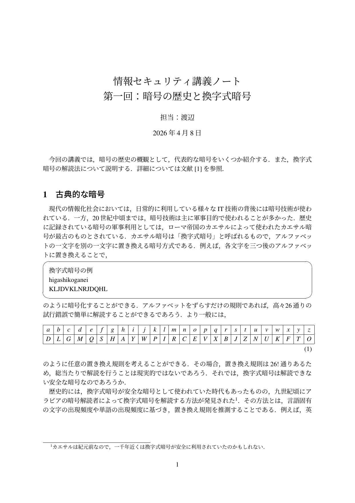
暗号の歴史と換字式暗号 p2
語の文章におけるアルファベットの出現頻度は
表(2)（英語アルファベットの出現頻度，単位％）
| 文字 | a | b | c | d | e | f | g | h | i | j | k | l | m |
|---|---|---|---|---|---|---|---|---|---|---|---|---|---|
| 頻度 | 8.2 | 1.5 | 2.8 | 4.3 | 12.7 | 2.2 | 2.0 | 6.1 | 7.0 | 0.2 | 0.8 | 4.0 | 2.4 |
| 文字 | n | o | p | q | r | s | t | u | v | w | x | y | z |
|---|---|---|---|---|---|---|---|---|---|---|---|---|---|
| 頻度 | 6.7 | 7.5 | 1.9 | 0.1 | 6.0 | 6.3 | 9.1 | 2.8 | 1.0 | 2.4 | 0.2 | 2.0 | 0.1 |
(2)
のようになっていることが知られている．頻出文字は "A sin to err" と覚えておけばよい．各文字の出現頻度が分かっていれば，暗号文の中に一番出現頻度が高い文字は e だろうといった推測や，英単語には「he」の組み合わせが頻出であるといったことを利用することで，解読することができる．ただし，実際には解読には，勘も大事になる．
試しに，以下の換字式暗号で暗号化された文章を，頻度解析に基づき解読してみよう．ただし，難易度を簡単にするために，単語の間にはスペースが設けられている．
（囲み枠） 暗号文 ZLPXV HZS YVRPJJPJR CG RVC EVBA CPBVW GU SPCCPJR YA QVB SPSCVB GJ CQV YZJN ZJW GU QZEPJR JGCQPJR CG WG GJXV GB CHPXV SQV QZW FVVFVW PJCG CQV YGGN QVB SPSCVB HZS BVZWPJR YIC PC QZW JG FPXCIBVS GB XGJEVBSZCPGJS PJ PC ZJW HQZC PS CQV ISV GU Z YGGN CQGIRQC ZLPXV HPCQGIC FPXCIBVS GB XGJEVBSZCPGJ
まず，文章中に現れる各文字の出現頻度を調べると，
表(3)（暗号文中の各文字の出現回数）
| 文字 | A | B | C | D | E | F | G | H | I | J | K | L | M |
|---|---|---|---|---|---|---|---|---|---|---|---|---|---|
| 回数 | 2 | 14 | 26 | 0 | 4 | 4 | 24 | 5 | 6 | 20 | 0 | 2 | 0 |
| 文字 | N | O | P | Q | R | S | T | U | V | W | X | Y | Z |
|---|---|---|---|---|---|---|---|---|---|---|---|---|---|
| 回数 | 3 | 0 | 23 | 14 | 8 | 15 | 0 | 3 | 25 | 8 | 8 | 6 | 15 |
(3)
のようになっている．文章中に一文字で出現しているZに着目しよう．一文字の単語は冠詞の「a」か一人称の「i」しかない．とりあえずここではZはaであるとしてみる．次に，文章中の二文字または三文字の単語をいくつか抜き出してみると，出現回数は
$CG \times 2$ $GU \times 3$ $GB \times 3$ $GJ \times 1$ $CQV \times 3$ $QVB \times 2$ $SQV \times 1$ $QZW \times 2$
のようになる．ここで，QVという組が頻出していることに注目しよう．英語の文章において二文字の組み合わせで最もよく出現するのは「he」である．従って，QVはheであると仮定しよう．すると，CQVとSQVは「the」か「she」である可能性が高い．tの出現率が9.1%，sの出現率は
（ページ番号：2）
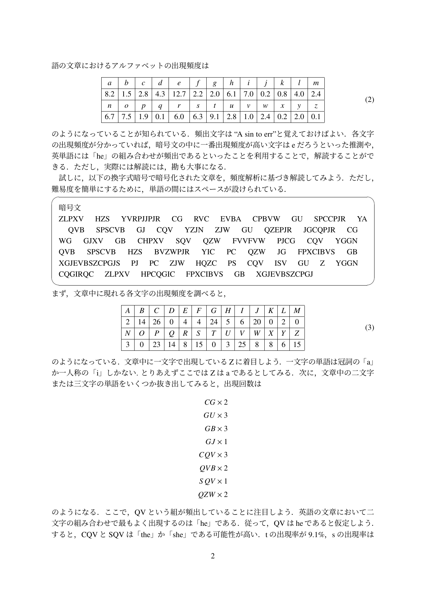
暗号の歴史と換字式暗号 p3
6.3%とtの方が出現率が高く，暗号文にはCが26回，Sが15回なので，とりあえずCQVはthe, SQVはsheであると仮定してみる．すると，CGはt*であるが，tと組み合わさって二文字の単語になるのはtoであると考えられる．従ってGはoである．次に，GU, GB, GJは「on」，「of」，「or」のいずれかであると考えられる（脚注2）．BとJの出現回数に比べてUの出現回数は3回と少ないため，Uはn, f, rの中で最も出現率が低いfであるとしてみよう．
文章中にPC, PS, PJなど，Pで始まる二文字の単語が目に付く．Pは母音である可能性が高いが，まだ使用していない母音はiかuである．Cはtと仮定しており，「ut」という単語は存在しないので，Pはiと仮定しよう．すると，PSはisとなり辻褄が合う．先ほど，Jの候補はnかrとしていたが，「ir」という単語は存在しないので，Jはnであるとし，Bはrであるとしよう．ここまで(仮に)確定させた文字を整理すると
表(4)（暗号文字→推定平文，途中経過）
| 暗号 | A | B | C | D | E | F | G | H | I | J | K | L | M |
|---|---|---|---|---|---|---|---|---|---|---|---|---|---|
| 平文 | r | t | o | n |
| 暗号 | N | O | P | Q | R | S | T | U | V | W | X | Y | Z |
|---|---|---|---|---|---|---|---|---|---|---|---|---|---|
| 平文 | i | h | s | f | e | a |
(4)
のようになる．一部解読した暗号文は
（囲み枠） 解読経過1 aLiXe Has YeRinninR to Ret EerA tireW of sittinR YA her sister on the YanN anW of haEinR nothinR to Wo onXe or tHiXe she haW FeeFeW into the YooN her sister Has reaWinR YIt it haW no FiXtIres or XonEersations in it anW Hhat is the Ise of a YooN thoIRht aLiXe HithoIt FiXtIres or XonEersation
のようになる．今のところ矛盾した単語は現れていないので，これまでの仮定は正しそうである．
ここからは不明な文字が少ない単語から残りの文字を予測していけばよい．まず，「sittinR」は「sitting」であると考えられるので，Rはgとしよう．「Ret」が「get」に，「nothinR」が「nothing」になるので整合性も取れている．「Hhat」は「what」であろう(tはCとしているので，「that」の可能性はない)．すると，「Has」は「was」となる．「anW」は「and」と考えられる．従って，Wはdとしよう．すると，「haW」は「had」となる．ここまでの進展を追加すると，確定した文字は
表(5)（暗号文字→推定平文，途中経過2）
| 暗号 | A | B | C | D | E | F | G | H | I | J | K | L | M |
|---|---|---|---|---|---|---|---|---|---|---|---|---|---|
| 平文 | r | t | o | w | n |
| 暗号 | N | O | P | Q | R | S | T | U | V | W | X | Y | Z |
|---|---|---|---|---|---|---|---|---|---|---|---|---|---|
| 平文 | i | h | g | s | f | e | d | a |
(5)
となり，一部解読した暗号文は
（囲み枠） 解読経過2 aLiXe was Yeginning to get EerA tired of sitting YA her sister on the YanN and of haEing nothing to do onXe or twiXe she had FeeFed into the YooN her sister was reading YIt it had no FiXtIres or XonEersations in it and what is the Ise of a YooN thoIght aLiXe withoIt FiXtIres or XonEersation
（脚注2）「in」，「is」，「it」も考えられるが，まずは「on」，「of」，「or」を試しているだけである．
（ページ番号：3）
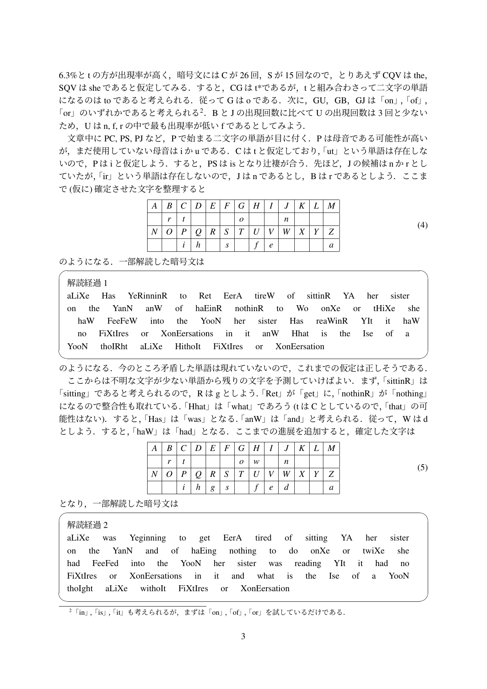
暗号の歴史と換字式暗号 p4
のようになる．
解読を続けよう．「Yeginning」は「beginning」と考えられるので，Yはbとしよう．「withoIt」は「without」と考えられるので，Iはuとしよう．実際，「thoIght」が「thought」になるので整合性が取れている．「onXe or twiXe」は「once or twice」だろう．従って，Xはcとしよう．最後の単語の「XonEersation」はXがcなので「conversation」だろう．従って，Eはvとしよう．文中に何度か出てくる「aLiXe」は「alice」と考えられるので，Lはlとする．「FiXtIres」はXがcでIがuであることを考慮すると，「pictures」だろう．従って，Fはpとしよう．「EerA」はEがvなので，「very」だろう．従って，Aはyとしよう．残るはNであるが，「banN」と「booN」に整合性が取れて未使用な文字はkと考えられる．以上まとめると，確定した文字は
表(6)（暗号文字→平文，最終）
| 暗号 | A | B | C | D | E | F | G | H | I | J | K | L | M |
|---|---|---|---|---|---|---|---|---|---|---|---|---|---|
| 平文 | y | r | t | v | p | o | w | u | n | l |
| 暗号 | N | O | P | Q | R | S | T | U | V | W | X | Y | Z |
|---|---|---|---|---|---|---|---|---|---|---|---|---|---|
| 平文 | k | i | h | g | s | f | e | d | c | b | a |
(6)
となる．D, K, M, O, Tは暗号文に出現しないため，何に対応するのか予測することはできない．解読結果は以下の「不思議の国のアリス」の一節である：
（囲み枠） 解読結果の平文 Alice was beginning to get very tired of sitting by her sister on the bank, and of having nothing to do: once or twice she had peeped into the book her sister was reading, but it had no pictures or conversations in it, and 'what is the use of a book,' thought Alice 'without pictures or conversation?'
1.1 近代の暗号
近代になると，暗号化を行う様々な機械が発明された．例えば，第二次世界大戦の際にドイツのナチス軍が利用していたエニグマが有名である．エニグマはタイプライターの後ろに暗号化する仕組みが内蔵された暗号機で，解読は非常に困難であったそうである．しかしながら，英国の暗号解読部隊の努力により解読に成功し，解読の成功が戦況にも大きな影響を与えたと考えられている．エニグマの暗号解読部隊のリーダーは，コンピューターサイエンス分野で様々な活躍をした Alan Turing である．暗号解読の様子を描いた映画として，「イミテーションゲーム」がある．
1.2 現代の暗号
暗号を学問の対象として初めて研究したのは，Claude Shannon であると考えられている．Shannon は情報理論の創始者でもある．Shannon は暗号システムが安全であることの数学的な定義を与え，安全な暗号システムを構築できる必要条件を導出した．詳細については次回の講義で扱う．
近代以前の暗号と現代暗号には考え方に大きな違いがある．それは，暗号化の仕組みは公開し，暗号化に使う「鍵」だけを秘密にする点である．例えば，前述のエニグマ暗号の仕組みは軍事機密とされており，他の国にはその仕組みは公開されていなかった．英国の暗号解読部隊はエニグマ暗号機を何らかの方法で入手はしていたようであるが，当然ながら不正なルートでの入手である．一方，現在インターネットなどで使われている暗号は仕組みが全て公開されている．近代以前は暗号技術は，軍事関係者などの特定の人だけが利用するものであったのに対して，現代は暗号技術は不特定多数の人が利用するものになっているからである．
（ページ番号：4）
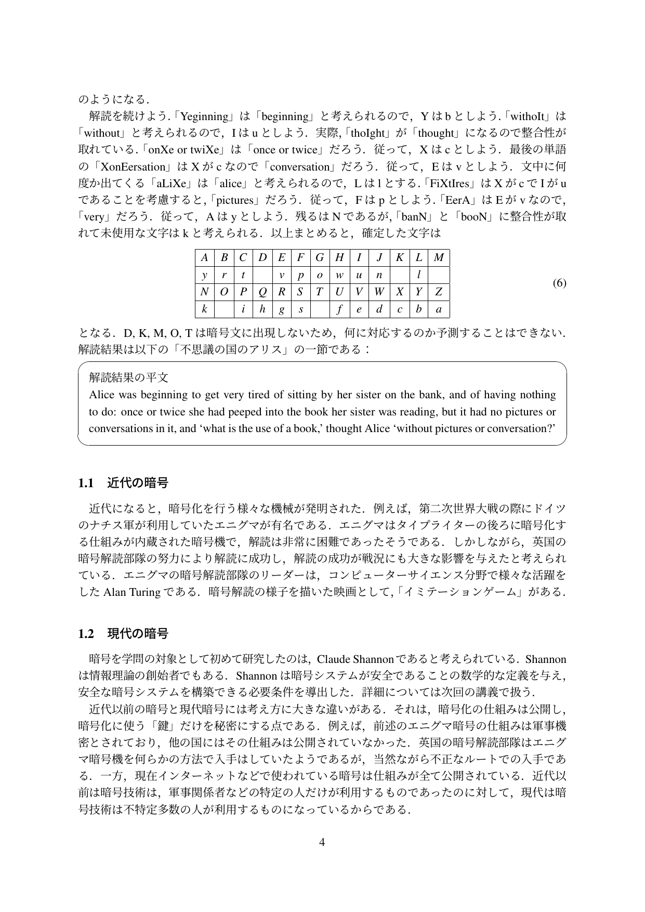
暗号の歴史と換字式暗号 p5
1970年代に起こった暗号のパラダイムシフトとして，Diffie と Hellman による公開鍵暗号の提唱が挙げられる．Diffie と Hellman は 1976年の論文において，公開鍵暗号の概念を提唱した．その後，素因数分解の困難性に基づく RSA(Rivest, Shamir, Adlemann) 暗号や，離散対数問題の困難性に基づく El Gamal 暗号が提案されている．
また，1970年代以降に発展した暗号に関連あるトピックとして，以下のようなものが挙げられる：
- 秘密分散法
- 秘密計算
- ゼロ知識証明
これらのトピックは，後の講義で取り上げる．
2 暗号の攻撃の種類
暗号システムにおいて，暗号化する前のメッセージを「平文」と呼び，暗号化した結果を「暗号文」と呼ぶ．暗号の攻撃には以下の種類がある：
-
単一暗号文攻撃：一つの与えられた暗号文から，元の平文が何であったのか解読する攻撃．1節における換字式暗号の解読は，単一暗号文攻撃に分類される．
-
既知平文攻撃：内容が既知の平文と，その平文に対応する暗号文のペアが(一つもしくは複数)与えられている状況において，同じ鍵で暗号化された別の暗号文の解読を試みる攻撃．換字式暗号は平文と暗号文のペアから変換規則が簡単に分かってしまうため，既知平文攻撃に対しては安全ではない．既知平文攻撃の例として，暗号が軍事目的で使用された場合を想定してみよう．例えば「東から攻撃せよ」という平文Aに対応する暗号文Bを傍受した際に，暗号文B自体は解読できなかったとしても，後に相手が東から攻撃してきたという事実から暗号文Bに対応する平文はAだったのであろうと推測できる．このように，相手の行動から暗号文に対応する平文を推測できることはよくあるので，既知平文攻撃は有効な攻撃手法である．実際，1.1節で紹介したエニグマ暗号は，換字式暗号のように一対の平文と暗号文のペアだけで破られることはないものの，英国の暗号解読部隊は十分な数の平文と暗号文のペアが蓄積し既知平文攻撃を行うことにより解読に成功した．
-
選択平文攻撃：攻撃者が選択した平文に対応する暗号文が入手できる状況において，同じ鍵で暗号化された別の暗号文の解読を試みる攻撃．当然，選択平文攻撃は既知平文攻撃より攻撃者優位な状況である．攻撃者が選択した平文に対応する暗号文を入手できる状況なんて，非現実的だと思われるかもしれない．しかしながら，そのような状況は実際に起こりうるのである．有名な例として，第二次世界大戦時のミッドウェー海戦のエピソードを紹介しよう．アメリカ軍は日本軍の暗号を解析した結果，次の攻撃目標が「AF」であることを突き止めた．他のルートの情報により，「AF」はミッドウェーの可能性が高いことは分かっていたが，確信を持てずにいた．そこで，アメリカ軍は「ミッドウェーで真水製造機が故障」と偽の電文を日本側にリークした．罠にかかった日本軍は「AFで真水欠乏」という電文を
（ページ番号：5）
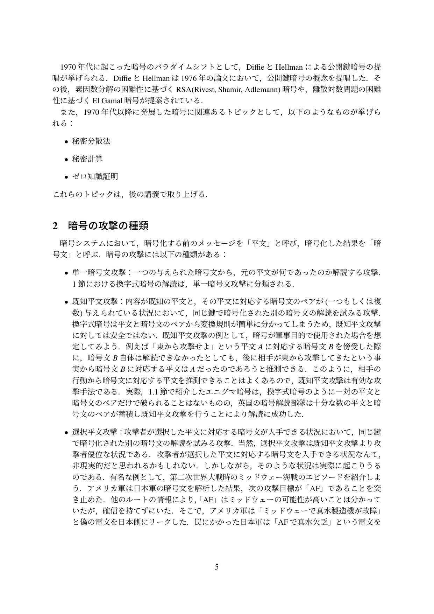
暗号の歴史と換字式暗号 p6
本部に打った（脚注3）．それを傍受したアメリカ軍は，AFがミッドウェーを表すということに確信を持った．これは選択平文攻撃の一例である．
- 選択暗号文攻撃：攻撃者が選択した暗号文に対応する平文を入手できる状況において，同じ鍵で暗号化された別の暗号文の解読を試みる攻撃．例えば，選択平文攻撃で紹介したエピソードにおいて（脚注4），アメリカ軍が「三日後のXY時にAFを攻撃せよ」という暗号文を傍受したとする．「XY時」が何時なのか知りたいわけである．そこで，アメリカ軍が日本軍本部になりすまして，「前日のXY時に準備状況を報告せよ」という暗号文を日本軍に送ったとしよう．すると，(なりすましが見破られなければ)日本軍はXYに対応する時間に準備状況の報告を行い，その報告を傍受することでXY時が何時なのか知ることができる．このように，選択暗号文攻撃は，「なりすまし」と密接に関連している．
3 演習問題
- 以下の換字式暗号で暗号化された暗号文を解読せよ（脚注5）．
（囲み枠：暗号文） AWY GZKR UKQ STYYK NC WYUJAH DYJY HYUAYQ NK AWYZJ AWJNKY DWYK AWYX UJJZIYQ DZAW U RJYUA PJNDQ UHHYBOFYQ UONTA AWYB UFF HNJAH NC FZAAFY OZJQH UKQ OYUHAH UH DYFF UH AWY DWNFY LUPG NC PUJQH AWY GKUIY DUH HAUKQZKR OYCNJY AWYB ZK PWUZJH DZAW U HNFQZYJ NK YUPW HZQY AN RTUJQ WZB UKQ KYUJ AWY GZKR DUH AWY DWZAY JUOOZA DZAW U AJTBLYA ZK NKY WUKQ UKQ U HPJNFF NC LUJPWBYKA ZK AWY NAWYJ ZK AWY IYJX BZQQFY NC AWY PNTJA DUH U AUOFY DZAW U FUJRY QZHW NC AUJAH TLNK ZA AWYX FNNGYQ HN RNNQ AWUA ZA BUQY UFZPY STZAY WTKRJX AN FNNG UA AWYB Z DZHW AWYX WUQ RYA AWY AJZUF QNKY HWY AWNTRWA UKQ WUKQ JNTKQ AWY JYCJYHWBYKAH OTA AWYJY HYYBYQ AN OY KN PWUKPY NC AWZH HN AWY OYRUK FNNGZKR UA YIYJXAWZKR UONTA WYJ AN AUHH AWY AZBY
なお，暗号文中の各文字の出現回数は以下の通りである．
表（演習1：暗号文中の各文字の出現回数）
| 文字 | A | B | C | D | E | F | G | H | I | J | K | L | M |
|---|---|---|---|---|---|---|---|---|---|---|---|---|---|
| 回数 | 64 | 12 | 9 | 15 | 0 | 19 | 7 | 33 | 4 | 33 | 34 | 5 | 0 |
| 文字 | N | O | P | Q | R | S | T | U | V | W | X | Y | Z |
|---|---|---|---|---|---|---|---|---|---|---|---|---|---|
| 回数 | 40 | 12 | 11 | 27 | 13 | 2 | 12 | 52 | 0 | 49 | 7 | 74 | 34 |
- インターネットにおいて，既知平文攻撃の例を考えよ．
（脚注3）「で真水欠乏」の部分も暗号化されていたはずであるが，固有名詞以外については既知平文攻撃で解読済であったのであろう． （脚注4）これは架空の話． （脚注5）文章が長いように感じるかもしれないが，暗号解読は文章が長ければ長いほど解読者に有利である．
（ページ番号：6）
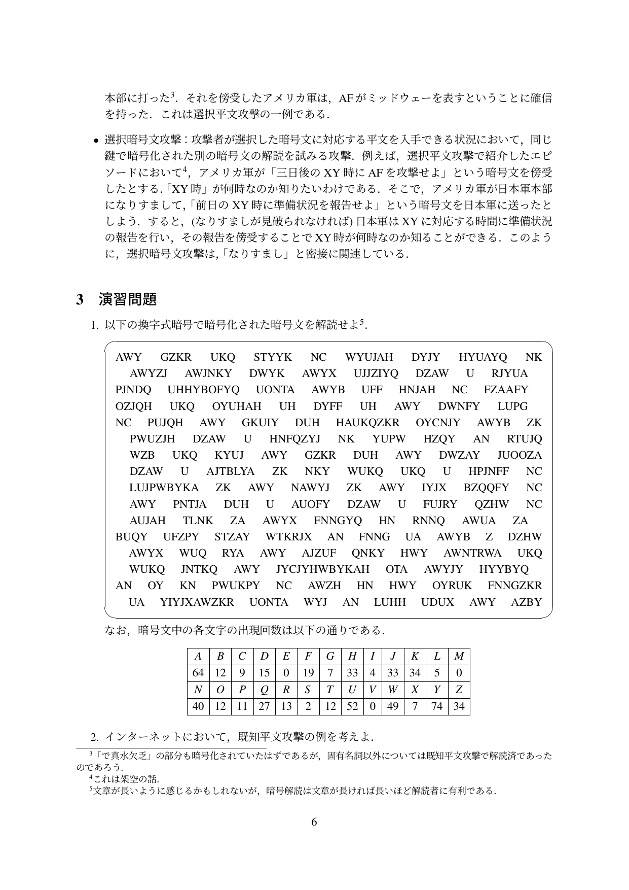
暗号の歴史と換字式暗号 p7
参考文献
[1] サイモン・シン, "暗号解読," 新潮文庫, 2007.
（ページ番号：7）
要点まとめ
- カエサル暗号：ローマ帝国のカエサルが使用したとされる，記録に残る最古の軍事暗号．各文字を一定数（例：3文字）後ろのアルファベットに置き換える換字式暗号の一種．
- 換字式暗号（単一換字式暗号）：アルファベットの一文字を別の一文字に置き換える暗号方式．置き換え規則は一般には$26!$通りあり総当たりは非現実的だが，頻度分析により解読可能．
- 頻度分析（頻度解析）：九世紀頃にアラビアの暗号解読者が発見したとされる換字式暗号の解読法．言語固有の文字出現頻度（例：eが12.7%で最頻出，"A sin to err"の語呂合わせ）や，頻出する2文字組（例：he）・単語（the, she等）をもとに置き換え規則を推測する．
- 頻度分析の実演例として，"Alice was beginning to get very tired of sitting by her sister on the bank..."（『不思議の国のアリス』冒頭）が換字式暗号の解読対象として使われている．
- エニグマ：第二次世界大戦でナチス・ドイツ軍が使用した暗号機．タイプライター状で暗号化機構を内蔵し，解読は非常に困難とされた．
- Alan Turing：英国の暗号解読部隊のリーダーで，エニグマ解読に成功．コンピューターサイエンス分野でも様々な活躍をした．解読の様子を描いた映画に『イミテーションゲーム』がある．
- Claude Shannon：暗号を学問として初めて研究したとされる人物．情報理論の創始者でもあり，暗号システムが安全であることの数学的定義と，安全な暗号システムを構築するための必要条件を与えた．
- 近代以前と現代暗号の違い：近代以前は暗号化の仕組み自体が軍事機密（非公開）だったが，現代（インターネット時代）は暗号化の仕組みは公開し，「鍵」のみを秘密にする．
- Diffie と Hellman：1976年の論文で公開鍵暗号の概念を提唱．1970年代の暗号のパラダイムシフトとされる．
- RSA暗号（Rivest, Shamir, Adlemann）：素因数分解の困難性に基づく公開鍵暗号．
- El Gamal暗号：離散対数問題の困難性に基づく公開鍵暗号．
- 1970年代以降に発展した関連トピック：秘密分散法，秘密計算，ゼロ知識証明（いずれも後の講義で詳説）．
- 平文／暗号文：暗号化前のメッセージを平文，暗号化した結果を暗号文と呼ぶ．
- 暗号攻撃の種類：
- 単一暗号文攻撃：一つの暗号文のみから元の平文を解読する攻撃（1節の換字式暗号解読はこれに該当）．
- 既知平文攻撃：既知の平文と対応する暗号文のペアを用いて，同じ鍵で暗号化された別の暗号文を解読する攻撃．換字式暗号は既知平文攻撃に対して安全でない．例：「東から攻撃せよ」の例，エニグマ解読（十分な平文・暗号文ペアの蓄積による）．
- 選択平文攻撃：攻撃者が選択した平文に対応する暗号文を入手できる状況での攻撃．既知平文攻撃より攻撃者に有利．例：ミッドウェー海戦における「AF」＝ミッドウェーの確認（偽の電文「真水製造機が故障」をリークし，日本軍の「AFで真水欠乏」という応答を傍受）．
- 選択暗号文攻撃：攻撃者が選択した暗号文に対応する平文を入手できる状況での攻撃．「なりすまし」と密接に関連．例：日本軍本部になりすまして「XY時」の意味を割り出す架空の例．
- 参考文献：サイモン・シン『暗号解読』新潮文庫，2007年．
共通鍵暗号の安全性とシャノンの定理（全6ページ）
共通鍵暗号の安全性とシャノンの定理 p1
情報セキュリティ講義ノート 第二回：共通鍵暗号の安全性とシャノンの定理
担当：渡辺
2026年4月15日
今回の講義では，共通鍵暗号の安全性の定義の一つとして，情報理論的安全性について述べる．そして，情報理論的安全性を満たす暗号の例としてワンタイムパッドを紹介し，情報理論的安全性を満たす暗号の必要条件として，シャノンの定理を説明する．
1 情報理論の基本事項
本節では情報理論の基本事項を復習しておく．
$X$を$\{1,\dots,M\}$に値をとる確率変数とする．確率変数$X$の分布を$P_X$とすると$X$のエントロピーは（脚注1）
$$H(X) = \sum_{x=1}^{M} P_X(x) \log \frac{1}{P_X(x)} \tag{1}$$
で定義される．ただし，logの底は2とする．大雑把に言って，エントロピーとは確率変数$X$の不確かさを表す量である．
$(X,Y)$を$\{1,\dots,M\}\times\{1,\dots,N\}$上に値をとる確率変数の組とする．$(X,Y)$の結合分布を$P_{XY}$とすると，確率変数の組に対して結合エントロピーは
$$H(X,Y) = \sum_{x=1}^{M}\sum_{y=1}^{N} P_{XY}(x,y) \log \frac{1}{P_{XY}(x,y)} \tag{2}$$
で定義される．三つ以上の確率変数の組$(X_1,\dots,X_n)$に対しても，結合エントロピー$H(X_1,\dots,X_n)$は同様に定義される．
$Y$が与えられたもとでの$X$の条件付きエントロピーは
$$H(X|Y) = \sum_{x=1}^{M}\sum_{y=1}^{N} P_{XY}(x,y) \log \frac{1}{P_{X|Y}(x|y)} \tag{3}$$
で定義される．ただし，$P_{X|Y}(x|y)$は$Y=y$のもとでの$X$の条件付確率分布である．条件付エントロピーは$Y$を知ったときの$X$の不確かさを表している．確率変数の三つ組$(X,Y,Z)$に対しても条件付エントロピー$H(X|Y,Z), H(X,Y|Z), H(Y|X,Z)$等は同様に定義される．
エントロピーには以下の重要な性質が成り立つ（脚注2）：
（脚注1: 教科書によっては分布を$p$のように表記することもあるが，どの確率変数の分布なのかを明確にするために，$P_X$のように下添字を付けることを推奨する．） （脚注2: 性質1-4は情報理論の講義で扱ったので，ここでは性質5と性質6だけ証明を与える．）
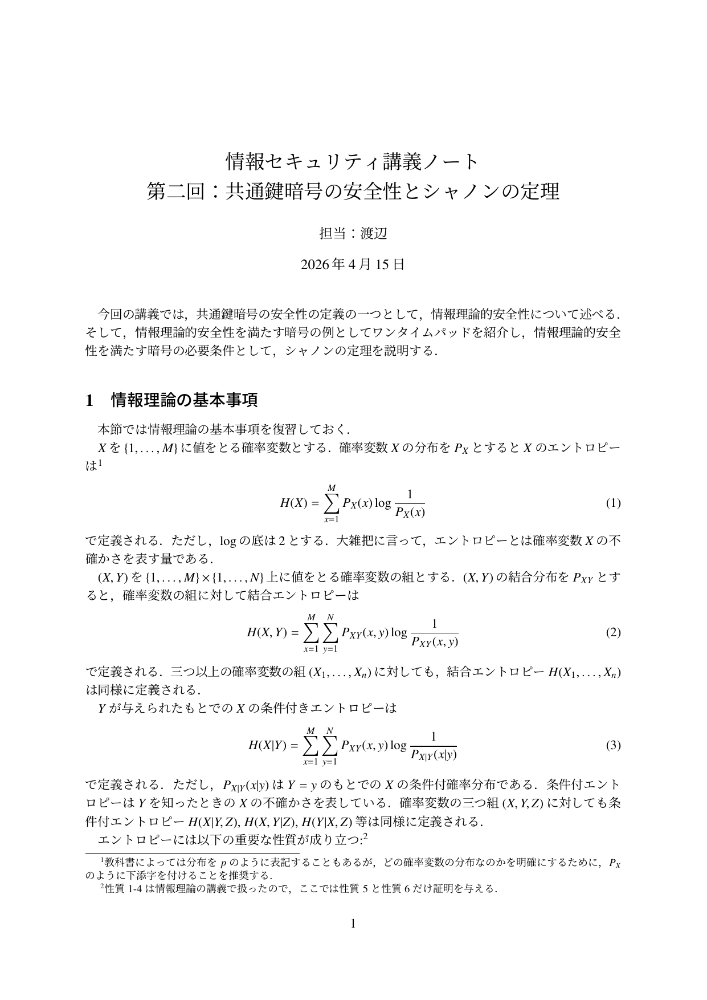
共通鍵暗号の安全性とシャノンの定理 p2
- 非負性
$$H(X) \ge 0,\ H(X|Y) \ge 0,\ \text{etc.} \tag{4}$$
- 最大値
$$H(X) \le \log M \tag{5}$$
等号が成り立つのは分布$P_X$が$\{1,\dots,M\}$上の一様分布であるときかつそのときに限る．
- チェイン則
$$H(X,Y) = H(X) + H(Y|X), \tag{6}$$ $$H(X,Y|Z) = H(Y|Z) + H(X|Y,Z), \tag{7}$$ $$\text{etc.} \tag{8}$$
- 条件付によってエントロピーは非増加
$$H(X) \ge H(X|Y),\ \text{etc.} \tag{9}$$
等号は$X$が$Y$と統計的に独立，すなわち$P_{X|Y}(x|y) = P_X(x)$が全ての$(x,y)$で成り立つときかつそのときに限る．
- 関数値のエントロピーは0：$X = f(Y,Z)$となる関数$f$が存在するとき，
$$H(X|Y,Z) = 0 \tag{10}$$
証明) 任意の$(y,z)$に対して，条件付確率は$x=f(y,z)$が成り立つときは$P_{X|YZ}(x|y,z)=1$で，$x \ne f(y,z)$のときは$P_{X|YZ}(x|y,z)=0$である．従って，$(Y,Z)=(y,z)$の条件でのエントロピーは$H(X|Y=y,Z=z)=0$となる．条件付エントロピーは$H(X|Y=y,Z=z)$を$(Y,Z)$の分布$P_{YZ}$に関して平均したものなので，0である．
- 関数によりエントロピーは増加しない：任意の関数$f: \{1,\dots,M\}\times\{1,\dots,N\} \to \{1,\dots \ell\}$に対して
$$H(X|Y) \ge H(f(X,Y)|Y) \tag{11}$$
が成り立つ．特に，関数$f$が可逆であるとき，すなわち$X = g(f(X,Y),Y)$となる関数$g$が存在するとき，等号が成り立つ．証明) $Z=f(X,Y)$とおくと，チェイン則により
$$H(X,Z|Y) = H(Z|Y) + H(X|Z,Y) \tag{12}$$ $$\ge H(Z|Y) \tag{13}$$
が成り立つ．ただし，不等式ではエントロピーの非負性を用いた．一方，別の展開方法でチェイン則を用いると
$$H(X,Z|Y) = H(X|Y) + H(Z|X,Y) \tag{14}$$ $$= H(X|Y) \tag{15}$$
が成り立つ．ただし，二番目の等号では，性質5により$H(Z|X,Y)=0$となることを用いた．従って，不等式(11)が成り立つ．また，$f$が可逆であるとき$X=g(Z,Y)$なので，不等式(11)の$X$と$Z$を入れ替えて使うことで$H(X|Y) \le H(Z|Y)$が成り立つため，式(11)において等号が成り立つ．
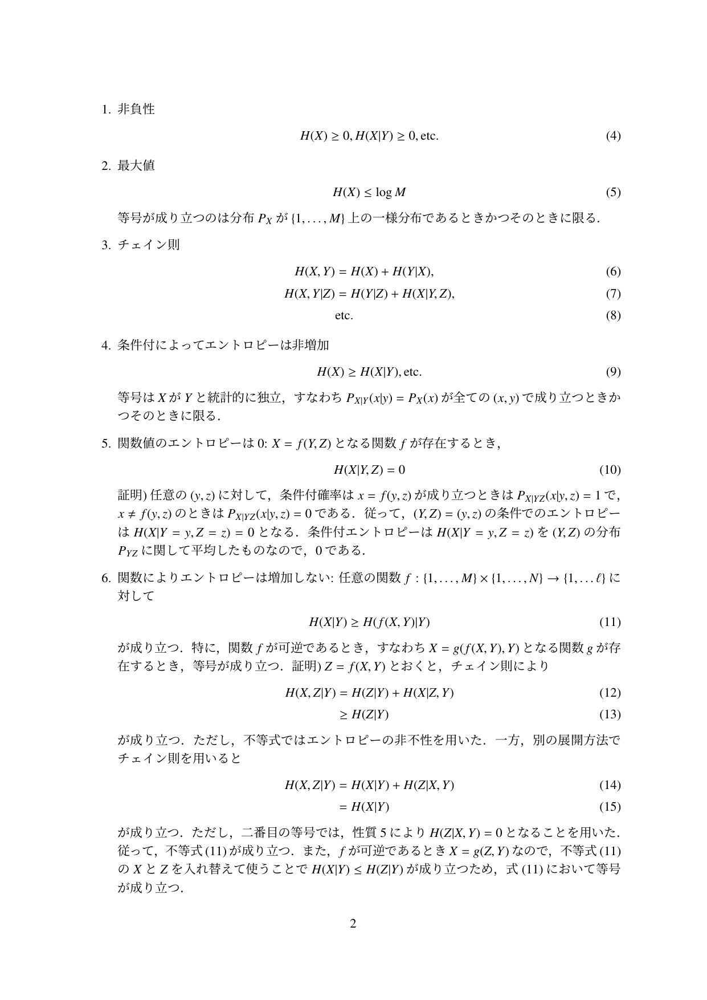
共通鍵暗号の安全性とシャノンの定理 p3
2 共通鍵暗号
共通鍵暗号システムでは，送信者Aliceが受信者Bobへ秘密のメッセージ$M$を送りたい状況を考える．通信内容は盗聴者Eveに傍受されているため，そのまま送ってしまうとメッセージ$M \in \{0,1\}^n$の内容が漏れてしまう．そこで，Aliceはあらかじめ Bobと共有しておいた秘密鍵$K$を使って暗号化し，暗号文
$$C = f(M,K) \tag{16}$$
を送る．Bobは受信した暗号文$C \in \{0,1\}^\ell$を秘密鍵$K \in \{0,1\}^\ell$を使いで復号し，メッセージ
$$M = g(C,K) \tag{17}$$
を得る．
では，上記のような共通鍵暗号システムの安全性をどのように定義すればよいのだろうか．直感的には，暗号文を見ても，見ない場合に対して予測精度が向上しなければ安全そうである．このことは以下のように定式化される．
メッセージ$M$の確率分布$P_M$と秘密鍵$K$の確率分布$P_K$が与えられたとき（脚注3），暗号化$f$からメッセージ$M$と暗号文$C$の結合分布は
$$P_{MC}(m,c) = \sum_{k\in\{0,1\}^\ell} P_M(m)P_K(k)\mathbf{1}[f(m,k)=c].$$
のように計算される．
定義1 共通鍵暗号システムが情報理論的に安全であるとは，
$$P_{M|C}(m|c) = P_M(m), \quad \forall(m,c) \tag{18}$$
が成り立つことと定める．
命題2 共通鍵暗号システムが情報理論的に安全であることは
$$H(M|C) = H(M) \tag{19}$$
が成り立つことと同値である．
命題3 共通鍵暗号システムが情報理論的に安全であることは
$$P_{C|M}(c|m) = P_C(m), \quad \forall(m,c) \tag{20}$$
が成り立つことと同値である．
（脚注3: 通常，メッセージと秘密鍵は統計的に独立であることを仮定する．）
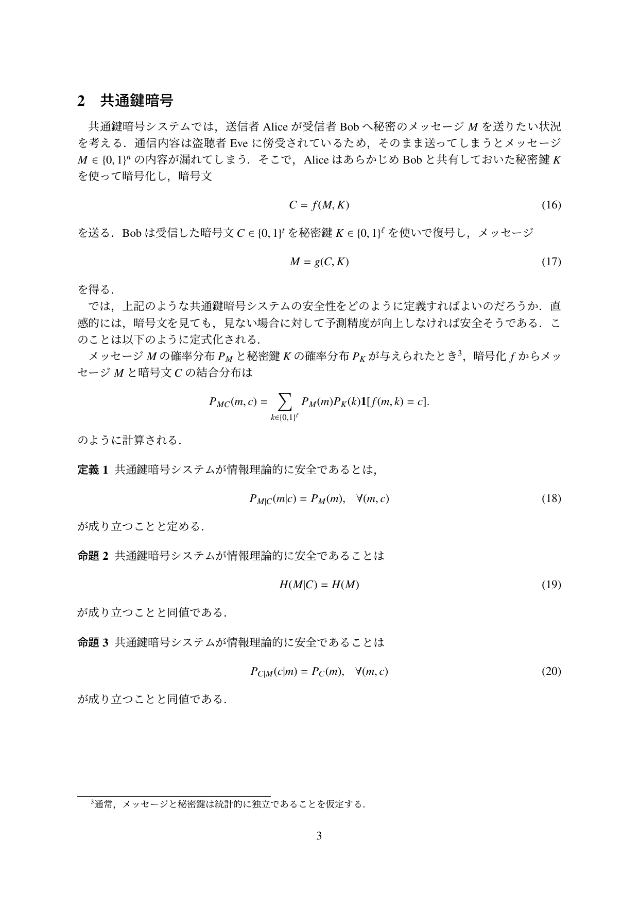
共通鍵暗号の安全性とシャノンの定理 p4
2.1 ワンタイムパッド（バーナム暗号）
式(19)の安全性（もしくは式(18)）を満たす暗号化方式として，ワンタイムパッドがある．
$M = (M_1,\dots,M_n)$を$\{0,1\}^n$上の値をとる$n$ビットのメッセージとし，$K=(K_1,\dots,K_n)$を$M$とは統計的に独立な$\{0,1\}^n$上の一様ランダムな鍵とする（脚注4）．このとき，
$$C = E(M,K) = (M_1 \oplus K_1, \dots, M_n \oplus K_n) \tag{21}$$
によって定まる暗号化方式をワンタイムパッドと呼ぶ．ただし，$\oplus$は排他的論理和とする．
定理4 ワンタイムパッドは情報理論的な安全性を満たす．
証明 二通りの証明を与える．一つ目の証明では，式(19)が成り立つことを確認する．まず，以下のような式変形が成り立つ：
$$H(M|C) = H(M,C) - H(C) \tag{22}$$ $$= H(M) + H(C|M) - H(C) \tag{23}$$ $$= H(M) + H(M_1\oplus K_1,\dots,M_n\oplus K_n \mid M_1,\dots,M_n) - H(C) \tag{24}$$ $$= H(M) + H(K_1,\dots,K_n \mid M_1,\dots,M_n) - H(C) \tag{25}$$ $$= H(M) + H(K_1,\dots,K_n) - H(C) \tag{26}$$ $$= H(M) + n - H(C) \tag{27}$$ $$\ge H(M) + n - n \tag{28}$$ $$= H(M). \tag{29}$$
ただし，式(22)と式(23)では性質3，式(25)では性質6，式(26)では性質4，式(27)と式(28)では性質2を用いた（脚注5）．一方，性質4より$H(M|C) \le H(M)$なので，式(19)が成り立つ．
別証明では，式(20)が成り立つことを確認する．任意の$m=(m_1,\dots,m_n)$と$c=(c_1,\dots,c_m)$に対して
$$P_{C|M}(c|m) = \sum_{k\in\{0,1\}^n} \frac{1}{2^n}\mathbf{1}[(m_1\oplus k_1,\dots,m_n\oplus k_n)=(c_1,\dots,c_n)]$$ $$= \sum_{k\in\{0,1\}^n} \frac{1}{2^n}\mathbf{1}[(k_1,\dots,k_n)=(m_1\oplus c_1,\dots,m_n\oplus c_n)]$$ $$= \frac{1}{2^n}$$
が成り立つ．従って，
$$P_C(c) = \sum_{m\in\{0,1\}^n} P_M(m)P_{C|M}(c|m)$$ $$= \sum_{m\in\{0,1\}^n} P_M(m)\frac{1}{2^n}$$ $$= \frac{1}{2^n}$$
となり，式(20)が成り立つ．□
（脚注4: 各値を確率$1/2^n$でとるということ．） （脚注5: 実際には暗号文$C$の分布は一様分布であるため式(28)は等号で成り立つ．）
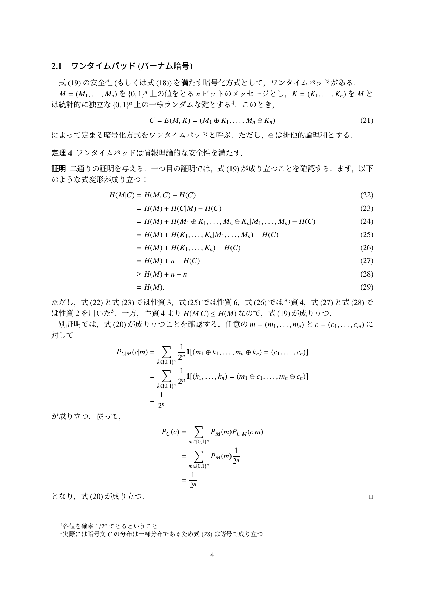
共通鍵暗号の安全性とシャノンの定理 p5
2.2 シャノンの定理
ワンタイムパッドは$n$ビット送るのに$n$ビットの鍵が必要なため非常に効率が悪い．もっと効率がよい方法はあるのだろうか？残念ながら，安全性を担保したままワンタイムパッドより効率をよくすることはできないことがシャノンによって示されている．
定理5 式(19)の安全性を満たす任意の共通鍵暗号システムに対して，
$$H(K) \ge H(M) \tag{30}$$
が成り立つ．
証明 演習課題参照．□
上記定理は，メッセージが$\{0,1\}^n$上を一様に分布しているとき，ワンタイムパッドより効率が良い方法はないことを述べている（脚注6）．メッセージに偏りがあるときは，データ圧縮によって$H(M)$ビットに圧縮してからワンタイムパッドを使うのが最も効率が良い方法である．
3 識別ゲーム
後の講義のために，識別ゲームと呼ばれる概念を導入しておく．二つのメッセージ$m_0, m_1 \in \{0,1\}^n$に対して，コイン$B \in \{0,1\}$をランダムに投げ，
$$B=0 \implies C = E(m_0,K),$$ $$B=1 \implies C = E(m_1,K)$$
とする．このとき，$C$の値を見て，$B$の値を予測することはできるだろうか．このように，どちらのメッセージが暗号化されているのか$B$の値を予測するゲームを識別ゲームと呼び，$B$の値を正しく当てることができたとき，勝ちとする．ワンタイムパッドでは
$$P_{M|C}(m_0|c) = P_{M|C}(m_1|c)$$
であるので，暗号文$C$をみて$B$の値を正解する確率は高々$1/2$である．後の講義で，安全性の定義を若干弱めて，より効率的な暗号化法を説明する．その際に，このような識別ゲームを考え，ゲームに勝つ確率が高々$1/2+\varepsilon$であれば安全であるとみなす．
4 演習問題
- 命題2が成り立つ理由を述べよ．
（脚注6: 共通鍵暗号システムはインターネット等で使われているが，商用目的等では式(19)より弱い安全性を満たせば十分なため，ワンタイムパッドより効率が良い方法が採用されている．）
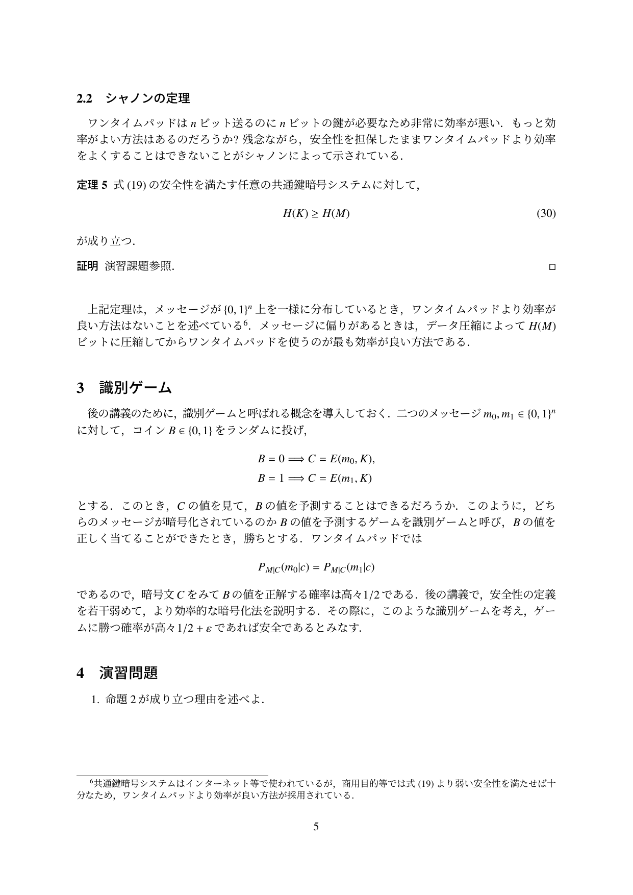
共通鍵暗号の安全性とシャノンの定理 p6
- 定理5は以下のように証明できる．各式変形(31)-(36)が成り立つ理由をそれぞれ述べよ．
$$H(M) = H(M|C) \tag{31}$$ $$= H(M|C) - H(M|C,K) \tag{32}$$ $$= H(M|C) - \big[H(M,K|C) - H(K|C)\big] \tag{33}$$ $$= H(K|C) - H(K|M,C) \tag{34}$$ $$\le H(K|C) \tag{35}$$ $$\le H(K). \tag{36}$$
- RSA公開鍵暗号システムにおいて，$S=d$を秘密鍵，$P=(N,e)$を公開鍵とし，メッセージ$M$を公開鍵$P$を使用して$C=f(M,P)$に暗号化したとき，この暗号システムは情報理論的安全性，すなわち
$$H(M|C,P) = H(M) \tag{37}$$
が成り立つか，成り立たないか議論せよ（脚注7）．
（脚注7: 公開鍵暗号システムでは公開鍵は盗聴者に知られているため，$H(M|C)$ではなく$H(M|C,P)$とする．）
要点まとめ
- エントロピー: $H(X) = \sum_x P_X(x)\log\frac{1}{P_X(x)}$（logの底は2）。確率変数の不確かさを表す量。
- 結合エントロピー: $H(X,Y) = \sum_{x,y} P_{XY}(x,y)\log\frac{1}{P_{XY}(x,y)}$。
- 条件付きエントロピー: $H(X|Y) = \sum_{x,y} P_{XY}(x,y)\log\frac{1}{P_{X|Y}(x|y)}$。
- エントロピーの性質6つ：
- 非負性 $H(X)\ge0$
- 最大値 $H(X)\le \log M$（等号は一様分布のときかつそのときに限る）
- チェイン則 $H(X,Y)=H(X)+H(Y|X)$
- 条件付けで非増加 $H(X)\ge H(X|Y)$（等号は統計的独立のときかつそのときに限る）
- 関数値のエントロピーは0：$X=f(Y,Z)$ならば $H(X|Y,Z)=0$
- 関数によりエントロピーは増加しない：$H(X|Y)\ge H(f(X,Y)|Y)$（$f$が可逆なら等号）
- 共通鍵暗号システム: 暗号化 $C=f(M,K)$、復号 $M=g(C,K)$。
- 定義1（情報理論的安全性）: $P_{M|C}(m|c) = P_M(m)$ が全ての $(m,c)$ で成立すること。
- 命題2: 情報理論的安全性 $\iff H(M|C)=H(M)$。
- 命題3: 情報理論的安全性 $\iff P_{C|M}(c|m)=P_C(m)$（全ての$(m,c)$で）。
- ワンタイムパッド（バーナム暗号）: $C=E(M,K)=(M_1\oplus K_1,\dots,M_n\oplus K_n)$、$K$は$M$と独立な$\{0,1\}^n$上の一様ランダム鍵。
- 定理4: ワンタイムパッドは情報理論的安全性を満たす。証明は2通り（エントロピーの式変形による方法、$P_{C|M}$が一様分布であることを直接示す方法）。
- シャノンの定理（定理5）: 情報理論的安全性を満たす任意の共通鍵暗号システムについて $H(K) \ge H(M)$ が成り立つ（証明は演習課題）。すなわち、安全性を保つ限りワンタイムパッド（$H(K)=n=H(M)$の場合）より効率の良い方式は存在しない。メッセージに偏りがある場合は、データ圧縮で$H(M)$ビットに圧縮してからワンタイムパッドを使うのが最も効率的。
- 識別ゲーム: メッセージ$m_0,m_1$、コイン$B$を投げ$C=E(m_B,K)$とし、$C$から$B$を予測するゲーム。ワンタイムパッドでは $P_{M|C}(m_0|c)=P_{M|C}(m_1|c)$ なので勝率は高々$1/2$。後の講義で使う「ゲームに勝つ確率が高々$1/2+\varepsilon$なら安全」という緩めた安全性定義の伏線。
- 演習問題（解答なし、問題文のみ）:
- 命題2が成り立つ理由を述べよ。
- 定理5の証明における式(31)〜(36)の各変形の理由をそれぞれ述べよ。
- RSA公開鍵暗号システムが情報理論的安全性 $H(M|C,P)=H(M)$ を満たすか議論せよ。
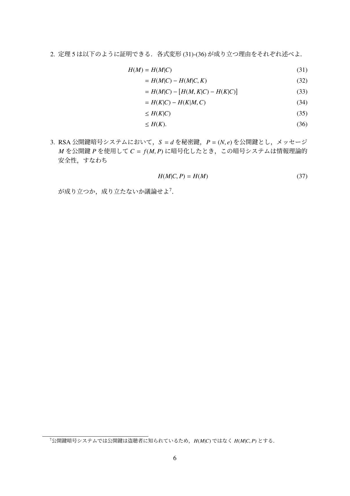
暗号学的擬似乱数生成器（全5ページ）
暗号学的擬似乱数生成器 p1
情報セキュリティ講義ノート 第三回：暗号学的擬似乱数生成器
担当：渡辺 2026年4月22日
今回の講義では，暗号学的擬似乱数生成器の安全性について述べる．特に，「計算量的安全性」の概念について述べる．ただし，本講義は計算量理論の詳細を述べることが目的ではないので，厳密な定義は扱わない．計算量として，入力サイズの「線形オーダー」，「多項式オーダー」，「指数オーダー」があり，指数オーダーの計算量を要するアルゴリズムは現実的ではないといった認識程度を持っていれば十分である．
1 擬似乱数生成器の定義
擬似乱数生成器について述べる前に，まずは真性乱数とは何か定義しておく．自然数 $n$ に対して，$n$ ビットの真性乱数 $(X_1,\dots,X_n)$ とは
$$\Pr((X_1,\dots,X_n)=(x_1,\dots,x_n)) = \frac{1}{2^n}$$
が任意の $(x_1,\dots,x_n) \in \{0,1\}^n$ に対して成り立つことと定める．つまり，全ての実現値が等確率で起こりうるということである．
次に，擬似乱数生成器の例として，線形シフトフィードバックレジスタ (Linear Feedback Shift Register: LFSR) を取り上げる．状態数 $\ell$ の LSFR は時刻 $t$ において $\ell$ 個の状態 $(s_\ell^{(t)},\dots,s_1^{(t)}) \in \{0,1\}^\ell$ から成り，規則
$$s_i^{(t+1)} := s_{i+1}^{(t)}, \quad i = 1,\dots,\ell-1,$$ $$s_\ell^{(t+1)} := \bigoplus_{i=1}^{\ell} c_i \cdot s_i^{(t)}$$
によって遷移する．ただし，$c_1,\dots,c_\ell \in \{0,1\}$ である．
例として，図1に状態数が $\ell = 3$ で $(c_1,c_2,c_3) = (1,0,1)$ とした LFSR を示す．$\ell = 3$ ビットの
（次ページに続く）
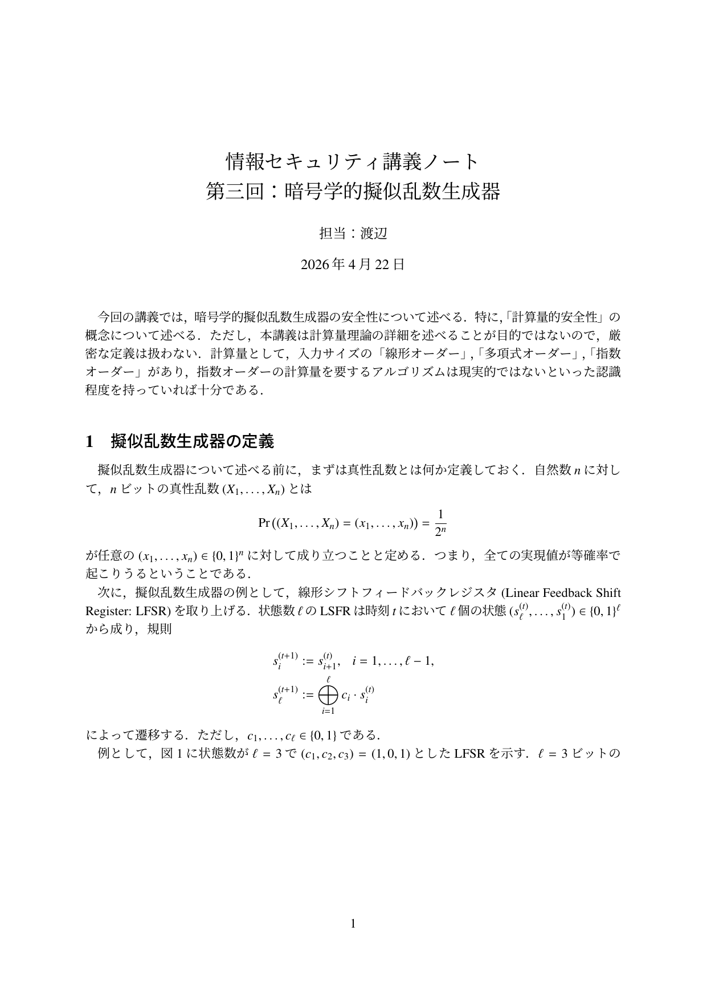
暗号学的擬似乱数生成器 p2
図1の内容：状態数が $\ell = 3$ で $(c_1,c_2,c_3) = (1,0,1)$ とした LFSR の回路図。$s_4, s_3, s_2, s_1$ の4個のレジスタ（正しくは $\ell=3$ に対応する図で、シフトレジスタ列 $s_4, s_3, s_2, s_1$ が描かれ、$s_3$ と $s_1$ の出力がXOR（$\oplus$）ゲートを経由してフィードバックされ、$s_4$ に入力される構造。右端の $s_1$ から出力が取り出される。左端にはフィードバックのループが描かれている。
図1のキャプション：「状態数が $\ell = 3$ で $(c_1,c_2,c_3) = (1,0,1)$ とした LFSR．」
シード乱数により初期状態を $(011)$ に定めたとすると，状態は
$(011)$ $(101)$ $(010)$ $(001)$ $(100)$ $(110)$ $(111)$
のように遷移し，もう一度遷移すると初期状態 $(011)$ に戻る（周期7）．各時刻における $s_1$ を出力とすることにすると，出力系列
$$(X_1X_2X_3X_4X_5X_6X_7) = (1101001)$$
が得られる．このことを数学的に表現すると，$F: \{0,1\}^3 \to \{0,1\}^7$ と書ける（脚注1）．
一般に，擬似乱数生成器とは，関数
$$F: \{0,1\}^\ell \to \{0,1\}^n$$
で $n > \ell$ となるものである．$\ell$ をシード長，$n$ を出力長と呼ぶ．
2 擬似乱数生成器の安全性
擬似乱数生成器の出力は真性乱数と識別できるだろうか．シード長が $\ell$ のとき，擬似乱数生成器 $F$ によって出力され得る系列は高々 $2^\ell$ 種類である（単射でない場合にはもっと少ない）．擬似乱数生成器の値域を $\mathcal{E} = \mathrm{Im}(F) \subset \{0,1\}^n$ と書くことにしよう．
次のような識別ゲームを考えることにする．$S^\ell = (S_\ell,\dots,S_1) \in \{0,1\}^\ell$ を一様なシードとし，その出力を $X^n = (X_1,\dots,X_n) = F(S^\ell)$ とする．一方，$Y^n = (Y_1,\dots,Y_n)$ を $n$ ビットの真性乱数とする．コイン $B \in \{0,1\}$ を投げ，
$$Z^n = \begin{cases} X^n & \text{if } B = 0 \\ Y^n & \text{if } B = 1 \end{cases}$$
脚注1：一周期で出力を止めているため出力空間は $\{0,1\}^7$ としているが，出力を続けることで出力空間は大きくすることはできる．
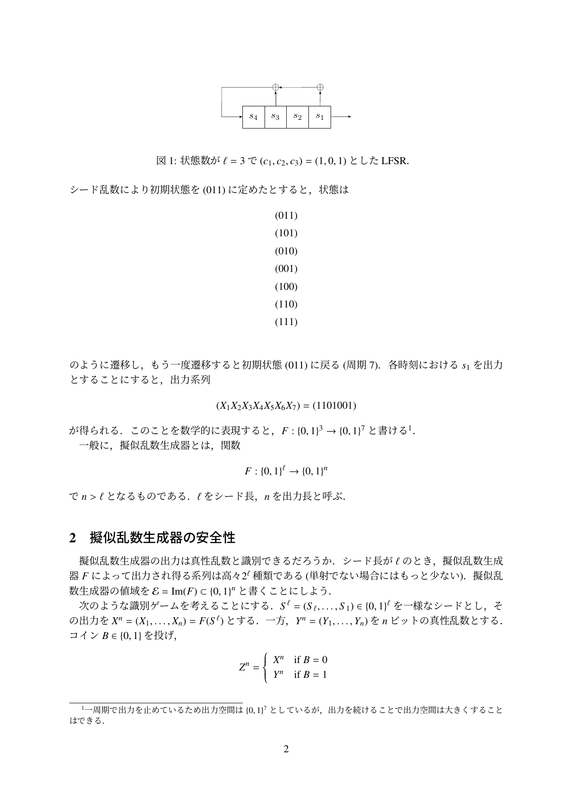
暗号学的擬似乱数生成器 p3
とする．つまり，$B = 0$ であるときは $Z^n$ は擬似乱数とし，$B = 1$ であるときは真性乱数であるとする．このとき，$Z^n$ を見て，$B = 0$ だったのか $B = 1$ だったのか当てることができれば勝ちである．
次のような検定法を考える．$Z^n$ を観測した際に $B$ の推定値として，
$$Z^n \in \mathcal{E} \implies \hat{B} = 0 \text{ を出力},$$ $$Z^n \notin \mathcal{E} \implies \hat{B} = 1 \text{ を出力}$$
と定める．ただし，$\mathcal{E} = \mathrm{Im}(F)$ は擬似乱数生成器の値域である．すると，正解する確率は
$$\Pr(\hat{B}=B) = \frac{1}{2}\cdot\Pr(Z^n \in \mathcal{E}|B=0) + \frac{1}{2}\cdot\Pr(Z^n \notin \mathcal{E}|B=1)$$ $$= \frac{1}{2}\cdot\Pr(F(S^\ell)\in\mathcal{E}) + \frac{1}{2}\cdot\Pr(Y^n \notin \mathcal{E})$$ $$= \frac{1}{2}\cdot 1 + \frac{1}{2}\cdot(1-\Pr(Y^n\in\mathcal{E}))$$ $$= 1 - \frac{1}{2}\Pr(Y^n\in\mathcal{E})$$ $$= 1 - \frac{|\mathcal{E}|}{2^{n+1}}$$ $$\ge 1 - \frac{2^\ell}{2^{n+1}}$$
となる．従って，シード長 $\ell$ に対して出力長 $n$ が十分に大きい際には（例えば $\ell = 256$ と $n = 512$），非常に小さな誤り確率で $Z^n$ が擬似乱数生成器からの出力なのか真性乱数なのか識別ができる．
擬似乱数は真性乱数と見分けがつかないことが望まれるにも関わらず，検定方法に何も制限をおかないと，上述のように高い精度で識別ができてしまう．すなわち，無条件に安全な擬似乱数生成器は存在しない．しかしながら，擬似乱数生成器 $F$ の構造が複雑ならば，出力 $Z^n$ が値域 $\mathcal{E}$ に含まれるかチェックするのに計算時間がかかると考えられる．例えば，シードの値を $s^\ell = 0\cdots0$ から $s^\ell = 1\cdots1$ まで $Z^n = F(s^\ell)$ が成立するか確認する作業はシード長 $\ell$ に対して指数オーダーの計算時間を要する．もし，このようにシード長 $\ell$ に対して指数オーダーの計算時間を要する検定法以外に存在しないのならば，実用的な意味では真性乱数とは見分けがつかず安全であると考えても妥当である．そこで，擬似乱数生成器の安全性を以下のように定義する．
定義1 識別ゲームを考える際に，十分に小さな $\varepsilon > 0$ に対して，シード長 $\ell$ の多項式オーダーの時間で計算可能な任意の検定アルゴリズムの正解確率が $\frac{1}{2}+\varepsilon$ 以下であるとき，擬似乱数生成器 $F$ は計算量的に安全であると定める．
識別ゲームで推測すべき値 $B$ は二値なので，当てずっぽうでも正解確率は $\frac{1}{2}$ である．従って，定義1は当てずっぽうより正解率が大幅に大きな（微小な値 $\varepsilon$ より大きな改善度合）検定アルゴリズムで効率的に計算可能なものは存在しないことを要求している．
補足2 擬似乱数生成器は短いシードから長い擬似乱数を作ることが目的であるので当然 $n \gg \ell$ であるが，計算量的な安全性を議論する際の決まり事として，出力の長さ $n$ は高々 $\ell$ の多項式オーダーであるとする．理由は以下のとおりである．まず，計算量的安全性を議論する大前提として，攻撃者は今現在最高性能の計算機しか所持していない，すなわちシード長 $\ell$ に対して指数オーダーの計算はできないことを仮定している（脚注2）．当然，この擬似乱数生成器を使用する正規のユーザーも
脚注2：攻撃者が密かに次世代計算機（量子コンピュータ？）の開発に成功しているといったことは考慮しないというスタンス．
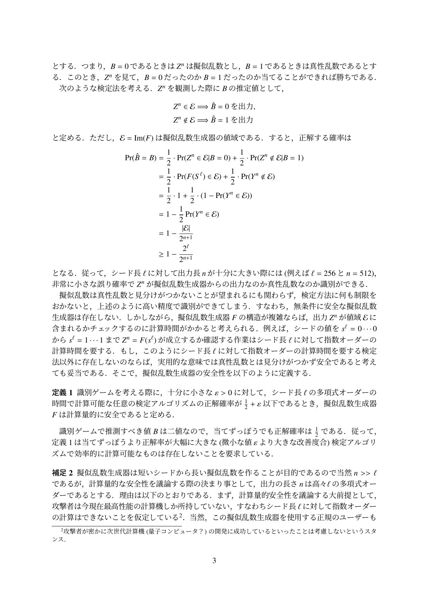
暗号学的擬似乱数生成器 p4
シード長 $\ell$ に対して指数オーダーの計算は行えないことを前提にしている（脚注3）．従って，もし $n$ が $\ell$ の指数オーダーであったならば，出力を得るだけでも指数時間の計算を要してしまい，正規のユーザもこの擬似乱数生成器を使用することができないわけである．
3 LFSR は安全か？
さて，擬似乱数生成器の例である LFSR は定義1の意味で安全なのだろうか？答えはノーである．実際，識別ゲームにおいて $Z^n = (Z_1,\dots,Z_n)$ を観測した際に，
$$Z_{\ell+1} = \bigoplus_{i=1}^{\ell} c_i Z_i,$$ $$Z_{\ell+2} = \bigoplus_{i=1}^{\ell} c_i Z_{i+1},$$ $$\vdots$$ $$Z_n = \bigoplus_{i=1}^{\ell} c_i Z_{n-\ell-1+i}$$
のような線形方程式をチェックし，全ての線形方程式が満たされているならば $\hat{B}=0$，一つでも満たされていないならば $\hat{B}=1$ と出力することにすれば，$Z^n \in \mathcal{E}$ をチェックするのと同等である．このような線形方程式の確認作業は $n$ の線形時間（高々 $\ell$ の多項式時間）で実行可能なので，効率的かつ高い精度で識別ができてしまう．
次に，LFSR の係数 $c_1,\dots,c_\ell$ が分かっていなかった際にどのように攻撃するか考える．まず，$\ell$ 個の方程式
$$Z_{\ell+1} = \bigoplus_{i=1}^{\ell} c_i Z_i,$$ $$Z_{\ell+2} = \bigoplus_{i=1}^{\ell} c_i Z_{i+1},$$ $$\vdots$$ $$Z_{2\ell} = \bigoplus_{i=1}^{\ell} c_i Z_{\ell-1+i}$$
を解いて $c_1,\dots,c_\ell$ を求め，前述の方法を使えばよい（ただし，正解率の計算には少し工夫が必要）．
このように，LSFR は擬似乱数生成器として広く使われているものの，定義1の意味では安全ではないため暗号用途には適切ではない．定義1の意味では安全である（と信じられている）擬似乱数生成器の構成法については後の講義で述べる．
4 演習問題
Linux 環境（Windows を使っている人は CygWin で代用）には環境ノイズをもとに物理乱数を発生させる dev/random が備わっている．例えば，コマンドプロンプトで
脚注3：自分だけが攻撃者より高性能の計算機を持っているとするのは楽観的すぎる．
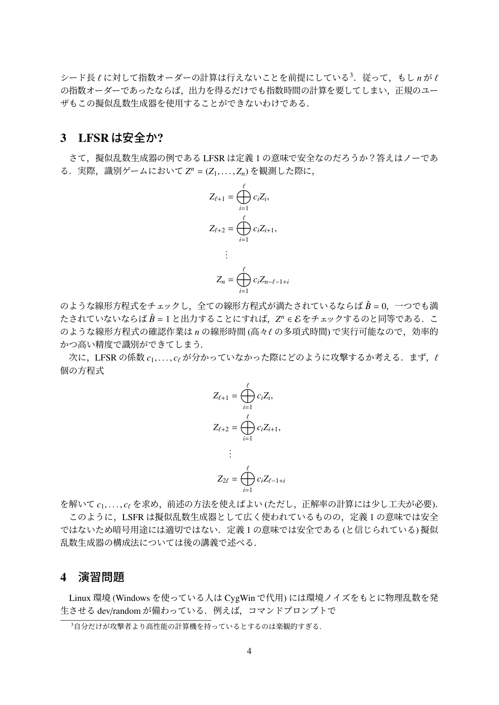
暗号学的擬似乱数生成器 p5
cat /dev/random | base64 | fold -w 16 | head -n 1
と入力すると，
gAcMFPPbzdbWfRhG
のように64進表示で16文字の乱数を出力される．dev/random で発生させた乱数が真性乱数である保証はないが，本講義では dev/random は真性乱数生成器であると認めることにする．
- dev/random を使ってみよ．
- dev/random と dev/urandom の違いを調査せよ．
- サンプルプログラムを参考に，dev/random で発生した乱数は，LFSR の値域に入る確率が小さくなることを実験してみよ（サンプルプログラムでは図1のシード長が3の LSFR を扱っているので，シード長と出力長を色々変更して実験してみよ）．
要点まとめ
- 真性乱数の定義：$n$ ビット全ての実現値が等確率 $1/2^n$ で生じるもの。
- 擬似乱数生成器は関数 $F:\{0,1\}^\ell \to \{0,1\}^n$（$n>\ell$）であり，$\ell$ をシード長，$n$ を出力長と呼ぶ。
- LFSR は状態遷移規則 $s_i^{(t+1)}=s_{i+1}^{(t)}$（$i=1,\dots,\ell-1$），$s_\ell^{(t+1)}=\bigoplus_i c_i s_i^{(t)}$ で構成される代表的な擬似乱数生成器の例（例：$\ell=3$，$(c_1,c_2,c_3)=(1,0,1)$，周期7）。
- 識別ゲーム：擬似乱数 $X^n=F(S^\ell)$ と真性乱数 $Y^n$ をコイン $B$ でランダムに選び，観測者が $B$ を当てられるかを競う。
- 値域チェック検定法を用いると正解確率は $1-\dfrac{|\mathcal{E}|}{2^{n+1}} \ge 1-\dfrac{2^\ell}{2^{n+1}}$ となり，$n\gg\ell$ なら高精度で識別可能＝無条件に安全な擬似乱数生成器は存在しない。
- 定義1（計算量的安全性）：任意の多項式時間検定アルゴリズムの正解確率が $\frac12+\varepsilon$（$\varepsilon$ は十分小さい）以下であるとき，擬似乱数生成器は計算量的に安全であるという。
- 補足：安全性の議論では出力長 $n$ は高々シード長 $\ell$ の多項式オーダーとする決まりがある（攻撃者・正規ユーザーともに指数時間計算はできないという前提のため）。
- LFSR は線形性ゆえに $n$ の線形時間（高々 $\ell$ の多項式時間）で連立一次方程式を解くことで係数 $c_1,\dots,c_\ell$ が既知でも未知でも高精度に識別・攻撃可能であり，定義1の意味では安全ではない（暗号用途に不適）。
- 演習では /dev/random（真性乱数）を使い，LFSR の値域に入る確率の低さを実験的に確認することが求められている。
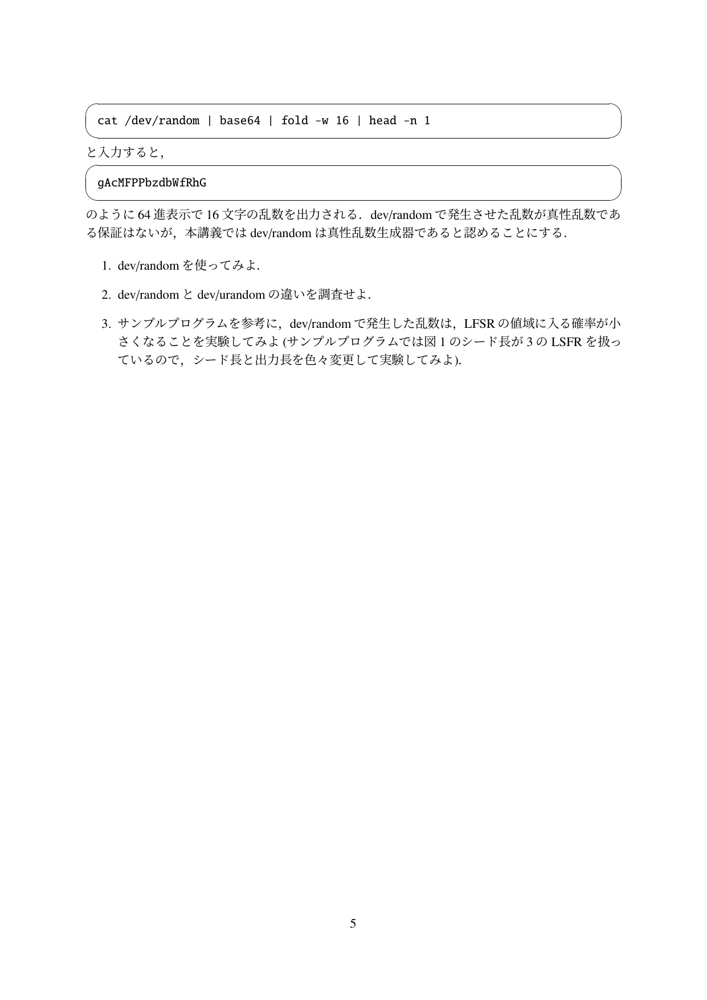
暗号学的擬似乱数生成器と共通鍵暗号（全4ページ）
暗号学的擬似乱数生成器と共通鍵暗号 p1
情報セキュリティ講義ノート 第四回：暗号学的擬似乱数生成器と共通鍵暗号
担当：渡辺 2026年4月29日
今回の講義では，前回の講義で扱った暗号学的擬似乱数生成器と共通鍵暗号の関係について述べる．
1 現代暗号の基本的な考え方
現代暗号において作りたい暗号プロトコルはどれも要求が高いため，無条件で実現することが難しいことが多い．そこで，多くの暗号プロトコルは様々な仮定のもとに成り立っている．そして，一つの暗号プロトコルはさらに別の暗号プロトコルに組み込まれるといった使われ方をする（図1上段）．例えば，多くの公開鍵暗号は，素因数分解の困難性のように数学の問題の計算量的困難性の仮定に基づいて設計されている．プロトコルの構築では，基本的な仮定から複雑なプロトコルを設計していく．
一方，暗号プロトコルの安全性を証明する際には，プロトコルの構築とは逆のロジックをたどることになる（図1下段）．つまり，複雑なプロトコルの攻撃法が仮にあったとすると，元にしているプロトコルにも攻撃法が存在してしまい，元々の仮定に矛盾することを導くのである．
このように，一つの攻撃法を別のプロトコルの攻撃法に転用することを「帰着」と呼ぶ．現代暗号は様々な「仮定」と「帰着」の上に成り立っていると言っても過言ではない．本講義では，このような暗号プロトコル証明のロジックをいくつか紹介する．
具体的な例としては，
- 仮定A：素因数分解を多項式時間で解くアルゴリズムは存在しない．
- プロトコルB：素因数分解を利用した擬似乱数生成器
- プロトコルC：擬似乱数生成器を利用した共通鍵暗号（ワンタイムパッド）
が考えられる．次節では，擬似乱数生成器を利用したワンタイムパッドを攻撃できたとすると，擬似乱数生成器を破る攻撃法が存在することを示す．このことは，擬似乱数生成器が安全であるならば，擬似乱数生成器を利用したワンタイムパッドも安全であることを意味する．
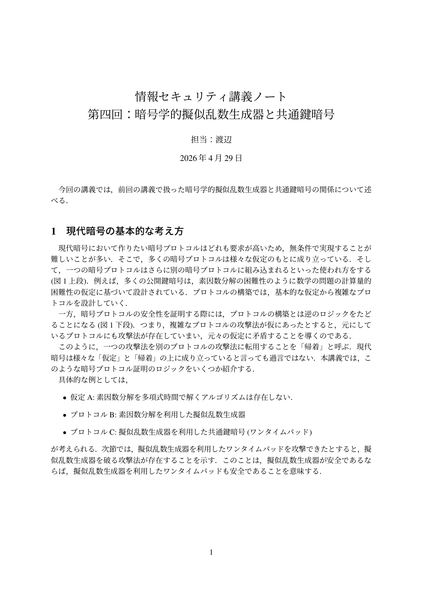
暗号学的擬似乱数生成器と共通鍵暗号 p2
図1の内容：暗号プロトコルの設計と攻撃の関係を示す図。 上段：Assumption A → Protocol B → Protocol C という矢印が並ぶ（仮定Aに基づきプロトコルBを構築し，プロトコルBをサブルーチンとして利用したプロトコルCを構築する流れ）。 下段：Violation of Assumption A ← Attack to Protocol B ← Attack to Protocol C という矢印が並ぶ（プロトコルCに攻撃方法があったとし，その攻撃法を利用してプロトコルBを破る攻撃法を作り，最終的に仮定Aに矛盾することを導く流れ）。
図1キャプション：「暗号プロトコルの設計と攻撃の関係．上段：仮定Aに基づき，プロトコルBを構築し，プロトコルBをサブルーチンとして利用したプロトコルCを構築．下段：プロトコルCに攻撃方法があったとし，その攻撃方を利用してプロトコルBを破る攻撃法を作り，最終的に仮定Aに矛盾することを導く．」
2 識別ゲームの復習
識別ゲームの復習をしておく．二つのメッセージ $m_0, m_1 \in \{0,1\}^n$ に対して，コイン $B \in \{0,1\}$ をランダムに投げ，
$$B=0 \implies C = E(m_0, K),$$ $$B=1 \implies C = E(m_1, K)$$
とする．このとき，$C$ の値を見て，$B$ の値を予測することはできるだろうか．このように，どちらのメッセージが暗号化されているのか $B$ の値を予測するゲームを識別ゲームと呼び，$B$ の値を正しく当てることができたとき，勝ちとする．真性乱数を用いたワンタイムパッドでは
$$P_{M|C}(m_0|c) = P_{M|C}(m_1|c)$$
であるので，暗号文 $C$ をみて $B$ の値を正解する確率は高々 $1/2$ である．以下では定義を若干緩めて，十分小さな $\varepsilon$ に対して，メッセージ長 $n$ の多項式時間で計算を終える予測器でゲームに勝つ確率が高々 $1/2+\varepsilon$ であるとき，その暗号化法は安全であるとする．
3 擬似乱数生成器を用いたワンタイムパッド
第二回の講義において，完全安全性を満たす暗号化法は，$n$ ビットのメッセージを送るために $n$ ビットの秘密鍵が必要であることを示した．ここでは，$\ell$ ビットの秘密鍵 $U$ を用いて，$n \gg \ell$ ビットのメッセージを暗号化する方法を考える．具体的には，$F:\{0,1\}^\ell \to \{0,1\}^n$ を擬似乱数生成器として，$\ell$ ビットの秘密鍵 $U$ をシードとして発生させた $n$ ビットの擬似乱数 $K = F(U) = (K_1,\dots,K_n)$ を用いて，$n$ ビットのメッセージ $M=(M_1,\dots,M_n)$ に対してワンタイムパッド暗号化
$$C = E(U, M) = (M_1 \oplus K_1, \dots, M_n \oplus K_n)$$
を行う．
定理1 擬似乱数生成器 $F$ が計算量的に安全であるならば，擬似乱数生成器を用いたワンタイムパッドも計算量的に安全である．
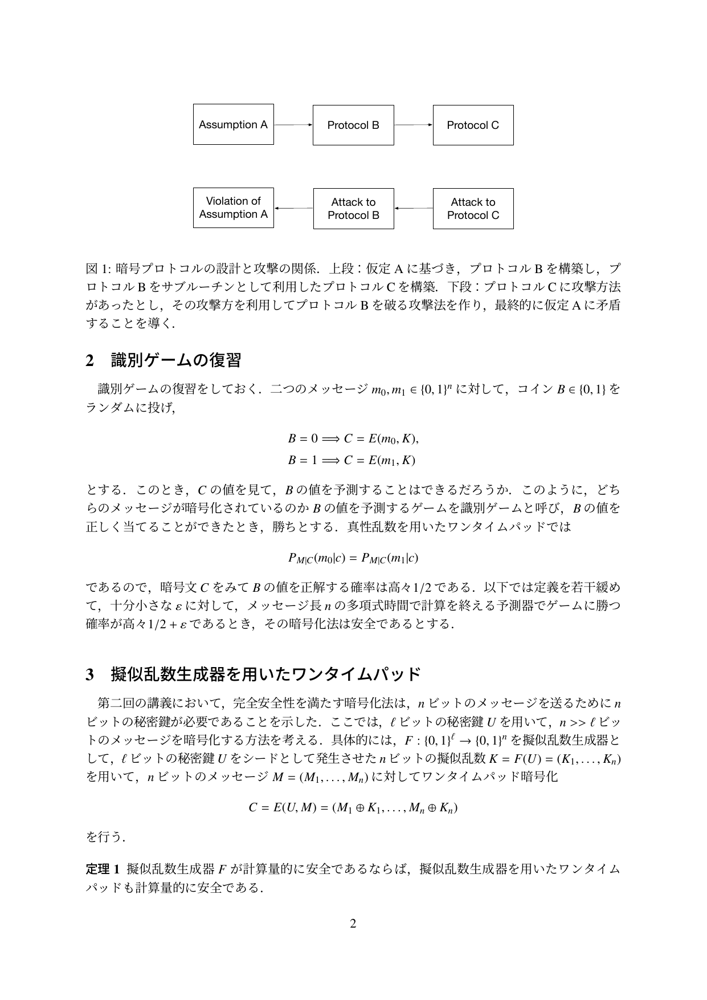
暗号学的擬似乱数生成器と共通鍵暗号 p3
以下では定理1の証明を与える．まず，1節で述べた基本的な考え方を思い出そう．すなわち，ワンタイムパッドを攻撃する方法が存在すると仮定し，擬似乱数生成器を攻撃する方法（帰着）を考えれば，擬似乱数生成器が安全であることに矛盾し，ワンタイムパッドも安全であることが結論づけできる．
今，擬似乱数生成器を用いたワンタイムパッドを攻撃する多項式時間アルゴリズム $A$ があったとする．つまり，アルゴリズム $A$ は長さ $n$ のビット列を入力として，識別ゲームにおける $B$ の推測値を返す．このとき，アルゴリズム $A$ は有効な攻撃であることを仮定するので，あまり小さくはない $\Delta$ に対して（例えば $\Delta = 1/4$），正解確率が
$$\frac{1}{2}\Pr\big(A(m_0\oplus F(U))=0\big) + \frac{1}{2}\Pr\big(A(m_1\oplus F(U))=1\big) \ge \frac{1}{2}+\Delta \tag{1}$$
を満たすとしよう．このとき，攻撃アルゴリズム $A$ をサブルーチンとして使うアルゴリズム $A'$ で，擬似乱数 $F(U)$ と真性乱数 $V$ を成功確率 $\frac{1}{2}+\frac{\Delta}{2}$ 以上で識別できることを示す．これは擬似乱数生成器 $F$ が安全であることに矛盾する．
まず，式(1)より，
$$\Big|\Pr\big(A(m_0\oplus F(U))=0\big) - \Pr\big(A(m_1\oplus F(U))=0\big)\Big| \ge 2\Delta \tag{2}$$
が成り立つ．さらに，$|a-b|\le|a-c|+|b-c|$ に注意すると，(2)から
$$\Big|\Pr\big(A(m_0\oplus F(U))=0\big)-\Pr\big(A(V)=0\big)\Big| + \Big|\Pr\big(A(m_1\oplus F(U))=0\big)-\Pr\big(A(V)=0\big)\Big| \ge 2\Delta$$
が得られる．このことは，
$$\Big|\Pr\big(A(m_0\oplus F(U))=0\big)-\Pr\big(A(V)=0\big)\Big| \ge \Delta \tag{3}$$
もしくは
$$\Big|\Pr\big(A(m_1\oplus F(U))=0\big)-\Pr\big(A(V)=0\big)\Big| \ge \Delta \tag{4}$$
のいずれかが成り立つことを意味する．仮に(3)が成り立つとしよう（(4)が成り立つ場合も同様）．$V$ は $\{0,1\}^n$ 上に一様に分布した乱数なので，$m_0 \oplus V$ も $\{0,1\}^n$ 上に一様に分布した乱数であることに注意しよう．従って，
$$\Pr\big(A(m_0\oplus V)=0\big) = \Pr\big(A(V)=0\big)$$
が成り立つ．この式を(3)に代入すると，
$$\Big|\Pr\big(A(m_0\oplus F(U))=0\big)-\Pr\big(A(m_0\oplus V)=0\big)\Big| \ge \Delta$$
が成り立つ．これは，
$$\Pr\big(A(m_0\oplus F(U))=0\big)-\Pr\big(A(m_0\oplus V)=0\big) \ge \Delta \tag{5}$$
もしくは
$$\Pr\big(A(m_0\oplus V)=0\big)-\Pr\big(A(m_0\oplus F(U))=0\big) \ge \Delta \tag{6}$$
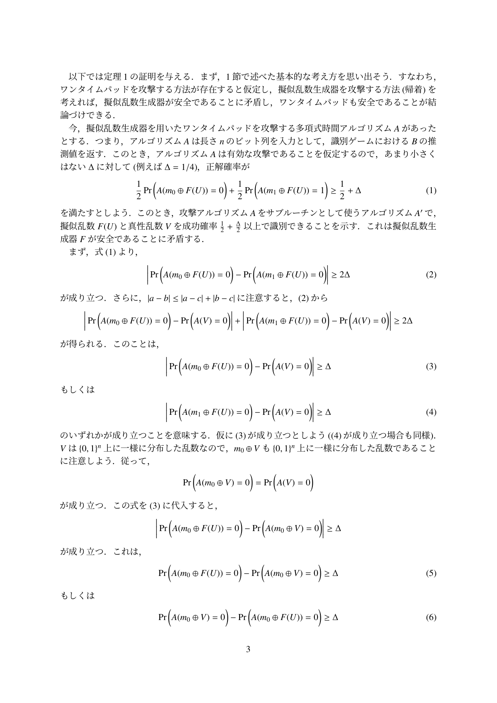
暗号学的擬似乱数生成器と共通鍵暗号 p4
が成り立つことを意味する．仮に(5)が成り立つとしよう（(6)が成り立つ場合も同様）．(5)は両辺を1を足して1/2倍すると
$$\frac{1}{2}\Pr\big(A(m_0\oplus F(U))=0\big) + \frac{1}{2}\Pr\big(A(m_0\oplus V)=1\big) \ge \frac{1}{2}+\frac{\Delta}{2}$$
と書き換えることができる．ここで，左辺は $A'(Z) = A(m_0\oplus Z)$ というアルゴリズム $A'$ を使用した際の正解確率であり，
$$\frac{1}{2}\Pr\big(A'(F(U))=0\big) + \frac{1}{2}\Pr\big(A'(V)=1\big) \ge \frac{1}{2}+\frac{\Delta}{2}$$
が成り立つ．これは，擬似乱数 $F(U)$ が真性乱数 $V$ と識別できないことに矛盾する．従って，擬似乱数生成器を用いたワンタイムパッドに対する攻撃アルゴリズム $A$ は存在しない．
4 演習問題
- (6)が成り立つ場合にも証明が成立することを確認せよ．ヒント：$A'$ は $A(m_0\oplus Z)$ の出力を反転させて使う．
- (4)が成り立つ場合にも証明が成立することを確認せよ．ヒント：$m_0$ を $m_1$ に置き換える必要がある．
- 擬似乱数生成器を用いたワンタイムパッドは，同じシードを二回使うと安全ではないことを議論せよ．ヒント：例えば，長さ $n$ のビット列 $a \ne b$ に対して，$m_0=(a,a)$，$m_1=(a,b)$ としたとき，暗号文 $(a\oplus F(U), a\oplus F(U))$ と $(a\oplus F(U), b\oplus F(U))$ は識別できるだろうか（脚注1）？
脚注1：$(a,a)$ と $(a,b)$ を識別したい現実的な状況の例として，既知平文攻撃によって，昨日の軍事命令が「攻撃せよ」だったと分かっているときに，今日の命令が「攻撃せよ」なのか「退却せよ」なのか解読したい状況を考えてみよ．
要点まとめ
- 現代暗号は「仮定」（例：素因数分解の困難性）の上に基本的なプロトコル（擬似乱数生成器など）を構築し，それをさらに複雑なプロトコル（共通鍵暗号など）に組み込むという階層構造をなす（図1上段）。
- 安全性証明は構築とは逆向きに進む：複雑なプロトコルへの攻撃法があれば，それを元のプロトコルへの攻撃法に転用でき，最終的に基本仮定に矛盾する。この論法を「帰着」と呼ぶ（図1下段）。
- 識別ゲームの復習：$m_0, m_1$ のどちらが暗号化されたかコイン $B$ で決め，暗号文 $C$ から $B$ を当てるゲーム。真性乱数によるワンタイムパッドでは $P_{M|C}(m_0|c)=P_{M|C}(m_1|c)$ なので正解確率は高々 $1/2$。多項式時間予測器の正解確率が高々 $1/2+\varepsilon$ であれば安全とする。
- 擬似乱数生成器を用いたワンタイムパッド：$\ell$ ビット鍵 $U$ から擬似乱数生成器 $F$ で $n$ ビット鍵ストリーム $K=F(U)$ を生成し，$C=(M_1\oplus K_1,\dots,M_n\oplus K_n)$ として暗号化する（$n\gg\ell$）。
- 定理1：擬似乱数生成器 $F$ が計算量的に安全ならば，これを用いたワンタイムパッドも計算量的に安全である。
- 証明の骨子（帰着）：ワンタイムパッドへの攻撃アルゴリズム $A$（正解確率 $\ge 1/2+\Delta$）が存在すると仮定し，三角不等式 $|a-b|\le|a-c|+|b-c|$ を用いて，$F(U)$ と真性乱数 $V$ を識別するアルゴリズム $A'(Z)=A(m_0\oplus Z)$（または反転版）を構成し，成功確率が $1/2+\Delta/2$ 以上になることを示す。これは $F$ の安全性（識別不可能性）に矛盾するため，攻撃アルゴリズム $A$ は存在しない。
- 証明中で用いた重要な性質：$V$ が一様乱数であれば $m_0\oplus V$ も一様乱数であるため $\Pr(A(m_0\oplus V)=0)=\Pr(A(V)=0)$ が成り立つ（XORによるマスキングの性質）。
- 演習問題は，証明の場合分け（式(4)・式(6)）の補完と，同じシードを二回使う（鍵の再利用）とワンタイムパッドが安全でなくなることを示す内容（既知平文攻撃の例：軍事命令の解読）。
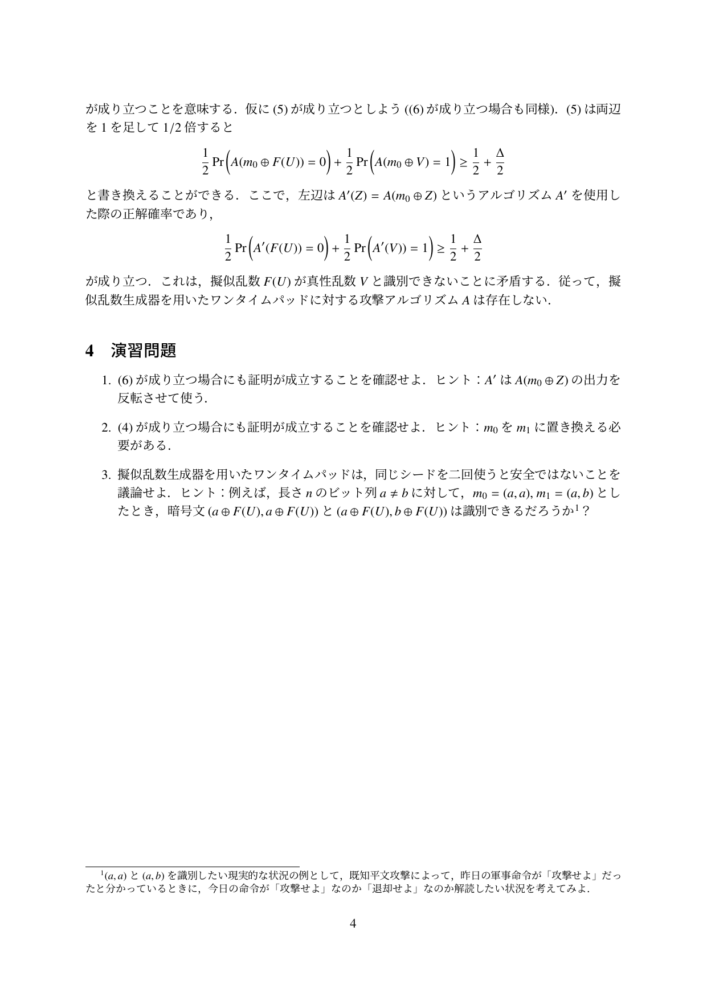
代数（全8ページ）
代数 p1
情報セキュリティ講義ノート 第五回：代数
担当：渡辺 2026年5月12日
今回の講義では，代数の基本事項について復習する．特に，代数曲線上の点のなす群構造について説明する．
1 群
一つの演算を持つ代数系 $(G, \circ)$ において，演算 $\circ$ が結合的で，単位元が存在し，かつ全ての元 $a \in G$ が $\circ$ に関する逆元を持つとき，$(G, \circ)$ を群と呼ぶ．演算が文脈から明らかな場合は $G$ を群と呼ぶこともある．特に，演算 $\circ$ が可換であるとき，$(G, \circ)$ を可換群であるという．また，$G$ が有限集合であるとき，有限であることを強調して有限群と呼ぶこともある．
例1 整数の集合 $\mathbf{Z}$ に通常の数としての和を $+$ と定めると，$(\mathbf{Z}, +)$ は群をなす．同様に，$(\mathbf{R}, +)$ も群をなす．しかしながら，通常の数としての積を $\times$ としたとき，$(\mathbf{Z}, \times)$ は1以外に逆元が存在しないため，群ではない．
例2 0以外の実数の集合を $\mathbf{R}^* = \mathbf{R} \setminus \{0\}$ とし，通常の数としての積を $\times$ とすると，$(\mathbf{R}^*, \times)$ は群をなす．
例3 集合 $A_m = \{0, 1, 2, \ldots, m-1\}$ の要素 $x, y \in A_m$ に対して，演算 $x \oplus y$ を「$x + y$ を $m$ で割った余り」，演算 $x \otimes y$ を「$x \times y$ を $m$ で割った余り」と定義する．$(A_m, \oplus)$ は群をなす． 一方，$\otimes$ に関する逆元は必ずしも存在しないため，一般に $(A_m \setminus \{0\}, \otimes)$ は群ではない．しかしながら，$m$ を素数 $p$ とした場合，$A_p \setminus \{0\}$ の全ての元は $\otimes$ に関する逆元を持ち，群となる．例えば，$p = 5$ の場合，1の逆元は1，2の逆元は3，3の逆元は2，4の逆元は4である．
補足1 群が非可換であるとき，$a, b \in G$ に対して $a \circ b$ の逆元は $(a \circ b)^{-1} = b^{-1} \circ a^{-1}$ のように順番が逆になる．実際，
$$(a \circ b)^{-1} \circ (a \circ b) = b^{-1} \circ a^{-1} \circ a \circ b = b^{-1} \circ e \circ b = b^{-1} \circ b = e$$
のように計算してみると，たしかに逆元になっていることを確認できる．
例4 実数上の $n \times n$ の可逆な行列からなる集合を $M_n$ とし，行列同士の積を $\cdot$ とすると，$(M_n, \cdot)$ は群をなす．
（ページ下部：ページ番号 1）
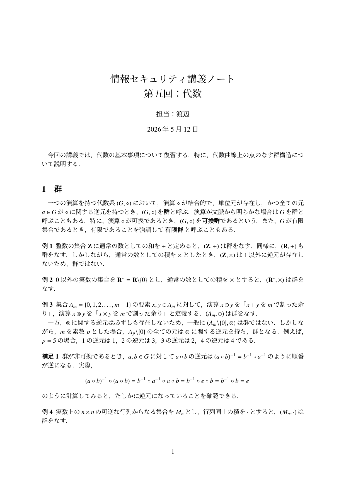
代数 p2
1から $n$ の番号から成る集合 $I_n = \{1, \ldots, n\}$ 上の全ての全単射から成る集合を $S_n$ とする．関数の合成を表す演算を $\circ$ とすると，$(S_n, \circ)$ は群となる．このような群を $n$ 次の置換群または対称群と呼ぶ（文脈から演算が明らかな場合は $S_n$ を置換群と呼ぶこともある）．そして，$S_n$ の要素を置換と呼ぶ．
全単射の合成関数は全単射である（演算について閉じている）．また，$f: I_n \to I_n$ が全単射であるとき，逆関数 $f^{-1}$ が存在して，$f^{-1} \circ f = 1_{I_n}$ が恒等関数になる（$f^{-1}$ が $f$ の逆元で，$1_{I_n}$ が単位元である）．今後は，$S_n$ の要素 $f$ を
$$f = \begin{pmatrix} 1 & 2 & \cdots & n \\ f(1) & f(2) & \cdots & f(n) \end{pmatrix}$$
のような書き方をする．
例5 $n = 3$ 次の置換群は
$$S_3 = \left\{ \begin{pmatrix}1&2&3\\1&2&3\end{pmatrix}, \begin{pmatrix}1&2&3\\1&3&2\end{pmatrix}, \begin{pmatrix}1&2&3\\3&2&1\end{pmatrix}, \begin{pmatrix}1&2&3\\2&1&3\end{pmatrix}, \begin{pmatrix}1&2&3\\3&1&2\end{pmatrix}, \begin{pmatrix}1&2&3\\2&3&1\end{pmatrix} \right\}$$
の六個の元から成る．
置換群は可換ではない群の，最もポピュラーなものの一つである．実際，
$$\begin{pmatrix}1&2&3\\2&1&3\end{pmatrix} \circ \begin{pmatrix}1&2&3\\3&1&2\end{pmatrix} = \begin{pmatrix}1&2&3\\3&2&1\end{pmatrix},$$
$$\begin{pmatrix}1&2&3\\3&1&2\end{pmatrix} \circ \begin{pmatrix}1&2&3\\2&1&3\end{pmatrix} = \begin{pmatrix}1&2&3\\1&3&2\end{pmatrix}$$
であり，可換ではない．
2 環
二つの演算を持つ代数系 $(R, +, \times)$ が（脚注1: $+$ と $\times$ は通常の数字に対する和と積とは限らないことに注意．また，$R$ は実数の集合ではなく，環を表す英語 ring の頭文字である．）において，以下の条件を満たすとき，$(R, +, \times)$ を環と呼ぶ．
- 演算 $+$ が結合的かつ可換であり，単位元 $0$ が存在し，全ての元 $a$ が $+$ に関する逆元を持つ．
- 演算 $\times$ は結合的である．
- 分配則
$$a \times (b + c) = (a \times b) + (a \times c),$$ $$(a + b) \times c = (a \times c) + (b \times c)$$
が成り立つ．
特に，演算 $\times$ も可換であるとき，可換環と呼ぶ．
（ページ下部：ページ番号 2）
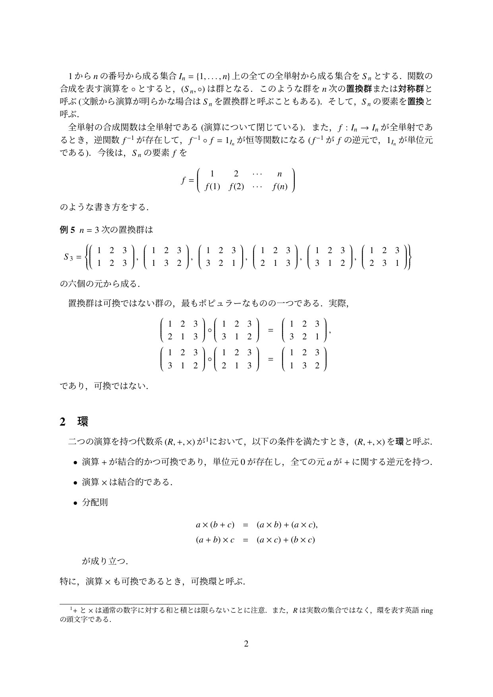
代数 p3
例6 実数を係数とする多項式の全体を $\mathbf{R}[x]$ とし，二つの元 $f(x), g(x) \in \mathbf{R}[x]$ の和と積を多項式としての和と積として定める．例えば，$f(x) = x + 1$，$g(x) = 2x + 3$ のとき，
$$f(x) + g(x) = 3x + 4,$$ $$f(x) \times g(x) = 2x^2 + 5x + 3$$
である．このとき $(\mathbf{R}[x], +, \times)$ は環となる．
3 体
二つの演算を持つ代数系 $(\mathbb{F}, +, \times)$ が可換環であり，0以外の全ての元が $\times$ に関する逆元を持つとき，$(\mathbb{F}, +, \times)$ を体と呼ぶ．
例7 $(\mathbf{R}, +, \times)$ や $(\mathbf{Q}, +, \times)$ は体である．
例8 $p$ を素数とし，集合 $\mathbb{F}_p = \{0, 1, 2, \ldots, p-1\}$ の要素 $x, y \in \mathbb{F}_p$ に対して，演算 $x + y$ を「$x$ と $y$ を足して $p$ で割った余り」，演算 $x \times y$ を「$x$ と $y$ を掛けて $p$ で割った余り」と定義すると（脚注2: 例3では $\oplus$ と $\otimes$ という記号を用いていたが，同じものである．），$(\mathbb{F}_p, +, \times)$ は体となる（脚注3: 逆元がちゃんと存在することは，拡張ユークリッドのアルゴリズムで確認できる．）．このように有限個の要素を持つ体を有限体と呼ぶ．上述のように素数 $p$ によって合同式で演算を定めたとき，$\mathbb{F}_p$ は素体と呼ばれる．
例9 複素数全体から成る体 $(\mathbf{C}, +, \times)$ は実数全体から成る体 $(\mathbf{R}, +, \times)$ の拡大体であることに注意し，$(\mathbf{C}, +, \times)$ を $(\mathbf{R}, +, \times)$ からどのように構成したか思いだしておく．実数係数の多項式
$$f(x) = x^2 + 1$$
は $\mathbf{R}[x]$ において既約である．つまり $f(x)$ は実数の集合 $\mathbf{R}$ の中には根を持たない．そこで，$f(i) = 0$ となる $i$ を虚数単位として新たに導入し，二つの実数 $a, b \in \mathbf{R}$ を用いて $a + bi$ の形で表したものが複素数 $\mathbf{C}$ であった．
例10 $f(x) = x^2 + x + 1$ は $\mathbb{F}_2[x]$ において既約である．$f(\alpha) = 0$ となる根 $\alpha$ を新たに導入し，
$$\mathbb{F}_{2^2} = \{0, 1, \alpha, 1+\alpha\}$$
と定めると，$(\mathbb{F}_{2^2}, +, \times)$ は要素数が4の有限体となる．$\alpha$ の逆元は $1+\alpha$，$1+\alpha$ の逆元は $\alpha$ である．同様のアイディアで素体を拡大することで，任意の自然数 $m$ に対して $p^m$ 個の要素を持つ拡大体 $\mathbb{F}_{p^m}$ を構成することができる．
補足2 大雑把にいって，体とは四則演算（足す，引く，掛ける，割る）が自由に行える代数系である．
（ページ下部：ページ番号 3）
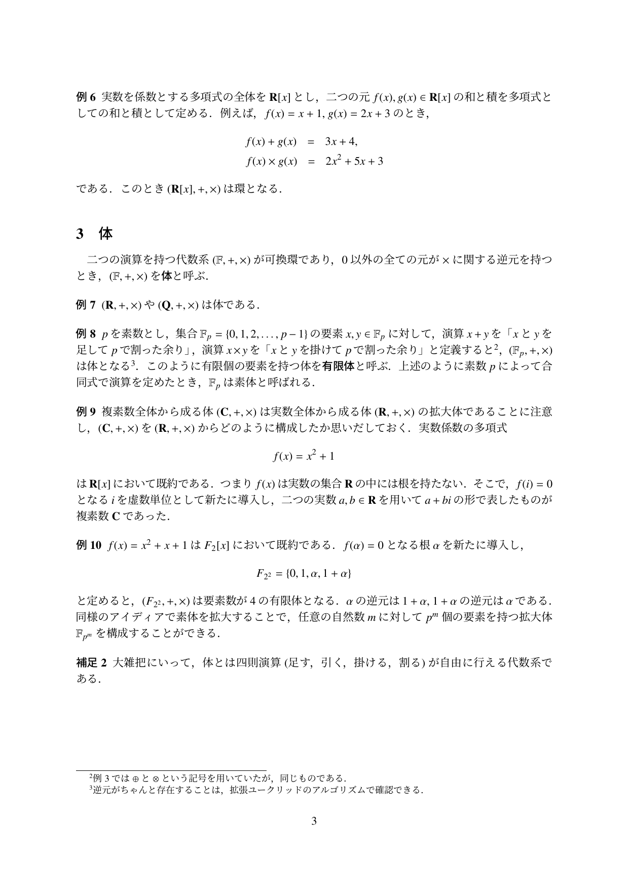
代数 p4
図1: $P$ と $Q$ が異なる際の和 $P+Q$ の定義． （図の説明：円周上に点 $N$（下寄り）と点 $P$（左寄り，$N$のすぐ上）、点 $Q$（上寄り）があり、$P$ から $Q$ へ矢印つき線分（$N$ から出た平行線と解釈される線）が引かれ、それと平行な線が $N$ を通り円周と交わる点が $P+Q$ として上部右寄りに示されている。）
図2: $2P = P + P$ の定義． （図の説明：円周上に点 $P$（左上寄り）があり、$P$ における円の接線が矢印つきで示され、それと平行に $N$（下部）を通る線が引かれて円周ともう一点で交わり、その交点が $P+P=2P$（右上寄り）として示されている。）
4 円上の点の群構造
セキュリティ技術において広く使われている楕円曲線暗号と呼ばれるものがあるが，これは後の講義で出てくる El Gamal 暗号において，楕円曲線上の群を利用したもので，楕円 El Gamal 暗号とも呼ばれる．楕円曲線暗号について関連書籍を読んでみると，「楕円曲線とは代数曲線の一種で…」，「有理点の集合が群構造をなし…」といったことが書かれている．本講義では楕円曲線暗号は取り扱わないが，「代数曲線上の点が群構造をなす」という考え方を理解するために，以下では，円上の点に適切に演算を定義すると可換群の構造を持つことを紹介する（脚注4: この議論は円に限らず，楕円や双曲線のように円錐曲線にも成り立つが，簡単のために円に限って進める．ちなみに，楕円曲線は楕円とは関係ない．）．
まず，円上に基点 $N$ を定める．後に分かるように，この点は単位元に相当する．次に，円上の異なる2点 $P$ と $Q$ が与えられたとき，これらの点の和 $P+Q$ を次のように定義する：$P$ と $Q$ を通る直線に平行でかつ $N$ を通る直線を考え，その直線と円の $N$ 以外の交点を $P+Q$ に対応する点と定める（図1参照）．$P$ の二倍 $2P = P+P$ は，$P$ における円の接線と平行でかつ $N$ を通る直線を考え，その直線と円の $N$ 以外の交点を $2P = P+P$ に対応する点と定める（図2参照）．では点 $P$ の逆元はどのように定義するのであろうか．点 $N$ における円の接線と平行でかつ $P$ を通る直線を考え，その直線と円の交点を $-P$ に相当する点と定める（図3参照）．
円上の点からなる集合 $C$ に対して演算 $+$ を上記のように定めたとき，$(C, +)$ が可換群の構造を有することを確認する．まず，任意の点 $P$ と $Q$ に対して（$Q=P$ でもよい），演算の定義により $P+Q$ も円上の点であるので，演算に関して閉じている．また，演算は可換，すなわち $P+Q = Q+P$ で
（ページ下部：ページ番号 4，末尾の文は次ページへ続く）
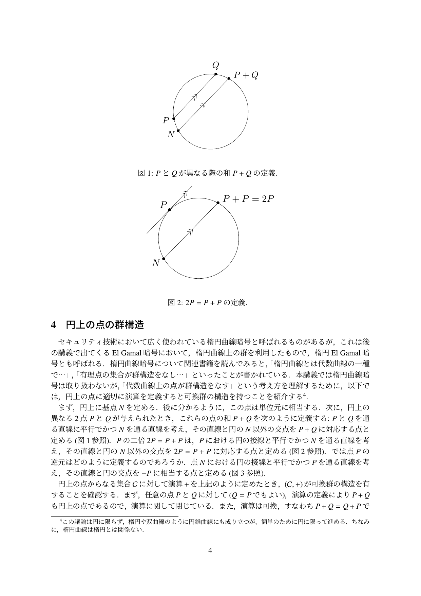
代数 p5
図3: $P$ の逆元 $-P$ の定義． （図の説明：円周上に点 $P$（上部）と点 $N$（左中央）があり、$N$ における円の接線が矢印つきで示され、それと平行に $P$ を通る直線が円周と交わる点が $-P$（右下寄り）として示されている。）
図4: パスカルの定理． （図の説明：円に内接する六角形 $A, B, C, D, E, F$ が反時計回り（$B$ 上部、$A$ 右上、$F$ 右、$E$ 下、$D$ 左下、$C$ 左）に配置され、辺 $AF$ と辺 $CD$ が平行、辺 $BC$ と辺 $EF$ が矢印で平行関係が示され、辺 $AB$ と辺 $DE$ も平行になることが図示されている。）
あることも定義より確認できる．単位元は $N$ である．実際，$P$ と $N$ を通る直線に平行でかつ $N$ を通る直線はその直線自身であるので，$N$ 以外の交点は $P$ になる．従って $P+N = N+P = P$ である．$P$ の逆元 $-P$ に対して，$-P$ の定義より，$P$ と $-P$ に平行でかつ $N$ を通る直線は円に接しているので，$N$ 以外の交点は $N$ になる（接点では $N$ と二回交わっていると解釈する）．従って，$P+(-P) = N$ となり，$-P$ はたしかに $P$ の逆元と考えられる．最後に，結合律が満たされることを確認する．すなわち，3点 $P, Q, R$ に対して，$(P+Q)+R = P+(Q+R)$ であることを確認したい．そのために，以下のパスカルの定理と呼ばれる幾何学の定理の特別な場合を利用する．
定理3 円に内接する六角形を考える．二組の対辺が平行であるとき，残りの対辺も平行である（図4参照）．
証明 図5を考える．辺 $AF$ と辺 $CD$ は平行なので，$\angle DAF = \angle ADC$ である．円周角の等しい弧の長さは等しいので，弧 $DEF$ と弧 $ABC$ の長さは等しい．円周からそれぞれの弧の長さを引くことで，弧 $DCBAF$ と弧 $AFEDC$ の長さも等しい．従って，これらの弧に対応する円周角も等しく，$\angle DEF = \angle ABC$ が成り立つ．以上より，辺 $AB$ と辺 $DE$ が平行であることが示された． □
さて，結合律の確認に戻る．図6を考えよう．定理3より，辺 $P(Q+R)$ と辺 $(P+Q)R$ は平行であるので，これらの辺と平行でかつ $N$ を通る直線は共通の直線になる．従って，$N$ 以外の交点も共通であり，$P+(Q+R) = (P+Q)+R$ が成り立つ．
（ページ下部：ページ番号 5）
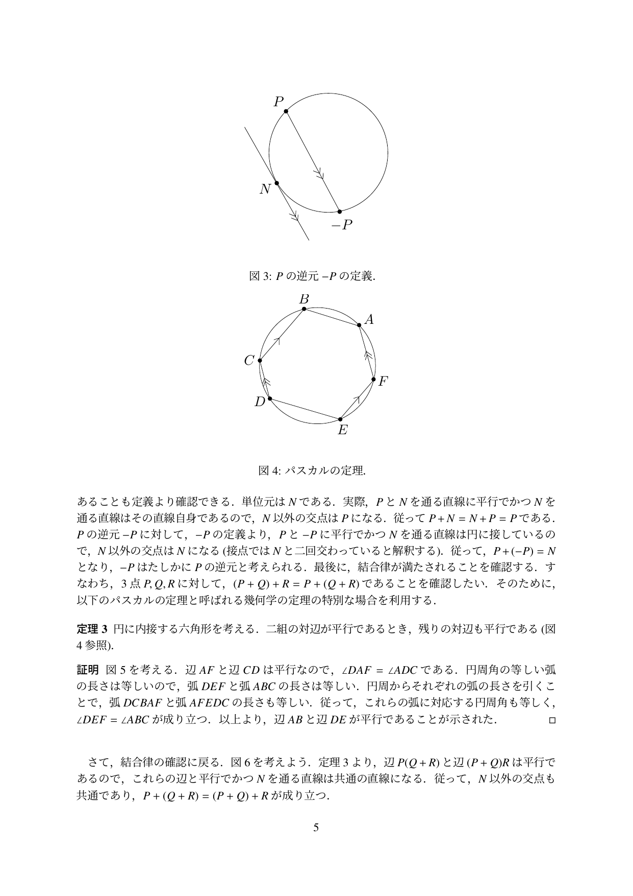
代数 p6
図5: パスカルの定理の証明． （図の説明：円に内接する六角形 $A, B, C, D, E, F$（配置は図4と同様）に加え、対角線 $AD$（点線）が描かれている。）
図6: 結合律の確認． （図の説明：円周上に点 $R$（上部）、$P+Q$（右上）、$N$（右）、$Q+R$（下）、$P$（左下）、$Q$（左）が配置され、それぞれの和の関係を示す矢印つき線分が描かれている。）
このように，幾何学的な対象が群構造を有するというのは大変興味深いことである．
次に，座標を使って，上述の演算規則を具体的に計算する方法について考える．計算を簡単にするために，円は単位円とし基点を $N=(1,0)$ とする（図7参照）．基点 $N$ を通る傾き $t$ の直線が円と交わる点を $(x(t), y(t))$ とする．直線の式
$$y = t(x-1)$$
を単位円の式
$$x^2 + y^2 = 1$$
に代入して整理すると，
$$((t^2+1)x - (t^2-1))(x-1) = 0$$
を得る．従って，
$$(x(t), y(t)) = \left( \frac{t^2-1}{t^2+1}, \frac{-2t}{t^2+1} \right) \tag{1}$$
と書ける．このように，傾き $t \in \mathbb{R}$ と単位円上の $N$ 以外の点は一対一に対応している．特に，有理数の傾き $t \in \mathbb{Q}$ と単位円上の座標が有理数である $N$ 以外の点は一対一に対応している．
（ページ下部：ページ番号 6）
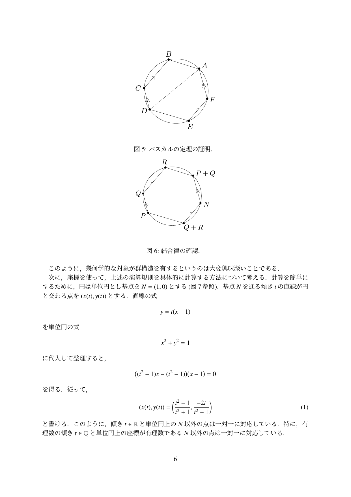
代数 p7
図7: 演算の座標表示． （図の説明：$xy$ 平面上に原点中心の単位円が描かれ、$x$軸上の点 $N=(1,0)$ と、円周上の左下寄りの点 $(x(t), y(t))$ が線分（原点付近を通る弦）で結ばれている。）
さて，2つの点 $(x_1,y_1)$ と $(x_2,y_2)$ が与えられたとき，これらの点の和 $(x_3,y_3) = (x_1,y_1)+(x_2,y_2)$ の計算式を導出する．まず，$x_1 \neq x_2$ とすると，二点を通る直線の傾きは
$$t = \frac{y_2-y_1}{x_2-x_1}$$
であるので，この $t$ を (1) に代入することで
$$(x_3,y_3) = \left( \frac{(y_2-y_1)^2-(x_2-x_1)^2}{(y_2-y_1)^2+(x_2-x_1)^2}, \frac{-2(y_2-y_1)(x_2-x_1)}{(y_2-y_1)^2+(x_2-x_1)^2} \right) \tag{2}$$
が得られる．
次に，$x_1=x_2$ かつ $y_1=-y_2$ の場合を考える．この場合，二点を通る直線は $y$ 軸に対して垂直なので，$(x_3,y_3) = N$ である．
最後に，$(x_1,y_1)=(x_2,y_2)$ の場合を考える．ただし，$(x_1,y_1) \neq (1,0)$ かつ $(x_1,y_1) \neq (-1,0)$ とする．この場合，$(x_1,y_1)$ における単位円の接線の傾きは
$$t = -\frac{x_1}{y_1}$$
なので，(1) に代入することで
$$(x_3,y_3) = \left( \frac{x_1^2-y_1^2}{x_1^2+y_1^2}, \frac{2x_1y_1}{x_1^2+y_1^2} \right) \tag{3}$$
が得られる．
今までは $\mathbb{R}^2$ 上の単位円の群構造を論じてきたが，以下では素数 $p$ に対して有限体 $\mathbb{F}_p$ の直積 $\mathbb{F}_p^2$ 上の単位円の群構造について考える．すなわち，
$$C(\mathbb{F}_p) = \{(x,y) : x,y \in \mathbb{F}_p, x^2+y^2=1\}$$
を考える．ただし，要素間の演算は全て $\mathbb{F}_p$ として行う．$C(\mathbb{F}_p)$ の点は幾何学的な図として描くことはできないが，(2) と (3) を用いて二点の和を定義することはできる．
$\mathbb{F}_5$ の場合に，計算をしてみよう．$\mathbb{F}_5^2$ の25点のうち，$x^2+y^2=1$ を満たす点は
$$C(\mathbb{F}_5) = \{(1,0), (4,0), (0,1), (0,4)\}$$
（ページ下部：ページ番号 7，末尾の文は次ページへ続く）
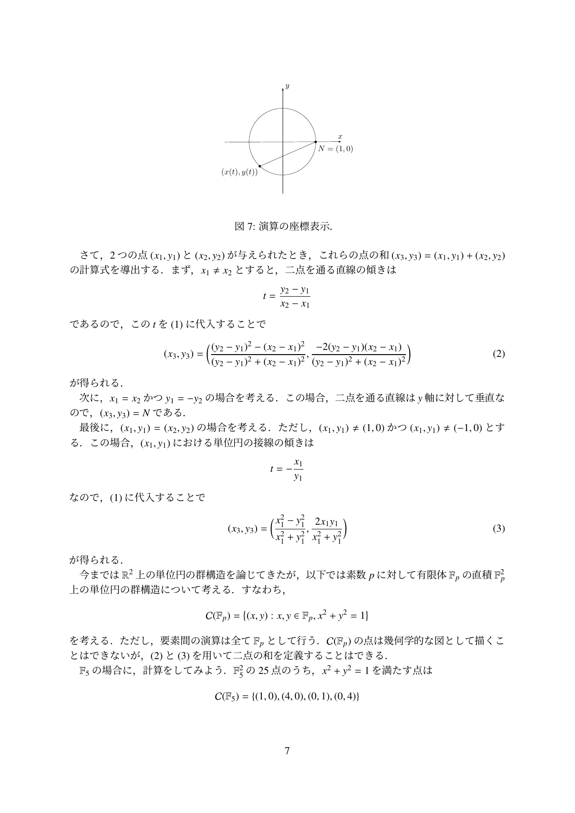
代数 p8
であることを確かめられる（実際に確認してみよ）．式 (2) もしくは式 (3) を用いて二点間の和を計算すると
演算表（$C(\mathbb{F}_5)$ の加法表）：
| + | (1,0) | (4,0) | (0,1) | (0,4) |
|---|---|---|---|---|
| (1,0) | (1,0) | (4,0) | (0,1) | (0,4) |
| (4,0) | (4,0) | (1,0) | (0,4) | (0,1) |
| (0,1) | (0,1) | (0,4) | (4,0) | (1,0) |
| (0,4) | (0,4) | (0,1) | (1,0) | (4,0) |
のような演算表が得られる．
5 演習問題
- $C(\mathbb{F}_5)$ の要素ならびに演算表を作成してみよ．
- 図7において $P=(-1,0)$ のとき，$2P$ はどの点か？
（ページ下部：ページ番号 8）
要点まとめ
- 群：結合律・単位元・逆元をもつ演算1つの代数系。可換群、有限群、非可換な例として置換群(対称群) $S_n$。
- 環：加法群（可換・単位元0・逆元あり）＋乗法（結合的）＋分配則を満たす代数系。可換環の例として実数係数多項式環 $\mathbf{R}[x]$。
- 体：可換環かつ0以外の元がすべて乗法逆元をもつ代数系（四則演算が自由に行える）。$\mathbf{R}, \mathbf{Q}, \mathbf{C}$ は体。有限体 $\mathbb{F}_p$（$p$素数）は素体、既約多項式による拡大で $\mathbb{F}_{p^m}$ を構成できる（例：$\mathbb{F}_{2^2}=\{0,1,\alpha,1+\alpha\}$）。
- 円（代数曲線）上の点に「弦・接線が基点 $N$ を通る平行線との交点」として和 $P+Q$、倍点 $2P$、逆元 $-P$ を定義すると、可換群 $(C,+)$ をなす。単位元は基点 $N$。
- 結合律の証明にはパスカルの定理（円内接六角形の対辺平行性）を利用する。
- 単位円 $x^2+y^2=1$ とパラメータ $t$（直線の傾き）により、$N$ 以外の点は $t\in\mathbb{R}$（有理点は $t\in\mathbb{Q}$）と一対一対応：$(x(t),y(t))=\left(\frac{t^2-1}{t^2+1},\frac{-2t}{t^2+1}\right)$。
- この座標表示から加法公式 (2)(3) を導出し、有限体 $\mathbb{F}_p$ 上の単位円 $C(\mathbb{F}_p)$（楕円曲線暗号の考え方の簡易版）にも同じ演算が定義できる。例：$C(\mathbb{F}_5)=\{(1,0),(4,0),(0,1),(0,4)\}$ とその加法表。
- この講義自体はRSAや離散対数、原始根、オイラーのφ関数には直接触れておらず、群・環・体の基礎と代数曲線（円）上の群構造（楕円曲線暗号の予備知識）が中心テーマである。
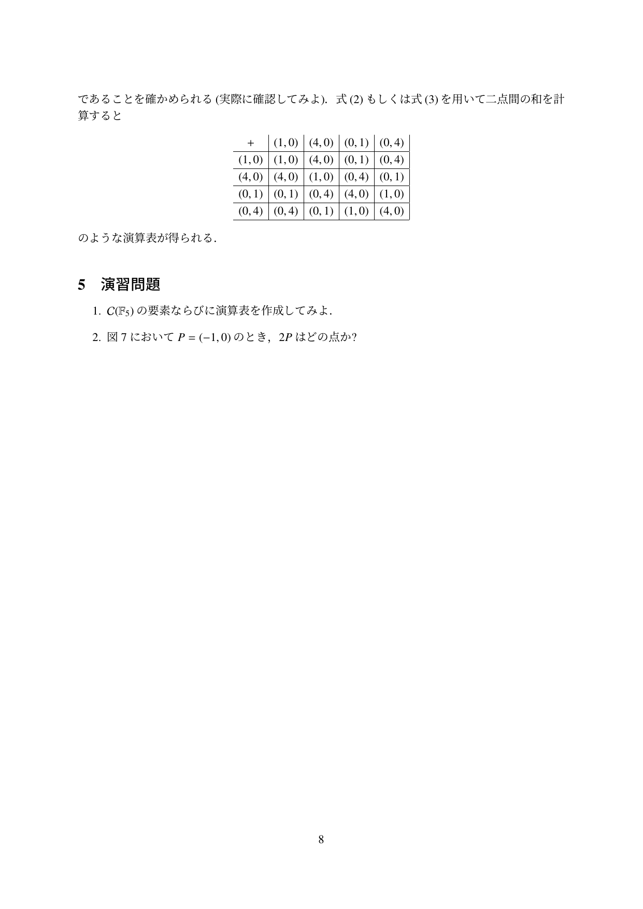
RSA暗号（全10ページ）
RSA暗号 p1
情報セキュリティ講義ノート 第六回：RSA暗号
担当：渡辺 2026年5月20日
今回の講義では，RSA暗号に関連する話題について述べる．ただし，RSA暗号は既知とする．
1 素因数分解の困難性
例えば，二つの素数 $$p = 491, \quad q = 709$$ が与えられたとしよう．このとき，二つの素数の積 $$N = pq = 348119$$ を計算することは簡単である．しかしながら，$N$だけが与えられたとき，元の因数$p$と$q$に分解することは非常に面倒である．より一般に，大きな二つの素数が与えられたとき，それらの素数の積を計算することは，計算機を使用すれば容易であるが，積から元の素因数を求めるための効率的なアルゴリズムは知られておらず，桁数が大きくなるにつれ，膨大な時間がかかると考えられている．
2 RSA暗号のアルゴリズム
以下では送信者をボブ，受信者をアリスと呼ぶことにする．
鍵生成 アリスは次のアルゴリズムを実行する． 1. 二つの大きな素数$p$と$q$を秘密裏に選び，$N = pq$を計算する． 2. $\gcd((p-1)(q-1), e) = 1$となる自然数$e$を適当に選ぶ． 3. 拡張ユークリッドのアルゴリズムを$((p-1)(q-1), e)$に対して用いて， $$ed \equiv 1 \pmod{(p-1)(q-1)} \tag{1}$$ となる自然数$d$を求める． 4. $P = (N, e)$を公開鍵として公開し，$S = d$を秘密鍵として保持する．
（ページ下部：ページ番号 1）
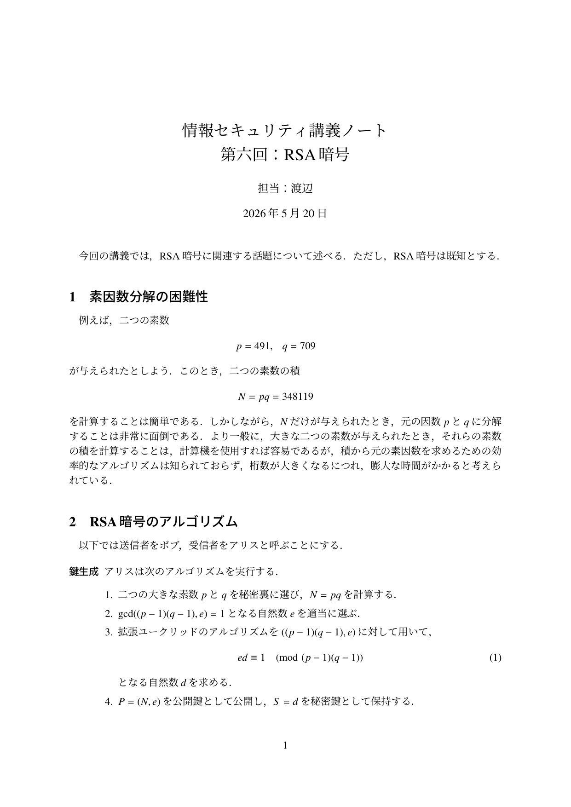
RSA暗号 p2
暗号化 ボブは公開鍵$P = (N, e)$および平文$m \in \{0, 1, \dots, N-1\}$を入力とし，暗号文 $$C = m^e \pmod{N}$$ を計算する．
復号化 アリスは秘密鍵$d$および暗号文$C$を入力とし，平文 $$\hat{m} \equiv C^d \pmod{N}$$ となる$\hat{m} \in \{0, 1, \dots, N-1\}$を計算する．
3 アルゴリズムの正当性：$m = \hat{m}$となる理由
定理1（フェルマーの小定理） $p > 0$を素数として，$1 \le a \le p-1$とすると， $$a^p \equiv a \pmod{p}$$ が成り立つ．
この定理を証明するには以下の補題が必要になる．
補題2 $p > 0$を素数として，$a$と$b$を自然数とする．このとき， $$(a+b)^p \equiv a^p + b^p \pmod{p}$$ が成り立つ．
証明 二項公式から $$(a+b)^p = a^p + b^p + \sum_{i=1}^{p-1} \binom{p}{i} a^{p-i} b^i$$ となる．従って，補題の主張を証明するには $$\sum_{i=1}^{p-1} \binom{p}{i} a^{p-i} b^i \equiv 0 \pmod{p}$$ を示せば十分である．このことを示すには，二項係数$\binom{p}{i}$が$p$で割り切れることを示せばよい．定義より $$\binom{p}{i} = \frac{p(p-1)\cdots(p-i+1)}{i!}$$ である．二項係数は整数であるから，この分数の分母は分子を割り切らなければならない．しかし，$p$は素数なので$1 \le i \le p-1$のときは$i!$に$p$の因子は含まれないので，$i!$は$(p-1)\cdots(p-i+1)$を割り切らなければならず，$\binom{p}{i}$は$p$の倍数であることが分かる．$\square$
（ページ下部：ページ番号 2）
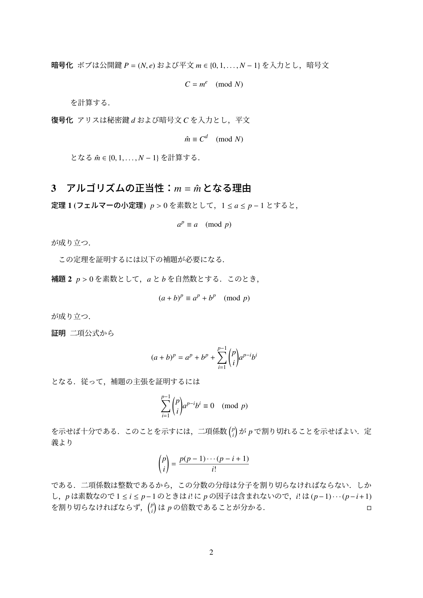
RSA暗号 p3
定理1の証明 数学的帰納法によって証明する．$a=1$のときは明らかに成り立っている．$a=k$のとき $$k^p \equiv k \pmod{p}$$ が成り立っているとしよう．$a=k+1$のとき，補題2を使うことで， $$(k+1)^p \equiv k^p + 1^p \equiv k^p + 1 \pmod{p}$$ が成り立つ．従って，$a=k$に対する仮定より $$(k+1)^p \equiv k^p + 1 \equiv k+1 \pmod{p}$$ が成り立つ．$\square$
フェルマーの小定理において，両辺を$a$で割ることで $$a^{p-1} \equiv 1 \pmod{p} \tag{2}$$ が成り立つ．この式をRSA暗号で使いやすいようにさらに拡張しておく．
定理3（拡張フェルマーの小定理） $p > 0$を素数とし，自然数$x$が$x \equiv 1 \pmod{(p-1)}$を満たすとき，任意の自然数$a$に対して， $$a^x \equiv a \pmod{p}$$ が成り立つ．
証明 $x-1$は$p-1$で割り切れるので，ある自然数$q$によって$x-1 = q(p-1)$と書ける．$a'$を$0 \le a' \le p-1$かつ$a' \equiv a \pmod{p}$とする．このとき，式(2)より， $$a^x \equiv (a')^x \equiv (a')^{q(p-1)+1} \equiv (a')^{q(p-1)} \times a' \equiv a' \equiv a \pmod{p}$$ が成り立つ．$\square$
式(1)より，$ed-1$は$(p-1)$で割り切れるので， $$ed \equiv 1 \pmod{p-1}$$ である．従って，拡張したフェルマーの小定理より $$C^d \equiv (m^e)^d \equiv m^{ed} \equiv m \pmod{p}$$ が成り立つ．従って， $$C^d - m \equiv 0 \pmod{p}$$
（ページ下部：ページ番号 3）
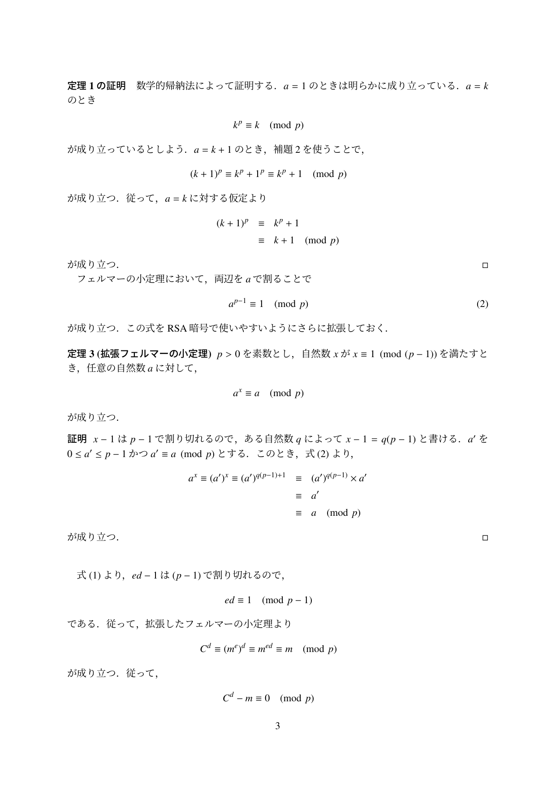
RSA暗号 p4
つまり$C^d - m$は$p$で割り切れる．
一方，式(1)より，$ed-1$は$(q-1)$で割り切れるので， $$ed \equiv 1 \pmod{q-1}$$ である．従って，拡張したフェルマーの小定理より $$C^d \equiv (m^e)^d \equiv m^{ed} \equiv m \pmod{q}$$ が成り立つ．従って， $$C^d - m \equiv 0 \pmod{q}$$ つまり$C^d - m$は$q$で割り切れる．
ここで，$p$と$q$は素数で互いに素であるので，$C^d - m$は$N = pq$でも割り切れる．従って， $$C^d \equiv m \pmod{N}$$ が成り立つ．
4 RSA仮定と一方向性関数（置換）
公開鍵$(N, e)$が与えられたとき，$N$の素因数分解$N = pq$を効率的に求めることができたとすると，$(p-1)(q-1)$と$e$から秘密鍵$d$を求めることができ，RSA暗号は破られることが分かる．しかしながら，素因数分解が計算量的に困難であるという仮定からRSA暗号を破ることが困難であるということは保証されていない（証明できるのか分かっていない）．そこで，少しずるいと感じるかもしれないが，公開鍵$(N, e)$と暗号文$C$が与えられたとき， $$C = f_{N,e}(M) = M^e \pmod{N} \tag{3}$$ を満たす平文$M \in \{0, 1, \dots, N-1\}$を求めることが計算量的に困難であることを，「RSA仮定」と呼ぶ．この仮定は妥当であると考えられており，様々な暗号技術がこの仮定の前提で構築されている．
ここで，一方向性という概念も導入しておく．(3)のように入力$M$が与えられた際に出力$C$は効率的に計算可能であるが，出力$C$から入力$M$を求めることが困難である関数を「一方向性関数」と呼ぶ．特に，全単射になっているとき，「一方向性置換」と呼ぶ．式(3)で与えられる関数$f_{N,e}$は一方向性置換である．一方向性関数や一方向性置換は様々な暗号技術の構築に利用される．後の講義で，一方向性置換から擬似乱数生成器を構築する方法について扱う．
5 RSA暗号の死角
RSA暗号は一見すると安全なように見えるが，実は識別不可能安全性を満たしていない（識別不可能安全性の定義については第二回，第三回の講義を参照）．実際，二つのメッセージ$m_0, m_1 \in \{0, 1, \dots, N-1\}$とランダムなビット$B \in \{0, 1\}$に対して$C = m_B^e \pmod{N}$とする．攻撃者は$(m_0, m_1)$と$C$から，$m_0^e = C \pmod{N}$が成り立つのか$m_1^e = C \pmod{N}$が成り立つのか計算することで，$B$の値が簡単に分かってしまう．
（ページ下部：ページ番号 4）
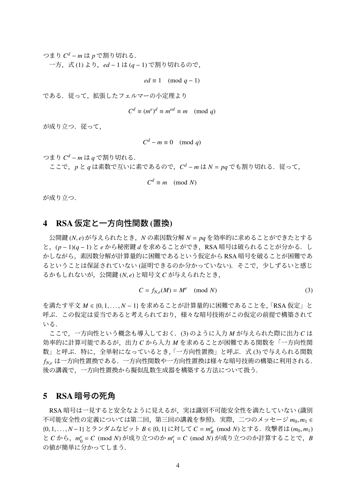
RSA暗号 p5
二つのメッセージだけを識別したい攻撃者は現実的にはいないので，識別不可能安全性は悲観的すぎると感じるかもしれないが，二つに限らずともメッセージの候補数が小さい場合には，同様な議論によりどのメッセージに対応する暗号文なのかが簡単に分かってしまう．例えば，講義の成績（S, A, B, C, D）は各受講生の公開鍵で暗号化して掲示板に掲載することにしても構わないでしょうか（脚注1）．
RSA暗号が識別不可能安全性を満たさないのは，一つのメッセージに対して一つの暗号文が確定的に対応しているからである．よく使われる一つの改善策は，メッセージ$M$（ビット表示されているとする）に乱数$R$を付加した$(M \| R)$を$\{0, 1, \dots, N-1\}$の値に変換してRSA暗号で暗号化するという方式（パディング方式）である．パディング方式では一つのメッセージに複数の暗号文が対応するため，上記問題点は回避することができる．
6 ヤコビ記号
素数$p > 2$に対して，$\mathbf{Z}_p^* = \{1, 2, \dots, p-1\}$は法$p$における乗法に関して群をなす（乗法逆元が存在することは拡張ユークリッドアルゴリズムで保証される）．元$g \in \mathbf{Z}_p^*$は$g, g^2, \dots, g^{p-1}$が全て異なるとき，$g$は生成元であるという．つまり，$\mathbf{Z}_p^*$の全ての元は$g$の冪乗で表されるということである．ちなみにフェルマーの小定理より$g^{p-1} = 1$である．例えば，$\mathbf{Z}_7^* = \{1,2,3,4,5,6\}$において，3は生成元であるが，2は生成元ではない．
生成元$g$により$\mathbf{Z}_p^*$は $$\mathbf{Z}_p^* = \{g^0, g^1, g^2, \dots, g^{\frac{p-1}{2}-1}, g^{\frac{p-1}{2}}, g^{\frac{p-1}{2}+1}, \dots, g^{p-2}\}$$ のように書くことができる．例えば，$3 \in \mathbf{Z}_7^*$の場合， $$\mathbf{Z}_7^* = \{3^0=1, 3^1=3, 3^2=2, 3^3=6, 3^4=4, 3^5=5\}$$ である．指数が偶数であるとき，$a = g^{2j}$は$x = g^j$とすると $$x^2 = a \pmod{p} \tag{4}$$ を満たす．このような元$a$は平方剰余であるという．一方，指数が奇数であるとき，$a = g^{2j+1}$に対して(4)を満たす$x \in \mathbf{Z}_p^*$は存在しない．このような元$a$は平方非剰余であるという．例えば，$\mathbf{Z}_7^*$において1, 2, 4は平方剰余であり，3, 6, 5は平方非剰余である．
$a \in \mathbf{Z}_p = \{0, 1, \dots, p-1\}$に対して，ヤコビ記号を $$\left(\frac{a}{p}\right) = \begin{cases} 1 & a \text{が平方剰余であるとき} \\ -1 & a \text{が平方非剰余であるとき} \\ 0 & a=0 \end{cases}$$ と定義する（脚注2）．
補題4 ヤコビ記号は$\left(\dfrac{a}{p}\right) = a^{\frac{p-1}{2}} \pmod{p}$により計算される．ただし，$p-1 \equiv -1 \pmod{p}$に注意．
脚注1：一昔前の大学では（暗号化していない）成績が掲示板に貼り出されるというのは問題のある行為だとは考えられていなかった… 脚注2：ルジャンドル記号と呼ばれることもある
（ページ下部：ページ番号 5）
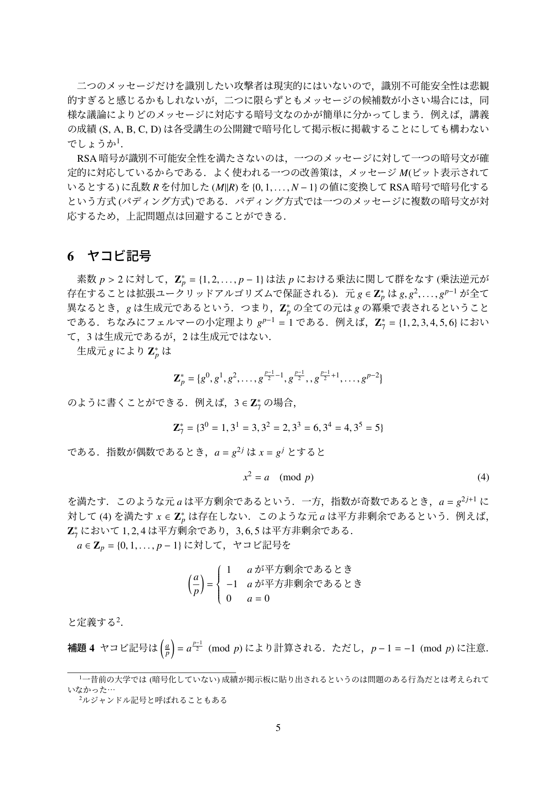
RSA暗号 p6
証明 $a$が平方剰余であるとき，すなわち$a = g^{2j}$と書けるとき， $$a^{\frac{p-1}{2}} = (g^{2j})^{\frac{p-1}{2}} = g^{p-1} = 1 \pmod{p}$$ である．一方，$a$が平方非剰余であるとき，すなわち$a = g^{2j+1}$と書けるとき， $$a^{\frac{p-1}{2}} = (g^{2j+1})^{\frac{p-1}{2}} = g^{p-1} \cdot g^{\frac{p-1}{2}} = g^{\frac{p-1}{2}} \pmod{p}$$ である．$(g^{\frac{p-1}{2}})^2 = g^{p-1} = 1 \pmod{p}$なので，$g^{\frac{p-1}{2}} = \pm 1 \pmod{p}$である．しかし，$g$は生成元なので，$g^{\frac{p-1}{2}} \ne 1 \pmod{p}$であるため，$g^{\frac{p-1}{2}} = -1 \pmod{p}$である．$a=0$のとき，明らかに$a^{\frac{p-1}{2}} = 0 \pmod{p}$である．$\square$
系5 $a, b \in \mathbf{Z}_p$に対して， $$\left(\frac{ab}{p}\right) = \left(\frac{a}{p}\right)\left(\frac{b}{p}\right)$$ が成り立つ．
証明 補題4より， $$\left(\frac{ab}{p}\right) = (ab)^{\frac{p-1}{2}} = a^{\frac{p-1}{2}} b^{\frac{p-1}{2}} = \left(\frac{a}{p}\right)\left(\frac{b}{p}\right) \pmod{p}$$ が成り立つ．$\square$
二つの素数$p, q > 2$に対して，合成数$N = pq$とする．元$a \in \mathbf{Z}_N = \{0, 1, \dots, N-1\}$のヤコビ記号を $$\left(\frac{a}{N}\right) = \left(\frac{a \pmod{p}}{p}\right)\left(\frac{a \pmod{q}}{q}\right)$$ により定義する．系5より， $$\left(\frac{ab}{N}\right) = \left(\frac{a}{N}\right)\left(\frac{b}{N}\right)$$ が成り立つ．
$a \in \mathbf{Z}_N^*$が平方剰余，すなわち$x^2 = a \pmod{N}$となる$x$が存在したとする．すると，$x^2 = a \pmod{p}$かつ$x^2 = a \pmod{q}$であり，$\left(\frac{a}{N}\right) = 1$である．対偶をとり，$\left(\frac{a}{N}\right) = -1$であるならば，$a$は$\mathbf{Z}_N$において平方非剰余である．一方，$\left(\frac{a}{N}\right) = 1$であったとしても，$a$が$\mathbf{Z}_N$において平方剰余であるとは限らない．実際，与えられた$a$が$\mathbf{Z}_N$において平方剰余かどうか判定する問題は計算量的に困難であると考えられており，そのことに基づいた暗号も存在する．しかしながら，ヤコビ記号自体は効率的に計算することができることが知られている（脚注3）．
脚注3：計算方法に関しては，「ヤコビ記号の相互法則」について調査してみよ．
（ページ下部：ページ番号 6）
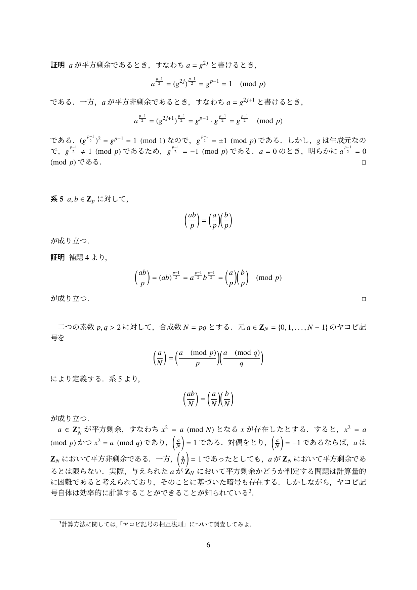
RSA暗号 p7
7 LSBオラクル攻撃
(3)で与えられるRSA暗号化はメッセージに関する情報を一切漏らさないのだろうか．実はそうではない．メッセージ$M$のヤコビ記号$\left(\frac{M}{N}\right)$を知りたいとしよう．ヤコビ記号の性質より $$\left(\frac{C}{N}\right) = \left(\frac{M^e}{N}\right) = \left(\frac{M}{N}\right)^e = \left(\frac{M}{N}\right)$$ が成り立つ．ただし，最後の等式では$e$が奇数であることを利用した．従って，暗号文$C$からメッセージ$M$のヤコビ記号が計算できてしまう．
上記のように，RSA暗号化は一方向性関数（置換）であるが，入力に関して一部の情報は漏洩している．しかしながら，入力に関する適切な関数$h(M)$で，出力$C$から計算することが困難であるものが存在する．一般に，一方向性関数（置換）が与えられた際に，出力から計算することが困難であるビットをハードコア述語と呼ぶ．RSA暗号化の場合，ハードコア述語は入力$M$の最下位ビット（Least Significant Bit: LSB）である．
以下では，LSBがRSA暗号化のハードコア述語になっていることの理由を説明する．証明したいことは，「RSA暗号化が一方向性関数であるならば，出力$C$から入力$M$のLSBを求める効率的なアルゴリズムは存在しない」である．暗号理論の常套手段として，対偶命題「出力$C$から入力$M$のLSBを求める効率的なアルゴリズムが存在したとすると，RSA暗号化が一方向性関数ではない」を証明する．さて，関数$g: \mathbf{Z}_N \to \{0,1\}$を $$g(C) = (C^d \pmod{N}) \pmod{2},$$ すなわち，暗号文$C$に対して$C = f_{N,e}(M) = M^e \pmod{N}$を満たす平文$M$のLSBを返す関数としよう．このような$g$が存在したとすると，RSA暗号化$f_{N,e}$の逆像が求まってしまうことを示す．このように存在しないものを仮定して攻撃を考える論法を「オラクル（神託）攻撃」と呼ぶ．
まず，RSA暗号化の性質より，任意の自然数$k$に対して，$f_{N,e}(kM) = k^e C \pmod{N}$なので，未知のメッセージ$M$に対応する暗号文$C$が分かっているとき，$kM$に対応する暗号文$k^e C$は公開鍵から簡単に計算できる．特に，$k=2$としたとき$b = 2^e$とおくと，$f_{N,e}(2^i M) = b^i C \pmod{N}$なので，$g(b^i C) = (2^i M \pmod{N}) \pmod{2}$である．
$i=1$のとき，$2M$は偶数，$N=pq$は奇数（ただし$p, q > 2$は素数）であることに注意すると， - $0 \le 2M \le N-1 \iff (2M \pmod{N}) = 2M \iff g(bC) = 2M \pmod{2} = 0$ - $N \le 2M \le 2N-2 \iff (2M \pmod{N}) = 2M - N \iff g(bC) = 2M - N \pmod{2} = 1$
という関係が成り立つ．
$i=2$のとき，$g(bC) = 0$であった場合 - $0 \le 4M \le N-1 \iff (4M \pmod{N}) = 4M \iff g(b^2C) = 4M \pmod{2} = 0$ - $N \le 4M \le 2N-2 \iff (4M \pmod{N}) = 4M - N \iff g(b^2C) = 4M - N \pmod{2} = 1$
という関係が成り立ち，$g(bC)=1$であった場合 - $0 \le 4M - 2N \le N-1 \iff (4M \pmod{N}) = (4M - 2N \pmod{N}) = 4M - 2N \iff g(b^2C) = 4M - 2N \pmod{2} = 0$
（ページ下部：ページ番号 7）
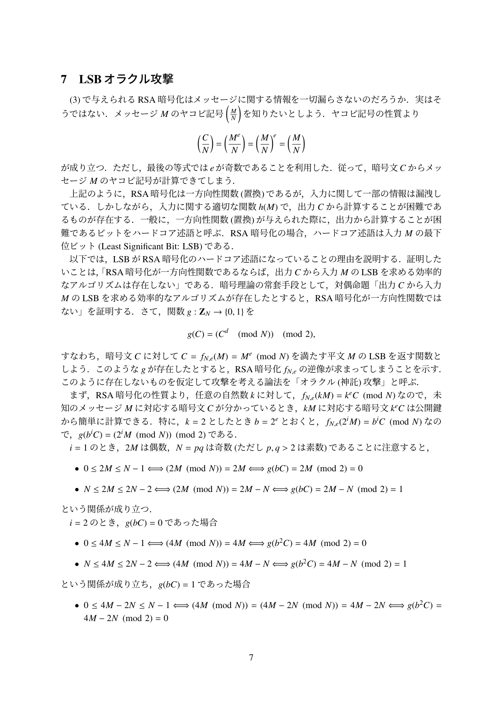
RSA暗号 p8
- $N \le 4M - 2N \le 2N-2 \iff (4M \pmod{N}) = (4M-2N \pmod{N}) = 4M - 3N \iff g(b^2C) = 4M - 3N \pmod{2} = 1$
という関係が成り立つ．つまり， - $g(bC)=0, g(b^2C)=0 \iff 0 \le M \le \frac{N-1}{4}$ - $g(bC)=0, g(b^2C)=1 \iff \frac{N}{4} \le M \le \frac{N-1}{2}$ - $g(bC)=1, g(b^2C)=0 \iff \frac{N}{2} \le M \le \frac{3N-1}{4}$ - $g(bC)=1, g(b^2C)=1 \iff \frac{3N}{4} \le M \le \frac{2N-1}{2}$
という関係が成り立つ．このように，$g(bC), g(b^2C), g(b^3C), \dots$を順に計算していくことにより，$M$の範囲を二分探索することができる．従って，高々$\log N$回オラクル$g$を呼び出すことで，逆像$M$が求まる．
8 Rabin暗号
「素因数分解が困難である」ことは「RSA暗号が安全である」ことの必要条件にはなっているものの，十分条件にはなっていない．本節では，「素因数分解が困難である」ことが安全性の必要十分条件になっているRabin暗号について紹介する．
鍵生成 アリスは次のアルゴリズムを実行する． 1. 二つの大きな素数$p$と$q$で$p \equiv 3 \pmod{4}$, $q \equiv 3 \pmod{4}$を満たすものを選び，$N = pq$を計算する． 2. $P = N$を公開鍵として公開し，$S = (p, q)$を秘密鍵として保持する．
暗号化 ボブは公開鍵$P = N$および平文$m \in \{0, 1, \dots, N-1\}$を入力とし，暗号文 $$C = m^2 \pmod{N}$$ を計算する．
復号化 アリスは秘密鍵$(p, q)$および暗号文$C$を入力とし，平文 $$\hat{m}^2 \equiv C \pmod{N}$$ となる$\hat{m} \in \{0, 1, \dots, N-1\}$を計算する．
Rabin暗号では，復号化の結果が一意に定まらず，平文の候補が4つ表れるという特徴がある．平文の候補を見つけるには以下の中国人の剰余定理を用いる．
補題6 素数$p, q$に対して$N = pq$とする．$a \in \{0, 1, \dots, p-1\}$と$b \in \{0, 1, \dots, q-1\}$に対して， $$x \equiv a \pmod{p}, \tag{5}$$ $$x \equiv b \pmod{q} \tag{6}$$ を満たす$x \in \{0, 1, \dots, N-1\}$が一意に存在する．
（ページ下部：ページ番号 8）
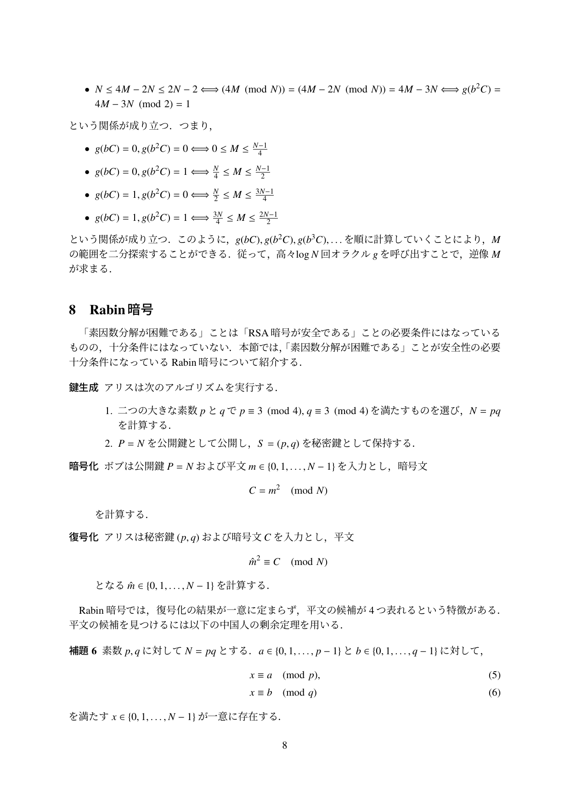
RSA暗号 p9
証明 $p$と$q$は互いに素なので，$p$の法$q$における乗法逆元$p^{-1}$と，$q$の法$p$における乗法逆元$q^{-1}$が存在する．$x = aqq^{-1} + bpp^{-1}$とすると， $$x \equiv bpp^{-1} \equiv b \pmod{q},$$ $$x \equiv aqq^{-1} \equiv a \pmod{p}$$ が満たされる．$x'$を(5)と(6)を満たす解とすると，$x - x'$は$p$と$q$で割り切れる．$p$と$q$は素数なので，$x - x'$は$N = pq$でも割り切れ，$x \equiv x' \pmod{N}$となり，一意性が示される．$\square$
さて，補題6により，$x \in \{0, 1, \dots, N-1\}$と$(a, b) \in \{0, 1, \dots, p-1\} \times \{0, 1, \dots, q-1\}$の間には一対一の対応関係があることが分かる．
平文$m \in \{0, 1, \dots, N-1\}$が$(a, b) \in \{0, 1, \dots, p-1\} \times \{0, 1, \dots, q-1\}$に対応していたとすると，暗号文$C = m^2$は$(a^2, b^2)$に対応する（なぜならば，$m^2 \equiv a^2 \pmod{q}$と$m^2 \equiv b^2 \pmod{p}$が満たされるため）．従って，$(\pm a, \pm b)$が平文の候補になる（ただし$-a = p-a$とする）．秘密鍵$(p, q)$を知っているアリスは以下の手順で平文の候補を求めることができる．$\alpha$を$a^2 \equiv \alpha \pmod{p}$とおく．ここで，フェルマーの小定理を使うと $$\alpha^{\frac{p-1}{2}} \equiv a^{p-1} \equiv 1 \pmod{p}$$ が成り立つ．このとき，$\pm \alpha^{\frac{p+1}{4}}$が求めたい平方根の候補になる（$p \equiv 3 \pmod{4}$より$p+1$は4で割り切れる）．実際， $$\left(\pm \alpha^{\frac{p+1}{4}}\right)^2 \equiv \alpha \cdot \alpha^{\frac{p-1}{2}} \equiv \alpha \pmod{p}$$ が成り立つ．同様に，$b^2 \equiv \beta \pmod{p}$を満たす$b$の候補も$\pm \beta^{\frac{q+1}{4}}$である．このような方法で，秘密鍵を知っていれば平文の候補を求めることができる．
さて，秘密鍵$(p, q)$を知らない場合，Rabin暗号の安全性は保たれるのだろうか．安全性を示すために，$C = m^2$が与えられたとき， $$\tilde{m}^2 \equiv C \pmod{N} \tag{7}$$ を満たす$\tilde{m}$を求める多項式時間アルゴリズム$A$があったと仮定しよう．このアルゴリズム$A$をモジュールとして使い，$N$を素因数分解する多項式時間アルゴリズム$B$を構成できることを示す．すると，背理法により，「素因数分解が困難であるならばRabin暗号は安全性である」という主張が成り立つ。
アルゴリズム$B$ではまず，平文$m \in \{0, 1, \dots, N-1\}$をランダムに選び，$C = m^2 \pmod{N}$を計算する．そして，アルゴリズム$A$を呼び出し，$\tilde{m} = A(C)$を計算する．そして，$\gamma = \gcd(m - \tilde{m}, N)$を出力する．このとき，確率$\frac{1}{2}$で$\gamma$は素因数$p$もしくは$q$のいずれかであることが確認できる．実際，$m$が$(a,b)$に対応するとき，式(7)を満たす$\tilde{m}$は$(a,b), (-a,b), (a,-b), (-a,-b)$のいずれかに対応する．各々の場合の出力$\gamma$は以下のようになる。
【表】$m - \tilde{m}$と出力$\gamma$の対応表： | $m - \tilde{m}$ | $\gamma$ | |---|---| | $0 \leftrightarrow (0,0)$ | $N$ | | $2aqq^{-1} \leftrightarrow (2a,0)$ | $q$ | | $2bpp^{-1} \leftrightarrow (0,2b)$ | $p$ | | $2aqq^{-1}+2bpp^{-1} \leftrightarrow (2a,2b)$ | $1$ |
（ページ下部：ページ番号 9）
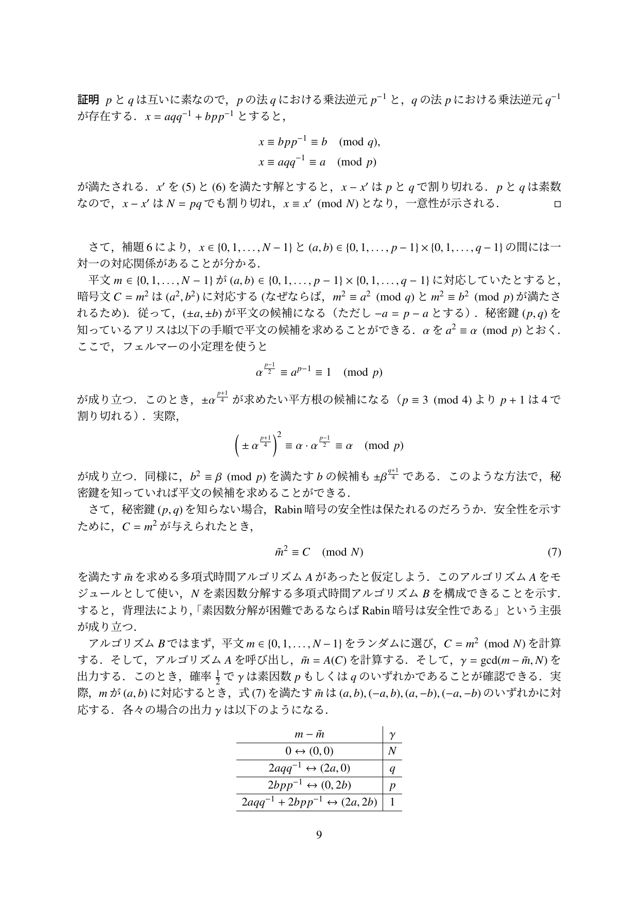
RSA暗号 p10
9 演習問題
-
ヤコビ記号$\left(\dfrac{5}{11}\right), \left(\dfrac{7}{11}\right)$を計算してみよ．
-
$N = 15, M = 7$に対して，LSBオラクル攻撃の動作を確認してみよ．
（ページ下部：ページ番号 10。以降、本ページの残りは白紙。）
要点まとめ
- RSA暗号の安全性は素因数分解の困難性（大きな二つの素数の積$N=pq$から$p,q$を求める計算が困難）に立脚している。例：$p=491, q=709 \Rightarrow N=348119$。
- 鍵生成：大きな素数$p,q$を選び$N=pq$、$\gcd((p-1)(q-1),e)=1$となる$e$を選び、拡張ユークリッドで$ed \equiv 1 \pmod{(p-1)(q-1)}$を満たす$d$を求める。公開鍵$(N,e)$、秘密鍵$d$。
- 暗号化：$C = m^e \pmod N$。復号化：$\hat m \equiv C^d \pmod N$。
- 正当性の証明の骨格：フェルマーの小定理$a^p \equiv a \pmod p$（証明は補題2の二項係数の可除性＋帰納法）→拡張フェルマーの小定理（$x \equiv 1 \pmod{p-1}$なら$a^x \equiv a \pmod p$）→$ed \equiv 1 \pmod{p-1}$かつ$\pmod{q-1}$から$C^d \equiv m \pmod p$かつ$\pmod q$、中国式に合わせて$C^d \equiv m \pmod N$。
- RSA仮定：公開鍵と暗号文$C=M^e \bmod N$から$M$を求めることは計算量的に困難という仮定。素因数分解困難性はRSA仮定の必要条件だが十分性は未証明。
- RSA暗号化は一方向性置換の例だが、識別不可能安全性は満たさない（決定的暗号化のため、候補メッセージが少数なら攻撃者が判別可能）。対策はパディング方式（乱数付加）。
- ヤコビ記号$\left(\frac{a}{p}\right)$は平方剰余性を表す（$1$:平方剰余、$-1$:平方非剰余、$0$:$a=0$）。$\left(\frac{a}{p}\right) \equiv a^{(p-1)/2} \pmod p$（補題4）。乗法性$\left(\frac{ab}{p}\right)=\left(\frac{a}{p}\right)\left(\frac{b}{p}\right)$（系5）。合成数$N=pq$では$\left(\frac{a}{N}\right)=\left(\frac{a \bmod p}{p}\right)\left(\frac{a \bmod q}{q}\right)$と定義され、$\left(\frac{a}{N}\right)=1$は平方剰余の必要条件だが十分条件ではない（平方剰余性判定はRSA同様に困難と予想）。
- RSA暗号化は入力のヤコビ記号を漏らす（$\left(\frac{C}{N}\right)=\left(\frac{M}{N}\right)$、$e$が奇数であることを利用）ため完全な一方向性関数ではないが、LSB（最下位ビット）はハードコア述語であることがオラクル攻撃の対偶論法で示される：LSBを求めるオラクル$g$が存在すれば、$b=2^e$を用いて$g(b^iC)$を繰り返し呼び出し$M$の範囲を二分探索でき、高々$\log N$回で$M$を復元できてしまう（＝一方向性関数の定義に矛盾）。
- Rabin暗号：$p \equiv q \equiv 3 \pmod 4$の素数から$N=pq$、公開鍵$N$のみ、秘密鍵$(p,q)$。暗号化$C=m^2 \bmod N$、復号は$\hat m^2 \equiv C \pmod N$を満たす$\hat m$を求める（中国人の剰余定理により$(\pm a, \pm b)$の4通りの候補が生じ一意に定まらない）。秘密鍵があれば$\pm \alpha^{(p+1)/4}, \pm \beta^{(q+1)/4}$で候補を計算可能。
- Rabin暗号の安全性は素因数分解困難性と必要十分（同値）：平方根を求める多項式時間アルゴリズム$A$があれば、$\gcd(m-\tilde m, N)$を計算することで確率$1/2$で$N$の素因数($p$または$q$)を得るアルゴリズム$B$が構成できる（背理法）。
- 演習問題：(1) ヤコビ記号$\left(\frac{5}{11}\right), \left(\frac{7}{11}\right)$の計算、(2) $N=15, M=7$でLSBオラクル攻撃の動作確認。
El Gamal暗号（全4ページ）
El Gamal暗号 p1
情報セキュリティ講義ノート 第七回：El Gamal暗号 担当：渡辺 2026年6月2日
今回の講義では，El Gamal暗号に関連する話題について述べる．
1 El Gamal暗号
El Gamal暗号の安全性は素因数分解の代わりに離散対数問題と呼ばれる問題に基づいている．
$p$を素数とし，集合 $\mathbf{Z}_p^* = \{1,\ldots,p-1\}$ の要素 $x,y \in \mathbf{Z}_p^*$ に対して演算 $x\cdot y$ を「$x\times y$ を $p$ で割った余り」と定義すると，$(\mathbf{Z}_p^*, \cdot)$ は群をなす（脚注1：以下では $a\cdot b$ を省略して $ab$ と記す）．群 $(\mathbf{Z}_p^*, \cdot)$ において，元 $g \in \mathbf{Z}_p^*$ は $g, g^2, \ldots, g^{p-1}$ が全て異なるとき，$(\mathbf{Z}_p^*, \cdot)$ の生成元であるという（脚注2：$g^m$ は $g\cdot g\cdots g$ のように，積 $\cdot$ を $m$ 回計算するものとする．フェルマーの小定理により $g^{p-1}=1$ は単位元であることに注意せよ．例えば，$p=5$ の場合，元 $g=3$ は生成元であるが，$g=4$ は生成元ではない）．
群 $(\mathbf{Z}_p^*, \cdot)$ の生成元 $g$ と $x \in \mathbf{Z}_p^*$ に対して，
$$y = g^x \quad (1)$$
を計算するのは容易であるが，$y$ から (1) を満たす $x$ を求めることを離散対数問題と呼び，計算量的に困難であると信じられている．例えば，$p = 19$，$g = 2$ としたときに，$y = g^8$ を計算するのと，$g^x = 12$ となる $x$ を求めるのはどちらが大変かやってみよ．
El Gamal暗号は以下の手順で行われる．
鍵生成 アリスは十分大きな素数 $p$ ならびに $(\mathbf{Z}_p^*, \cdot)$ の生成元 $g$ に対して，$x \in \mathbf{Z}_p^*$ をランダムに選び，$y = g^x$ を計算する．そして，公開鍵 $(p,g,y)$ を公開し，秘密鍵を $x$ とする．
暗号化 ボブは平文 $m \in \mathbf{Z}_p^*$ に対し，$r \in \mathbf{Z}_p^*$ をランダムに選び，
$$c_1 = g^r,$$ $$c_2 = my^r$$
を計算し，暗号文を $(c_1, c_2)$ とする．
復号化 アリスは暗号文 $(c_1,c_2)$ および秘密鍵 $x$ から，平文 $\hat{m}$ を以下のように計算する：
$$\hat{m} = c_2(c_1^x)^{-1}$$
（ただし，$(c_1^x)^{-1}$ は $c_1^x$ の乗法 $\cdot$ に関する逆元を表す）．
（ページ下部脚注： 1. 以下では $a\cdot b$ を省略して $ab$ と記す． 2. $g^m$ は $g\cdot g\cdots g$ のように，積 $\cdot$ を $m$ 回計算するものとする．フェルマーの小定理により $g^{p-1}=1$ は単位元であることに注意せよ．例えば，$p=5$ の場合，元 $g=3$ は生成元であるが，$g=4$ は生成元ではない．）
（ページ番号：1）
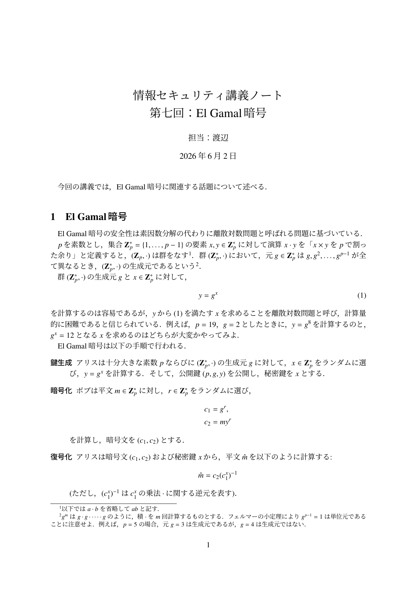
El Gamal暗号 p2
以上のアルゴリズムにおいて $m = \hat{m}$ となることは
$$\hat{m} = c_2(c_1^x)^{-1} = my^r(g^{rx})^{-1} = mg^{rx}(g^{rx})^{-1} = m$$
から確認できる．
2 El Gamal暗号のバリエーション
前節で紹介した基本的なEl Gamal暗号は法 $p$ における合同式を乗算として乗法群 $(\mathbf{Z}_p^*, \cdot)$ を考えていたが，El Gamal暗号のアイディアは他の可換群にも使うことができる．特に，離散対数問題がより困難な群を利用することで，攻撃者の計算力に対して群のサイズ（鍵のサイズ）を小さく保つことができる．群のサイズが大きくなると正規のユーザの処理速度にも影響を与えるため，これは大きなメリットである．実際に広く使われているEl Gamal暗号のバリエーションは，楕円曲線と呼ばれる代数曲線上の点から成る群を利用した，楕円El Gamal暗号がある．第五回の講義で紹介した，円上の点が成す群の構造と類似の考え方で，楕円曲線と呼ばれる代数曲線上の点に群構造を入れることができる．
例えば，群 $(C(\mathbb{F}_p), +)$ における離散対数問題は以下のように定式化される．生成元 $P \in C(\mathbb{F}_p)$ と自然数 $1 \le x \le |C(\mathbb{F}_p)|$ に対して，$y = xP$ を考える．ただし，$xP$ は $P$ 同士の和を $x$ 回とるものとする．このとき，$y$ と $P$ から
$$y = xP$$
を満たす $x$ を求める問題が $(C(\mathbb{F}_p), +)$ における離散対数問題となる．加法群の場合，離散対数問題は対数のように見えないが，群のパラメータを適切に選ぶことで，解くのが困難になることが知られている．
3 DDH仮定とEl Gamal暗号の識別不可能安全性
前回の講義で（メッセージのパディングをしない）RSA暗号は識別不可能安全性を満たさないことを見た．その要因は，RSA暗号化において平文と暗号文が一対一に対応していることであった．El Gamal暗号は一つの平文に対して複数の暗号文が対応しているランダム暗号化である．従って，識別不可能安全性を満たすことが期待される．
安全性を厳密に議論するために，離散対数問題の困難性より少し強いDDH (Decisional Diffie-Hellman) 仮定を導入する（脚注3：DDH仮定が離散対数問題の困難性より強い仮定であるとは，離散対数問題を効率的に解くことができるならば，DDH仮定を破ることができるという意味である）．
定義1 $p$を大きな素数として，$g$を乗法群 $\mathbf{Z}_p^*$ の生成元とする（脚注4：DDH仮定が困難であるためには $\mathbf{Z}_p^*$ の要素数が素数となる部分群を使用することが推奨されているが，ここでは簡単のため $\mathbf{Z}_p^*$ を考える）．ランダムに選んだ三つの元 $a,b,c \in \mathbf{Z}_p^*$ に対して，次のような識別ゲームを考える．ランダムなビット $B \in \{0,1\}$ に対して，$B = 0$ のときは $Z = (g,g^a,g^b,g^{ab})$ とし，$B = 1$ のときは $Z = (g,g^a,g^b,g^c)$ とする．そして，$Z$ を観測した際に $B$ の値を当てることができたら勝ちとする．十分に小さな $\varepsilon$ と群のサイズ（$p$のビット数）に対して，多項式時間で計算を終える任意のアルゴリズムによってゲームに勝つ確率が高々 $1/2 + \varepsilon$ であるとき，DDH仮定が成り立つという．
（ページ番号：2）
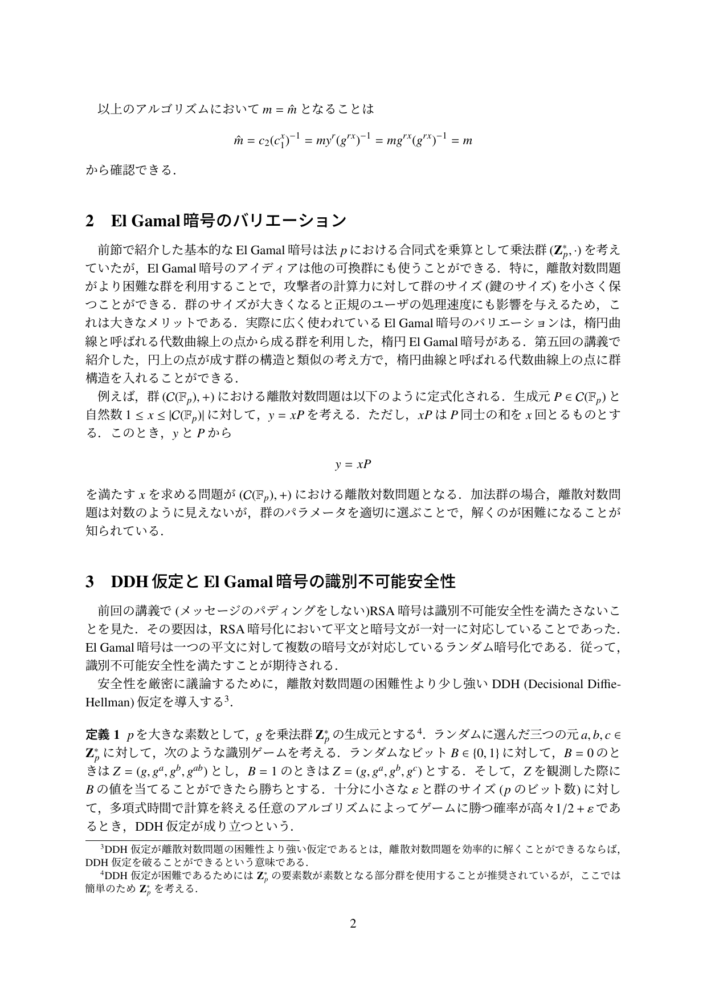
El Gamal暗号 p3
もし計算時間を気にしないのであれば，$ab = c$ となっているとき以外は確実に識別することができる．$ab = c$ となる確率は $\frac{1}{p-1}$ なので（$a,b$ を固定し，$c$ をランダムに選んだ際に $ab = c$ となるのは $p - 1$ 通りのうち一つだけである），$p$ が大きいときほぼ確率 $1$ でゲームに勝つことができる．
もし離散対数問題を効率的に解くアルゴリズムが存在したとすると，$Z$ の四つ目の要素が $g^{ab}$ なのかそうでないのか計算できてしまうので，ほぼ確率 $1$ でゲームに勝つことができる．
定理2 DDH仮定のもとで，El Gamal暗号は識別不可能安全性を満たす．
定理2を証明するには，対偶を示せばよい．すなわち，El Gamal暗号において二つのメッセージ $m_0$ と $m_1$ に対応する暗号文から識別するアルゴリズム $A$ があったとすると，このアルゴリズムをサブモジュールとしてDDH仮定を破るアルゴリズム $A'$ を作れてしまうことを示す．
$x,r \in \mathbf{Z}_p^*$ をランダムに選んだ要素とし，$y = g^x$ とする．まず，メッセージ $m_0$ と $m_1$ に対応する暗号文 $t_0 = (g^r, m_0y^r)$ と $t_1 = (g^r, m_1y^r)$ に対して，アルゴリズム $A$ はそこそこ大きな値 $\Delta$ に対して（例えば $\Delta = \frac{1}{10}$）（脚注5：少し厳密さを欠くことになるが，固定した $\Delta$ の値だけを考える．$A$ の正解率が $1/2$ よりそこそこ大きければ $A'$ の正解率も $1/2$ よりそこそこ大きくなってしまうことで，DDH仮定に矛盾を導く）
$$\Pr(A(t_K) = K) > \frac{1}{2} + 2\Delta \quad (2)$$
を満たしているとしよう．ただし，$K \in \{0,1\}$ はランダムに選んだビットとする．
次に，ランダムに選んだビット $B \in \{0,1\}$ とランダムに選んだ $u \in \mathbf{Z}_p^*$ に対して，
- $B = 0 \implies Z = (Z_1,Z_2,Z_3,Z_4) = (g,g^x,g^r,g^{xr})$
- $B = 1 \implies Z = (Z_1,Z_2,Z_3,Z_4) = (g,g^x,g^r,g^u)$
とする．$Z = (Z_1,Z_2,Z_3,Z_4)$ を観測した際に，アルゴリズム $A$ をサブモジュールとして利用し，$B$ の値を当てるアルゴリズム $A'$ を以下のように定める：
- $A((Z_1,Z_2,Z_3,m_K\cdot Z_4)) = K \implies A'(Z) = 0$
- $A((Z_1,Z_2,Z_3,m_K\cdot Z_4)) \ne K \implies A'(Z) = 1$
ここで，アルゴリズム $A'$ の正解率は
$$\Pr(A'(Z) = B) = \frac{1}{2}\Pr(A'(Z) = 0|B = 0) + \frac{1}{2}\Pr(A'(Z) = 1|B = 1)$$
と書ける．
まずは $B = 1$ の場合を考える．このとき，$Z_4 = g^u$ は $\mathbf{Z}_p^*$ のランダムな値をとる．従って，$K \in \{0,1\}$ の値によらず $m_K \cdot Z_4$ も $\mathbf{Z}_p^*$ のランダムな値をとる．つまり，$m_0 \cdot Z_4$ と $m_1 \cdot Z_4$ は計算量によらず見分けがつかず，
$$\frac{1}{2}\Pr(A(m_0\cdot g^u) \ne 0) + \frac{1}{2}\Pr(A(m_1\cdot g^u) \ne 1) = \frac{1}{2}$$
が成り立つ．従って，
$$\Pr(A'(Z) = 1|B = 1) = \Pr(A(m_K\cdot g^u) \ne K)$$ $$= \frac{1}{2}\Pr(A(m_0\cdot g^u) \ne 0) + \frac{1}{2}\Pr(A(m_1\cdot g^u) \ne 1)$$ $$= \frac{1}{2}$$
（ページ番号：3）
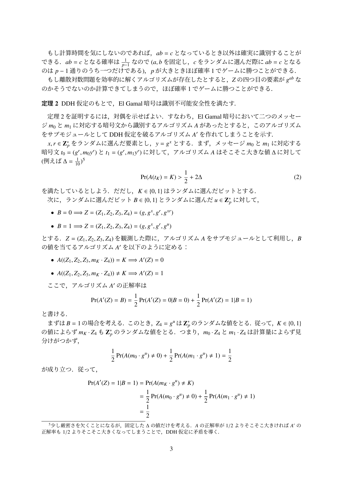
El Gamal暗号 p4
が成り立つ．
$B = 0$ のときに $A'(Z) = 0$ となるのは $A(m_K\cdot g^{xr}) = K$ となるときで，(2) より
$$\Pr(A'(Z) = 0|B = 0) = \Pr(A(t_K) = K)$$ $$> \frac{1}{2} + 2\Delta$$
となる．従って，アルゴリズム $A'$ の正解率は
$$\Pr(A'(Z) = B) > \frac{1}{2} + \Delta$$
となり，DDH仮定が破られてしまう．
従って，El Gamal暗号で暗号化されたメッセージを $1/2$ よりそこそこ高い確率で識別できるアルゴリズム $A$ は存在しない．
4 演習問題
- $p = 17$ に対して，$g = 3$ が $\mathbf{Z}_p^*$ の原始元であることを確認せよ．
- $p = 17, g = 3$ として，$x,r,m$ を適当に選び暗号化・復号化をやってみよ．
（ページ番号：4）
（注：本ページ以降に本文の記述はなく，白紙）
要点まとめ
- El Gamal暗号の安全性は離散対数問題（DLP）の困難性に基づく：$g$ を群 $(\mathbf{Z}_p^*, \cdot)$ の生成元とし，$y = g^x$ から $x$ を求める問題が離散対数問題。
- 鍵生成：素数 $p$ と生成元 $g$ に対し，秘密鍵 $x \in \mathbf{Z}_p^*$ をランダムに選び，$y = g^x$ を計算。公開鍵は $(p,g,y)$，秘密鍵は $x$。
- 暗号化：平文 $m$ に対し乱数 $r \in \mathbf{Z}_p^*$ を選び，$c_1 = g^r$，$c_2 = my^r$ を計算。暗号文は $(c_1,c_2)$。
- 復号化：$\hat{m} = c_2(c_1^x)^{-1}$（$c_1^x$ の乗法逆元をかける）。正当性：$\hat{m} = my^r(g^{rx})^{-1} = mg^{rx}(g^{rx})^{-1} = m$（$y^r = g^{xr} = g^{rx}$ を利用）。
- El Gamal暗号は乗法群以外の可換群（例：楕円曲線上の点がなす加法群 $(C(\mathbb{F}_p),+)$）にも一般化できる（楕円El Gamal暗号）。加法群の離散対数問題：$y = xP$ を満たす $x$ を求める問題。
- RSA暗号（パディングなし）は平文と暗号文が一対一対応のため識別不可能安全性を満たさないが，El Gamal暗号は一つの平文に複数の暗号文が対応するランダム暗号化であり，識別不可能安全性を満たすことが期待される。
- DDH仮定：$g,g^a,g^b,g^{ab}$（$B=0$）と $g,g^a,g^b,g^c$（$B=1$，$c$ はランダム）を多項式時間アルゴリズムで区別する確率が高々 $1/2+\varepsilon$ であるという仮定。離散対数問題の困難性より強い仮定。
- 定理2：DDH仮定のもとでEl Gamal暗号は識別不可能安全性を満たす。証明は対偶（識別アルゴリズム $A$ からDDH仮定を破るアルゴリズム $A'$ を構成する帰着）による。
- 演習問題は具体的な数値例として $p=17, g=3$ を用いた原始元の確認および暗号化・復号化の実践を求めているが，本資料内には計算過程・解答は記載されていない（生成元の確認や $x,r,m$ の具体的数値・計算結果は本文になし）。
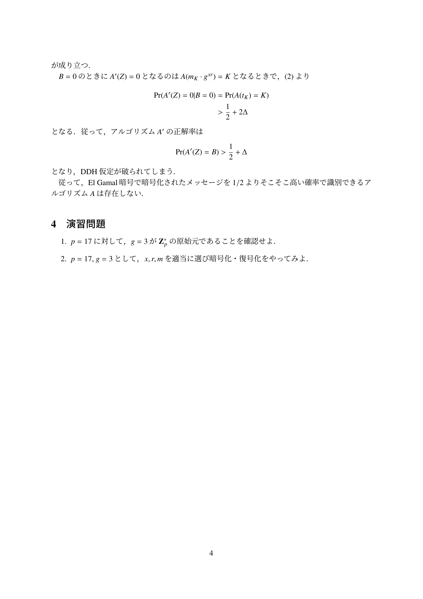
擬似乱数生成器の構成法（全4ページ）
擬似乱数生成器の構成法 p1
情報セキュリティ講義ノート 第八回：擬似乱数生成器の構成法
担当：渡辺 2026年6月10日
今回の講義では，一方向性置換から擬似乱数生成器を構成する方法ついて述べる．擬似乱数生成器は一方向性関数から構成できることが知られているが，簡単のため，特別な場合である一方向性置換から擬似乱数生成器を構成する方法のみ紹介する．
1 一方向性関数(置換)とハードコア述語
RSA暗号の暗号化
$$C = f_{N,e}(M) = M^e \pmod{N}$$
のように，入力 $M$ から出力 $C$ を得るのは計算量的に容易であるが，出力から入力を計算するのは困難であるような関数を，一方向性関数と呼ぶ．
より一般には，以下のような性質を持つ関数を一方向性関数と呼ぶ．
定義1 関数 $f: X \to Y$ が以下の性質を満たすとき，「一方向性関数」と呼ぶ．
- 定義域の値 $x \in X$ が与えられたとき，$f(x)$ は（入力 $x$ のビット数の）多項式時間で計算可能である．
- 値域の値 $y \in Y$ が与えられたとき，$f(x) = y$ となる $x \in X$ を多項式時間で見つけることはできない（脚注1）．特に $f$ が全単射であるとき一方向性置換と呼ぶ．
一方向性関数は入力に関する情報を一切漏らさないわけではないが，出力から推測できないビットが必ず存在するはずである．そうでなければ，入力を求められてしまうであろう．RSA暗号化の場合，入力の最下位ビット(LSB)がそのようなビットである．そのようなビットをハードコア述語と呼ぶ．一方向性置換 $f(x)$ のハードコア述語を $h(x) \in \{0,1\}$ と書くことにする．十分に小さな $\varepsilon$ とランダムに選んだ入力 $x \in X$ に対し，任意の多項式時間アルゴリズムによって $f(x)$ から $h(x)$ が0なのか1なのか推測した際に正解する確率が $\frac{1}{2} + \varepsilon$ となるとき，$h(x)$ が $f(x)$ のハードコア述語であるという．
離散対数問題
$$f(x) = g^x \pmod{p}$$
（次ページに続く）
脚注1：より正確には乱択アルゴリズムまで考える必要があるので，「$f(x) = y$ となる $x$ を見つけられる確率が微小である」といった定義をする必要があるが，ここでは簡単のためこのように定義する．
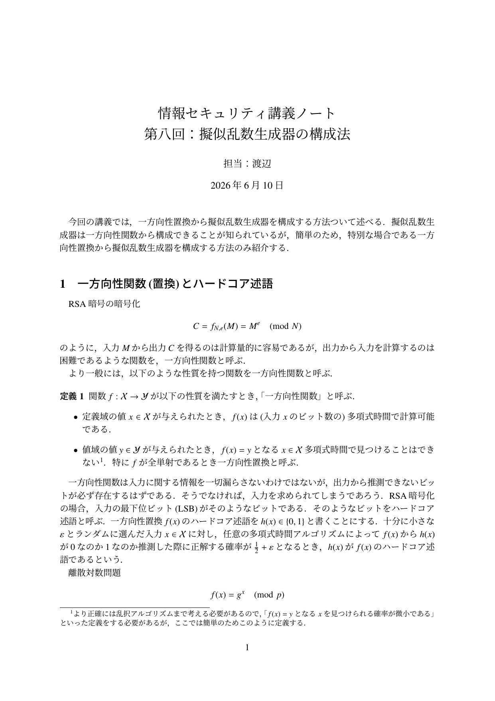
擬似乱数生成器の構成法 p2
（前ページからの続き）に対しては，入力 $x$ の最上位ビット(MSB)がハードコア述語になることが知られている．
より一般に，任意の一方向性関数は，関数に少し修正を加えることでハードコア述語が存在することを示せることが知られている．
2 一方向性置換から擬似乱数生成器の構成
$f: \{0,1\}^n \to \{0,1\}^n$ を一方向性置換とする（一般論をイメージしずらければRSA暗号化だと思えばよい）．$n$ ビットの（一様な）シード乱数 $r \in \{0,1\}^n$ が与えられたとき，$f$ は置換なので $f(r)$ も一様な $n$ ビットの乱数である．$r$ を $f(r)$ に変換しただけでは長さが $n$ のままなので，擬似乱数生成器を構成したことにならない．どうすればよいのだろうか．
置換 $f(x)$ のハードコア述語を $h(x)$ とすると，ハードコア述語の定義より $h(r)$ は $f(r)$ から推測しにくいので，これらを連接した $f(r)\|h(r)$ は一様乱数とみなしても大丈夫なのではないだろうか．実際，このように作った（$n$ ビットのシードから $n+1$ ビットを出力する）擬似乱数生成器
$$G(r) = f(r)\|h(r) \tag{1}$$
は安全であることを示すことができる．
定理2 $f(x)$ が一方向性置換であるという仮定のもとで，$h(x)$ をその置換のハードコア述語とすると，(1)で定義される擬似乱数生成器は計算量的に安全である．
定理2を証明するためには，対偶をとり，$n+1$ ビットの擬似乱数 $G(r)$ と $n+1$ ビットの真性乱数 $U$ を $\frac{1}{2}$ よりそこそこ高い正解率で識別する多項式時間アルゴリズム $D$ が存在したとすると，$f(r)$ からハードコア述語 $h(r)$ を $\frac{1}{2}$ よりそこそこ高い正解率で当てる多項式時間アルゴリズム $A$ が存在することを証明する．
まず，仮定より（$D$ は擬似乱数と判定したら1を返し，真性乱数と判定したら0を返すものとする），$D$ が擬似乱数と真性乱数の識別に正解する確率は
$$\frac{1}{2}\Pr(D(f(r)\|h(r)) = 1) + \frac{1}{2}\Pr(D(r\|r') = 0) \geq \frac{1}{2} + \Delta$$
を満たす．ここで，$\Delta$ はそこそこ大きな数（例えば $\frac{1}{4}$ と思えばよい）とする．また，$r'$ は $r$ とは独立なランダムなビットとする（つまり $r\|r'$ は $n+1$ ビットの一様乱数なので真性乱数 $U$ である）．ここで，$f(r)$ は $r'$ と独立かつ一様であることに注意すると $\Pr(D(r\|r') = 0) = \Pr(D(f(r)\|r') = 0)$ が成り立ち，上式は
$$\frac{1}{2}\Pr(D(f(r)\|h(r)) = 1) + \frac{1}{2}\Pr(D(f(r)\|r') = 0) \geq \frac{1}{2} + \Delta$$
と書くことができる．さらに，右辺の $\frac{1}{2}$ を左辺に移項して2倍することで
$$\Pr(D(f(r)\|h(r)) = 1) - \Pr(D(f(r)\|r') = 1) \geq 2\Delta$$
が成り立つ．ただし，$\Pr(D(f(r)\|r') = 1) = 1 - \Pr(D(f(r)\|r') = 0)$ を用いた．
ここで，$\overline{h(r)} = h(r) \oplus 1$ と書くことにすると $\Pr(D(f(r)\|r') = 1)$ は
$$\Pr(D(f(r)\|r') = 1) = \Pr(D(f(r)\|r') = 1, r' = h(r)) + \Pr(D(f(r)\|r') = 1, r' = \overline{h(r)})$$ $$= \Pr(D(f(r)\|h(r)) = 1, r' = h(r)) + \Pr(D(f(r)\|\overline{h(r)}) = 1, r' = \overline{h(r)})$$ $$= \frac{1}{2}\Pr(D(f(r)\|h(r)) = 1) + \frac{1}{2}\Pr(D(f(r)\|\overline{h(r)}) = 1)$$
（次ページに続く）
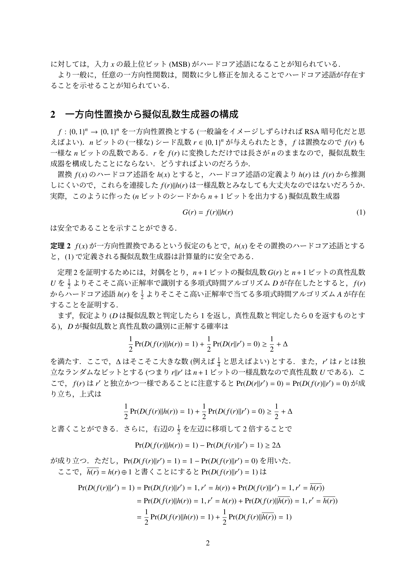
擬似乱数生成器の構成法 p3
（前ページからの続き）と書き直すことができる．先程の式に代入すると，
$$\frac{1}{2}\Pr(D(f(r)\|h(r)) = 1) - \frac{1}{2}\Pr(D(f(r)\|\overline{h(r)}) = 1) \geq 2\Delta$$
が得られる．
さて，$f(r)$ を観測した際にハードコア述語 $h(r)$ を推測するためのアルゴリズム $A$ を，$D$ をサブモジュールとして利用して次のように定義する：ランダムなビット $r'$ を生成し，
- $D(f(r)\|r') = 1$ ならば $h(r)$ の推測値として $r'$ を出力する．
- $D(f(r)\|r') = 0$ ならば $h(r)$ の推測値として $r' \oplus 1$ を出力する．
さて，この推測アルゴリズムが $h(r)$ の推測に正解する確率は
$$\Pr(A(f(r)) = h(r)) = \Pr(r' = h(r), D(f(r)\|r') = 1) + \Pr(r' = \overline{h(r)}, D(f(r)\|r') = 0)$$ $$= \Pr(r' = h(r), D(f(r)\|h(r)) = 1) + \Pr(r' = \overline{h(r)}, D(f(r)\|\overline{h(r)}) = 0)$$ $$= \frac{1}{2}\Pr(D(f(r)\|h(r)) = 1) + \frac{1}{2}\Pr(D(f(r)\|\overline{h(r)}) = 0)$$ $$= \frac{1}{2} + \frac{1}{2}\Big(\Pr(D(f(r)\|h(r)) = 1) - \Pr(D(f(r)\|\overline{h(r)}) = 1)\Big)$$ $$\geq \frac{1}{2} + 2\Delta$$
となる．つまり，$\frac{1}{2}$ よりそこそこ大きな確率で正解できてしまい，$h(r)$ が一方向性関数のハードコア述語であることに矛盾する．従って，$f(r)\|h(r)$ と真性乱数を識別するアルゴリズム $D$ は存在しない．
3 2ビット以上増やすには
前節の方法で，$n$ ビットのシード乱数から $n+1$ ビットの擬似乱数を作ることができる．さて，2ビット以上増やす擬似乱数生成器を構成するにはどうすればよいのだろうか．実は，1ビット増やす擬似乱数生成器 $G$ を複数回使っても安全性は損なわれないのである．より正確には，若干は損なわれるが，繰り返し使う回数がほどほどであれば，十分な安全性を担保できる．アイディアは一緒なので，二回繰り返す場合を以下では説明する．
$G: \{0,1\}^n \to \{0,1\}^{n+1}$ を計算量的に安全な擬似乱数生成器（前節の作り方でもよいし，他の作り方でもよい）とする．
- （1回目）：シード乱数 $s_0 \in \{0,1\}^n$ とし，$s_1 = G(s_0) \in \{0,1\}^{n+1}$ とする
- （2回目）：$s_1$ の先頭 $n$ ビットを $s_1'$，最後の1ビット $\sigma_1$ とし，$s_2 = G(s_1')\|\sigma_1 \in \{0,1\}^{n+2}$ とする．
このとき，出力 $s_2$ が $n+2$ ビットの真性乱数 $u_2 \in \{0,1\}^{n+2}$ と識別できないことを保証したい．そのために，暗号理論の証明でよく使われる「ハイブリッド論法」と呼ばれる議論を使う（脚注2）．$u_1 \in \{0,1\}^{n+1}$ を $n+1$ ビットの真性乱数とし，先頭 $n$ ビットを $u_1'$，最後の1ビットを $\tau_1$ と書くことにする．
ハイブリッド論法の考え方として，$A$ と $B$ が識別できないことを示すには，$A$ と $C$ が識別できないことと $C$ と $B$ が識別できないことを示せばよい．$A$ に対応するのが擬似乱数生成器の出力 $s_2$，
（次ページに続く）
脚注2：ハイブリッドとは，「ハイブリッドカー」のように，複数のものを併用して使うといったニュアンスである．
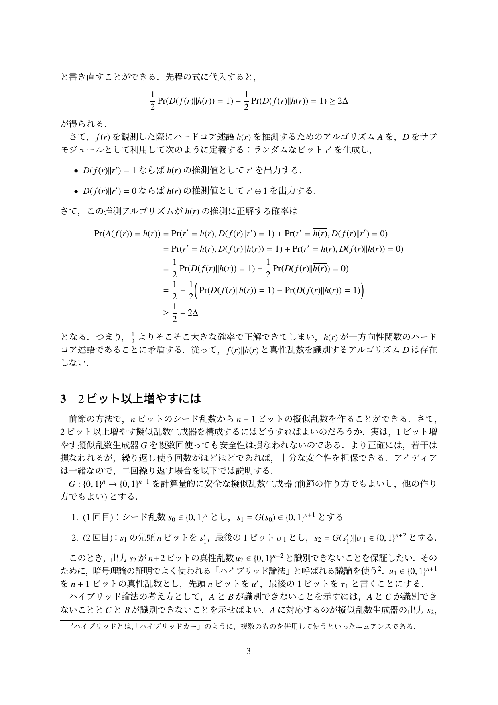
擬似乱数生成器の構成法 p4
（前ページからの続き）$B$ に対応するのが真性乱数 $u_2$，$C$ に対応するのが架空の系列 $G(u_1')\|\tau_1$ である．まず，仮定より $G$ は計算量的に安全な擬似乱数生成器なので，$G(u_1')$ と $u_2$ の先頭 $n+1$ ビットは識別できない．よって，$G(u_1')\|\tau_1$ と $u_2$ は識別できない．
次に，$s_2 = G(s_1')\|\sigma_1$ と $G(u_1')\|\tau_1$ を識別できたと仮定すると，$s_1'\|\sigma_1$ と $u_1'\|\tau_1$ が識別できてしまうことになる．なぜならば，$s_1'\|\sigma_1$ と $u_1'\|\tau_1$ を識別するために擬似乱数生成器 $G$ を通してから識別すればよいからである．しかしながら，仮定より $G$ は計算量的に安全な擬似乱数生成器なので，$s_1'\|\sigma_1 = G(s_0)$ と真性乱数 $u_1'\|\tau_1$ を識別することはできない．これは矛盾である．従って，$s_2 = G(s_1')\|\sigma_1$ と $G(u_1')\|\tau_1$ は識別できない．
以上より，$s_2$ と $u_2$ が識別できないことが示された．
4 演習問題
- 第六回の講義における RSA 仮定が正しいとすると，安全な擬似乱数生成器が存在することの証明の論理の流れを考えてみよ（攻撃に成功する確率の細かい計算まではしなくてよい）． ヒント：RSA仮定から擬似乱数生成器を作るためには (a) RSA暗号化 $f_{N,e}(M) = M^e \pmod{N}$ が一方向性置換であること (b) RSA暗号化におけるメッセージの最下位ビット(LSB)がハードコア述語になっていること (c) 一方向性置換の末尾にハードコア述語を付加したものは1ビット伸ばす擬似乱数生成器になっていること (d) 1ビット伸ばす擬似乱数生成器が与えられたら，複数ビット伸ばす擬似乱数生成器を作れること を順番に組み合わせて構成する．安全性を議論するには逆向きに辿ることを思い出してみよ（第四回講義を参照）．
さらにヒント：○○を攻撃するアルゴリズムがあったなら△△を攻撃するアルゴリズムが作れて，△△を攻撃するアルゴリズムがあったら□□を攻撃するアルゴリズムを作れて…ということを議論する．
- もし RSA 仮定が正しくない，すなわち $C$ から $C = M^e \pmod{N}$ となる $M$ を効率的に求めるアルゴリズムが存在したとすると，RSA暗号化を使って構成した擬似乱数生成器は安全ではないことを確認せよ．
要点まとめ
- 一方向性関数：定義域の値から関数値は多項式時間で計算できるが，関数値から定義域の値を多項式時間で求めることができない関数（定義1）．全単射なら一方向性置換と呼ぶ．
- ハードコア述語 $h(x)$：一方向性置換 $f(x)$ の出力からは推測できない（正解確率が $\frac{1}{2} + \varepsilon$ 程度にしかならない）入力のビット。RSA暗号化ではメッセージの最下位ビット(LSB)，離散対数問題では入力の最上位ビット(MSB)がハードコア述語になることが知られている。任意の一方向性関数は，少し修正を加えればハードコア述語の存在を示せる。
- 擬似乱数生成器の構成：一方向性置換 $f$ とそのハードコア述語 $h$ を用いて $G(r) = f(r)\|h(r)$ と定義すると，$n$ ビットのシードから $n+1$ ビットの計算量的に安全な擬似乱数を生成できる（定理2）。
- 定理2の証明方針：$G(r)$ と真性乱数を識別できるアルゴリズム $D$ が存在すると仮定し，$D$ を利用してハードコア述語 $h(r)$ を $\frac{1}{2}$ より有意に高い確率で当てるアルゴリズム $A$ を構成できることを示し，ハードコア述語の定義に矛盾させる（対偶による証明）。
- 2ビット以上の拡張：1ビット伸ばす安全な擬似乱数生成器 $G$ を繰り返し適用することで，複数ビット伸ばす擬似乱数生成器を構成できる。安全性の証明には「ハイブリッド論法」（$A$ と $B$ の識別不可能性を，中間の架空の系列 $C$ を経由して $A$-$C$ 間，$C$-$B$ 間の識別不可能性に分解して示す手法）を用いる。
- 演習問題では，RSA仮定（一方向性置換であること）→LSBがハードコア述語であること→1ビット伸長の擬似乱数生成器の構成→複数ビット伸長への拡張，という論理の流れで安全な擬似乱数生成器の存在を導く手順と，RSA仮定が破られた場合に構成が安全でなくなることの確認が問われている。
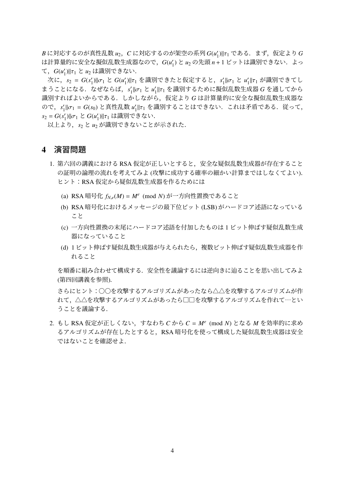
秘密分散法（全6ページ）
秘密分散法 p1
情報セキュリティ講義ノート 第九回：秘密分散法
担当：渡辺 2026年6月17日
今回の講義では，秘密分散法ついて述べる．
1 情報理論の基本事項
本節では情報理論の基本事項を復習しておく．
$X$ を $\{1,\dots,M\}$ に値をとる確率変数とする．確率変数 $X$ の分布を $P_X$ とすると $X$ のエントロピーは（脚注1）
$$H(X) = \sum_{x=1}^{M} P_X(x) \log \frac{1}{P_X(x)} \tag{1}$$
で定義される．ただし，log の底は2とする．大雑把に言って，エントロピーとは確率変数 $X$ の不確かさを表す量である．
$(X,Y)$ を $\{1,\dots,M\}\times\{1,\dots,N\}$ 上に値をとる確率変数の組とする．$(X,Y)$ の結合分布を $P_{XY}$ とすると，確率変数の組に対して結合エントロピーは
$$H(X,Y) = \sum_{x=1}^{M}\sum_{y=1}^{N} P_{XY}(x,y) \log \frac{1}{P_{XY}(x,y)} \tag{2}$$
で定義される．三つ以上の確率変数の組 $(X_1,\dots,X_n)$ に対しても，結合エントロピー $H(X_1,\dots,X_n)$ は同様に定義される．
$Y$ が与えられたもとでの $X$ の条件付きエントロピーは
$$H(X|Y) = \sum_{x=1}^{M}\sum_{y=1}^{N} P_{XY}(x,y) \log \frac{1}{P_{X|Y}(x|y)} \tag{3}$$
で定義される．ただし，$P_{X|Y}(x|y)$ は $Y=y$ のもとでの $X$ の条件付確率分布である．条件付エントロピーは $Y$ を知ったときの $X$ の不確かさを表している．確率変数の三つ組 $(X,Y,Z)$ に対しても条件付エントロピー $H(X|Y,Z), H(X,Y|Z), H(Y|X,Z)$ 等は同様に定義される．
エントロピーには以下の重要な性質が成り立つ（脚注2）：
（脚注1）教科書によっては分布を $p$ のように表記することもあるが，どの確率変数の分布なのかを明確にするために，$P_X$ のように下添字を付けることを推奨する． （脚注2）性質1-4は情報理論の講義で扱ったので，ここでは性質5と性質6だけ証明を与える．
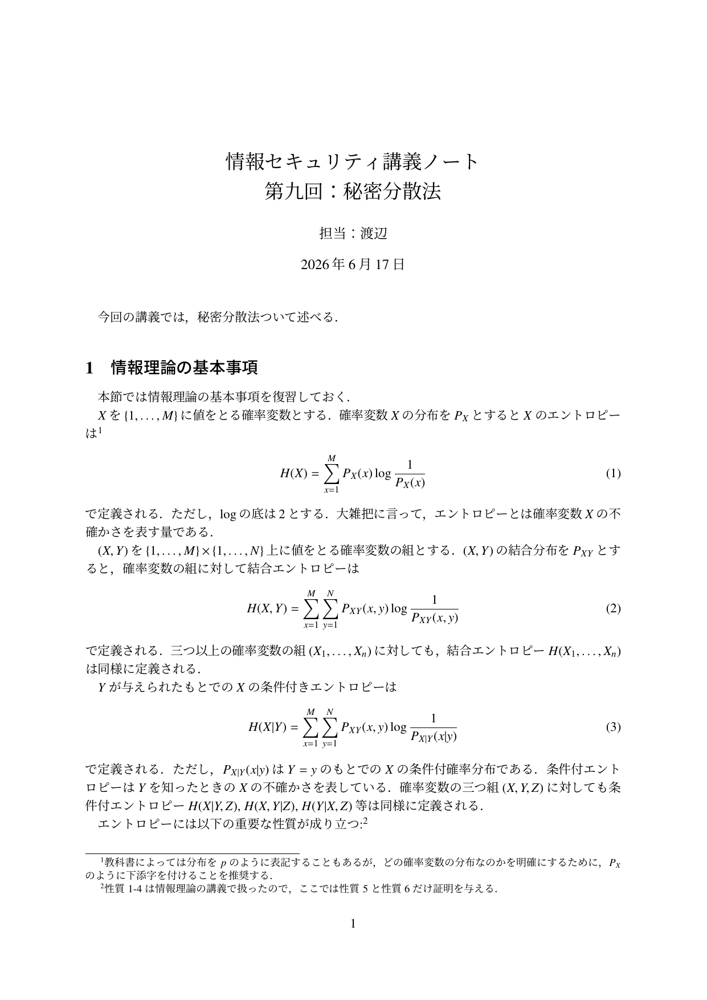
秘密分散法 p2
- 非負性
$$H(X) \geq 0,\ H(X|Y) \geq 0,\ \text{etc.} \tag{4}$$
- 最大値
$$H(X) \leq \log M \tag{5}$$
等号が成り立つのは分布 $P_X$ が $\{1,\dots,M\}$ 上の一様分布であるときかつそのときに限る．
- チェイン則
$$H(X,Y) = H(X) + H(Y|X), \tag{6}$$ $$H(X,Y|Z) = H(Y|Z) + H(X|Y,Z), \tag{7}$$ $$\text{etc.} \tag{8}$$
- 条件付によってエントロピーは非増加
$$H(X) \geq H(X|Y),\ \text{etc.} \tag{9}$$
等号は $X$ が $Y$ と統計的に独立，すなわち $P_{X|Y}(x|y) = P_X(x)$ が全ての $(x,y)$ で成り立つときかつそのときに限る．
- 関数値のエントロピーは0：$X = f(Y,Z)$ となる関数 $f$ が存在するとき，
$$H(X|Y,Z) = 0 \tag{10}$$
証明）任意の $(y,z)$ に対して，条件付確率は $x=f(y,z)$ が成り立つときは $P_{X|YZ}(x|y,z)=1$ で，$x \neq f(y,z)$ のときは $P_{X|YZ}(x|y,z)=0$ である．従って，$(Y,Z)=(y,z)$ の条件でのエントロピーは $H(X|Y=y,Z=z)=0$ となる．条件付エントロピーは $H(X|Y=y,Z=z)$ を $(Y,Z)$ の分布 $P_{YZ}$ に関して平均したものなので，0である．
- 関数によりエントロピーは増加しない：任意の関数 $f:\{1,\dots,M\}\times\{1,\dots,N\} \to \{1,\dots \ell\}$ に対して
$$H(X|Y) \geq H(f(X,Y)|Y) \tag{11}$$
が成り立つ．特に，関数 $f$ が可逆であるとき，すなわち $X=g(f(X,Y),Y)$ となる関数 $g$ が存在するとき，等号が成り立つ．証明）$Z=f(X,Y)$ とおくと，チェイン則により
$$H(X,Z|Y) = H(Z|Y) + H(X|Z,Y) \tag{12}$$ $$\geq H(Z|Y) \tag{13}$$
が成り立つ．ただし，不等式ではエントロピーの非不性（非負性）を用いた．一方，別の展開方法でチェイン則を用いると
$$H(X,Z|Y) = H(X|Y) + H(Z|X,Y) \tag{14}$$ $$= H(X|Y) \tag{15}$$
が成り立つ．ただし，二番目の等号では，性質5により $H(Z|X,Y)=0$ となることを用いた．従って，不等式(11)が成り立つ．また，$f$ が可逆であるとき $X=g(Z,Y)$ なので，不等式(11)の $X$ と $Z$ を入れ替えて使うことで $H(X|Y) \leq H(Z|Y)$ が成り立つため，式(11)において等号が成り立つ．

秘密分散法 p3
図1（グラフ）：横軸 $x$，縦軸 $f(x)$ の直線グラフ。直線が右上がりに描かれ，$x=0$ における切片が $S$。$x=\alpha_1$ における値が $W_1$，$x=\alpha_2$ における値が $W_2$（それぞれ点線でグラフ上の点まで示されている）。
図1のキャプション：「図1: (2,2) 閾値法の構成の様子．」
2 秘密分散法
秘密分散法とは，秘密の情報 $S$ を複数のシェアに分散して保管することで（脚注3），頑強性と秘匿性を持たせるための技術である．最も基本的な秘密分散法である $(k,n)$ 閾値法では秘密の情報 $S$ を $n$ 個のシェアに分散し，$k$ 個以上のシェアが揃えば復元できるようにする．$n-k$ 個のシェアを紛失してしまっても大丈夫であるため頑強性が確保される．また，後に示すように，$k$ 個未満のシェアからは秘密情報 $S$ が漏れないため，秘匿性も担保される．秘密分散法は例えば，分散ストレージ等への応用が期待されている．
2.1 $(k,n)$ 閾値秘密分散法
$p > n$ を素数とし，$\mathbb{F}_p = \{0,1,\dots,p-1\}$ を要素数が $p$ の有限体とする（脚注4）．$\mathbb{F}_p$ 上の和 $+$ と積 $\cdot$ は $(\mathrm{mod}\ p)$ として計算されることに注意せよ．
秘密情報 $S$ からシェアを作成するために，$A_1, A_2, \dots, A_{k-1} \in \mathbb{F}_p$ を $S$ とは統計的独立に一様ランダムに選び，多項式
$$f(t) = S + A_1 t + A_2 t^2 + \cdots A_{k-1} t^{k-1} \tag{16}$$
を定める．そして，各シェアを
$$W_i = f(\alpha_i),\quad i=1,\dots,n \tag{17}$$
とする．ただし，$\alpha_1,\dots,\alpha_n$ は $\mathbb{F}_p$ の0以外の相異なる元とする．図1に(1,2)閾値法の構成の様子を示す（判読不能／原文ママ：本文は「(1,2)閾値法」，図1キャプションは「(2,2)閾値法」と表記されており，本文とキャプションの表記に不一致がある）．
$(k,n)$ 閾値法では，$k$ 個以上のシェア $W_{i_1},\dots,W_{i_k}$ からは $S$ が復元でき，$k$ 個未満のシェア $W_{i_1},\dots,W_{i_{k-1}}$ からは $S$ が漏れないことを要求する．
（脚注3）秘密分散法では分散させたデータをシェアと呼ぶ． （脚注4）必ずしも素体を使う必要はないが，以下では簡単のために素体の場合を考える．
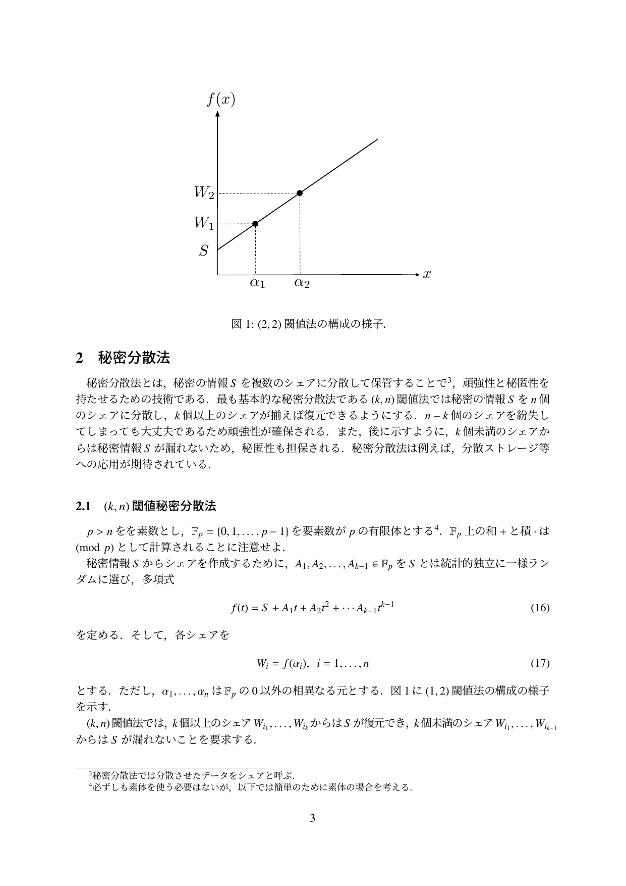
秘密分散法 p4
2.2 復元可能であること
$(k,n)$ 閾値法において，秘密情報の復元は以下のようなアイディアで行う．考え方を理解するために，実数多項式の補間について考えてみる．直線 $f(t)=a_0+a_1t$ は，直線上の二点が与えられると，係数 $a_0,a_1$ の値が定まる．放物線 $f(t)=a_0+a_1t+a_2t^2$ は，放物線上の三点が与えられると，係数 $a_0,a_1,a_2$ の値が定まる．より一般に，$k-1$ 次の多項式 $a_0+a_1t+\cdots+a_{k-1}t^{k-1}$ で表される曲線は，曲線上の $k$ 点が与えられると，係数 $a_0,\dots,a_{k-1}$ が定まる．このような考えは有限体上の多項式にも適用することができる．シェア $W_1,\dots,W_n$ は式(16)で表される曲線上の $n$ 点であるため，そのうち $k$ 個が集まれば，多項式 $f(t)$ の係数は一意に定まる．実際，ラグランジュ補間公式により，多項式 $f(t)$ は
$$f(t) = \sum_{j=1}^{k} f(\alpha_{i_j}) \frac{(t-\alpha_{i_1})\cdots(t-\alpha_{i_{j-1}})(t-\alpha_{i_{j+1}})\cdots(t-\alpha_{i_k})}{(\alpha_{i_j}-\alpha_{i_1})\cdots(\alpha_{i_j}-\alpha_{i_{j-1}})(\alpha_{i_j}-\alpha_{i_{j+1}})\cdots(\alpha_{i_j}-\alpha_{i_k})} \tag{18}$$
$$= \sum_{j=1}^{k} W_{i_j} \frac{(t-\alpha_{i_1})\cdots(t-\alpha_{i_{j-1}})(t-\alpha_{i_{j+1}})\cdots(t-\alpha_{i_k})}{(\alpha_{i_j}-\alpha_{i_1})\cdots(\alpha_{i_j}-\alpha_{i_{j-1}})(\alpha_{i_j}-\alpha_{i_{j+1}})\cdots(\alpha_{i_j}-\alpha_{i_k})} \tag{19}$$
のように復元でき，復元した多項式から切片 $f(0)$ を求めることで，秘密情報 $S=f(0)$ が復元できる．ただし，割り算は有限体 $\mathbb{F}_p$ の演算として行う．
2.3 $(k,n)$ 閾値法の安全性
$(k,n)$ 閾値法の安全性について議論する．すなわち，$(k-1)$ 個以下のシェアからは $S$ に関する情報が漏れないことを証明する．
まずは情報が漏れないということを定義する必要がある．第二回の講義で扱った共通鍵暗号の場合と同様に，$(k-1)$ 個のシェア $(W_{i_1},\dots,W_{i_{k-1}})$ を知ったときの $S$ の予測精度が，シェアを全く知らないときの予測精度に対して向上しなければ安全であると考える．
定義1 $(k,n)$ 閾値秘密分散法が情報理論的に安全であるとは，
$$H(S|W_{i_1},\dots,W_{i_{k-1}}) = H(S) \tag{20}$$
が任意の $k-1$ 個のシェア $(W_{i_1},\dots,W_{i_{k-1}})$ に対して成り立つことと定める（脚注5）．
定理2 $(k,n)$ 閾値秘密分散法は情報理論的に安全である．
証明 一般性を失うことなく $k-1$ 個のシェアは $(W_1,\dots,W_{k-1})$ であるとする．安全性が成り立つ直感的な理由としては，$k-1$ 個のシェア $(W_1,\dots,W_{k-1})$ が与えられたとき，秘密情報 $S$ の値が何であったとしても $(0,S),(\alpha_1,W_1),\dots,(\alpha_{k-1},W_{k-1})$ を通る $k-1$ 次の多項式が存在するので，どの $S$ の値も可能性としてあり得るということである．図2に(1,2)閾値法の安全性の議論を示す．
（脚注5）エントロピーは条件付によって減少するという性質から，
$$H(S|W_{i_1},\dots,W_{i_{k-2}}) \geq H(S|W_{i_1},\dots,W_{i_{k-1}}) \tag{21}$$
となる．従って，$k-1$ 個のシェアから情報が漏れないことを証明すれば，$k-2$ 個以下のシェアからも情報が漏れないことは言える．
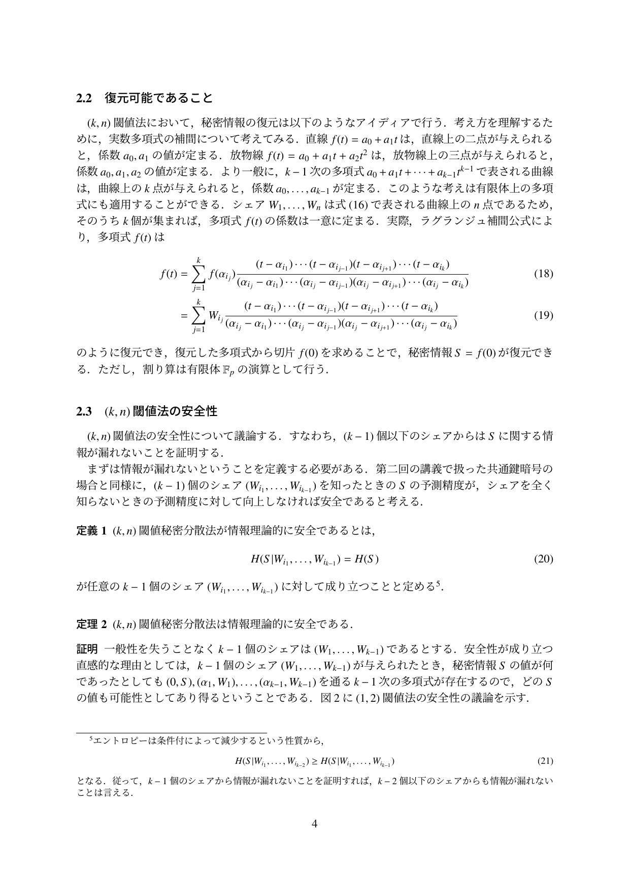
秘密分散法 p5
図2（グラフ）：横軸 $x$，縦軸 $f(x)$。複数本の直線（傾きの異なる複数の直線）が全て点 $(\alpha_2, W_2)$ を通るように描かれている。各直線は $y$ 軸（$x=0$）上でそれぞれ異なる値（＝異なる $S$ の候補）と交わっており，1点のシェアだけでは切片 $S$ が一意に定まらないことを図示している。
図2のキャプション：「図2: (1,2) 閾値法が安全性．一つのシェア $W_2$ が与えられたとしても，切片 $S$ の値は定まらない．」
まず，チェイン則(性質3)より，
$$H(S,A_1,\dots,A_{k-1}|W_1,\dots,W_{k-1}) = H(S|W_1,\dots,W_{k-1}) + H(A_1,\dots,A_{k-1}|S,W_1,\dots,W_{k-1}) \tag{22}$$
が成り立つ．ここで，$k$ 個の点 $(0,S),(1,W_1),\dots,(k-1,W_{k-1})$ に対してラグランジュの補間公式を使うことで，$f(t)$ を復元し，$A_1,\dots,A_{k-1}$ を求めることができるので（つまり $(S,W_1,\dots,W_{k-1})$ から $A_1,\dots,A_{k-1}$ を求める関数が存在するということ），性質5より
$$H(A_1,\dots,A_{k-1}|S,W_1,\dots,W_{k-1}) = 0 \tag{23}$$
となる．一方，再びチェイン則を使うと，
$$H(S,A_1,\dots,A_{k-1}|W_1,\dots,W_{k-1}) \tag{24}$$ $$= H(S,A_1,\dots,A_{k-1},W_1,\dots,W_{k-1}) - H(W_1,\dots,W_{k-1}) \tag{25}$$ $$= H(S) + H(A_1,\dots,A_{k-1}|S) + H(W_1,\dots,W_{k-1}|S,A_1,\dots,A_{k-1}) - H(W_1,\dots,W_{k-1}) \tag{26}$$ $$\geq H(S) + H(A_1,\dots,A_{k-1}|S) - H(W_1,\dots,W_{k-1}) \tag{27}$$ $$= H(S) + H(A_1,\dots,A_{k-1}) - H(W_1,\dots,W_{k-1}) \tag{28}$$ $$= H(S) + (k-1)\log p - H(W_1,\dots,W_{k-1}) \tag{29}$$ $$\geq H(S) + (k-1)\log p - (k-1)\log p \tag{30}$$ $$= H(S) \tag{31}$$
が成り立つ．ただし，式(27)では性質1を，式(28)では性質4の後半を，式(29)と式(30)では性質2を用いた．従って，
$$H(S|W_1,\dots,W_{k-1}) \geq H(S) \tag{32}$$
が示された．一方，性質4より反対向きの不等式も成り立つため，式(20)が成り立ち，安全性が示された．□
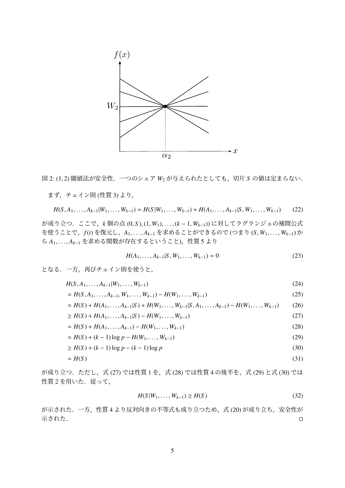
秘密分散法 p6
3 演習問題
-
$p=7, n=6, k=3, \alpha_i = i\ (i=1,\dots,6)$ として，ある秘密情報 $S \in \mathbb{F}_7$ を $(3,6)$ 閾値秘密分散法を用いてシェア $W_1,\dots,W_6$ に分散させた．$W_1=3, W_2=6, W_6=6$ であるとき，秘密情報 $S$ を復元せよ．
-
秘密分散法ではシェアのサイズが小さいことが望まれる．しかしながら，安全性を担保したまま，一定以上シェアのサイズを小さくすることはできないこと，すなわち
$$H(W_i) \geq H(S),\quad i=1,\dots,n \tag{33}$$
が成り立つことを証明せよ（脚注6）．
（脚注6）ヒント：以下の二つの事実を上手く活用せよ．$k$ 個未満のシェアからは秘密情報が漏れないことから，$H(S|W_{i_1},\dots,W_{i_{k-1}}) = H(S)$ が成り立つ．一方，$k$ 個のシェアからは秘密情報を復元できるため，$H(S|W_{i_1},\dots,W_{i_{k-1}},W_j) = 0$ が成り立つ．
要点まとめ
- エントロピーの基本性質（性質1〜6）：非負性，最大値 $H(X)\le \log M$，チェイン則，条件付による非増加性，関数値のエントロピーは0（式(10)），関数によりエントロピーは増加しない（式(11)、可逆なら等号）。これらは $(k,n)$閾値法の安全性証明（定理2）で使われる。
- $(k,n)$閾値秘密分散法の構成：法 $p>n$ の素数上の有限体 $\mathbb{F}_p$ で，秘密 $S$ と $k-1$個の独立一様ランダムな係数 $A_1,\dots,A_{k-1}$ から $k-1$次多項式 $f(t)=S+A_1t+A_2t^2+\cdots+A_{k-1}t^{k-1}$ を作り，$n$個の相異なる非零点 $\alpha_1,\dots,\alpha_n$ における値 $W_i=f(\alpha_i)$ をシェアとして配布する。
- 復元：$k$個のシェア $(\alpha_{i_1},W_{i_1}),\dots,(\alpha_{i_k},W_{i_k})$ からラグランジュ補間公式（式(18)(19)）により多項式 $f(t)$ を一意に復元し，秘密は切片 $S=f(0)$ として求める。割り算は有限体 $\mathbb{F}_p$ 上の演算（mod p の逆元計算）で行う。
- 安全性（定義1・定理2）：$k-1$個以下のシェアからは秘密 $S$ に関する情報が全く漏れない（情報理論的安全性）：$H(S\mid W_{i_1},\dots,W_{i_{k-1}}) = H(S)$。直感的には，どんな $S$ の値であっても $k-1$個の既知シェアを通る $k-1$次多項式が存在するため。
- シェアサイズの下限（演習2 / 式(33)）：安全性を保つ限り，各シェアのエントロピーは秘密のエントロピー以上でなければならない：$H(W_i)\ge H(S)$。すなわちシェアは秘密より小さくできない。
- 演習1は $p=7,n=6,k=3,\alpha_i=i$ の $(3,6)$ 閾値法で，3点 $(1,3),(2,6),(6,6)$ からラグランジュ補間により $S=f(0)$ を $\mathrm{mod}\ 7$ で計算する典型的な過去問形式の計算問題。
- 図1（p3）と図2（p5）はいずれも $(1,2)$/$(2,2)$ 閾値法（直線＝1次多項式）の視覚的説明：図1は2つのシェア点を通る直線から切片 $S$ が定まる様子，図2は1つのシェア点だけでは切片 $S$ が定まらない（安全性）様子を示す。ただし，p3本文は「(1,2)閾値法」と表記する一方，図1キャプションは「(2,2)閾値法」と表記しており，原資料内に表記の不一致がある。
秘密計算（全6ページ）
秘密計算 p1
情報セキュリティ講義ノート 第十回：秘密計算
担当：渡辺 2026年6月24日
今回の講義では，秘密計算ついて述べる．
1 秘密計算
秘密計算とは，多数のユーザが所有するデータを処理した結果を，互いのデータを開示することなく計算するための技術である．具体的な例として，以下のような状況を考えてみる．今，Alice, Bob, Charlie の三人は何らかの案件について，それぞれ賛成もしくは反対の意見を持っている．この案件を審議するために多数決で決めることとした．ただ，三人は互いのことを信用していないため，自分が賛成もしくは反対したのかは互いに知られたくない．また，三人は離れた場所におり，電話で連絡をとる以外の通信手段はない（つまり投票箱を使うといった物理的な解決策はとれないとする）．このような状況下で多数決をとることはできるだろうか？
その他の例として，$n$ 人のユーザ $\mathcal{U}_1,\dots,\mathcal{U}_n$ がいる状況において，ユーザ $\mathcal{U}_i$ の所得が $S_i$ であるとする．全ユーザの総所得（もしくは人数で割った平均所得）を計算したいとする．しかしながら，各ユーザの所得は個人情報であるため，互いに開示したくはない．このような状況で総所得を計算することは可能だろうか．
秘密計算とは上記のような問題を解決するための技術である．
2 秘密計算の安全性
秘密計算は個人のデータを漏洩しないことを目標としているが，安全性の定義には注意が必要である．暗号化システムを考えた際には，秘密のメッセージの内容を外部の攻撃者に一切漏洩しないことが望まれていた．しかしながら，秘密計算ではデータを処理した結果を各ユーザは知ることになるので，互いのデータの内容をある程度は知ることになる．極端な例として，二人のユーザが所得の合計 $S = S_1 + S_2$ を計算したかったとすると，合計所得 $S$ が開示された時点で相手の所得も自動的に分かってしまうのである．これは信頼できる第三者に合計所得を計算してもらっても漏洩してしまうのである．もう少し一般的な状況において，$n$ 人のユーザの所得の平均を計算する状況において，平均値がユーザ $i$ 所得より低かったとしよう．このとき，ユーザ $i$ より低い所得のユーザがいるという情報がユーザ $i$ に漏洩してしまっているのである．しかしながら，この漏洩も信頼できる第三者によって平均値を計算した場合にも起こる漏洩である．秘密計算では，このように信頼できる第三者によって計算してもらった際にも起こりうる情報漏洩は，「情報漏洩とは見なさない」のである．
秘密計算 p2
では，どのような状況を情報漏洩とみなすのであろうか．例えば，A国とC国が互いに条約を結んでもよいか（OKなら1，NGなら0）思案している際に，両国ともOKならば条約締結できるとする．A国とC国は互いの意向を相手に知られることなく条約が締結されるかだけを知りたい状況を考えよう（つまり両方OKなら締結なのでANDを計算するということ…）．このとき，信頼できる第三のJ国が計算を行ったとすると，もしA国の入力が0であったならば「締結されない」という回答が得られるわけであるが，A国はC国もNGだったから締結されなかったのか，C国は実はOKだったのかは分からないことになる．このように，信頼できる第三者に計算してもらった場合には漏れない情報を守るのが秘密計算の目標になる．
3 秘密計算の標準的な実現法
秘密計算では任意のデータ処理を個人情報を漏洩せずに行うことを目的としているが，任意の関数を計算する論理回路を構築した際に，演算の置き換えを適切に行うことでAND演算（二進数の積）とNOT演算（$\oplus 1$）だけで表現できることが知られている．NOT演算は個人が所有するデータの0と1を反転させるだけなので，情報を漏洩することなく実現することができる．従って，困難なのはいかにしてAND演算を実現するかということになる．以下では少し一般的な状況を考え，二元の有限体 $\mathbb{F}_2$ ではなく，$p$ 元の有限体 $\mathbb{F}_p$ において積を実現する方法について考えていく．また，積の実現に必要なサブモジュールとして，$\mathbb{F}_p$ における和を実現する方法についても考える．和の演算自体は投票の秘密計算などにも利用できるため，それ自体が有用である．また，以下では説明を簡単にするために，3ユーザの場合を考えるが，同様のアイディアは $n$ ユーザの場合にも適用可能である．
4 3ユーザの秘密計算（加法）
$p$ を素数とする．まずは，3ユーザ $\mathcal{U}_1, \mathcal{U}_2, \mathcal{U}_3$ がおり，各ユーザが秘密データ $S_1, S_2, S_3 \in \mathbb{F}_p$ を所有している状況において，三つのデータの和
$$S = S_1 + S_2 + S_3$$
を計算するプロトコルを考える．ただし，和は $\mathbb{F}_p$ の元として計算するため，$\mod p$ で行う．
各ユーザのデータを漏らすことなく，どのように計算すればよいのだろうか．キーアイディアは秘密分散法を使うことである．説明を簡単にするために，$p = 5$ としよう（任意の $p$ でもやり方は同じである）．$\mathbb{F}_5$ の積に関する演算表を書いておくと
| $x\backslash y$ | 1 | 2 | 3 | 4 |
|---|---|---|---|---|
| 1 | 1 | 2 | 3 | 4 |
| 2 | 2 | 4 | 1 | 3 |
| 3 | 3 | 1 | 4 | 2 |
| 4 | 4 | 3 | 2 | 1 |
のようになる．
秘密分散法の $(2,3)$ 閾値法を考える．つまり，一つのシェアからは秘密情報が漏洩しないが，二つシェアを集めると秘密情報を復元することができる方法である．秘密計算の基本的な考え方は，各ユーザの個人データ $S_i$ を秘密分散法でシェアに分散させて，シェアのままデータ処理を行って
秘密計算 p3
いくことにある．処理の過程でシェアが他のユーザの手に渡ることになるが，シェアだけからは秘密情報の内容が分からないことを利用するのである．そして，シェアのまま処理したものを補間公式で復元すると，なんと！計算したかった値が復元されるのである．
ユーザ $\mathcal{U}_1$ のデータ $S_1 \in \mathbb{F}_p$ を3つのシェアに分散することを考える．そのために，$R_1 \in \mathbb{F}_p$ をランダムに選び，一次の多項式
$$f_1(x) = S_1 + R_1 x$$
を考える．$\alpha_1 = 1, \alpha_2 = 2, \alpha_3 = 3$ とすると，三つのシェアは
$$W_{11} = f_1(1) = S_1 + R_1,$$ $$W_{12} = f_1(2) = S_1 + 2R_1,$$ $$W_{13} = f_1(3) = S_1 + 3R_1$$
となる．
同様に，ユーザ2のデータ $S_2 \in \mathbb{F}_p$ をランダムに選んだ $R_2 \in \mathbb{F}_p$ を用いて，多項式
$$f_2(x) = S_2 + R_2 x \tag{1}$$
により三つのシェア
$$W_{21} = f_2(1) = S_2 + R_2, \tag{2}$$ $$W_{22} = f_2(2) = S_2 + 2R_2, \tag{3}$$ $$W_{23} = f_2(3) = S_2 + 3R_2 \tag{4}$$
を得る．ユーザ3のデータ $S_3 \in \mathbb{F}_p$ に対しても，ランダムに選んだ $R_3 \in \mathbb{F}_p$ を用いて，多項式
$$f_3(x) = S_3 + R_3 x \tag{5}$$
により三つのシェア
$$W_{31} = f_2(1) = S_3 + R_3, \tag{6}$$ $$W_{32} = f_2(2) = S_3 + 2R_3, \tag{7}$$ $$W_{33} = f_2(3) = S_3 + 3R_3 \tag{8}$$
を得る．（注：原文ママ。式(6)-(8)の右辺の関数記号は $f_2$ と表記されているが，文脈上 $f_3$ の誤植と思われる。）
$(2,3)$ 閾値法なので，本来であれば二つのシェアから秘密情報は復元できるが，ここでは三つのシェアから秘密情報を復元する公式を書き下しておく．秘密情報 $S_i$ の三つのシェア $W_{i1}, W_{i2}, W_{i3}$ が与えられたとき，ラグランジュ補間公式により
$$f_i(x) = W_{i1}\frac{(x-2)(x-3)}{(1-2)(1-3)} + W_{i2}\frac{(x-1)(x-3)}{(2-1)(2-3)} + W_{i3}\frac{(x-1)(x-2)}{(3-1)(3-2)}$$
である．秘密情報 $S_i$ は多項式 $f_i(x)$ の切片なので
$$S_i = f_i(0)$$ $$= W_{i1}\frac{(-2)\cdot(-3)}{(-1)\cdot(-2)} + W_{i2}\frac{(-1)\cdot(-3)}{1\cdot(-1)} + W_{i3}\frac{(-1)\cdot(-2)}{2\cdot 1}$$ $$= 3W_{i1} + 2W_{i2} + W_{i3}$$
を得る．
以上の準備のもと，以下の手順で和 $S = S_1 + S_2 + S_3$ を計算する．
秘密計算 p4
-
ユーザ $\mathcal{U}_1$ は $(2,3)$ 閾値法でシェア $W_{11}, W_{12}, W_{13}$ を作成し，$W_{11}$ は自分でキープし，$W_{12}$ をユーザ $\mathcal{U}_2$ に配り，$W_{13}$ をユーザ $\mathcal{U}_3$ に配る．ユーザ $\mathcal{U}_2$ とユーザ $\mathcal{U}_3$ も同様にシェアを作成し，他のユーザに配る．（このステップを終えると，ユーザ $\mathcal{U}_1$ はシェア $(W_{11}, W_{21}, W_{31})$ を，ユーザ $\mathcal{U}_2$ はシェア $(W_{12}, W_{22}, W_{32})$ を，ユーザ $\mathcal{U}_3$ はシェア $(W_{13}, W_{23}, W_{33})$ を得る．）
-
ユーザ $\mathcal{U}_j$ はシェア $(W_{1j}, W_{2j}, W_{3j})$ から，
$$W_j = W_{1j} + W_{2j} + W_{3j}$$
を計算する．そして，$W_j$ を他のユーザに送る．
- 各ユーザは
$$3W_1 + 2W_2 + W_3$$
を出力する．
さて，まずは上記のプロトコルでなぜ和 $S$ が計算できているのか確認していく．まず，上で確認したように，
$$S_i = 3W_{i1} + 2W_{i2} + W_{i3}$$
である．従って，
$$S = S_1 + S_2 + S_3$$ $$= \sum_{i=1}^{3}\left(3W_{i1} + 2W_{i2} + W_{i3}\right)$$ $$= 3\sum_{i=1}^{3}W_{i1} + 2\sum_{i=1}^{3}W_{i2} + \sum_{i=1}^{3}W_{i3}$$ $$= 3W_1 + 2W_2 + W_3$$
が成り立つ．
次に，このプロトコルで情報が漏洩していないことを見ていく．プロトコルは3人のユーザに対して対称なので，ユーザ $\mathcal{U}_1$ に情報が漏洩していないことを見ていく．プロトコル内でユーザ $\mathcal{U}_1$ が入手する情報は（自分のデータを含め）全部で $(S_1, R_1, W_{11}, W_{12}, W_{13}, W_{21}, W_{31}, W_2, W_3, S)$ である．まず，$S_1$ は自分のデータなので情報漏洩ではない．$R_1$ は自分で発生させた乱数なので情報漏洩ではない．$(W_{11}, W_{12}, W_{13})$ は $S_1$ と $R_1$ から計算されるので情報漏洩ではない（$f_1(x) = S_1 + R_1 x$ を使って）．$W_{21}$ は $(2,3)$ 閾値法のシェアなので，一つのシェアだけからは $S_2$ の情報が漏洩しない．同様に，$W_{31}$ も $S_3$ の情報を漏洩しない．最後に，$W_2$ と $W_3$ は一見すると余分な情報のように見えるが，以下のような理由により実は情報漏洩にはならないのである（脚注1：ここは少し難しいので，分からない人は飛ばしても構いません）．まず，$W_{ij} = f_i(j)$ であることに注意すると，
$$W_j = W_{1j} + W_{2j} + W_{3j}$$ $$= f_1(j) + f_2(j) + f_3(j)$$
秘密計算 p5
である．これは，
$$f(x) = f_1(x) + f_2(x) + f_3(x)$$
とおくと，$W_j = f(j)$ ということである．同様に，$S_i = f_i(0)$ なので，
$$S = f_1(0) + f_2(0) + f_3(0)$$ $$= f(0)$$
である．ユーザ $\mathcal{U}_1$ は $W_1 = f(1)$ と $S = f(0)$ を知っているので，ラグランジュ補間公式により $f(x)$ を復元することで $W_2 = f(2)$ と $W_3 = f(3)$ は自力で計算することができる．従って，$(W_2, W_3)$ は情報漏洩ではない．
（補足：ユーザ $\mathcal{U}_1$ は $f(x)$ が一次式であることと，2点 $(1, W_1)$，$(0, S)$ を知っていれば一次式を一意に定められるため，$W_2, W_3$ を自力で再現でき，これらを受け取っても新たな情報を得たことにはならない，という論理。）
5 3ユーザの秘密計算（積）
ユーザ $\mathcal{U}_1$ がデータ $S_1$ を，ユーザ $\mathcal{U}_2$ がデータ $S_2$ を持っているとき，三人で $S = S_1 \cdot S_2$ を計算したい状況を考える（脚注2：実はユーザ $\mathcal{U}_1$ とユーザ $\mathcal{U}_2$ 二人だけでは積を計算できないことが知られている）．前節と同様に，$S_1$ の $(2,3)$ 閾値法によるシェアを
$$W_{11} = f_1(1) = S_1 + R_1,$$ $$W_{12} = f_1(2) = S_1 + 2R_1,$$ $$W_{13} = f_1(3) = S_1 + 3R_1$$
とし，$S_2$ の $(2,3)$ 閾値法によるシェアを
$$W_{21} = f_2(1) = S_2 + R_2, \tag{9}$$ $$W_{22} = f_2(2) = S_2 + 2R_2, \tag{10}$$ $$W_{23} = f_2(3) = S_2 + 3R_2 \tag{11}$$
とする．ここで，
$$g(x) = f_1(x)f_2(x)$$ $$= S_1 \cdot S_2 + (S_1 \cdot R_2 + S_2 \cdot R_1)x + R_1 \cdot R_2 x^2$$ $$= S + T_1 x + T_2 x^2$$
とする．ただし，$T_1 = S_1 \cdot R_2 + S_2 \cdot R_1$，$T_2 = R_1 \cdot R_2$ とおいた．
$$V_1 = g(1) = S + T_1 + T_2, \tag{12}$$ $$V_2 = g(2) = S + 2T_1 + 4T_2, \tag{13}$$ $$V_3 = g(3) = S + 3T_1 + 4T_2 \tag{14}$$
とおくと，
$$S = 3V_1 + 2V_2 + V_3$$
秘密計算 p6
であることが確認できる．また，
$$V_j = g(j) = f_1(j)\cdot f_2(j) = W_{1j}\cdot W_{2j}$$
が成り立つことに注意しよう．積の計算ではこれらのことを利用して，積の計算を和の計算に帰着させる．手順は以下の通りである．
-
ユーザ $\mathcal{U}_1$ は $(2,3)$ 閾値法でシェア $W_{11}, W_{12}, W_{13}$ を作成し，$W_{11}$ は自分でキープし，$W_{12}$ をユーザ $\mathcal{U}_2$ に配り，$W_{13}$ をユーザ $\mathcal{U}_3$ に配る．ユーザ $\mathcal{U}_2$ も同様にシェアを作成し，他のユーザに配る．
-
ユーザ $\mathcal{U}_j$ は $V_j = W_{1j}\cdot W_{2j}$ を計算する．
-
各ユーザは $3V_1, 2V_2, V_3$ に対して和を計算するプロトコルを呼び出し，$3V_1 + 2V_2 + V_3$ を計算する．
上記プロトコルによって積 $S = S_1 \cdot S_2$ が計算されるのは明らかであろう．安全性の詳細は確認しないが，ポイントとしては，ステップ1で配布しているのが $(2,3)$ 閾値法のシェアであるため，一つのシェアだけからはデータ $S_i$ の情報が漏洩しないことにある．
6 演習問題
-
本文では $p = 5$ に限定して説明したが，一般の $p$ の場合，どのように変更を加えればよいか考えてみよ（例えば $p = 7$ とした場合を考えてみよ）．
-
本文では $n = 3$ に限定して説明したが，一般の $n$ の場合，どのように変更を加えればよいか考えてみよ（例えば $n = 5$ とした場合を考えてみよ）．
要点まとめ
- 秘密計算とは，多数のユーザが所有するデータを，互いに開示することなくその処理結果のみを計算する技術。
- 秘密計算の安全性の定義は暗号とは異なり，「信頼できる第三者に計算してもらった場合にも起こりうる情報漏洩」は漏洩とみなさない（例：合計値・平均値・AND演算の結果から必然的に推測できる情報は許容される）。
- 任意の関数はAND演算とNOT演算のみで論理回路として表現できる。NOT演算は各自のデータのみで完結し漏洩しないため，秘密計算で困難なのはAND演算（$\mathbb{F}_p$上では積）の実現。
- 3ユーザの秘密計算（加法）：各ユーザ $\mathcal{U}_i$ が秘密データ $S_i$ を，ランダムな $R_i$ を用いた一次多項式 $f_i(x) = S_i + R_i x$ により $(2,3)$ 閾値法でシェア $W_{i1}=f_i(1), W_{i2}=f_i(2), W_{i3}=f_i(3)$ に分散し，他ユーザに配布。各ユーザ $\mathcal{U}_j$ は受け取ったシェアの和 $W_j = W_{1j}+W_{2j}+W_{3j}$ を計算して他ユーザに送付。最後に各ユーザが $3W_1+2W_2+W_3$（ラグランジュ補間の係数 $3,2,1$）を計算すると，これが $S=S_1+S_2+S_3$ に一致する。
- ラグランジュ補間による復元公式（$x=1,2,3$ の場合）：$S_i = f_i(0) = 3W_{i1}+2W_{i2}+W_{i3}$。
- 加法プロトコルの安全性：ユーザ $\mathcal{U}_1$ が得る情報 $(S_1,R_1,W_{11},W_{12},W_{13},W_{21},W_{31},W_2,W_3,S)$ はいずれも新規の情報漏洩にならない。特に $W_2,W_3$ は，$f(x)=f_1(x)+f_2(x)+f_3(x)$ が一次式であり，$\mathcal{U}_1$ が既に $W_1=f(1)$ と $S=f(0)$ の2点を知っているため，ラグランジュ補間で自力計算できてしまい，実質的に新情報ではない。
- 3ユーザの秘密計算（積）：$g(x)=f_1(x)f_2(x) = S + T_1 x + T_2 x^2$（$T_1=S_1R_2+S_2R_1$，$T_2=R_1R_2$）という2次式を考え，$V_j = g(j) = W_{1j}\cdot W_{2j}$ を各ユーザが計算。$S = 3V_1+2V_2+V_3$ となるので，積の計算は「各ユーザがシェアの積 $V_j=W_{1j}W_{2j}$ を計算し，その後に和のプロトコル（$3V_1,2V_2,V_3$ の和）を呼び出す」ことに帰着される。
- 積の計算は $\mathcal{U}_1,\mathcal{U}_2$ の2人だけでは実現できず，3人（以上）のユーザによる秘密分散と協調が必要（脚注2）。
- 数式中の脚注1つ（$W_{31}=f_2(1)$ 等，式(6)-(8)）は原文の表記上 $f_3$ とすべきところが $f_2$ となっている箇所があり，誤植の可能性がある（原文ママで書き起こし）。
ゼロ知識証明（全4ページ）
ゼロ知識証明 p1
情報セキュリティ講義ノート 第十一回：ゼロ知識証明
担当：渡辺 2026 年 7 月 15 日
今回の講義では，ゼロ知識証明ついて述べる．
1 ゼロ知識証明とは
ゼロ知識証明の考え方を理解するために，以下の「お茶を味わう女性（Lady tasting tea）」というエピソードを考えよう(注1)．ある日，英国のロザムステッド試験場において，ロナルド・フィッシャーは入れ立てのミルクティーを同僚の女性ミューリエル・ブリストルに提供しようとした(注2)．しかしながら，ブリストルは「私は紅茶より先にミルクを注いだ方を好む」と言って拒否した．フィッシャーは「紅茶とミルクを入れる順序はミルクティーの味に影響は与えない」と言ってあざ笑ったが，ブリストルは「私には分かる」と言い張った．そこでブリストルの主張を検証するために，フィッシャーは次のような実験を行うことにした．まず，8 つのカップを用意し，その内 4 つのカップにはミルクを紅茶より先に注ぎ，残り 4 つのカップには紅茶をミルクより先に注いでミルクティーを作った．そして，8 つのカップをランダムにシャッフルした後，ブリストルに「どの 4 つがミルクを紅茶より先に注いだカップか当ててみろ」と問うた．このエピソードの結末は公式には記録されていないが，もしブリストルが 4 つのカップを当てることができていたのなら，フィッシャーは「ミルクと紅茶を注ぐ順序は味に影響を与える」という主張を認めざるを得なかったであろう（まぐれ当たりする確率は 1/70 である）．
このエピソードはフィッシャーの著書の中で統計学におけるランダム実験の着想を得たきっかけとして紹介されているが，ゼロ知識証明のアイディアもいくつか含まれている(注3)．まず，この実験はフィッシャーがランダムに選んだ質問をし，ブリストルがそれに答えるといった意味で，対話的である．もしブリストルが「ミルクを先に注いだ場合は味がマイルドになって，紅茶を先に入れると苦味が出て…」のように一方的に違いを説明しただけではフィッシャーは納得しなかったであろう．つまり，「対話的」と「ランダム」を取り入れることにより，ある主張を証明する際の説得力が上がったわけである．フィッシャーの実験は以下の三つの性質を満たしている：
- もし主張が真であった場合，つまり「ミルクと紅茶を注ぐ順序は味に影響を与える」場合，ブリストルはフィッシャーに主張を認めさせることができる．
- もし主張が偽であった場合，つまり「ミルクと紅茶を注ぐ順序は味に影響を与えない」場合，ブリストルがフィッシャーを騙すことができる確率は極めて小さい(注4)．
脚注： (注1) 英語のウィキペディアで Lady tasting tea を検索すれば出てきます． (注2) ロナルド・フィッシャーは統計学の創始者の一人． (注3) ゼロ知識証明自体は 1984 年に提唱された概念で，フィッシャー（1890 年-1962 年）の時代にはなかった． (注4) 用意するカップの数を増やせばいくらでも小さくできる．
（ページ下部: ページ番号 1）
ゼロ知識証明 p2
- もしブリストルの主張「ミルクと紅茶を注ぐ順序は味に影響を与える」が真であったとき，フィッシャーは味を識別する方法に関する情報を全く得ていない．フィッシャーは単に「味に影響を与える」という主張が正しいことだけを知ることになる．
性質 1 と性質 2 は，計算量理論における対話的証明が満たす性質で，それぞれ「完全性」と「健全性」と呼ばれる．さらに，性質 3 はゼロ知識証明が満たす性質で，「ゼロ知識性」と呼ばれる．
2 計算量クラス
本節では，計算量クラスについて簡単に紹介する．
-
クラス NP: このクラスに属する問題は，問題の解の候補が存在し，その候補が本当に正しいのか多項式時間で検証することができるものである．例えば，二つの素数 $p, q$ の積 $N = pq$ が与えられたとき，$N$ の素因数分解を求める問題は，解 $(p, q)$ が与えられれば $N = pq$ であることは多項式時間で確認できるため，NP に分類される．その他にも，離散対数問題，グラフ 3 彩色問題（与えられたグラフの隣接するノードが別の色になるように，全てのノードに 3 種類の色を割り当てることはできる），グラフ同型問題（与えられた二つのグラフ $G_0 = (V_0, E_0)$ と $G_1 = (V_1, E_1)$ の間に，全単射 $\sigma: V_0 \to V_1$ で $\{v, v'\} \in E_0 \Leftrightarrow \{\sigma(v), \sigma(v')\} \in E_1$ となるものが存在する）は，具体的な彩色の割り当てや全単射 $\sigma$ が解の候補として与えられれば検証は効率的に行えるため，クラス NP に分類される．
-
クラス P: このクラスに属する問題は，問題のサイズの多項式時間で解を見つけることができるものである．例えば，与えられた二つの整数の最大公約数を求める問題は，ユークリッド互除法により効率的に求めることができるので，クラス P に分類される．クラス P の問題は自力で正しい解の候補を作成することができるアルゴリズムが存在するので，クラス NP に含まれる．しかしながら，クラス P とクラス NP が等価であるかないかは証明されておらず，等価ではないと信じられている．
-
クラス co-NP: 大雑把には，クラス NP に属する問題の否定命題からなるのがクラス co-NP である．例えば，グラフの非同型問題（与えられた二つのグラフ $G_0 = (V_0, E_0)$ と $G_1 = (V_1, E_1)$ の間に，全単射 $\sigma: V_0 \to V_1$ で $\{v, v'\} \in E_0 \Leftrightarrow \{\sigma(v), \sigma(v')\} \in E_1$ となるものが存在しない）がクラス co-NP に分類される．NP では解の候補が存在し，その候補が正しい解かどうか効率的に検証できれば良いのに対して，クラス co-NP では解が存在しないことを検証する必要がある．例えば，グラフ同型問題は解の候補として全単射 $\sigma$ を一つ検証できれば良いのに対して，グラフ非同型問題は全単射がないことを主張する問題なので，全ての全単射で条件 $\{v, v'\} \in E_0 \Leftrightarrow \{\sigma(v), \sigma(v')\} \in E_1$ が満たされないことを検証する必要があり，グラフ非同型問題はクラス NP には属するかは明らかでない．
例 1 $V_0 = V_1 = \{1,2,3,4\}$ とし，$E_0 = \{\{1,2\},\{2,3\},\{3,4\},\{1,4\}\}$，$E_1 = \{\{1,2\},\{2,4\},\{1,3\},\{3,4\}\}$ とすると，二つのグラフ $G_0 = (V_0, E_0)$ と $G_1 = (V_1, E_1)$ は同型である．実際，置換 $$\sigma = \begin{pmatrix} 1 & 2 & 3 & 4 \\ 1 & 2 & 4 & 3 \end{pmatrix}$$ によって条件 $\{v, v'\} \in E_0 \Leftrightarrow \{\sigma(v), \sigma(v')\} \in E_1$ が満たされる．
例 2 $V_0 = V_1 = \{1,2,3,4\}$ とし，$E_0 = \{\{1,2\},\{2,3\},\{3,4\},\{1,4\}\}$，$E_1 = \{\{1,2\},\{2,4\},\{1,4\},\{3,4\}\}$ とすると，二つのグラフ $G_0 = (V_0, E_0)$ と $G_1 = (V_1, E_1)$ は非同型である．
（ページ下部: ページ番号 2）
ゼロ知識証明 p3
3 対話証明とゼロ知識証明
本節では，クラス co-NP に属するグラフ非同型問題を例に，ゼロ知識証明を説明する．ゼロ知識証明は，「証明者」と「検証者」からなるプロトコルである．冒頭のエピソードの場合，ブリストルが証明者，フィッシャーが検証者に相当する．証明者は検証者に比べて高い計算力を持っていることが想定されており（冒頭のエピソードの場合，ブリストルは超人的な舌を持っており，フィッシャーは普通の人の舌を持っている），証明者は指数時間のアルゴリズムを実行できるが，検証者は多項式時間のアルゴリズムしか実行することができないものとする．
二つの非同型なグラフ $G_0 = (V_0, E_0)$ と $G_1 = (V_1, E_1)$ が与えられたとき（ノードの集合は共通 $V_0 = V_1 = V = \{1, \ldots, n\}$ であるとする），証明者は指数時間アルゴリズムを実行することができるため，全ての全単射 $\sigma: V \to V$ を全探索して条件 $\{v, v'\} \in E_0 \Leftrightarrow \{\sigma(v), \sigma(v')\} \in E_1$ が満たされないことを確認することができる．しかしながら，検証者は多項式時間のアルゴリズムしか実行できないため，全探索することはできない．証明者は以下のプロトコルを実行することで，検証者に二つのグラフが非同型であることを納得させることができる（グラフ非同型問題のゼロ知識証明プロトコル）：
- 検証者はランダムに $b \in \{0, 1\}$ を選ぶ．
- 検証者は $V = \{1, \ldots, n\}$ の置換 $\sigma$ をランダムに選び，$H = \sigma(G_b)$ を証明者に送る．ただし，$\sigma(G_b)$ は $G_b = (V_b, E_b)$ のノード $v$ を $\sigma(v)$ に置き換えたグラフを表す．
- もし $H$ と $G_0$ が同型であるならば，証明者は $c = 0$ を検証者に送る．もし $H$ と $G_1$ が同型であるならば，証明者は $c = 1$ を検証者に送る．
- $c = b$ が成り立つならば，検証者はアクセプトする．そうでなければリジェクトする．
- ステップ 1-4 を $n$ 回繰り返し，結果が全てアクセプトであったならば，検証者は $G_0$ と $G_1$ は非同型であると判定する．
もし $G_0$ と $G_1$ が非同型であったならば，ステップ 3 において $H$ は $G_0$ か $G_1$ のどちらか一方とだけ同型であるため，証明者は必ず $b$ の値を当てることができる．したがって，証明者は検証者を必ず納得させることができる（完全性）．一方，もし $G_0$ と $G_1$ が同型であったならば，$H$ は $G_0$ と $G_1$ の両方に同型である．従って，証明者は $b$ の値を当てずっぽうで予測するしかなく，各回で正解できる確率は $\frac{1}{2}$ である．従って，$n$ 回連続正解できる確率は $\frac{1}{2^n}$ であるので，証明者は検証者を騙すことはできない（健全性）．
また，このプロトコルは検証者に情報を漏らしていないこと（ゼロ知識性）を確認しよう．証明者から検証者に送っている情報はステップ 3 であるが，もし $G_0$ と $G_1$ が非同型であったならば証明者は $b$ の値を当てることができるため，検証者は証明者から $c$ の値を受け取る前から $c = b$ であることを知っていることになる．従って，このプロトコルは検証者に情報を漏らしていない．
4 数独のゼロ知識証明
数独は解が与えられれば検証は効率的に行えるので，クラス NP に分類される．数独のゼロ知識証明をトランプカードを使って行う方法については補助資料のビデオを参照．ビデオでは 4×4 ミニ数独で説明しています．各数字は 4 回ずつ登場し，かつ縦，横，ボックスの 3 種類の制約を確認する必要があるので，計 12 枚ずつ用意します．9×9 で実施する場合，1 から 9 の数字を計 9×3 = 27 枚ずつ用意すればできます．
（ページ下部: ページ番号 3）
ゼロ知識証明 p4
5 演習問題
- 講義冒頭のエピソードにおいて，ブリストルがフィッシャーを騙すことができる確率は 1/70 であることを確認せよ．
- 日常生活においてゼロ知識証明が適用できる例を考えてみよ．
- トランプカードを用いた数独のゼロ知識証明を実際にやってみよ．
（ページ下部: ページ番号 4。本ページの残りは白紙）
要点まとめ
- ゼロ知識証明とは，証明者が検証者に対して「ある主張が真であること」以外の情報を一切与えずに，主張の正しさを納得させる対話的プロトコルである。
- 導入例「Lady tasting tea」（フィッシャー対ブリストル）は，ゼロ知識証明の3性質（完全性・健全性・ゼロ知識性）の直感を与える。まぐれ当たりで8個中4個を当てる確率は1/70。
- 完全性 (Completeness)：主張が真であれば，証明者は（正直な）検証者を必ず納得させる（アクセプトさせる）ことができる。
- 健全性 (Soundness)：主張が偽であれば，証明者（不正な証明者）が検証者を騙せる確率は極めて小さい（試行を繰り返すことでいくらでも小さくできる）。
- ゼロ知識性 (Zero-knowledge)：主張が真である場合，検証者は「主張が真である」という事実以外の情報を一切得られない。
- 計算量クラスの整理：
- NP：解の候補が与えられれば多項式時間で検証可能な問題のクラス（例：素因数分解，離散対数問題，グラフ3彩色問題，グラフ同型問題）。
- P：多項式時間で解自体を発見できる問題のクラス（例：最大公約数，ユークリッド互除法）。P ⊆ NP だが，P = NP かは未解決（等価でないと信じられている）。
- co-NP：NP に属する問題の否定命題からなるクラス（例：グラフ非同型問題）。「解が存在しないこと」の検証が必要なため，NP に属するかは自明でない。
- グラフ同型問題：$G_0=(V_0,E_0)$，$G_1=(V_1,E_1)$ の間に全単射 $\sigma: V_0 \to V_1$ が存在し $\{v,v'\}\in E_0 \Leftrightarrow \{\sigma(v),\sigma(v')\}\in E_1$ を満たすとき同型。例1・例2でそれぞれ同型／非同型の具体例が示されている。
- グラフ非同型問題のゼロ知識証明プロトコル（co-NP の例。証明者＝指数時間アルゴリズム可，検証者＝多項式時間のみ）：
- 検証者がランダムに $b \in \{0,1\}$ を選ぶ。
- 検証者はランダムな置換 $\sigma$ を選び，$H = \sigma(G_b)$ を証明者に送る。
- 証明者は $H$ が $G_0$ と同型なら $c=0$，$G_1$ と同型なら $c=1$ を送る。
- $c=b$ ならアクセプト，そうでなければリジェクト。
- これを $n$ 回繰り返し，全てアクセプトなら $G_0, G_1$ は非同型と判定。
- 非同型なら証明者は必ず $b$ を当てられる（完全性）。同型なら証明者は当てずっぽうで正解確率 $1/2$，$n$回連続正解する確率は $1/2^n$（健全性）。証明者の応答から検証者は $b$ 以外の情報を得ない（ゼロ知識性）。
- 数独のゼロ知識証明：数独は NP 問題。トランプカードを用いた物理的なゼロ知識証明プロトコルが補助ビデオで紹介されている（4×4ミニ数独：各数字4枚×3制約＝12枚／9×9数独：各数字9枚×3制約＝27枚）。
- 演習問題は，(1) 1/70の確率の確認，(2) 日常生活での応用例の考察，(3) トランプカードを使った数独ゼロ知識証明の実演の3問。
注記：本講義資料（L11-1〜L11-4）には，「証明者1,2,3,4」および辺の値 $x_{12}, x_{13}, x_{14}, x_{23}, x_{24}, x_{34}$（$\{2,3,4\}$ の部分集合とグラフの色分けを用いる）を使った Majority（多数決）プロトコルに関する記述は存在しない。過去問で繰り返し出題されているという当該プロトコルは，本資料の4ページには含まれておらず，別の回・別資料（もしくは配布された別のノート）に掲載されている可能性がある。書き起こしの水増しを避けるため，ここでは追記・推測を行っていない。
暗号理論の応用（全49ページ）
暗号理論の応用 p1
東京農工大学 工学部知能情報システム工学科 科目名:情報セキュリティ 2026年度講義資料
（右上ロゴ）日本総研 学校教育用
第13回 暗号理論の応用
2026年7月8日 株式会社日本総合研究所 長田 繁幸（おさだ しげゆき） 高村 光洋（たかむら みつひろ）
Copyright (c) The Japan Research Institute, Limited
暗号理論の応用 p2
自己紹介
高村 光洋（たかむら みつひろ） SOCアナリスト, GIAC（GCFA）, OSDA 株式会社日本総合研究所 セキュリティ統括部
（右側にOSDA認定バッジの画像）
略歴 - 2018年 株式会社日本総合研究所入社 外部ファイル授受基盤を保守・運用 - 2019年 フィッシング被害抑止対応チーム派遣 - 2020年 サイバーセキュリティ担当（SOC） - 2026年 東京農工大学非常勤講師を拝命
出身・趣味など - 福岡県 - 謎解き歴11年（世界大会出場） - ボードゲーム, ミステリー
専門領域・受賞歴など - セキュリティ監視システム設計 - セキュリティ・オートメーション - DevSecOps/セキュリティ・バイ・デザイン - 警察庁「金融犯罪防止への貢献」で感謝状を受領（2021年） - 金融ISAC「セキュリティ教育への貢献」で受賞（2025年）
1/3
暗号理論の応用 p3
株式会社日本総合研究所
SMBC 三井住友フィナンシャルグループ 連結総資産 328.5兆円（2026年3月末時点）
グループ会社 三井住友銀行、SMBC信託銀行、SMBC日興証券、三井住友カード、SMBCコンシューマファイナンス、三井住友ファイナンス＆リース、三井住友DSアセットマネジメント、など
グループIT会社 日本総研 6,324名（2026年4月末時点） 事業内容： - システム開発運用業務 - サイバーセキュリティ - データサイエンス - 先端技術 - シンクタンク業務 - コンサルティング業務
2/3
暗号理論の応用 p4
日本総研のサイバーセキュリティ業務
セキュリティ統括部 - 監視運用：SMBCグループのお客さまの資産をサイバー攻撃から守る - 有事対応：当社内のセキュリティインシデントに備えた教育・訓練、インシデント発生時の対応 - 技術対策：最新のテクノロジーを駆使して、セキュリティ対策システムを構築 - 調査研究：サイバー空間の脅威やセキュリティ技術に関する動向を調査
（右側に採用広告の画像：「世界最高レベルのセキュリティ専門集団へ」もしもサイバー戦争が起きたとしたら・・・あなたは大切なものを守れますか？ ここ日本総研には――世界有数の重要インフラを守るという社会価値の高い仕事がある。個性を大事にしながら、あなただからこそできることに夢中になって取り組める、自由闊達で多様性豊かな風土がある。そして目指すは、世界最高レベルのセキュリティ専門集団。あなたの挑戦を、お待ちしています。日本総研 セキュリティ統括部）
3/3
暗号理論の応用 p5
講義の流れ
- 暗号と社会
- トピック: 耐量子計算機暗号
4/48
暗号理論の応用 p6
暗号と社会
社会システムでは、暗号の安全性に加えて、実装・証明書管理・鍵管理・監視・更新まで対応することで全体的な安全性を確保している
全体的な安全性の確保 （図：中心円「暗号」を囲む6つの要素：実装、証明書管理、鍵管理、監視、更新、事故対応、が破線の大きな円内に配置されている）
第1章で扱う内容 - デジタル署名 - TLS/HTTPS - 証明書とPKI - メールのなりすまし対策：DKIMとDMARC
5/48
暗号理論の応用 p7
暗号と情報セキュリティ
暗号技術は、取引・信頼を支える社会インフラに用いられる
（3つのアイコンと説明） - 機密性：通信内容やデータを第三者に見せない - 完全性：途中で改ざんされていないことを確認する - 否認防止：特定の取引を行ったことを個人が虚偽に否定するのを防ぐ
利用例: - インターネットバンキング - スマホアプリ - メール - 電子契約 - ブロックチェーン
6/48
暗号理論の応用 p8
暗号技術の実システムでの利用
- 暗号方式を安全に利用するには、鍵や一時値を適切に生成・管理する必要がある
- エントロピー源から得た予測困難な入力でCSPRNGの内部状態を初期化・再シードし、その出力を用途ごとの要件に従って鍵、nonce、IV、salt、一時鍵、署名用乱数などに利用する。
（図：エントロピー源 →（Seedを生成初期化）→ CSPRNG（暗号学的疑似乱数生成器）→（Initial Vector, nonceなどを生成）→ 公開鍵暗号 / 共通鍵暗号 の2方向に矢印）
7/48
暗号理論の応用 p9
鍵カプセル化方式とデジタル署名の簡略説明
鍵カプセル化方式（KEM） ✓ 暗号通信を行うときに使う鍵「セッション鍵」を、受信者の公開鍵などを使って安全に生成・共有
（図：送信者⇄受信者間で「受信者の公開鍵など」を送信者へ送付（KEM）、その後「セッション鍵の安全な共有」を行い、暗号通信としてセッション鍵利用でデータ送信）
デジタル署名（DSA） ✓ メッセージの送信者の確認と、内容が改ざんされていないことの確認をするための「署名」と「検証」
（図：送信者が「送信者の秘密鍵でメッセージに署名」（署名）し、受信者へ送付。「送信者の公開鍵など」も送付され、受信者が検証を行う）
署名が送信者によって行われたことを、送信者の公開鍵を使って確認
送信者の秘密鍵が漏洩していないことが前提
「ペアで生成する秘密鍵と公開鍵」の性質を使って実現
KEM: Key Encapsulation Mechanism DSA: Digital Signature Algorithm
8/48
暗号理論の応用 p10
HTTPS/TLS
- HTTPSは、HTTPメッセージをTLSを用いて保護して送受信する仕組み
- TLSは、アプリケーションデータの暗号化、改ざん検知、通信相手の認証機能を提供する
通信フロー（TLS1.2まで） （Client - Serverのシーケンス図） 1. TCP 3-way Handshake 2. Client Hello → 3. ← Server Hello, Certificate, Server key Exchange, & Server Hello done （サーバからの証明書の送付とクライアントでの証明書の検証） 4. Client Key Exchange, Change Cipher Spec, & Finished → 5. ← Change Cipher Spec, Finished 6. 暗号通信：アプリケーションデータの送信
中間者攻撃への対策 クライアントAが受信する公開鍵が、サーバBから送信されたものであることを保証する仕組みが必要
（図：認証局（CA）がルートCA Rとして存在し、「Bの証明書発行」を通じてBを信頼、AもCAを信頼。BはAへ「証明書Bの送付」を行い、AはCAの署名を検証した後Bの公開鍵を使用。結果、A-B間で暗号化通信が可能。証明書Bの内容はBの公開鍵とCAの署名を含む）
9/48
暗号理論の応用 p11
公開鍵基盤（PKI: Public Key Infrastructure）
- 公開鍵暗号方式を利用してインターネット上で安全に情報を送受信するための仕組み
- 公開鍵にデジタル署名するための認証局（CA）を設置する
信頼の連鎖（Chain of Trust） CA…Certificate Authorities ✓ CAの秘密鍵を用いて、サーバの公開鍵に署名（この署名の検証には、CAの証明書…CAの上位のCAが署名する…を用いる） ✓ 最上位の証明書のことを、ルート証明書と呼ぶ
（図：ブラウザ内にルート証明書（公開鍵 R.pubkey）があり、これがWebサーバ内の中間CA Mの証明書（公開鍵 M.pubkey、秘密鍵R.privkeyで署名）を検証し、それがさらにサーバSの証明書（公開鍵S.pubkey、秘密鍵M.privkeyで署名）を検証する、という信頼の連鎖を図示。中央に階層図：サーバS → 信頼する → 中間CA M → 信頼する → ルートCA R。右側に証明書の内容例：サーバの情報、サーバの公開鍵、CAの署名（CAの秘密鍵で署名）。凡例：公開鍵（青鍵アイコン）、秘密鍵（赤鍵アイコン））
10/48
暗号理論の応用 p12
[発展]TLS1.3のハンドシェイク
TLS1.3では、暗号スイートの整理に加え、最初のClient Helloのタイミングでkey_shareも行いハンドシェイクの簡略化を行っている
通信フロー （Client - Serverのシーケンス図） 1. TCP 3-way Handshake 2. Client Hello (key_share) → 3. ← Server Hello, Encrypted Extensions, & Finished （ハンドシェイクの途中から暗号化開始、暗号通信） 4. Finished → 5. アプリケーションデータの送信
TLS1.2からの変更部分 ✓ 安全でないアルゴリズムや方式の削除 ✓ PFS（前方秘匿性）特性を保障するために鍵交換方式として、DHEまたはECDHEを必須化 ✓ ハンドシェイク時から暗号化を開始 ✓ ハンドシェイク往復数を2-RTTから1-RTTに減らすことで高速化（再接続時は0-RTTも可能）
11/48
暗号理論の応用 p13
証明書の管理
証明書には鍵が漏洩した際の被害最小化や古い暗号技術を排除するために期限があるので、適切な管理を行う必要がある
証明書の期限 ✓ 鍵が漏洩した際の被害最小化や古い暗号技術を排除するために証明書には期限がある ✓ 2029年3月以降はTLS証明書の最長有効期間が47日に短縮*
（図：タイムライン 2026年3月15日：証明書有効期間200日 → 2027年3月15日：証明書有効期間100日 → 2029年3月15日：証明書有効期間47日）
(*) https://cabforum.org/working-groups/server/baseline-requirements/requirements/, 2026年7月1日
企業での証明書管理の例 ✓ 証明書台帳を作成 - システム名 - 公開鍵の利用用途 - 公開鍵証明書の期限 - 鍵長、アルゴリズム - 署名方法（自己・公的） - 認証局（公的の場合） - Common Name - 期限 - 失効有無 ✓ 少なくとも有効期限ごとに1回以上の点検
12/48
暗号理論の応用 p14
事例：証明書期限の切れで業務が停止
証明書の管理が適切でないと、大きな業務影響を及ぼすことがある
事象の経緯と原因 ✓ 特定のサービスのポータル画面にアクセス不可 ✓ CDNのエッジサーバの証明書期限切れが原因 ✓ 証明書を更新する必要性をチームが認識していなかった
（図：利用者がCDN経由でデータセンタ内のサービスA・サービスBへアクセスする構成。CDN内の証明書のうち1つが期限切れ（禁止マーク）となり、サービスBへの経路が破線（不通）。ただしCDN非経由であればアクセス可能、との注記あり）
対策と再発防止 ✓ サーバ以外の管理対象の列挙 - CDN - クラウド - API Gateway - ロードバランサ など ✓ 証明書期限監視の自動化
13/48
暗号理論の応用 p15
メールのなりすまし対策
電子署名が利用されている
DKIM*・SPF**・DMARC***
✓ なりすましメール対策を実現するための仕様でSPFとDKIMの検証に失敗したときに、受信サーバ側がどう処理すべきかを定義したものとしてDMARCがある。
| 名称 | 説明 |
|---|---|
| SPF | 送信元サーバのIPアドレスが、DNSのTXTレコードに記載されたIPアドレスと一致するか否かを検証 |
| DKIM | 受信メールに付与された電子署名をDNSのTXTレコードに記載された公開鍵で検証 |
（図：送信者 → 受信メールサーバ → SPF検証／DKIM検証 → DMARCポリシーに基づき判定（天秤アイコン） → ①none（送信）②quarantine（隔離）③reject（破棄）の3択）
(*) Domain Keys Identified Mail (**) Sender Policy Framework (***) Domain-based Message Authentication, Reporting, and Conformance
14/48
暗号理論の応用 p16
トピック：エンジニアとして暗号を扱う
システムを開発するときには、暗号方式の選定だけでなく、実装・運用・監査まで考える必要がある
| 観点 | 考慮事項 |
|---|---|
| 実装 | ・何を守るのか ・どこで暗号化するのか ・どの暗号方式/TLSバージョンを扱うのか |
| 運用 | ・鍵は誰が管理するのか ・証明書はいつ切れるのか ・障害時に誰が気づき、誰が直すのか |
| 監査 | ・台帳、監視、手順、監査証跡はあるのか |
15/48
暗号理論の応用 p17
講義の流れ
- 暗号と社会
- トピック: 耐量子計算機暗号
16/48
暗号理論の応用 p18
自己紹介
長田 繁幸（おさだ しげゆき） 博士（工学） CISSP, CRISC, CDPSE 株式会社日本総合研究所 セキュリティ統括部 シニアエキスパート
（左側にブロックチェーン技術概論の書籍表紙画像）
略歴 - 2007年 株式会社日本総合研究所入社 - 2009年 新技術の社会実装に関する研究 例: クラウド、分散処理、ブロックチェーン等 - 2013年 サイバーセキュリティ担当
出身・趣味など - 島根県大田市 - 読書（雑食） - ジム - アニメ - カメラ
講演・著書・専門委員など - 東京農工大学 非常勤講師（2026年）、大阪公立大学 非常勤講師（2026年）、広島大学情報科学科 客員教授（2024年～）、神戸大学経済学部 非常勤講師（2024年）、岡山大学工学部 非常勤講師（2016年～） その他、京都大学、九州大学、お茶の水女子大学、早稲田大学、企業セミナー等での講演 - 共著書「ブロックチェーン技術概論 理論と実践」, 講談社（2021年） - 情報処理推進機構 情報処理技術者等 試験委員（2016年～） - 金融庁「預金取扱金融機関の耐量子計算機暗号への対応に関する検討会」作業部会（2024年）
17/48
暗号理論の応用 p19
量子コンピュータ
- 量子コンピュータとは、量子力学の原理を情報処理に応用したコンピュータ
- "0"と"1"が重なり合った状態を扱うことができる「量子ビット」を利用した計算を行う
- 「量子もつれ」などの不思議な性質によって、高速な計算を実現できる可能性がある
量子 - 原子以下の極小の物質をまとめて「量子」という - 量子の世界では私たちが普段目に見えないミクロの世界で成り立つ物理法則（量子力学）が働く
（図：物質 → 原子 → 原子核 → 陽子・中性子 → クォーク、電子。「量子」は原子核以下（原子核・陽子・中性子・クォーク・電子）を指す）
量子ビット - 量子は、粒子と波の性質を同時に持つ - 観測していないときは波の性質、観測すれば粒子として状態が一意に確定する
（図：重ね合わせ状態（0と1の楕円、波の記号）→ 観測 → 0 or 1 のいずれかに確定）
量子もつれ（エンタングルメント） - 2個以上の重ね合わせ状態にある量子が相関を持つこと - 相関を持つことで量子にある種の「情報」を持たせられる
（図：量子Aと量子Bが「もつれ」の関係にあり、Aを観測して0に確定すると、Bも1に確定する）
出所：【IT動向リサーチ】量子コンピュータの概説と動向｜日本総研（jri.co.jp）
18/48
暗号理論の応用 p20
量子コンピュータの分類
- 量子コンピュータは、量子ゲート方式、量子アニーリング方式に大別される。単に「量子コンピュータ」という場合、量子ゲート方式を指す
- 量子アニーリング方式は、シフトの最適化、CM配信の最適化など用途が限定的であるが、実用的に使いやすい（数理最適化ソルバーの一種とみなせる）
| 量子ゲート方式 | 量子アニーリング方式 | |
|---|---|---|
| 解ける問題 | 汎用計算 ※量子コンピュータに向いた問題で高速化可能 | 組み合わせ最適化問題 |
| 開発状況 | 1,000+量子ビット（IBM） | 5,000+量子ビット（D-Wave） |
| 実用化時期 | 2030～50年頃に実用化？ | 一部の領域で実用化（シフト最適化など） |
| 主なプレイヤー | IBM, Google, intel, QUANTINUUM, IONQ, Microsoft, QuEra, FUJITSU, HITACHI | D-Wave, NEC（疑似量子アニーリング方式*1：NEC, FUJITSU, TOSHIBA, HITACHI） |
既存暗号を危殆化させる量子コンピュータは、こちら（量子ゲート方式を指す矢印）
*1 量子コンピュータから得た着想から、現在のコンピュータ（古典コンピュータ）上で、量子現象の振る舞いを模倣して、高速なシミュレーションにより問題を解く方式。
19/48
暗号理論の応用 p21
量子ゲート方式の課題（①ハードウェア）
- 量子ビットを実現するための方式として、主要なものが5種類ある
- どの方式も一長一短で、未だ研究用途でしか使われていない
- 状況は時々刻々と変化しており、現時点でどれが本命か判断は難しい
| 超伝導 | 半導体（シリコン） | イオントラップ | 中性原子（冷却原子） | 光 | |
|---|---|---|---|---|---|
| （分類） | （人工的に量子ビットを実現） | （人工的に量子ビットを実現） | （自然に存在する物理系を用いて量子ビットを実現） | （自然に存在する物理系を用いて量子ビットを実現） | （自然に存在する物理系を用いて量子ビットを実現） |
| 原理 | 超伝導状態の電子回路に対して、マイクロ波等を用いて計算 | 半導体の薄膜に電子を閉じ込め、電子のスピンを0/1に対応させ計算 | イオンを真空中に閉じ込め、レーザー光を用いて計算 | レーザー冷却を用いて、中性原子の運動を制御し計算 | 光子に情報を載せて、光回路を作り計算 |
| 開発状況 | 実機の開発・販売 | 実機の開発・販売 | 実機の開発・販売 | 実機の開発・販売 | プロトタイプの開発 |
| 動作環境 | 極低温(mK) | 極低温(数K) | 真空 | 真空 | 常温 |
| 量子ビット数 | 1,121（IBM） | 12（Intel） | 56（Quantinuum） | N/A | N/A |
| 消費電力 | 25~140kW | 21kW | 2kW | 7~20kW | 4kW |
| 利点/欠点 | ○集積化可能／×絶対零度近くまで冷却／×配線問題（配線できる量子ビット数に限界あり） | ○集積化可能／○コヒーレンス時間（長）／○半導体技術を応用可／×量子ビット制御が難 | ○コヒーレンス時間（長）／○高いゲート忠実度／○全結合／×ゲート操作時間（μs） | ○コヒーレンス時間（長）／○並列処理が得意／×ゲート操作時間（ns） | ○ゲート操作時間（短）／○環境ノイズを受けにくい／×光子損失によるノイズ |
| 主な参入プレイヤー（企業） | IBM, Google, rigetti, FUJITSU, D-Wave, NEC | intel, HITACHI, equal1, blueqat | QUANTINUUM, IONQ, AQT, Universal Quantum | QuEra, atom computing, Infleqtion, PASQAL | PsiQuantum, NTT, XANADU |
| 主な参入プレイヤー（アカデミア） | Berkeley, 中国科学技術大学, 理化学研究所, 大阪大学 | 理化学研究所, UNSW, 産総研 | Duke, University of Maryland, NIST, universität innsbruck, IQI, OIST | MIT, Harvard, 分子科学研究所 | 東京大学, TU Delft, 中国科学技術大学 |
出所：量子コンピュータの動向と展望｜日本総研 より一部変更、加除
20/48
暗号理論の応用 p22
量子ゲート方式の課題（②量子誤り訂正）
- 量子ビットは外部環境から受けるノイズに弱く、計算中に誤りが起きやすい（量子ビット数だけ増えても性能は上がらない）
- これらに対処するため「量子誤り訂正」を行うが、未だ研究段階で誤りを抑制できていない
- 誤り訂正が可能な量子コンピュータをFTQC（Fault Tolerant Quantum Computer）と呼ぶ
量子誤り訂正 - 多数の量子ビットを用いて冗長化することで、一部の量子ビットに誤りが生じても訂正できるようにする技術 - 下図イメージのように、誤り訂正のためのプログラムが必要で、量子コンピュータのリソースを圧迫してしまう
（図：データ・問題設定 → プログラム（量子回路）。論理層：論理量子ビット|0_L>と|1_L>の間で論理ゲート操作。物理層：物理量子ビット|000>と|111>の間で物理ゲート操作。論理層と物理層は「符号化」「対応」で結ばれる。物理層の各量子ビットには検出（|100>, |101>）と訂正（X1, X2）を行う誤り訂正プログラムが付随）
（参考） 量子コンピュータと従来のコンピュータでは誤り率に7桁以上も差がある - 従来のコンピュータの誤り発生率 0.000000001 以下 ※10GBASE-Tの通信エラー率 - 量子コンピュータの誤り発生率 0.005～0.010 程度
21/48
暗号理論の応用 p23
量子ゲート方式の課題（③量子アルゴリズム）
量子コンピュータを活用するためには、量子アルゴリズム1の開発が必要。FTQCアルゴリズム（誤り訂正を前提）2、NISQアルゴリズム（誤り訂正できない前提）*3に分類される
| 分類 | 名称 | 主な用途 | 主な課題/現状 | 量子加速*4 |
|---|---|---|---|---|
| FTQC | QFT（量子フーリエ変換） | (Shor、QPEのサブルーチン*5) | 量子ビット数の増加でゲート数が増加（根本原因：誤り率の高さ） | 指数 |
| FTQC | Shor | 素因数分解（既存暗号解読） | 〃（QFT利用のため） | 指数 |
| FTQC | QPE（量子位相推定） | 分子の基底状態の探索、(QAEのサブルーチン*5) | 〃（QFT利用のため） | 指数 |
| FTQC | Grover | データ探索 | データ数の増加で回路が深くなる | 2次 |
| FTQC | QAA（量子振幅増幅） | (QAEのサブルーチン*5) | 〃 | 2次 |
| FTQC | QAE（量子振幅推定） | モンテカルロ法 | QAA、QPE利用のため同課題あり | 2次 |
| FTQC | HHL（Harrow-Hassidim-Lloyd） | 信号処理や機械学習 | QPE利用のため同課題あり | 指数 |
| NISQ | VQE（変分量子固有値ソルバー） | 分子の基底状態の探索 | 充分な回路深さ、低い誤り率が必要 | - |
| NISQ | QAOA（量子近似最適化アルゴリズム） | 組み合わせ最適化 | 解の品質や速度面での優位性が不明 | - |
| NISQ | QSVM（量子SVM） | 教師あり機械学習 | 実用的な優位性が示せていない | - |
| NISQ | QGAN（量子敵対的生成ネットワーク） | データ生成・増幅 | 高次元なデータの生成ができない | - |
（Shorのアルゴリズム=素因数分解（既存暗号解読）の行が赤枠で強調されている）
1 欲しい答えを高い確率で得るための量子コンピュータ専用に設計されたアルゴリズム。 2 FTQC：Fault Tolerant Quantum Computer の略。誤り耐性型の汎用量子コンピュータの総称。 3 NISQ：Noisy Intermediate-Scale Quantum device の略。誤り訂正無しの小～中規模（量子ビット数～数百個程度）の量子コンピュータの総称。 4 古典コンピュータ上のベストアルゴリズムよりも高速動作すること。 *5 サブルーチンとは、メインの処理（ルーチン）から呼び出される別の処理のこと。例えば、QFTのアルゴリズムは、Shorのアルゴリズムの処理の一部分として実行される。
出所：日本総研 間瀬英之/身野良寛, 量子コンピュータまるわかり（日経文庫）, 日経BP 日本経済新聞出版, 2023, p.62 を基に作成
22/48
暗号理論の応用 p24
Shorのアルゴリズム
- Shorのアルゴリズム*1は、因数分解を古典コンピュータよりも高速に実行できるアルゴリズム
- RSA暗号は、素因数分解の計算困難性を安全性の根拠とした暗号方式であり、このような暗号を高速に解くことができる可能性があるとして注目されている
Shorのアルゴリズムとは？ [概要] - Shorのアルゴリズムは、因数分解そのものを解くアルゴリズムではなく、位数発見問題を解くアルゴリズム。因数分解の計算困難性は位数発見問題に帰着することができるため、このアルゴリズムが活用できる。 - 位数発見問題：自然数 $a, N$ が与えられた際に、$a^r \equiv 1 \pmod{N}$ を満たす最小の自然数 $r$（＝位数）を見つける問題 - （例）$a=2, N=15$ のとき $2 \to 4 \to 8 \to 1$ となるので、$r=4$
[用途] - RSA暗号などが多項式時間で解ける可能性がある。
[技術課題] - 計算の内部で逆量子フーリエ変換を活用しており、現在のNISQデバイスでの計算は困難。 - 執筆時点では、$N=15, 21$程度の素因数分解が限界である*2。
アルゴリズムの詳細 - 以下のような量子回路を用いて、周波数成分を取り出す。
（図：3本の補助量子ビット入力$|0\rangle$にそれぞれアダマールゲート$H$を適用し、制御ユニタリ演算$a^1 \pmod N$、$a^2 \pmod N$、$a^4 \pmod N$（制御は各補助ビット、対象は下段の$|0\rangle^{\otimes m}$レジスタ）を経て、逆量子フーリエ変換$QFT^\dagger$を通し、出力$|\phi_1\rangle, |\phi_2\rangle, |\phi_3\rangle$を得る回路図）
- 得られた周波数の情報から周期（＝位数）を計算する部分は古典的な計算で十分高速に行うことが可能。
1 Peter W. Shor, "Algorithms for quantum computation: discrete logarithms and factoring." Proceedings 35th annual symposium on foundations of computer science. IEEE. 1994. 2 高安敦. Shorのアルゴリズム実装動向調査. CRYPTEC外部評価報告書（2021）
23/48
暗号理論の応用 p25
（このページはL13_p24（既存暗号の危殆化時期／24/48）とページ番号・内容が完全に一致しており、実質的な重複ページ（アニメーション/ビルドの重複出力）と判断される。以下、p24と同一内容を再掲する）
既存暗号の危殆化時期
セキュリティの分野では、1994年に発表されたShorのアルゴリズムによって、既存の暗号がいつ危殆化するのかが注目されている
Global Risk Instituteのアンケート 「鍵のサイズが2,048ビットのRSA暗号を24時間以内で解読できる量子コンピュータがXX年後までに実現する可能性が7割以上」とみている有識者の割合
| 期間 | 割合 |
|---|---|
| 5年後（2029年）までに | 約3% |
| 10年後（2034年）までに | 約16% |
| 15年後（2039年）までに | 約34% |
| 20年後（2044年）までに | 約59% |
| 30年後（2054年）までに | 約88% |
出所：Quantum Threat Timeline Report 2024, https://globalriskinstitute.org/publication/2024-quantum-threat-timeline-report/（2025年11月20日アクセス）
量子シミュレータによるRSA暗号の安全性評価（富士通） - 2023年1月に、富士通は自社開発した39量子ビットの量子コンピュータシミュレータ（以下、量子シミュレータ）を活用し、現在普及している2,048ビットのRSA暗号の安全性を評価。 - Shorのアルゴリズムを量子シミュレータ上に実装し、必要なリソースを定量的に評価した結果、2,048ビットのRSA暗号の解読には、約10,000論理量子ビットと、$10^{12}\sim10^{14}$（約2兆2,300億）の量子ゲートもの膨大な規模を有する誤り耐性型の量子コンピュータが必要なことが判明。 - これは、試算すると約104日の間、量子ビットを誤りなく保持する必要があり、現状、このような大規模かつ長時間にわたり安定稼働する量子コンピュータの実現は短期的には困難である。
出所：富士通プレスリリース, 量子シミュレータを活用したRSA暗号の安全性評価に成功, 2023
24/48
暗号理論の応用 p26
量子コンピュータの性能予測（出典：日本総研）
- 現在は、物理量子ビット数が1,000程度の小規模な NISQ が実現した段階。2030年頃の FTQC 実現には少なくとも100万（$=10^6$）物理量子ビットが必要で、その前に Early-FTQC＊1 という段階を経由する。
- ＊1 FTQCへの移行の初期段階の量子コンピュータのこと。明確な定義はないが、NISQよりも大きい1万程度の物理量子ビットを実装し、部分的にエラー訂正する機能を持つ量子コンピュータを指す。
- 材料物性・量子化学分野で活用が先行。金融・AI分野のビジネスの実課題を解くためには、量子ビット数や誤り訂正性能、演算速度の一層の向上、物理量子ビットの誤り率の低下が必要となる。
図の説明：縦軸「物理量子ビット数」（対数目盛、10〜$10^8$）、横軸「年」（2010〜2050）の折れ線グラフ。縦軸の帯域は下から NISQ、Early-FTQC、FTQC の3領域に区分されている。 - 2つの予測線（紫）：「'24年時点予測」（太線）と「'19年時点予測」（細線）が描かれ、'24年時点予測の方が急速に立ち上がり早期化している。 - マイルストーン（星印、赤）：2020年頃「量子超越」、2030年頃「量子誤り耐性の実装」「材料物性・量子化学分野で有能な性能に到達」、2035年頃「金融・AI分野で有能な性能に到達」、2050年頃「RSA暗号解読（2,048ビット）」。 - 現在値（黄星）は2024年頃、物理量子ビット数約500程度の位置。 - 各社の実機データ点（散布図）：IBM（濃紺）、Google（黄）、Rigetti（緑）、Equal1（水色）、Quantinuum（灰）、IonQ（ピンク）、QuEra（薄紫）が2020〜2030年の範囲にプロットされている。 - オレンジの矢印で「量子ビット数の集積化」「早期化」という2030年前後の変化を強調。 - 出所：日本総研 間瀬英之/身野良寛、量子コンピュータまるわかり（日経文庫）、日経BP日本経済新聞出版, 2023, p.248、日本総研 先端技術ラボ, 量子コンピュータの概説と動向, 2020、各社ロードマップ、富士通プレスリリース, 数万量子ビットの量子コンピュータでも、現行コンピュータを超える速度で実用アルゴリズムを実行する方法を確立, 2024 などを参考に日本総研作成
（ページ番号：25/48）
暗号理論の応用 p27
量子コンピュータに耐性を持つ暗号の必要性
量子コンピュータと古典コンピュータの両方をもってしても、解読が難しい暗号のことを耐量子計算機暗号（以下、耐量子暗号，PQC）と呼ぶ
PQC: Post-Quantum Cryptography
既存暗号（例）RSA暗号，楕円曲線暗号など - 図：送信者→受信者の通信（暗号文に鍵アイコン）。攻撃者が古典コンピュータで盗聴しても「解読できない」。攻撃者が量子コンピュータを使うと「解読できる」（赤矢印で強調）。 - 既存暗号を破る能力がある量子コンピュータのことを、CRQC（Cryptographically Relevant Quantum Computer）と呼ぶ
耐量子計算機暗号（PQC） - 図：送信者→受信者の通信（暗号文に「量子耐性」のある鍵アイコン）。攻撃者が古典コンピュータでも量子コンピュータでも「解読できない」。 - 量子コンピュータが実用化されることと、CRQCが登場することには、大きな違いがある
（ページ番号：26/48）
暗号理論の応用 p28
耐量子暗号と量子通信暗号（量子鍵配送）
耐量子暗号（PQC）は数学を安全性の根拠に持つ 量子暗号通信（量子鍵配送/QKD）は量子力学の性質を使って盗聴や改ざんを防ぐ
耐量子暗号（PQC） - 図：送信者と受信者の間で鍵を交換（赤矢印）し、暗号文を送信（青矢印）。攻撃者が公開鍵や暗号文をのぞき見しても、平文を得ることができない（既存暗号と同じ）。
量子暗号通信（量子鍵配送/QKD） - 図：送信者と受信者が専用送受信機・光ファイバー等を介し、光子を使って鍵配送。攻撃者がのぞき見を行うと、量子の性質で観測すると状態が変わるため、のぞき見を検出したら鍵を再生成する。
比較表
| 項目 | 耐量子暗号（PQC） | 量子暗号通信（量子鍵配送/QKD） |
|---|---|---|
| 通信路 | 既存の通信経路 | 専用送受信機を結ぶ光ファイバー |
| 安全性 | 計算量的な安全性 | 量子力学的な安全性 |
| 利点 | ソフトウェアでの実装が可能 | 理論上盗聴が不可能 |
| 使用例 | 汎用通信（Web閲覧、電子商取引） | 高機密情報（国家機密、ゲノムデータ） |
出典：https://www.jri.co.jp/MediaLibrary/file/column/opinion/pdf/12380.pdf
（ページ番号：27/48）
暗号理論の応用 p29
特に注意する脅威: HNDL攻撃
CRQCの登場を目論んで、暗号化された情報を今から保管することを、Harvest Now, Decrypt Later攻撃（または、Store Now, Decrypt Later攻撃）と呼ぶ
- 暗号化された重要情報を盗聴＆保管する
- この時点では、CRQCは不要
- CRQCが登場するまで待つ
- CRQCが登場した後で、保管しておいた暗号化された重要情報を解読する
図の説明：Web利用者からWebサーバへの通信路上で、暗号化された情報（認証情報など）が①攻撃者によって盗聴＆保管される（データベースと攻撃者アイコン）。②数年後、③CRQC（量子コンピュータ）を使って保管していた暗号化情報を解読する、という流れが左右2つのブロックで図示されている。
情報によっては、CRQC登場前の段階からPQCの利用を検討しなければならない 参考: モスカの定理（Mosca's Theorem）
（ページ番号：28/48）
暗号理論の応用 p30
【再掲】耐量子暗号の2つの標準化の区分: KEMとDSA
耐量子暗号の標準化は、鍵共有とデジタル署名の2つの機能区分で進められている
鍵共有（KEM） - 暗号通信を行うときに使う鍵「セッション鍵」を、受信者の公開鍵などを使って安全に生成・共有 - 図：送信者と受信者間で「受信者の公開鍵など」（赤矢印）をやり取りし、KEMによってセッション鍵の安全な共有を行う。その後、暗号通信（セッション鍵利用）でデータ送信を行う。 - 「ペアで生成する秘密鍵と公開鍵」の性質を使って実現
デジタル署名（DSA） - メッセージの送信者の確認と、内容が改ざんされていないことの確認をするための「署名」と「検証」 - 図：送信者が「送信者の秘密鍵でメッセージに署名」し、受信者が「送信者の公開鍵など」を用いて検証を行う。 - 署名が送信者によって行われたことを、送信者の公開鍵を使って確認 - 送信者の秘密鍵が漏洩していないことが前提
KEM: Key Encapsulation Mechanism DSA: Digital Signature Algorithm
（ページ番号：29/48）
暗号理論の応用 p31
暗号の種類
| 正式名称 | 特徴 |
|---|---|
| 格子暗号 | 速度・鍵サイズ・実装性のバランスが良く、標準化でも中心的な方式 |
| ハッシュベース暗号 | 安全性の根拠がハッシュ関数で分かりやすく、信頼性を説明しやすい方式 |
| 符号暗号 | 長年研究されてきた符号理論を使い、安全性の実績が厚い方式 |
| 多変数多項式暗号 | 署名や検証が比較的速く、実装もシンプルにしやすい方式（例：$f_1(x,y,z)=c_1$、$f_2(x,y,z)=c_2$、$f_3(x,y,z)=c_3$） |
| MPC-in-the-Head | いろいろな安全性の根拠を組み合わせられ、設計の自由度が高い方式 |
| 同種写像暗号 | 鍵サイズや署名サイズを小さくしやすく、送受信時の負荷を抑えやすい方式 |
各行にアイコンあり：格子暗号＝格子状のネットに鍵、ハッシュベース暗号＝署名文書、符号暗号＝二進符号と盾、多変数多項式暗号＝連立方程式、MPC-in-the-Head＝人の頭部と複数人アイコン、同種写像暗号＝ノード間のグラフ構造。
（ページ番号：30/48）
暗号理論の応用 p32
格子暗号（①行列の基礎）
以下のような行列で未知のベクトル$s$を求められますか？
図：3×3行列$A$（既知）とベクトル$s$（未知、3成分）の積が、ベクトル$t$（既知、3成分）に等しい、という図（色つきブロックで表現：$A$は青、$s$は緑、$t$はオレンジ）。
数式： $$A s \equiv t \pmod{q}$$
（ページ番号：31/48）
暗号理論の応用 p33
格子暗号（②行列の解法）
ガウスの消去法を用いて解くことが可能
図：左側に3×3行列$A$（既知）と縦ベクトル$t$（既知）。矢印「行基本変形」を経て、右側に上三角行列に変形された$A'$（既知）と$t'$（既知）が示される（$A'$の対角より下側の一部セルは薄い色で「消去された」ことを表現）。
（ページ番号：32/48）
暗号理論の応用 p34
格子暗号（③ノイズ付き行列の解法）
小さなノイズ$e$を足した場合はどうでしょうか？
図：3×3行列$A$（既知）× ベクトル$s$（未知）＋ ベクトル$e$（未知、ノイズ）＝ ベクトル$t$（既知）。
数式： $$As + e \equiv t \pmod{q}$$
（ページ番号：33/48）
暗号理論の応用 p35
格子暗号（④LWE問題）
小さなノイズ$e$を足した場合はどうでしょうか？
- ガウスの消去法は破綻
- 誤差を考慮していないためそのまま適応すると行の足し引きの度に誤差$e$も足し引きされて増幅。
- $s$の情報を誤差の中から取り出せない。
- 誤差の総当たりでも指数時間（LWE問題）
- 最良の解法は格子の最短ベクトル問題に帰着できる。
- これは次元が大きいと量子コンピュータでも現実的には解けない。
→ 暗号の土台として利用する価値 - この困難性を暗号化に用いた物がLWE暗号（Regev 2005） - Regev暗号を実用的にした（Lyubashevsky et al 2010） - 更に発展化・実用化させたものがKyber（Joppe et al 2017）
（ページ番号：34/48）
暗号理論の応用 p36
格子暗号（⑤LWE問題の種類）
3種類のLWE問題の比較：
LWE - 行列サイズ：$n \times n$ - 1つのセルは$\mathbb{Z}_q$の整数 - 安全性は次元の大きさに依存 - 鍵が大きく速度も低速
Ring-LWE - 行列サイズ：$1 \times 1$ - 行列が1つの多項式 - 安全性は多項式の次数$d$に依存し、LWEより安全性評価が脆弱 - 鍵が小さく、速度も高速
Module-LWE - 行列サイズ：$n \times n$ - 1つのセルは$R_q$の多項式 - 次数は$d=256$で固定、Ring-LWEよりも安全性評価が堅牢 - LWEより鍵が小さく、速度も速い
（ページ番号：35/48）
暗号理論の応用 p37
格子暗号（⑥LWE問題の暗号利用）
図：3×3行列$A$（公開鍵）× ベクトル$s$（秘密鍵）＋ ベクトル$e$（ノイズ）＝ ベクトル$t$（公開鍵）。
LWE問題を応用して上図のように公開鍵と秘密鍵と置く 公開鍵$t$から秘密鍵$s$を求めることは難しい
→ LWE問題を暗号として利用可能
（ページ番号：36/48）
暗号理論の応用 p38
格子暗号（⑦誤差と平文の関係性）
LWE暗号におけるノイズと平文$m$の関係性（説明の簡単化のため） - 平文$m$は1bitの0,1のみとする - LWE暗号ではノイズのため計算すると必ず値がずれるものとする（p.35）
0,「$q/2$」という離れた値を用いることにより、計算結果がどちらに近いかによって判断
図の説明：数直線上に $0$、「$q/2$」、$q \equiv 0$ の3点があり、それぞれの点の周辺（帯）が $m=0$、$m=1$、$m=0$ の判定領域として色分けされている（0付近と$q$付近は緑がかった帯で$m=0$、$q/2$付近は青い帯で$m=1$）。
幅の計算は省略（興味のある人は調べてみてください）
（ページ番号：37/48）
暗号理論の応用 p39
格子暗号（⑧LWE暗号の暗号化・復号）
暗号化
図（上段）：縦ベクトル$u$（暗号文）＝ 縦ベクトル$r$（乱数）× 3×3行列$A$（公開鍵）＋ 縦ベクトル$e_1$（ノイズ）
図（下段）：$v$（暗号文）＝ $r$（乱数）× $t$（公開鍵）＋ $e_2$（ノイズ）＋「$q/2$」$m$（平文）
暗号文は$(u, v)$となる
復号
図：$w$（平文＋ノイズ）＝ $v$（暗号文）× $u$（暗号文）＋ $s$（秘密鍵）
$w$の値が0,「$q/2$」のどちらに近いかによって平文の値を特定し復号とする
（参考）Vadim Lyubashevsky, "Standardizing Lattice Cryptography ... and Beyond," https://pq-crystals.org/kyber/data/slides-pqcrypto17-lyubashevsky.pdf（2026年7月7日アクセス）
（ページ番号：38/48）
暗号理論の応用 p40
格子暗号（⑨格子暗号の種類）
2026年4月時点において、NISTは、格子暗号系列では以下の3つを標準に選定している
| FALCON（標準化進行中） | CRYSTALS-Dilithium | CRYSTALS-Kyber | |
|---|---|---|---|
| 標準名 | FN-DSA（予定名） | ML-DSA | ML-KEM |
| 種別 | DSA | DSA | KEM |
| 困難性 | NTRU-SVP | Module-LWE | Module-LWE |
| アイコン | FALCON（Fast-Fourier Lattice-based Compact Signatures over NTRU） | DILITHIUM（菱形タイル） | KYBER（菱形タイル） |
（ページ番号：39/48）
暗号理論の応用 p41
耐量子暗号の多様性
なぜ複数の暗号方式が必要とされているのか？
SIKEの陥落（2022） - 同種写像問題を用いたKEMであるSIKEがNISTの第4ラウンド候補であった - しかし、量子コンピュータを使わず、ノートPCで数時間という古典攻撃で破られた - 根本的な困難性を破られたため、修復不可能となりSIKE系列の暗号は壊滅 - 論文例：An efficient key recovery attack on SIDH（Wouter Castryck, Thomas Decru、imec-COSIC KU Leuven / Universiteit Gent）
Rainbowの陥落（2022） - 多変数多項式暗号を用いたDSAであるRainbowがNISTの第4ラウンド候補であった - しかし、量子コンピュータを使わず、古典攻撃で破られた - Rainbowの特徴的な構成を使った攻撃であったので、修正は困難 - 論文例：Breaking Rainbow Takes a Weekend on a Laptop（Ward Beullens、IBM Research, Zurich, Switzerland）
（ページ番号：40/48）
暗号理論の応用 p42
実装観点で優れた暗号
セキュリティだけでなく、性能や実装容易性の評価についても考慮される
| 分類 | 項目 | 説明 |
|---|---|---|
| セキュリティ | 保証されるセキュリティ | EUF-CMAを保証できるアルゴリズムであること |
| セキュリティ | セキュリティ強度 | NISTの設定している5つのセキュリティレベルに関して、すべてのパラメータセットを提供する必要はないとしている。しかし、レベル1〜3のパラメータセットの提出、あるいはレベル3以上のパラメータセットを少なくとも1つ提出することを推奨。また、同じセキュリティレベルでの複数のパラメータセットの提出も可能 |
| 性能 | データサイズ | 公開鍵と署名のサイズについて評価される。これらは帯域幅に制約のあるアプリケーションや、パケットサイズに制限のあるインターネットプロトコルにおいて重要な考慮要素となる。 |
| 性能 | 計算効率性 | 署名と検証の計算効率性についてハードウェアとソフトウェアの両方で評価される。また、鍵生成の計算効率性においても評価される。 |
| 実装容易性 | 柔軟性 | 以下のような場合において、パラメータ変更等によって適応可能か。①リング署名や閾値署名等の追加機能の提供、②様々なセキュリティ/性能目標の達成、③スマートカード等の制約のある環境を含むプラットフォームでの実装、④既存のプロトコル、アプリケーションへの組み込み |
| 実装容易性 | 単純性 | アルゴリズムの設計が単純であるか |
| 実装容易性 | 権利関連 | アルゴリズムや実装に関する知的財産や関連するライセンスの有無等、アルゴリズムの実装や普及を妨げる要素はないか（ただし、米国視点のみ） |
（参考）https://csrc.nist.gov/csrc/media/Projects/pqc-dig-sig/documents/call-for-proposals-dig-sig-sept-2022.pdf
（ページ番号：41/48）
暗号理論の応用 p43
【参考】性能評価
- Dilithium（ほぼML-DSA）の処理性能は、既存暗号対比高速（実用上の懸念無し）
- 一方で、鍵と署名サイズが大きいため、IoTデバイスなどの限られたリソースしか持たない機器には不適といわれる
処理性能：既存暗号と比較しても十分高速であり実用的な速度が担保できる データサイズ：署名サイズの影響が大きいIoTデバイスなどでは他の暗号も検討する必要がある
表1：ECDSAを1とした時の性能比（256bitセキュリティ）
| 暗号の種類 | 署名生成 | 署名検証 | 公開鍵 | 秘密鍵 | 署名 | |
|---|---|---|---|---|---|---|
| 既存暗号 | RSA | 93.73 | 0.53 | 0.03 | 30.00 | 15.00 |
| 既存暗号 | ECDSA | 1.00 | 1.00 | 1.00 | 1.00 | 1.00 |
| 耐量子暗号 | Dilithium | 0.36 | 0.15 | 40.50 | 76.00 | 35.90 |
処理性能は、日本総研の検証環境で計測
（ページ番号：42/48）
暗号理論の応用 p44
NISTの追加ラウンド
格子暗号が危殆化したときの影響を緩和するために、格子暗号以外のデジタル署名方式について標準化プロセスが進む （青字は追加ラウンド1通過アルゴリズム）
| 方式 | 格子暗号 | 符号暗号 | 同種写像暗号 | 多変数多項式暗号 | ※1 | MPC-in-the-head ※2 |
|---|---|---|---|---|---|---|
| 候補 | HAWK | CROSS、LESS、Enhanced pqsigRM、FuLeeca、MEDS、WAVE | SQI sign | MAYO、QR-UOV、SNOVA、UOV | FAEST | SDitH、MQOM、Mirath、PERK、RYDH、Biscuit |
| 計 | 1件 | 0件 | 1件 | 4件 | 1件 | 2件 |
- 表の方式以外にも"その他"の方式が提案されたがすべてラウンド1で落選したので省略
- 格子暗号は、選定済みのアルゴリズムより優れたものについては候補となる
- 追加ラウンドはDSAのみを対象とするのでKEMは選定対象ではないことに注意
※1: 対称性に基づく署名暗号（Symmetric-based Signatures） ※2: 他の暗号方式と組み合わせるフレームワーク
（ページ番号：43/48）
暗号理論の応用 p45
その他米国NISTの動向
- 既存暗号からPQCに移行を推進するための技術文書を公開（SP1800-38と推測されるが、スライド上「更新あり」のスタンプ画像により該当箇所の一部文字が判読不能）[1]
- 2035年末までに既存の連邦政府標準暗号（公開鍵暗号）の使用を禁止する方針が公開（判読不能：スタンプにより末尾が隠れている）
表：Digital Signature Algorithm Family（署名アルゴリズムの移行スケジュール）
| Digital Signature Algorithm Family | Parameters | Transition |
|---|---|---|
| ECDSA [FIPS186] | 112 bits of security strength | Deprecated after 2030 |
| ECDSA [FIPS186] | ≥128 bits of security strength | Disallowed after 2035（112bit時点でも Disallowed after 2035） |
| EdDSA [FIPS186] | ≥128 bits of security strength | Disallowed after 2035 |
| RSA [FIPS186] | 112 bits of security strength | Deprecated after 2030 |
| RSA [FIPS186] | ≥128 bits of security strength | Disallowed after 2035 |
表：Key Establishment Scheme（鍵確立方式の移行スケジュール）
| Key Establishment Scheme | Parameters | Transition |
|---|---|---|
| Finite Field DH and MQV [SP80056A] | 112 bits of security strength | Deprecated after 2030 |
| Finite Field DH and MQV [SP80056A] | ≥128 bits of security strength | Disallowed after 2035 |
| Elliptic Curve DH and MQC [SP80056A] | 112 bits of security strength | Deprecated after 2030 |
| Elliptic Curve DH and MQC [SP80056A] | ≥128 bits of security strength | Disallowed after 2035 |
| RSA [SP80056B] | 112 bits of security strength | Deprecated after 2030 |
| RSA [SP80056B] | ≥128 bits of security strength | Disallowed after 2035 |
[1] Migration to Post-Quantum Cryptography: Preparation for Considering the Implementation and Adoption of Quantum Safe Cryptography, https://csrc.nist.gov/pubs/sp/1800/38/iprd-(1) [2] Dustin Moody, "NIST PQC: The Road Ahead," https://csrc.nist.gov/csrc/media/Presentations/2025/nist-pqc-the-road-ahead/images-media/rwcpqc-march2025-moody.pdf（2025年4月7日アクセス）
（ページ番号：44/48）
暗号理論の応用 p46
ホットトピック: 米国大統領令14409
日本経済新聞記事（2026年6月23日、会員限定記事） 見出し：「トランプ氏、量子コンピューター実用化へ大統領令 官民で中国対抗」
本文：【ワシントン＝野一色遥花】トランプ米大統領は22日、量子コンピューターの開発推進に向け2つの大統領令に署名した。官民一体で2028年の実用化を目指し、中国に対抗する。量子コンピューターでも解読できない情報秘匿性の高い「量子暗号」の導入計画も2035年から4年前倒しする。
科学研究に活用できる能力のある量子コンピューターの開発を企業と連携して進め、28年までの実現を目指す。開発した装置をまず国立の…（以下省略）
ポイント: CBOM
Sec.5. Leading the PQC Transition.
(d) Within 270 days of the date of this order, the Secretary of Homeland Security, through the Director of CISA, and in coordination with the Director of NIST, shall release public guidance describing the agencies' considered view as to the minimum elements for a cryptographic bill of materials. These elements shall enable the automated assessment of the cryptographic assets utilized by a hardware or software element.
（出所）日経新聞 2026年6月23日, https://www.nikkei.com/article/DGXZQOGN22B5V0S6A620C2000000/ （出典）米国EO#14409, "SECURING THE NATION AGAINST ADVANCED CRYPTOGRAPHIC ATTACKS," 2026年6月22日
（ページ番号：45/48）
暗号理論の応用 p47
耐量子計算機暗号に対する日本の対応動向
- 2025年3月、電子政府推奨暗号の安全性を評価・監視し、暗号技術の適切な実装法・運用法を調査・検討するプロジェクトであるCRYPTRECが、耐量子暗号に関する文書を2件公開[1][2]
- 金融分野では、金融庁が「預金取扱金融機関の耐量子計算機暗号への対応に関する検討会」を開催し、2024年11月に報告書を公開[3]
預金取扱金融機関の耐量子計算機暗号への対応に関する検討会報告書の目次 1. 背景 2. 耐量子計算機暗号対応について 3. 国内外の対応状況 4. 金融分野における耐量子計算機暗号対応の必要性 5. 金融分野における耐量子計算機暗号対応に向けた推奨事項（→移行に向けた考慮点（次頁）で解説） 6. 耐量子計算機暗号対応に向けた課題・留意事項（→移行に向けた考慮点（次頁）で解説）
[1] CRYPTREC 暗号技術ガイドライン（耐量子計算機暗号）2024年度版, https://www.cryptrec.go.jp/report/cryptrec-gl-2007-2024.pdf [2] CRYPTREC 耐量子計算機暗号の研究動向調査報告書, https://www.cryptrec.go.jp/report/cryptrec-tr-2001-2024.pdf [3] 預金取扱金融機関の耐量子計算機暗号への対応に関する検討会報告書, https://www.fsa.go.jp/news/r6/singi/20241126.html
（ページ番号：46/48）
暗号理論の応用 p48
移行に向けた考慮点
暗号技術の利用組織（企業）においては、戦略・態勢、法令・規制、技術の各面で課題あり
| 分類 | 課題/留意事項 | 推奨事項 |
|---|---|---|
| 戦略・態勢面 | 経営陣の理解 | リスクマネジメントの重要事項と認識して、経営層が全社施策としてリーダーシップを発揮する |
| 戦略・態勢面 | 関係者の役割・責任の明確化 | 組織内外の多岐にわたるステークホルダーとコミュニケーションをとりながら推進する |
| 戦略・態勢面 | リソース（ヒト・カネ）の確保 | 対象となる範囲が広く活動が長期にわたるため、活動の全体ロードマップと活動計画を策定し、計画的にリソースを確保して推進する |
| 法令・規制面 | （項目名なし） | 法令・規制で定められる事項を注視し、対応計画を策定する。特に、グローバルビジネスを展開しているときは、各国の法令・規制を遵守する必要があることから、海外動向を注視する |
| 技術面 | 技術・運用の課題 | クリプト・インベントリを作成する（CBOMが有用）／クリプト・アジリティを検討する |
| 技術面 | システム互換性の課題 | 移行期間中の相互接続性（PQC未対応システムへの対応）や、新規技術の登場の可能性などを考慮する |
| 技術面 | 長期的なセキュリティとの整合 | システム更改のタイミングに合わせたライフサイクル管理を検討する |
（出典）預金取扱金融機関の耐量子計算機暗号への対応に関する検討会報告書, pp.54-56, https://www.fsa.go.jp/singi/pqc/houkokusyo.pdf
（ページ番号：47/48）
暗号理論の応用 p49
追加学習情報
サイバーセキュリティに関する体系的な学習、理解度確認に、情報処理推進機構が実施する「情報処理安全確保支援士」試験やそのシラバスが有益です
「情報処理安全確保支援士試験（レベル4）シラバス 追補版（午前Ⅱ）」（Ver.4.0） — 午前Ⅱにおける知識の細目 —
シラバス目次（抜粋）： - はじめに - シラバスの構成 - テクノロジ系 - 大分類3：技術要素 中分類11：セキュリティ（重点分野 技術レベル4） 1. 情報セキュリティ 2. 情報セキュリティ管理 3. セキュリティ技術評価 4. 情報セキュリティ対策 5. セキュリティ実装技術 - 大分類3：技術要素 中分類10：ネットワーク（重点分野 技術レベル4） 1. ネットワーク方式 2. データ通信と制御 3. 通信プロトコル 4. ネットワーク管理 5. ネットワーク応用 - 大分類3：技術要素 中分類9：データベース 1. データベース方式 2. データベース設計 3. データ操作 4. トランザクション処理 5. データベース応用 - 大分類4：開発技術 中分類12：システム開発技術 1. システム要件定義・ソフトウェア要件定義 2. 設計 3. 実装・構築 4. 統合・テスト 5. 導入・受入れ支援 6. 保守・廃棄 - 大分類4：開発技術 中分類13：ソフトウェア開発管理技術 1. 開発プロセス・手法 2. 知的財産適用管理 3. 開発環境管理 4. 構成管理・変更管理 - マネジメント系 - 大分類6：サービスマネジメント 中分類15：サービスマネジメント（技術レベル3）
シラバス本文抜粋（(8) 情報セキュリティに関する技術 ① 暗号技術）： 脅威を防止するために用いられる暗号技術の活用を理解する。また，暗号化の種類，代表的な暗号方式の仕組み，特徴を理解する。
用語例：CRYPTREC暗号リスト，暗号方式（暗号化（暗号鍵），復号（復号鍵），共通鍵暗号方式（共通鍵），公開鍵暗号方式（公開鍵，秘密鍵）），RSA暗号，楕円曲線暗号（ECDSA），鍵共有，Diffie-Hellman（DH）鍵共有方式，前方秘匿性（PFS：Perfect Forward Secrecy），ハイブリッド暗号，認証暗号（認証付き暗号，AEAD：Authenticated Encryption with Associated Data），秘密分散（電子割符），秘密計算（秘密分散方式，準同型暗号方式），量子暗号，耐量子暗号（PQC（Post Quantum Cryptography：耐量子計算機暗号）ほか），ハッシュ関数（SHA-256 …（以下省略）
用語例にある単語について、説明できるようにしましょう
（出所）https://www.ipa.go.jp/shiken/syllabus/gaiyou.html
（ページ番号：48/48）
APPENDIX B過去問
過去問分析（2021〜2025年度）
資料：assets/pages/PASTEXAM-01.png 〜 PASTEXAM-10.png（150dpi PNG化）
収録年度：2021年7月28日／2022年8月1日／2023年8月2日／2024年7月24日／2026年1月21日（＝2025年度開講分。日本の学年暦上、2026年1月は2025年度に含まれる）
対象画像とページの対応： | 画像 | 内容 | |---|---| | PASTEXAM-01, 02 | 2021年7月28日 実施分（p.1〜2） | | PASTEXAM-03, 04 | 2022年8月1日 実施分（p.1〜2） | | PASTEXAM-05, 06 | 2023年8月2日 実施分（p.1〜2） | | PASTEXAM-07, 08 | 2024年7月24日 実施分（p.1〜2） | | PASTEXAM-09, 10 | 2026年1月21日 実施分（p.1〜2）※2025年度分 |
1. 年度ごとの原文書き起こし
1-A. 2021年7月28日（PASTEXAM-01, 02）
冒頭注記：「大問2-5は導出の過程も記述せよ．」（＝2021年度のみ、大問2〜5は途中式の記述が要求される）
問1（用語穴埋め、空欄(1)〜(16)）
以下の文章の空欄を，下記の選択肢から選び埋めよ（同じ選択肢を複数回使用してもよい）．
近代以前においては，暗号技術は主に軍事目的で使われることが多かった．歴史に記録されている最古の暗号はカエサルによって使われた (1) と呼ばれるもので，アルファベットの一文字を別の一文字に置き換える暗号方式である．しかしながら，この方式は暗号文に現れる文字の出現頻度を調べることによって解読されてしまうため，(2) 攻撃に対しても安全ではない．暗号文に加え，対応する平文を知っていることを利用することで，(3) 攻撃を行うことができる．さらに，自分が意図した平文を相手に暗号化させる (4) 攻撃が有効な場合もある．
現代的な暗号の研究は (5) の1949年の論文で始まったとされている．また，(6) によって導入された (7) の概念は，インターネットにおけるセキュリティに不可欠なものとなっている．(8) の困難性に基づいている世界初の (7) を実現する方法は，提案者の頭文字をとり (9) 暗号と呼ばれている．その他にも，(10) の困難性に基づいた El Gamal 暗号などがある．
(5) は1949年の論文で共通鍵暗号システムが (11) に安全であることの定義を与え，(11) 安全性を満たすには (12) である必要性を証明した．一方，(7) は現実的な時間内では解読されないことを要求する (13) に安全な暗号である．
(13) に安全な暗号は様々な仮定の上に成り立っており，安全性を証明する際には「帰着」と呼ばれる考え方を用いる．例えば，(9) 仮定に基づき擬似乱数生成器を構成する際には，(9) 暗号化が (14) であること，(9) 暗号化の平文の最下位ビットが (15) になっていること，(14) の末尾に (15) を付加したものは1ビット伸ばす擬似乱数生成器になっていること，1ビット伸ばす擬似乱数生成器が与えられたら，複数ビット伸ばす擬似乱数生成器を作ること，を順番に組み合わせていく．一方，安全性を議論する際には，(16) を攻撃するアルゴリズムの存在を仮定し矛盾を導く．
選択肢（24項目）： (ア) von Neumann; (イ) Shannon; (ウ) Turing; (エ) （記載なし/空白）; (オ) Diffie&Hellman; (カ) Rivest-Shamir-Adleman; (キ) 素因数分解; (ク) 離散対数問題; (ケ) RSA; (コ) 共通鍵暗号; (サ) 公開鍵暗号; (シ) 計算量的; (ス) 情報理論的; (セ) 鍵長がメッセージ長以上; (ソ) メッセージ長が鍵長以上; (タ) 擬似乱数生成器; (チ) 一方向性置換; (ツ) ソフトコア述語; (テ) ハードコア述語; (ト) 単一暗号文; (ナ) 既知平文; (ニ) 選択平文; (ヌ) 選択暗号文; (ネ) 換字式暗号
問2（El Gamal暗号の計算）
El Gamal 暗号は，素数 $p$ ならびに $(\mathbf{Z}_p^*,\cdot)$ の生成元 $g$ に対して，秘密鍵を $x\in \mathbf{Z}_p^*$，公開鍵を $(p,g,y=g^x)$ とし，メッセージ $m\in \mathbf{Z}_p^*$ を暗号化する際は $r\in \mathbf{Z}_p^*$ をランダムに選び $c_1=g^r,\ c_2=m\cdot y^r$ によって定まるペア $(c_1,c_2)$ を暗号文とする．
(1) $p=5,\ g=2,\ y=3$ であるとき，秘密鍵 $x$ を求めよ． (2) 小問1の公開鍵によって暗号化された暗号文 $(4,2)$ を盗聴した際に，メッセージが何であったか求めよ．
問3（Shamir秘密分散：Lagrange補間）
$p=11,\ n=10,\ \alpha_i=i\ (i=1,...,10)$ とし，ある秘密情報 $S\in\mathbb{F}_{11}$ を $(3,10)$ 閾値秘密分散法を用いてシェア $W_1,...,W_{10}$ に分散させた．
(1) $W_1=6,\ W_3=2,\ W_5=3$ であるとき，秘密情報 $S$ を求めよ． (2) シェア $W_7$ の値を求めよ．
問4（秘密計算の安全性：誤り選択）
秘密計算の安全性に関する以下の記述について，誤っているものを全て選べ．
(ア) 二人のユーザが互いの所得を開示して合計所得を計算した．このプロトコルは互いの所得が分かってしまうため，秘密計算の観点において合計所得を計算する安全なプロトコルとは言えない． (イ) 三人のユーザが互いの所得を開示して合計所得を計算した．このプロトコルは互いの所得が分かってしまうため，秘密計算の観点において合計所得を計算する安全なプロトコルとは言えない． (ウ) 三人のユーザが $(2,3)$ 閾値秘密分散法を利用して合計所得を計算した．秘密分散法の安全性で守られているため，各ユーザは他のユーザの所得に関する情報を一切知ることができない．
問5（ビザンチン将軍問題：Majorityプロトコル）
以下に示す4ユーザのビザンチン将軍プロトコルを考える： (i) 代表者 $\mathcal{P}_1$ は $\Pi_{1\to2}=x$ を $\mathcal{P}_2$ に，$\Pi_{1\to3}=x$ を $\mathcal{P}_3$ に，$\Pi_{1\to4}=x$ を $\mathcal{P}_4$ に送る． (ii) $i=2,3,4$ と $j\in\{2,3,4\}\setminus\{i\}$ に関して，$\mathcal{P}_i$ は $\Pi_{i\to j}=\Pi_{1\to i}$ を $\mathcal{P}_j$ に転送する． (iii) $i=2,3,4$ に関して，$\mathcal{P}_i$ は $\mathrm{Majority}(\Pi_{j\to i}: j\in\{1,2,3,4\}\setminus\{i\})$ を出力する．ただし，$\mathrm{Majority}(\cdot)$ は三つの値の多数決をとる関数とする．
(1) 送られているメッセージが $\Pi_{1\to2}=0,\Pi_{1\to3}=1,\Pi_{1\to4}=1,\Pi_{2\to3}=0,\Pi_{2\to4}=0,\Pi_{3\to2}=1,\Pi_{3\to4}=1,\Pi_{4\to2}=1,\Pi_{4\to3}=1$ であるとき，将軍 $(\mathcal{P}_2,\mathcal{P}_3,\mathcal{P}_4)$ の出力 $(y_2,y_3,y_4)$ を求めよ． (2) 送られているメッセージが $\Pi_{1\to2}=0,\Pi_{1\to3}=1,\Pi_{1\to4}=1,\Pi_{2\to3}=0,\Pi_{2\to4}=0,\Pi_{3\to2}=1,\Pi_{3\to4}=1,\Pi_{4\to2}=0,\Pi_{4\to3}=1$ であるとき，将軍 $(\mathcal{P}_2,\mathcal{P}_3,\mathcal{P}_4)$ の出力 $(y_2,y_3,y_4)$ を求めよ． (3) 小問1と2それぞれの状況において，「合意性」は満たされているか？満たされていない場合，理由とともに答えよ．
（注：この設問は「ゼロ知識証明」ではなくビザンチン将軍問題のMajorityプロトコルである。当初のタスク指示では問5を「ゼロ知識証明」としていたが、画像上は一貫してビザンチン将軍問題であり、ゼロ知識証明は問1の穴埋めの中で用語として登場するのみ。この誤りは重要なので対策書では修正すること。）
1-B. 2022年8月1日（PASTEXAM-03, 04）
冒頭注記：「特に指示がない限り，解答用紙には答えのみ記入せよ．」（2021年の「導出の過程も記述せよ」から変更）
問1（用語穴埋め、空欄(1)〜(14)）※2021年とは全く別内容に刷新
以下の文章の空欄を，下記の選択肢から最も適切なものを選び埋めよ（同じ選択肢を複数回使用してもよい）．
(1) に安全な暗号は様々な仮定の上に成り立っており，安全性を証明する際には「帰着」と呼ばれる考え方を用いる．例えば，(2) 仮定に基づき擬似乱数生成器を構成する際には，(2) 暗号化が (3) であること，(2) 暗号化の平文の最下位ビットが (4) になっていること，(3) の末尾に (4) を付加したものは1ビット伸ばす擬似乱数生成器になっていること，1ビット伸ばす擬似乱数生成器が与えられたら，複数ビット伸ばす擬似乱数生成器を作れること，を順番に組み合わせていく．一方，安全性を議論する際には，(5) を攻撃するアルゴリズムの存在を仮定し矛盾を導く．
現代暗号では秘密通信の他にも様々なセキュリティ関連技術を扱う．例えば，$(k,n)$ 閾値秘密分散法ではデータを $n$ 個のシェアに分散させて保存することで，(6) のシェアを集めた正規のユーザはデータを復元することができ，(7) のシェアを不正入手した攻撃者には情報が漏洩しないようにすることができる．また，各ユーザのデータのプライバシーを保ったままデータ処理を行う (8) や，ある主張が正しいこと以外の情報を漏らさずに証明を行う (9) などがある．
(9) では通常の証明方法とは異なり (10) から (11) へ (12) を送る点が特徴である．(13) では，不正者がいるネットワークにおいて，送信者が送ったメッセージを全てのユーザが合意することを目的とする．ユーザの総数が $n$ であるとき，不正者の数が (14) であるときかつそのときに限り合意形成が可能である．
選択肢（26項目）： (ア) 証明者; (イ) 検証者; (ウ) 第三者; (エ) 素因数分解; (オ) 離散対数問題; (カ) ビザンチン将軍問題; (キ) RSA; (ク) （記載なし/空白）; (ケ) 公開鍵暗号; (コ) 計算量的; (サ) 情報理論的; (シ) ゼロ知識証明; (ス) 秘密計算; (セ) 背理法; (ソ) ランダムに作った問題; (タ) 解くことができない問題; (チ) 擬似乱数生成器; (ツ) 一方向性置換; (テ) ソフトコア述語; (ト) ハードコア述語; (ナ) （記載なし/空白）; (ニ) $k$個未満; (ヌ) $k$個以下; (ネ) $k$個より多い; (ノ) $k$個以上; (ハ) $n/3$以下; (ヒ) $n/3$未満
問2〜問5
編集者注（原文どおり）：「（編集者注：以下の大問2〜5は，「導出の過程も記述せよ」から「答えのみ記入せよ」に変わったこと以外，2021年度期末テストの過去問の大問2〜5と全く同じ問題です．）」
→ 実際に画像を確認したところ、この注記のとおり、問2（El Gamal: $p=5,g=2,y=3$、暗号文$(4,2)$）、問3（$p=11,n=10,(3,10)$、$W_1=6,W_3=2,W_5=3$、$W_7$を求める）、問4（誤り選択：ア/イ/ウの3択）、問5（ビザンチン将軍：数値も(1)(2)とも2021年と完全一致）は数値・文言ともに2021年度と全く同一であることを確認した。
1-C. 2023年8月2日（PASTEXAM-05, 06）
冒頭注記：「特に指示がない限り，解答用紙には答えのみ記入せよ．」（2022年と同じ）
問1（用語穴埋め、空欄(1)〜(14)）
本文・選択肢とも2022年度と一字一句完全に同一（選択肢の(ア)第三者/(ク)空白/(ナ)空白/(ハ)$n/3$以下/(ヒ)$n/3$未満を含め全項目一致）。
問2（El Gamal暗号の計算）※数値変更
(1) $p=7,\ g=3,\ y=6$ であるとき，秘密鍵 $x$ を求めよ． (2) 小問1の公開鍵によって暗号化された暗号文 $(6,3)$ を盗聴した際に，メッセージが何であったか求めよ．
（導入パラグラフの定義文は2021・2022と一字一句同一）
問3（Shamir秘密分散）※数値が大幅に変更（大きい数）
$p=977,\ n=900,\ \alpha_i=i\ (i=1,...,900)$ とし，ある秘密情報 $S\in\mathbb{F}_{977}$ を $(3,900)$ 閾値秘密分散法を用いてシェア $W_1,...,W_{900}$ に分散させた．
(1) $W_1=32,\ W_2=36,\ W_3=42$ であるとき，秘密情報 $S$ を求めよ． (2) シェア $W_{900}$ の値を求めよ．
問4（秘密計算の安全性：誤り選択）
2021・2022年度と文言完全に同一（ア/イ/ウの3択、合計所得の開示、(2,3)閾値秘密分散法）。
問5（ビザンチン将軍問題）※(1)(2)の数値の割り当てが2021/2022と入れ替わっている
(1) $\Pi_{1\to2}=0,\Pi_{1\to3}=1,\Pi_{1\to4}=1,\Pi_{2\to3}=0,\Pi_{2\to4}=0,\Pi_{3\to2}=1,\Pi_{3\to4}=1,\Pi_{4\to2}=0,\Pi_{4\to3}=1$ (2) $\Pi_{1\to2}=0,\Pi_{1\to3}=1,\Pi_{1\to4}=1,\Pi_{2\to3}=0,\Pi_{2\to4}=0,\Pi_{3\to2}=1,\Pi_{3\to4}=1,\Pi_{4\to2}=1,\Pi_{4\to3}=1$
（＝2021/2022年度の(1)と(2)の数値パターンが入れ替わっているだけで、使われている2パターン自体は同一。プロトコル本文(i)(ii)(iii)、設問(3)の文言は完全同一。）
1-D. 2024年7月24日（PASTEXAM-07, 08）
冒頭注記：2022・2023年度と同じ「特に指示がない限り，解答用紙には答えのみ記入せよ．」
問1（用語穴埋め、空欄(1)〜(15)）※空欄が1つ増加、選択肢も拡充
本文は2022/2023年度とほぼ同一だが、「ゼロ知識証明」を指す部分で空欄の使い回しをやめ新しい空欄番号を割り当てている点が異なる： - 2022/2023：「…証明を行う (9) などがある．(9) では通常の証明方法とは異なり (10) から (11) へ (12) を送る点が特徴である．(13) では，不正者が…(14) であるとき…」（(9)を再利用、総空欄数14） - 2024：「…証明を行う (9) などがある．(10) では通常の証明方法とは異なり，(11) から (12) へ (13) を送る点が特徴である．(14) では，不正者が…(15) であるとき…」（新規に(10)を割り当て、総空欄数15）
選択肢は2022/2023から次の3点が変更・拡充されている： 1. (ウ) が「第三者」→「攻撃者」に変更 2. (ナ) が空白→「ヒント」に変更（新規の紛らわしい選択肢） 3. ビザンチン将軍の閾値選択肢が $n/3$ の2種類のみ→ (ハ)$n/2$以下; (ヒ)$n/2$未満; (フ)$n/3$以下; (ヘ)$n/3$未満 の4種類に拡充（$n/2$系のダミー選択肢が追加された）
問2（El Gamal暗号の計算）※新しい小問(3)が追加
(1) $p=7,\ g=3,\ y=6$ であるとき，秘密鍵 $x$ を求めよ． (2) 小問1の公開鍵によって暗号化された暗号文 $(6,3)$ を盗聴した際に，メッセージが何であったか求めよ． (3) El Gamal 暗号が RSA 暗号と比べて優れている点を一つ，40字以内であげよ．
数値は2023年度と同一（$p=7,g=3,y=6$、暗号文$(6,3)$）。(3)は2023年以前には存在しない新設問。
問3（Shamir秘密分散）※2021/2022と同じ数値に回帰
$p=11,\ n=10,\ \alpha_i=i\ (i=1,...,10)$，$(3,10)$閾値秘密分散法，$W_1=6,W_3=2,W_5=3$ → $S$を求める。(2) $W_7$の値を求める。
（2023年度の大きい数バージョンからは離れ、2021/2022と全く同じ小さい数値に戻った。）
問4（秘密計算の安全性）※形式が「誤り選択」から「個別記述式」へ全面変更
秘密計算の安全性に関する以下の記述について，答えよ．
(1) 二人のユーザが互いの所得を開示して平均所得を計算した．このプロトコルは秘密計算の観点において安全であるか．また，理由も40字以内で述べよ． (2) 二人のユーザが互いの所得を開示して所得の大小比較を計算した．このプロトコルは秘密計算の観点において安全であるか．また，理由も40字以内で述べよ．
2021〜2023年度の「ア/イ/ウから誤りを全て選べ」形式とは全く異なる形式。「合計」→「平均」に変わり、新たに大小比較（Yaoのミリオネア問題に相当）が初登場。
問5（ビザンチン将軍問題）※(2)の数値パターンが新規
(1) $\Pi_{1\to2}=0,\Pi_{1\to3}=1,\Pi_{1\to4}=1,\Pi_{2\to3}=0,\Pi_{2\to4}=0,\Pi_{3\to2}=1,\Pi_{3\to4}=1,\Pi_{4\to2}=1,\Pi_{4\to3}=1$（2021年度(1)と同一） (2) $\Pi_{1\to2}=1,\Pi_{1\to3}=1,\Pi_{1\to4}=1,\Pi_{2\to3}=1,\Pi_{2\to4}=1,\Pi_{3\to2}=1,\Pi_{3\to4}=1,\Pi_{4\to2}=0,\Pi_{4\to3}=1$（新規パターン：代表者の送信値も含めほぼ全て1で、$\Pi_{4\to2}=0$のみ異なる）
過去問と異なり、代表者 $\mathcal{P}_1$ の送信値 $\Pi_{1\to j}$ 自体も全て1に統一されている点が新しい（2021〜2023は常に $\Pi_{1\to2}=0,\Pi_{1\to3}=1,\Pi_{1\to4}=1$ で固定だった）。
1-E. 2026年1月21日（PASTEXAM-09, 10）＝2025年度分
冒頭注記：2022〜2024年度と同じ「特に指示がない限り，解答用紙には答えのみ記入せよ．」
問1（用語穴埋め）
本文・選択肢とも2024年度と一字一句・空欄番号(1)〜(15)まで完全に同一（(ウ)攻撃者、(ナ)ヒント、$n/2$系ダミー選択肢を含め全て一致）。画像を並べて比較しても差異なし。
問2（El Gamal暗号の計算）
2024年度と完全に同一（$p=7,g=3,y=6$、暗号文$(6,3)$、(3)のRSA比較40字論述も同じ）。文言のみ微差：(2)の問い方が「メッセージが何であったか求めよ」（2023・2024）→「メッセージを求めよ」（2026）に簡略化。
問3（Shamir秘密分散）※新規：条件付きエントロピーを問う設問に進化
$p=7,\ n=6,\ \alpha_i=i\ (i=1,...,6)$ とし，$\mathbb{F}_7$ 上に一様に分布した情報 $S$ を $(3,6)$ 閾値秘密分散法を用いてシェア $W_1,...,W_6$ に分散させた．
(1) $W_1=6,\ W_2=6,\ W_3=3$ であるとき，秘密情報 $S$ を求めよ． (2) シェア $W_4$ と $W_5$ が与えられたとき，条件付きエントロピー $H(S\mid W_4,W_5)$ の値を求めよ．
小問(1)はこれまで通りLagrange補間で$S$を求める形式だが、パラメータが $p=7,n=6,(3,6)$ と小規模化。小問(2)は従来の「未知のシェアの値を求めよ」ではなく、2個のシェア（閾値3未満）からは情報理論的に一切情報が漏れないことを条件付きエントロピーの値として答えさせる、明確に新しいタイプの設問。「$S$が$\mathbb{F}_7$上に一様分布」という前提も新規に明記されており、問1の「情報理論的安全性」の穴埋めと直結する出題意図が読み取れる。
問4（秘密計算の安全性）※「誤り選択」形式に回帰、ただし4択に拡張
秘密計算の安全性に関する以下の記述について，誤っているものを全て選べ．
(ア) 二人のユーザが互いの所得を開示して合計所得を計算した．このプロトコルは互いの所得が分かってしまうため，秘密計算の観点において合計所得を計算する安全なプロトコルとは言えない． (イ) 二人のユーザが互いの所得を開示して所得の大小比較を計算した．このプロトコルは互いの所得が分かってしまうため，秘密計算の観点において合計所得を計算する安全なプロトコルとは言えない． (ウ) 三人のユーザが互いの所得を開示して合計所得を計算した．このプロトコルは互いの所得が分かってしまうため，秘密計算の観点において合計所得を計算する安全なプロトコルとは言えない． (エ) 三人のユーザが $(2,3)$ 閾値秘密分散法を利用して合計所得を計算した．秘密分散法の安全性で守られているため，各ユーザは他のユーザの所得に関する情報を一切知ることができない．
2021〜2023年度の「ア/イ/ウ全て選べ」形式に回帰しつつ、2024年度で単独記述式として初出した「大小比較」の論点を新たな(イ)として選択肢に統合している。旧(イ)(ウ)はそれぞれ(ウ)(エ)にスライド。
問5（ビザンチン将軍問題）
(1)(2)の数値とも2021・2022年度と完全に同一（2023年度の入れ替えパターンでも2024年度の新パターンでもなく、最初期の組み合わせに回帰）。
2. 大問ごとの年度比較表
問1：用語穴埋め問題
| 年度 | 主題 | 空欄数 | 選択肢の特徴 |
|---|---|---|---|
| 2021 | 暗号史（Caesar暗号・頻度分析・既知/選択平文攻撃）＋Shannon/RSA/El Gamalの安全性の階層（情報理論的安全性⇔計算量的安全性）＋帰着による擬似乱数生成器構成 | 16 | von Neumann/Shannon/Turing/Diffie&Hellman/RSA等の人名・固有名詞が中心 |
| 2022 | 帰着による擬似乱数生成器構成＋閾値秘密分散法＋秘密計算＋ゼロ知識証明＋ビザンチン将軍問題の合意可能条件 | 14 | 証明者/検証者/第三者、$k$個未満〜以上、$n/3$以下/未満 |
| 2023 | 2022年度と完全同一 | 14 | 2022年度と完全同一 |
| 2024 | 2022/2023年度と同内容だがゼロ知識証明部分の空欄を1つ増設 | 15 | (ウ)攻撃者に変更、(ナ)ヒント追加、$n/2$系ダミー4種に拡充 |
| 2026(2025年度) | 2024年度と完全同一 | 15 | 2024年度と完全同一 |
傾向：2021年度のみ「暗号の歴史」路線（Caesar暗号・頻度分析・von Neumann等）で以降出題されていない。2022年度以降は「帰着証明」「閾値秘密分散」「秘密計算」「ゼロ知識証明」「ビザンチン将軍問題」の5テーマ構成に完全固定され、2024年度以降はそれに小幅な空欄追加・ダミー選択肢の拡充が加わるのみ。文章そのものの骨格は2022年度以降4年間ほぼ不変。
問2：El Gamal暗号の計算
| 年度 | $p,g,y$ | 暗号文 | 追加設問 |
|---|---|---|---|
| 2021 | $p=5,g=2,y=3$ | $(4,2)$ | なし |
| 2022 | $p=5,g=2,y=3$（2021と同一） | $(4,2)$ | なし |
| 2023 | $p=7,g=3,y=6$ | $(6,3)$ | なし |
| 2024 | $p=7,g=3,y=6$（2023と同一） | $(6,3)$ | (3) RSAとの比較を40字で論述 |
| 2026(2025年度) | $p=7,g=3,y=6$（2023/2024と同一） | $(6,3)$ | (3) 2024と同一（RSA比較40字） |
傾向：数値パターンは事実上2種類（2021-2022は$p=5$系、2023以降は$p=7$系）のみで、2年ごとに切り替わる。計算問題自体（秘密鍵$x=\log_g y \bmod p$、$m=c_2\cdot c_1^{-x}\bmod p$の復号）は不変。2024年度以降は数値計算に加えてEl GamalとRSAの比較論述が定着。
問3：秘密分散法（Lagrange補間）
| 年度 | $p,n,$閾値 | 与えられるシェア | 小問(2) |
|---|---|---|---|
| 2021 | $p=11,n=10,(3,10)$ | $W_1=6,W_3=2,W_5=3$ | $W_7$を求める |
| 2022 | 2021と同一 | 同一 | 同一 |
| 2023 | $p=977,n=900,(3,900)$（大幅拡大） | $W_1=32,W_2=36,W_3=42$ | $W_{900}$を求める |
| 2024 | $p=11,n=10,(3,10)$（2021/2022に回帰） | $W_1=6,W_3=2,W_5=3$ | $W_7$を求める |
| 2026(2025年度) | $p=7,n=6,(3,6)$（縮小・$S$が一様分布と明記） | $W_1=6,W_2=6,W_3=3$ | 条件付きエントロピー $H(S\mid W_4,W_5)$ を求める（新形式） |
傾向：小問(1)の「Lagrange補間で秘密$S$を求める」計算パターンは全年度共通の核。パラメータの規模は年度により変動（2023年度だけ大きい数を使う変則パターン）が、計算手順自体は同じ。小問(2)は2021〜2024年度は一貫して「未知のシェアの値を計算する」形式だったが、2025年度（2026年1月）に初めて情報理論的安全性（完全秘匿性）を問う条件付きエントロピー計算に置き換わった。これは問1の「情報理論的安全性」の穴埋めと連動した出題強化とみられる。
問4：秘密計算の安全性
| 年度 | 形式 | 論点 |
|---|---|---|
| 2021 | 誤り選択（ア/イ/ウの3択） | 2人/3人の合計所得の平文開示（非秘匿）／(2,3)閾値秘密分散法による合計計算（秘匿） |
| 2022 | 2021と完全同一 | 同一 |
| 2023 | 2021/2022と完全同一 | 同一 |
| 2024 | 個別記述式（(1)(2)、各40字論述） | 平均所得の開示の安全性／所得の大小比較の開示の安全性（新規論点） |
| 2026(2025年度) | 誤り選択に回帰（ア/イ/ウ/エの4択） | 2024年度で登場した「大小比較」を新たに(イ)として選択肢に統合。他は2021〜2023年度の内容を(ア)(ウ)(エ)にスライド |
傾向：出題形式（選択式⇔記述式）は年度により振れるが、問われている本質は一貫して「平文開示 vs 秘密分散/秘密計算プロトコルの安全性比較」。2024年度に追加された「所得の大小比較（Yaoのミリオネア問題）」という論点は消えることなく2025年度にも引き継がれ、選択肢化された。今後も「合計」「平均」「大小比較」など関数の種類を変えたバリエーションが続く可能性が高い。
問5：ビザンチン将軍問題（Majorityプロトコル）
| 年度 | プロトコル本文 | (1)の値 | (2)の値 |
|---|---|---|---|
| 2021 | 共通 | $\Pi_{4\to2}=1,\Pi_{4\to3}=1$（他は共通部分） | $\Pi_{4\to2}=0,\Pi_{4\to3}=1$ |
| 2022 | 共通 | 2021(1)と同一 | 2021(2)と同一 |
| 2023 | 共通 | 2021(2)のパターンを(1)に使用 | 2021(1)のパターンを(2)に使用（(1)(2)が入れ替わっただけ） |
| 2024 | 共通 | 2021(1)と同一 | 新パターン：$\Pi_{1\to j}$も含め全て1、$\Pi_{4\to2}=0$のみ0 |
| 2026(2025年度) | 共通 | 2021(1)と同一 | 2021(2)と同一（2021/2022に完全回帰） |
傾向：プロトコルの記述(i)(ii)(iii)と設問(1)(2)(3)の構成・文言は全5年度で一字一句不変。変化するのは(1)(2)に代入する具体的なビット列のみで、実質2〜3パターンの使い回し（2021/2022/2026が同一の2パターン、2023はその順序入替、2024のみ新パターンを追加）。出力$(y_2,y_3,y_4)$の多数決計算と、(3)の「合意性が満たされるか」の判定（今回は不正者$\mathcal{P}_4$が$\mathcal{P}_2,\mathcal{P}_3$に矛盾したメッセージを送るケースで合意性が崩れることを見抜く）が核心。
3. 出題予測（下書き）
3.1 各大問が本質的に問うている内容
- 問1（穴欄補充）：2022年度以降、出題内容は「暗号の安全性証明における帰着（reduction）の考え方」「$(k,n)$閾値秘密分散法の基本用語（$k$個以上/未満で復元可否が変わる）」「秘密計算・ゼロ知識証明の定義（証明者→検証者へ何を送るか）」「ビザンチン将軍問題の合意可能条件（不正者数が$n/3$未満）」の5テーマに固定されている。丸暗記すべき固定フレーズの穴埋めであり、選択肢のダミー（第三者/攻撃者、$n/2$系/$n/3$系、ヒント等）に惑わされないことが得点の鍵。2021年度の暗号史パートは以降4年間出題されておらず、優先度は低い（ただし過去問集には収録して念のため触れる価値はある）。
- 問2（El Gamal計算）：離散対数を解いて秘密鍵$x$を求める計算（$y=g^x \bmod p$を満たす$x$を全探索）と、暗号文からの復号計算（$m = c_2 \cdot c_1^{-x} \bmod p$）が核。$p$が小さい（5または7）ため総当たりで解ける難易度に固定されている。2024年度以降定着した「RSAとの比較」論述（El Gamalの優位点＝再暗号化ごとに異なる暗号文になる＝確率的暗号であることが典型解答）は今後も継続されると予想。
- 問3（秘密分散）：$k$点からのLagrange補間による秘密復元、および欲しいシェアの値の計算が基本。パラメータの規模（$p,n$）は年度でランダムに変えられているだけで解法は同一。2025年度に新登場した条件付きエントロピー$H(S\mid W_4,W_5)$の計算（$k-1$個以下のシェアからは秘密について一切情報が得られない＝$H(S\mid \text{k-1個のシェア}) = H(S) = \log_2 p$ビットとなることを示す）は、情報理論的安全性（完全秘匿性）の理解を直接問う新傾向であり、次年度以降も継続・定着する可能性が高い。Lagrange補間の計算練習に加え、閾値未満のシェアからの完全秘匿性の議論（なぜ情報が漏れないか）を言葉で説明できるように準備すべき。
- 問4（秘密計算の安全性）：「合計」「平均」「大小比較」のいずれであっても、平文をそのまま開示するプロトコルは非秘匿、秘密分散法や秘密計算プロトコルを使えば個々の値は秘匿されたまま関数値だけ計算できるという対比構造が一貫した出題意図。形式は選択式・記述式を行き来しているため、両方の答え方（○×＋理由40字、または誤り選択）に対応できるよう準備する必要がある。
- 問5（ビザンチン将軍問題）：プロトコル自体の理解（代表者からの伝達→相互転送→多数決）と、代入された具体的ビット列から出力$(y_2,y_3,y_4)$を多数決計算する作業、および不正な代表者・不正なユーザが存在する場合に「合意性（agreement）」がどう崩れるかを見抜く力が核。設問文・プロトコル定義は5年間不変のため、計算練習を繰り返せば得点源にしやすい大問。
3.2 対策の優先順位（推定）
- 最優先：問2（El Gamal計算）と問5（ビザンチン将軍の多数決計算）— 5年間ほぼ不変の計算手順を反復練習すれば安定して得点できる。
- 優先：問1の空欄補充のうち、2022年度以降4年連続で出題されている「帰着」「閾値秘密分散」「秘密計算」「ゼロ知識証明」「ビザンチン将軍の合意条件（$n/3$）」の5テーマ。選択肢の紛らわしいダミー（第三者⇔攻撃者、$k$個以上⇔$k$個より多い、$n/2$⇔$n/3$）を正確に区別できるよう用語を精密に暗記する。
- 優先（新傾向として要警戒）：問3の条件付きエントロピー計算（2025年度新設）と、問4の「大小比較」論点（2024年度新設・2025年度に選択肢化）。この2つは直近2年で連続して新規性が加わっており、次回（次年度）も類似の新規サブ設問が出る可能性が高い。特に問3は「秘密情報が$\mathbb{F}_p$上に一様分布」という設定の明記が2025年度から追加されており、情報理論（エントロピー）の基礎計算（$H(X)=\log_2|X|$、条件付きエントロピーの性質）を復習しておくこと。
- 低優先だが保険として：問1の2021年度限定パート（Caesar暗号・頻度分析・既知平文/選択平文攻撃・von Neumann/Shannon/Turingなどの人名）。過去4年出題がないため優先度は下がるが、初回だけに出た論点が復活する可能性もゼロではないため、選択肢の意味だけは押さえておく。
出題パターンの要約（300字程度）
全5年度を通じ、問2(El Gamal計算)・問5(ビザンチン将軍Majorityプロトコル)は設問文・数値パターンがほぼ固定で反復出題される定番。問1(穴埋め)は2021年度のみ暗号史路線だったが、2022年度以降「帰着・閾値秘密分散・秘密計算・ゼロ知識証明・ビザンチン将軍の合意条件」の5テーマに固定され、選択肢のダミーのみ年々微増。問3(秘密分散)は基本のLagrange補間計算に加え、2025年度に条件付きエントロピーという情報理論的新設問が追加。問4(秘密計算の安全性)は選択式⇔記述式を往復しつつ「合計→平均→大小比較」と論点が拡張され、2025年度は両者が統合された。直近2年に共通する傾向は、旧来の計算問題に加え情報理論的安全性・秘密計算の新概念（大小比較・条件付きエントロピー）を問う設問が増加していること。
予想問題セット（本書オリジナル）
過去問5年分（2021・2022・2023・2024・2026年1月＝2025年度）の分析（pastexam_analysis.md）に基づき、実際の出題形式・難易度に合わせて作成した模擬試験。問1は過去問2024・2026年度の定型文をほぼそのまま復元したもの（この形式が2年連続で出題されており、次年度も同一・類似の形で出題される可能性が高いため）。問2〜5は過去問と同一の形式・別の数値で作成した。
問1（用語穴埋め）
以下の文章の空欄を、下記の選択肢から選び埋めよ（同じ選択肢を複数回使用してもよい）。
（1）に安全な暗号は様々な仮定の上に成り立っており，安全性を証明する際には「帰着」と呼ばれる考え方を用いる．例えば，（2）仮定に基づき擬似乱数生成器を構成する際には，（2）暗号化が（3）であること，（2）暗号化の平文の最下位ビットが（4）になっていること，（3）の末尾に（4）を付加したものは1ビット伸ばす擬似乱数生成器になっていること，1ビット伸ばす擬似乱数生成器が与えられたら，複数ビット伸ばす擬似乱数生成器を作れることを，順番に組み合わせていく．一方，安全性を議論する際には，（5）を攻撃するアルゴリズムの存在を仮定し矛盾を導く．
現代暗号では秘密通信の他にも様々なセキュリティ関連技術を扱う．例えば，$(k,n)$閾値秘密分散法ではデータを$n$個のシェアに分散させて保存することで，（6）のシェアを集めた正規のユーザはデータを復元することができ，（7）のシェアを不正入手した攻撃者には情報が漏洩しないようにすることができる．また，各ユーザのデータのプライバシーを保ったままデータ処理を行う（8）や，ある主張が正しいこと以外の情報を漏らさずに証明を行う（9）などがある．
（10）では通常の証明方法とは異なり，（11）から（12）へ（13）を送る点が特徴である．（14）では，不正者がいるネットワークにおいて，送信者が送ったメッセージを全てのユーザが合意することを目的とする．ユーザの総数が$n$であるとき，不正者の数が（15）であるときかつそのときに限り合意形成が可能である．
選択肢：(ア)証明者 (イ)検証者 (ウ)攻撃者 (エ)素因数分解 (オ)離散対数問題 (カ)ビザンチン将軍問題 (キ)RSA (ク)（空白） (ケ)公開鍵暗号 (コ)計算量的 (サ)情報理論的 (シ)ゼロ知識証明 (ス)秘密計算 (セ)背理法 (ソ)ランダムに作った問題 (タ)解くことができない問題 (チ)擬似乱数生成器 (ツ)一方向性置換 (テ)ソフトコア述語 (ト)ハードコア述語 (ナ)ヒント (ニ)$k$個未満 (ヌ)$k$個以下 (ネ)$k$個より多い (ノ)$k$個以上 (ハ)$n/2$以下 (ヒ)$n/2$未満 (フ)$n/3$以下 (ヘ)$n/3$未満
解答
(1) コ（計算量的）／(2) キ（RSA）／(3) ツ（一方向性置換）／(4) ト（ハードコア述語）／(5) チ（擬似乱数生成器）／(6) ノ（$k$個以上）／(7) ニ（$k$個未満）／(8) ス（秘密計算）／(9) シ（ゼロ知識証明）／(10) シ（ゼロ知識証明。前の空欄と同じ概念を指すが、年度によって独立した空欄番号が割り振られる）／(11) ア（証明者）／(12) イ（検証者）／(13) 要確認：本書では確証を持てない。「証明者から検証者へ送るもの」を意味する語で、選択肢の中では(ソ)ランダムに作った問題または(タ)解くことができない問題のいずれかが該当する可能性が高いが、対応する原資料（第十二回相当）が手元にないため断定を避ける。第6章6.3節のグラフ非同型問題のプロトコルでは、証明者から検証者へ送られるのは「$H$がどちらのグラフと同型かを示す値 $c$」である。試験本番では、選択肢のうち他の空欄で使われていないものから消去法で判断すること。／(14) カ（ビザンチン将軍問題）／(15) ヘ（$n/3$未満。「$n/2$」系はダミー選択肢である点に要注意）
各空欄の根拠は第0.6節（(1)〜(5)）、第3章3.1節（(6)(7)）、第4章4.1節（(8)）、第6章6.1節（(9)）、第6章6.3節（(10)〜(13)）、第5章5.1節（(14)(15)）を参照。
問2（El Gamal暗号の計算）
El Gamal暗号は、素数 $p$ ならびに $(\mathbf{Z}_p^*,\cdot)$ の生成元 $g$ に対して、秘密鍵を $x\in\mathbf{Z}_p^*$、公開鍵を $(p,g,y=g^x)$ とし、メッセージ $m\in\mathbf{Z}_p^*$ を暗号化する際は $r\in\mathbf{Z}_p^*$ をランダムに選び $c_1=g^r,\ c_2=m\cdot y^r$ によって定まるペア $(c_1,c_2)$ を暗号文とする。
(1) $p=13,\ g=2,\ y=11$ であるとき、秘密鍵 $x$ を求めよ。 (2) 小問1の公開鍵によって暗号化された暗号文 $(5,4)$ を盗聴した際に、メッセージを求めよ。 (3) El Gamal暗号がRSA暗号と比べて優れている点を一つ、40字以内であげよ。
解答
(1) $2^1=2,2^2=4,2^3=8,2^4=16\equiv3,2^5\equiv6,2^6\equiv12,2^7\equiv24\equiv11\ (\bmod\ 13)$。$x=7$。
(2) $c_1^x=5^7\bmod13$。$5^1=5,5^2=25\equiv12,5^3\equiv60\equiv8,5^4\equiv40\equiv1\ (\bmod13)$（位数4）。$5^7=5^{4+3}=5^4\cdot5^3\equiv1\times8=8\pmod{13}$。$8$の逆元：$8\times5=40\equiv1\pmod{13}$なので逆元は$5$。$\hat m=4\times5=20\equiv7\pmod{13}$。$m=7$。
(3) 「乱数を使う確率的暗号化のため同一平文でも暗号文が毎回異なり識別不可能安全性を満たす点（40字）。」
問3（秘密分散法）
$p=17,\ n=8,\ \alpha_i=i\ (i=1,\dots,8)$ とし、$\mathbb{F}_{17}$ 上に一様に分布した秘密情報 $S$ を $(3,8)$ 閾値秘密分散法を用いてシェア $W_1,\dots,W_8$ に分散させた。
(1) $W_2=5,\ W_4=9,\ W_6=1$ であるとき、秘密情報 $S$ を求めよ。 (2) シェア $W_7$ の値を求めよ。 (3) シェア $W_1$ と $W_5$ が与えられたとき、条件付きエントロピー $H(S\mid W_1,W_5)$ の値を求めよ。
解答
(1)(2) 3点 $(2,5),(4,9),(6,1)$ から $f(t)=a+bt+ct^2\pmod{17}$ の係数を求める。
$a+2b+4c=5,\ a+4b+16c=9,\ a+6b+2c=1$（$36\equiv2\pmod{17}$）。
差を取ると $2b+12c\equiv4$、$2b+3c\equiv9$（$-14\equiv3$、$1-9=-8\equiv9\pmod{17}$）。差の差：$9c\equiv4-9=-5\equiv12\pmod{17}$。$9^{-1}\equiv2\pmod{17}$（$9\times2=18\equiv1$）なので $c\equiv12\times2=24\equiv7\pmod{17}$。
$2b+3\times7=9\Rightarrow2b=9-21=-12\equiv5\pmod{17}$。$2^{-1}\equiv9\pmod{17}$（$2\times9=18\equiv1$）なので $b\equiv5\times9=45\equiv11\pmod{17}$。
$a=5-2\times11-4\times7=5-22-28=-45\equiv6\pmod{17}$（$-45+51=6$）。
$$f(t)=6+11t+7t^2\pmod{17}$$
検算：$f(2)=6+22+28=56\equiv5$（$56-51=5$）✓、$f(4)=6+44+112=162\equiv9$（$162-153=9$）✓、$f(6)=6+66+252=324\equiv1$（$324-323=1$）✓。
$S=f(0)=6$。 $W_7=f(7)=6+77+7\times49=6+77+343=426\equiv1\pmod{17}$（$426-425=1$）。$W_7=1$。
(3) $2$個のシェアは閾値$k=3$未満なので、定理2（第3章）より $H(S\mid W_1,W_5)=H(S)$。$S$ は $\mathbb{F}_{17}$ 上一様分布なので $H(S)=\log_2 17$。$H(S\mid W_1,W_5)=\log_2 17\ (\approx4.087\text{ビット})$。
問4（秘密計算の安全性）
秘密計算の安全性に関する以下の記述について、答えよ。
(1) 5人のユーザが互いの所得を開示して合計所得を計算した。このプロトコルは秘密計算の観点において安全であるか。また、理由も40字以内で述べよ。 (2) 2人のユーザが互いの所得を開示して所得の平均を計算した。このプロトコルは秘密計算の観点において安全であるか。また、理由も40字以内で述べよ。
解答
(1) 「安全でない。信頼できる第三者なら他4人の合計しか分からないが，開示は個々の値まで漏れるため（44字目安）。」字数調整例：「安全でない。TTPなら他者の合計しか漏れないが，開示は個々の値まで漏れるため（38字）。」
(2) 「安全である。2人の場合、平均を知れば自分の値から相手の値が一意に定まり、TTPでも同じ漏洩が生じるため（39字）。」
問5（ビザンチン将軍問題：Majorityプロトコル）
以下に示す4ユーザのビザンチン将軍プロトコルを考える： (i) 代表者 $\mathcal{P}_1$ は $\Pi_{1\to2}=x$ を $\mathcal{P}_2$ に、$\Pi_{1\to3}=x$ を $\mathcal{P}_3$ に、$\Pi_{1\to4}=x$ を $\mathcal{P}_4$ に送る。 (ii) $i=2,3,4$ と $j\in\{2,3,4\}\setminus\{i\}$ に関して、$\mathcal{P}_i$ は $\Pi_{i\to j}=\Pi_{1\to i}$ を $\mathcal{P}_j$ に転送する。 (iii) $i=2,3,4$ に関して、$\mathcal{P}_i$ は $\mathrm{Majority}(\Pi_{j\to i}: j\in\{1,2,3,4\}\setminus\{i\})$ を出力する。
代表者は正直で、全員に同じ値 $x=0$ を送った（$\Pi_{1\to2}=\Pi_{1\to3}=\Pi_{1\to4}=0$）。$\mathcal{P}_2,\mathcal{P}_3$ は正直に中継したが、$\mathcal{P}_4$ は不正で、$\Pi_{4\to2}=1$（嘘）、$\Pi_{4\to3}=0$（本当）を送った。
(1) $\Pi_{2\to3},\Pi_{2\to4},\Pi_{3\to2},\Pi_{3\to4}$ の値を求めよ。 (2) 将軍 $(\mathcal{P}_2,\mathcal{P}_3,\mathcal{P}_4)$ の出力 $(y_2,y_3,y_4)$ を求めよ。 (3) 合意性は満たされているか？ また正当性は満たされているか？ 理由とともに答えよ。
解答
(1) $\Pi_{2\to3}=\Pi_{2\to4}=\Pi_{1\to2}=0$、$\Pi_{3\to2}=\Pi_{3\to4}=\Pi_{1\to3}=0$。
(2) $\mathcal{P}_2$：$\mathrm{Majority}(\Pi_{1\to2}=0,\Pi_{3\to2}=0,\Pi_{4\to2}=1)=0$。 $\mathcal{P}_3$：$\mathrm{Majority}(\Pi_{1\to3}=0,\Pi_{2\to3}=0,\Pi_{4\to3}=0)=0$。 $\mathcal{P}_4$：$\mathrm{Majority}(\Pi_{1\to4}=0,\Pi_{2\to4}=0,\Pi_{3\to4}=0)=0$。
$(y_2,y_3,y_4)=(0,0,0)$。
(3) 合意性・正当性ともに満たされている。 不正者は $\mathcal{P}_4$ の1人のみで、$f=1\lt n/3=4/3$ の閾値内であるため合意性が保たれる。また代表者が正直で実際の値 $x=0$ に全員が一致しているため、正当性も満たされている。
▸ 本セットの位置づけ：問1は過去問2024・2026年度の定型文の復元＋解答。問2〜5は過去問と同一形式の別数値による本書オリジナル問題。過去問そのもの（原文）は本付録の前半（pastexam_analysis.md を参照、および index.html 付録Bに全文収録）を参照すること。